| ベン・トー 07 真・和風ロールキャベツ弁当２８０円 | |
| アサウラ | |
| 集英社 (2013) | |

ベン・トー ７
真・和風ロールキャベツ弁当２８０円
アサウラ
この本は縦書きでレイアウトされています。
また、ご覧になる機種により、表示の差が認められることがあります。
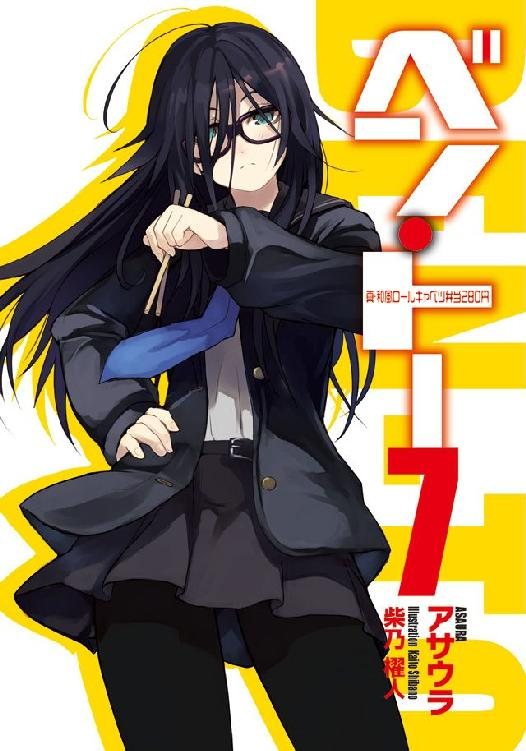
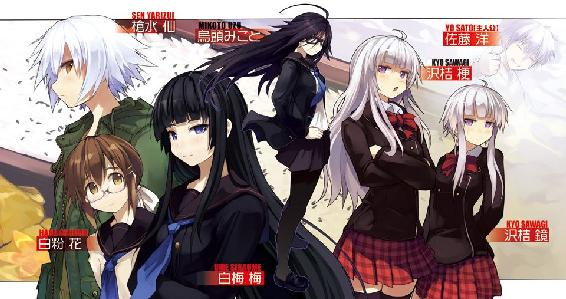
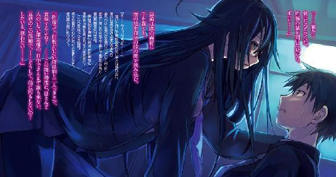
主要登場人物
佐藤 洋（さとう・よう）
烏田高校一年。体力とバカには自信がある。ゲームはセガ派。
槍水 仙（やりずい・せん）
烏田高校二年。ハーフプライサー同好会会長。二つ名は『氷結の魔女』。
著莪あやめ（しゃが・あやめ）
丸富大学付属高校一年。佐藤洋と同じ生年月日の従姉。イタリア人の母を持つハーフ。ゲームはセガ派。二つ名は『湖の麗人』。
白粉 花（おしろい・はな）
烏田高校一年。小説執筆が趣味な女の子。実は一部ネットでは名が知られた存在だったりする。
烏頭みこと（うず・みこと）
19歳の烏田高校卒業生。元ＨＰ部。二つ名は『ウルフズベイン』。
白梅 梅（しらうめ・うめ）
烏田高校一年でありながら生徒会長を担う。白粉をとても大事に想っている。たまに暴力的な一面を見せることも。
沢桔姉妹（さわぎ・しまい）
丸富大学付属高校二年の双子姉妹。やや残念な姉の梗と良くできた妹の鏡。それぞれ生徒会長と副会長を担っている。二つ名は『オルトロス』。
二階堂 連（にかいどう・れん）
丸富大学二年、かつて庶民経済研究部の諜報組織『ガブリエル・ラチェット』の頭目だった男。現在は一匹の狼としてスーパーを駆けている。
山乃守 喨（やまのもり・りょう）
丸富大学の卒業生。現在は女性の家を渡り歩く生活をしている。かつての二つ名は『ガンコナー』。
金城 優（かねしろ・ゆう）
烏田高校三年。最強と謳われる存在。二つ名は『魔導士』。これまで海外にいたが、最近帰国した。
霧島君（きりしま・くん）
佐藤が住む寮の隣人。ロリコン。何故か文化祭以降姿が見えなくなっているが、特に誰も気にしていない。
イラスト／柴乃櫂人
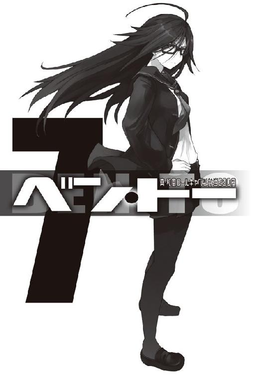
需要と供給、これら二つは商売における絶対の要素である。
これら二つの要素が寄り添う流通バランスのクロスポイント......その前後に於いて必ず発生するかすかな、ずれ。
その僅かな領域に生きる者たちがいる。
己の資金、生活、そして誇りを懸けてカオスと化す極狭領域を狩り場とする者たち。
――人は彼らを《狼》と呼んだ。
１章 ガンコナー
「......君、好みだよ」
山乃守 喨
０
そこはレイクパークと名付けられてこそいるものの、単なる大きな池があるだけの公園だった。キラキラと輝く湖面には月が映り込み、揺れていた。
『彼』は公園のベンチにボストンバッグを投げ置き、隣に腰を下ろす。そして、コートのポケットから先ほど購入した旧３級品の煙草の箱を取り出し、一本、口に咥えた。火を着ければ久しぶりの味わいが口や喉、そして肺に流れ込む。
立ち昇る紫煙が北風に流されていくのを『彼』は寒気と共に見送った。
もう一一月に入った。冬は近い。今年は秋に入っても暖かな気候が続いていたので、暖冬になるかと思っていたが、そうもいかないらしい。まるでバランスを取るかのように、秋の終盤から気温は急激に下がっており、夜になればそれがよりはっきりする。
当てが外れた。もうしばらく大丈夫だろうと『彼』は高をくくっていたせいで〝次〟はまだ、用意していなかった。今から準備したところで、きちんとした寝床を確保するには時が必要だ。
「......帰る所がなくなるってのは、相変わらずキッツイなぁ」
軽そうでありながら、どこか心に染みてくる。そうほめられる声で『彼』はぼやいた。
丁度二本目に火を点したところで聞き覚えのあるバイクのエンジン音が聞こえてくる。『彼』がベンチを立ち、公園の入り口へと向かえば、そこで待っていたのはフルフェイスのヘルメットを被ったライダー。そいつは『彼』を見つけるとシートから降り、近づいてくる。エンジンを止めない様子に『彼』は苦笑するしかなかった。ゆっくり昔話をする気はないらしい。
久しぶり、連。そう言って『彼』は指先から紫煙を昇らせたまま微笑んでみせる。
連と呼ばれた男はヘルメットを取った。今まで押し潰されていたとは思えないほどサラリとした髪が揺れる。その前髪の下には、あからさまに嫌そうな顔がある。
「......それで、用件は？」
最後に会った時はいつか覚えていないが、以前あった子供っぽさは抜けている気がした。
「金貸してくんねぇかな。もしくは居候させて。追い出されちゃってさ」
ははっ、と『彼』は軽薄に笑う。連は笑わない。なので『彼』もまたフィルターで口に蓋をするように笑いを消した。
昔から生真面目な奴だったので、これぐらいのリアクションは想定済みだった。
「いつものように他にストックの娘がいるんでしょう？ オレに頼らなくても」
「それが丁度今、キープがゼロでさ。そりゃ一晩とか、飯ぐらいならなんとかなるんだけど、なかなか......ねぇ？ 一二月に入っちゃえば楽なんだけど」
一二月に入ってしまえば誰もがクリスマスを嫌でも意識する。そんな時、独り身であれば自然と焦りが生まれ、ガードが緩くなるのだ。そこにいくらでも潜り込む余地はあったが、今時期は難しい。冬に備えて皆せっせと男作りに励むが、軽薄そうな『彼』は二番手、三番手に回されがちだった。さすがにそれで同棲させてくれ、と言っても叶うわけがない。
「頼むよ、連。......先輩後輩の仲だろう？」
「......男のオレに囁いてちゃ二つ名が泣きますよ」
「俺の方が追い出されてちゃ笑い話だって。このままじゃ俺が死んじまう」
連は嫌そうな顔を隠そうともしないが財布は出してくれる。彼は女の所を渡り歩く『彼』のような人間を嫌ってはいるが、頼られると決して見捨てられもしない優しい奴。だからこそ『彼』は真っ先に連絡したのだ。返金の催促をほとんどしてこないところも好きだった。女だったら常に手元に置いておきたいが、男である以上困った時に頼るだけで十分だ。
連の財布にあった紙幣の全て、総額一五〇〇〇円を受け取ると『彼』は仰々しくお辞儀をして感謝を述べる。頭を上げた時にはすでに連はバイクに跨っており、『彼』は苦笑した。
お礼にナンパの仕方でも教えてやるつもりだったが、これではしょうがない。どのみち連がするとも思えないが、知っておくべきだろうとは思った。
恐らく、と『彼』は思う。連はよっぽど良い相手でも見つけない限り、一生片想いのままか、自分のように鼻の利く悪い女に騙されて仕方なく結婚するハメになるだろう。前者はともかく、後者は生きたＡＴＭだ。そうならないためにも、自分から攻める術を持つべきだった。
連のヘルメットを被ろうとする手が止まる。何かを見つけ、先ほどとは若干色合いの異なる嫌そうな顔をまた浮かべた。
見やればバイクのライトが照らす先に、二人の女子高生の姿。その冬用の制服からするに丸富大学附属高校の生徒だ。
「ほら、鏡、やっぱり二階堂さんでしたわ」
髪の長い女の子が、もみあげの部分だけを伸ばした女の子に嬉々として告げる。言われた方は、そうですね、とどこか素っ気ない。よく見れば二人共同じ顔付きだ。雰囲気こそ大分違うが、姉妹か双子なのだろう。どちらも美人だった。
ふと、横手からの視線を感じる。二階堂連が『彼』の様子を横目でうかがっていた。嫌そうな顔をしたのは二人に出会ったからではなく、『彼』がいる時にあの二人が現れたせいだろう。
大丈夫だ、というように『彼』は連の肩を叩いた。暇な昔ならともかく、さすがに今高校生には手は出さない。後々問題になりがちだし、何よりもいろんな意味で旨味が少ない。
「二階堂さん、こんばんは。こちらの方は？」
「先輩だよ。君たちからしてもね。丸富の卒業生さ」
連が答える前に、『彼』は柔和な笑みを浮かべてそう言った。
「わたくしたちは二年の沢桔梗と沢桔鏡。現在生徒会長と副会長をやっている者です。そして、スーパーでは――」
「姉さん、多分、通じませんよ。《ガブリエル・ラチェット》のデータバンクにこちらの方はいらっしゃいませんでしたし」
煙草を咥えていた『彼』は懐かしいその名前に口の端がつり上がった。あの組織の名を知っているということは彼女らもまたかつての自分のようにスーパーに生きる者なのだろう。だが、あのデータバンクまで覗いているとなると果たしてこの姉妹は何者なのだろう。興味が湧いた。
「いや、通じるよ。俺もスーパーで生きた口さ。昔だけどね。データバンクには庶民経済研究部の身内まで載せてなかったからなぁ、知らないのも無理はないさ。君たちは？」
《オルトロス》、と彼女らは二つ名でもって答えた。それだけで二人が名の知れた狼であり、コンビなのだとわかる。そしてさらに何か言おうとするものの、それは連が遮った。
「おまえたちはこれからスーパーか？」
「えぇ、そうですわ。本当は西区に行く予定でしたのですけど、いろいろと生徒会の作業で遅くなってしまいまして。今回は松葉さんのお店へ。二階堂さんは？」
「オレもだ。予定外の手痛い出費もあった。本気で狙っていくぞ」
「それはそれは......楽しみですわ」
先ほど姉さんと呼ばれた髪の長い女の子は言うと、爛々とした瞳で連を見つめる。それは血に飢えた獣か、オモチャを見る子供のそれにも似ていたが、どちらかといえば犬が遊び相手を見つけた時の興奮した目つきだろう。
「それでは一緒に参りましょうか」
「いや、オレはまだこの人と話がある。先に行ってくれ」
姉の方は少し残念そうな顔をしたが、すぐに表情を取り繕って『彼』らに別れの挨拶を述べた。去り際に妹の方が『彼』に警戒するような瞳を向けながら一礼し、二人は去っていく。
ふむ、と『彼』は思う。あと数年したら手を出しても良さそうだ。特に姉の方は今の様子からするに手玉に取りやすいだろう。会って間もないが、うまくおだててやればいくらでも尽くしてくれそうな雰囲気を『彼』は感じ取る。問題は妹の方だ。こっちはかなりガードが堅く、自分を姉には近づけさせはしないかもしれない。だが、そういうのに限って一度懐に飛び込んでしまえば......。何より二人共とても美人だ。いっそ二人同時に――。
ブォンという、一際大きなバイクのエンジン音が彼の思考を吹っ飛ばす。
「......何だよ、連。あの二人はおまえのお気に入りか？」
「多分、あなたの前に女性がいたら、それが誰であれ同じことをしますよ」
確かにこの男ならそうだ。『彼』は笑う。基本的にフェミニストなのだ。半額弁当争奪戦という場以外では、恐らく一生女に手を上げることもないだろう。こういう奴は『彼』を嫌うが、『彼』自身は嫌いじゃない。何故ならば女を幸せにしたいという気持ちは一緒だからだ。恐らく、理解はされないだろうが『彼』はそう信じている。
「金は必ず返してください。それじゃ」
ヘルメットを被った連は、それだけ言い残してさっさと去っていった。
「まだ話があるんじゃなかったっけ？ ......まったく」
一人になると、また北風が吹いた。酷く冷たい。『彼』は短くなった煙草を携帯灰皿に放り込み、己が空腹であることを意識した。
手持ちの食料は追い出される直前に持ち出したコンビーフの缶詰が三つとスルメだけ。酒の肴ならともかく、食事とはお世辞にも言えない。
「スーパーか。......久しぶりに行ってみるかな」
しかし懐に余裕はない。半額弁当でさえ、今だとかなりイタイ。これからしばらくの間ネットカフェに泊まり込み、ドリンクバーで腹を膨らませることになるのだ。それを考えると......〝あの方法〟で腹を満たすのが無難だろう。それをするにはかなり時間帯が悪かったが、スーパーは入店するだけなら無料なのだ。行って損はない。さすがにお札を全て抜き取った連の財布にこれ以上期待はしないが、嫌な顔をするのを見て、笑ってやるのもいいだろう。
もしかしたら、都合の良さそうな娘がいるかもしれない。
「一人で牛の世話でもしている田舎娘とか、いねぇかなぁ。今時難しいか。はははは」
『彼』は己の二つ名の由来である伝承を口にし、一人笑った。
『彼』の名は山乃守喨。丸富大学の卒業生。かつて庶民経済研究部の一人にして、田舎娘を誘いては死に至らしめる、愛を囁く妖精の名を持つ古狼。
人はかつての『彼』を――《ガンコナー》と呼んだ。
１
秋の暮れ。北国ではすでに冬の部類に入るのかもしれない一一月。長引いていた残暑も一〇月後半になれば勢いを失い、今月に入ってからはそれまで出し惜しみをしていた寒気をまとめて放出しているかのように、気温が下がっていた。
だからなのか。烏田高校部室棟、最上階である５０２号室の窓から見る空は、午後の二時だというのにどこか寒々しく見える。......いや、そうではない。きっと、今の僕の胸が空虚に支配されているからなのだろう。
――体育の日を過ぎて約二週間。金曜日の今日、集団失踪事件が発生した。人が忽然と姿を消す。それも集団。大事件だった。そして犯人は僕、佐藤洋とその寮の友人たちだった。
信じてもらえるだろうか。この大事件の全てを僕たちは無意識にかつ、悪意なくやり遂げてしまったのだ。自白と弁解を込めて、今こそ語ろう。この事件......『プロジェクト・ディスティニー』と名付けられし事の真相にして僕らが立てた壮大な計画......半世紀もの間隠されてきた日本の秘密、過去より魂のバトンを受け取りし若者たちの情熱と共に――。
この長編ミステリーノベルのような華麗な書き出し、本にすれば何かしらの賞を得ることは確実と思えたがそんなことはどうでも良くって、とりあえず順に話していこうと思う。
今日、僕らの学校ではあるイベントが催された。恐らく人によっては嫌悪感すら抱くであろうかのイベント、烏田高校恒例全一、二年生によるマラソン大会である。
話はいきなり前後するが、昨夜のことだ。烏田高校男子寮で同級生の神田君たち五人と何をするでもなくダラダラと話をしていると、ふとあることに疑問が生じた。
何故、マラソン大会をしなくてはならないのか？
恐らく〝スポーツの秋〟にちなんでいるのだろう、ということぐらいは察するが、何故マラソンなのか。全国の学校で執り行われている行事なのに、これを行うことの目的がいまいちはっきりしないという大変摩訶不思議なイベントが他にあろうか。
この謎に迫るため、秋の夜長に僕たちは議論を重ねに重ねた。そして深夜アニメすら放送されない時間帯に至り、僕たちは一つの結論、そしてそこに隠されている巨大な秘密を解き明かすのに成功したのだ。
マラソン大会自体は恐らく〝スポーツの秋〟にちなんだもの......では、この〝スポーツの秋〟とは何なのか。これは〝秋といえば......〟に続く四つの文句の一つ、つまり〝食欲〟〝行楽〟〝読書〟と並び立つものだが、実は〝スポーツ〟のみ、明確な由来が存在しないことが我々の綿密なリサーチの結果、判明した。一般的な憶測としては一九六四年に開催された東京オリンピック及びそれを記念して制定された体育の日に関係しているのだろう、というものがある。実際、それ以前には存在しない文句だったらしい。だが、何故それでマラソンなのか？長時間の議論を経て、我々はようやく最初の疑問へと立ち戻ったのだった。当然のように東京オリンピックでめざましい結果を出したからであり、これに感化された教育関係者が学校行事に取り入れたのではないか、と僕ら六人はすぐに思い至ったものの、その当の大会のマラソンでは日本男子が銅メダルを取っただけだった。さすがにそれでその後数十年もの間、運動が苦手な子供たちに絶望を与え続ける悪夢のイベントが生まれることになったとは考え辛い。我々の議論は暗礁に乗り上げた......かに思えた。僕たちの中で、最も性欲旺盛でありながら奥手というエロピュア（エロ＆ピュア）な矢部君がここで驚くべき情報を口にしたのだ。
「確か、丁度そのぐらいの時期からブルマの形が変わったんだよな」
僕たちは無意識ながらそれが大きな鍵となっていることを直感した。矢部君により詳しく話を聞いた時、数十年もの間秘匿されてきた日本という国の暗黒面に、ついに触れることに我々は成功したのだった。......つまり、こうだ。ブルマ。現在では二次元をはじめ、いかがわしい意味合いでスクール水着等と並び、若さとエロスを象徴する性的フェティシズム衣装の一種のそれは、日本では百年程前に体操着として教育現場に導入され始めた。しかしながら当時のものは今現在我々が想像するものとは違い、ちょうちんタイプ、つまりモコモコとしたエロスもクソもないような代物だった。それが七〇年代頃から今現在知られている大腿部露出タイプのピッチリしたエロめなものに変容する。これには当時の人気スポーツであり、東京オリンピックでは金メダルを獲得した女子バレーボール選手のユニフォームの影響が強いとされている。......さて、ここで奇妙なことにお気づきかと思う。東京オリンピック開催、体育の日の制定、スポーツの秋の発生、そしてブルマの改変......。これらが全てわずかな期間の出来事であり、その後に全国的に教育現場でマラソン大会が行われる習慣が発生している。これらは単なる偶然なのか。ここに何かしら、そして、誰かしらの意図が感じられはしないか。
即ち、これらは何者かが、何らかの思惑をもって仕組んだ事象なのではないか？
その者の思惑とは、そしてマラソン大会の存在理由とは......。我々の最終結論、それは――『ブルマを穿いて走る女の子のケツを長時間眺めるため』
――間違いなかった。揺れるケツ、かすかにはみ出る魅惑のパンティ、十代のうら若き乙女が太ももを大胆に晒して走る姿を鋭意鑑賞するためだ。そして体育の日及び〝スポーツの秋〟の文句は教育現場、またはこの陰謀を企てた偉人がマラソン大会を極自然なものとするために作り上げたプロパガンダだったのではないだろうか。
深夜三時過ぎに至り、僕らはついに真実に達した。半世紀にもわたる何者かの陰謀に、恐らく世界で初めて到達したのだ。僕らは歓喜した。そしてこの壮大なプロジェクトを作り上げた見知らぬ過去の偉人に驚愕と共に畏敬の念を抱いた。彼らのおかげで数え切れない男たちが多大な感動を得ていたことは間違いないのだから。
だがここで一つ、巨大な壁が僕らの前に存在するのに気がついた。誰もがうすうす感づいていたと思うのだけれど......ブルマって九〇年代半ばから段階的かつ加速度的に消滅しており、とっくの昔に教育現場からは締め出されてしまっているのだ。実際、僕ら烏田高校では男女共にハーフパンツが採用されている。ちなみにこれに関連しているのか、ブルマに特別な感情を抱くのは実は三〇代半ば過ぎから上の世代であり、それ以下の年齢では露出度が高いというだけの衣装の認識でしかなかったりする。たまに矢部君のように二次元等で訓練され過ぎた兵、または単に雰囲気で流されているだけの者もいるが、実際少数派だろう。
過去の偉人たちの栄光と思い遣りも時代と共に潰えたのか。嫌な時代になったものだ、と年寄りが現代を語る常套句を十代半ばにして口にしてしまう僕ら。誰もが暗澹たる気持ちを胸にため息を吐く中、ある男が立ち上がった。やはり矢部君である。......彼は言う。
時代だとして汝諦めんとするか。時代とはその時を生きている我らそのものであり、即ち我らが変わることは世界を変えることなり。過去の偉人が為し得し秘められし偉業、これに気づきし我らはこの魂を継ぐ資格......否、宿命を神より与えられたとは思わぬか？
確かにこの真実に勘づくタイミングとしてはこの上なかった。だが、ブルマがないのだ。ブルマが存在しないのだ！ ないものを鑑賞はできぬ!! 我々は叫んだ。だが、矢部君は引き下がらない。彼は言う、マリー・アントワネットを思い出せ、と。最初意味がわからず、あぁコイツバカなのか、と納得しかかったが、よくよく考えてみればマリー・アントワネットといえば『パンがなければケーキを食べればいいじゃない』でお馴染みの人だ。そう、矢部君はバカじゃない、ギリギリ紙一重で天才の部類だった。即ち彼が言わんとしたことは『ブルマがなければ他を見ればいいじゃない』である。
それを理解した瞬間、全員の頭に同じ言葉が迸った。
――胸だ。マラソンではその部位は小刻みに揺れ動き、見る者に感動を呼び起こす。そこに汗ばみ紅潮する肌、荒い吐息が混じれば最高だ。また半世紀の間に食料事情が劇的に変化し、食生活の欧米化が進むにつれて年々女性の平均バストサイズは向上しており、最近では胸を小さく見せるブラなるものが発売されるほどであるからして、もしかしたら半世紀前の偉人たちが夢想したブルマ鑑賞よりもさらに強いエロスをそこから引き出す事が可能かもしれない。
矢部君は続ける。動物学者、デズモンド・モリスが提唱した説に、本来猿は大きく赤みを持った尻で性的アピールを行っていたが、二足歩行するに従い、その役目は尻よりも目立つ位置にある胸へと移行していった、というものがある。即ち、尻から胸への性的対象の移行は極自然な流れにして自然の摂理である、と。まさに偉人の意志受け継ぎし現代の戦士に極めて相応しい鑑賞部位といえよう。
もはや僕らに躊躇いはなかった。胸だ。胸を見よう。女子高生の揺れ動く乳に全てを託そう。僕たちは立ち上がった。
マラソン大会では街中を走るものの、男女では走る距離が異なる関係上、コースは別々だった。ここで僕たちが考え出したのは教員の監視がつくポイントをあらかじめマークし、秘密裏にコースを外れ、女子の走行ルートへ紛れ込むというバカでもわかるもので、一人ならともかく六名もしれっとしてれば誰も何も言ってこないだろうという単純明快にして大胆不敵な計画だった。我々はこれを『プロジェクト・ディスティニー』と名付け、実行に移した......のだけれど、恐らくすでに冒頭の事件との関連から結末の予想がついたかと思う。
まず第一に特殊な家庭環境に加え、半額弁当争奪戦により日々鍛えられし僕はともかく、それ以外の連中はディス・イズ・インドア派みたいな連中だったところに問題があった。
周りに他の生徒や監視員がいないのを見計らって、僕が先頭となりコースアウトしたまでは良かったものの......疲れ果てていた仲間たちは予想以上に間隔の広い縦列となってしまい、最後尾を走っていた神田君の後方にはすでに一般生徒が追いついていたのだ。悪いことにそいつらは神田君に続いて次々にコースアウト。しかもそういう時に限って天才というのは奇跡にも似たミスをするもので、僕の後ろ、二番手を走っていた矢部君がエロい妄想でもしていたのか、途中で僕の姿を見失って道を間違え、『ハーメルンの笛吹き男』よろしく、男たち数十人を引き連れて隣町へ侵攻を開始するという謎の行動を起こし、事を大きくしたのだった。
そして僕はといえば、しれっと女生徒コースに侵入したまでは良かったものの、彼女らの視線が恐ろしく痛い。胸とか鑑賞できる状況じゃない。何故こんなに僕だけ注視されているのかと、ふと振り返ってみると後続していると思われていた仲間たちは皆無であり、ぶっちゃけランボーもビックリなワンマンアーミー状態だった。おいおい一人でこの人数はさすがに無理さベイビー、とか呟きつつも、きっと女性専用車両とかに誤って乗っちゃったサラリーマンってこんな気持ちなんだろなー、とかボケっと考えていると速攻で教員に発見され、その後当たり前のように捕縛される極めて自然な流れに身を委ねることとなった。
その後捜索隊の手によって、隣町の交番で道を聞いている矢部君とその他数十名の男子も発見され、前代未聞の集団失踪事件にして男たちのロマンと熱き想いが込められた『プロジェクト・ディスティニー』は終了したのだった。
ちなみに全員が捕まった後、今回の事件の動機を訊かれたので、その全容を僕は神田君たちと共に教員一同を前に語った。男性教員からは笑いと賛同を得られたが、女性教員からは「バカか？」と極めて短い文字数にて酷評されたことを付け加えておこう。
「あぁ、それで終わった時、先生たちが騒いでいたのか。......ふむ。話はわかったんだが、それで、どうしてそこからそんな状態になるんだ？」
「昨夜は夜遅くまで討論していたせいで寝坊しちゃって。朝食を摂り損ねたんですよ......。しかも長いお説教の後にもう一回マラソンさせられて実はついさっき終わったところなんです」
さらに言えばマラソン大会の関係で学校自体は昼前には終わるものの、それに関連して購買部もまた今日はお休みなのだ。簡易シャワールームが校内にあるので、そこで汗を流せるし、寮に戻ったところで食料があるわけでもない。ならば、といっそこの疲労と空腹を抱えたまま我がハーフプライサー同好会の活動である、スーパーマーケットでの半額弁当の奪取に向かうのもいいだろう......と、そう考えたわけである。空腹感を鈍らせてしまいそうな眠気を除けば、半額弁当奪取のためにこれほどまでに適した状態はない。
それを言うと烏田高校二年生にしてＨＰ同好会の会長、《氷結の魔女》の二つ名を持つ槍水先輩は、大変だったな、と苦笑する。彼女は肩から提げていたボストンバッグを円卓に投げ出すと、僕の隣の席に腰を下ろした。
今日の先輩はマラソンの後に一度アパートに帰って着替えてきたらしく、いつもの制服ではなくモッズコートを羽織っていた。さすがに本物の軍用のそれではないようだが、荒々しいデザインのそれは彼女がいつも履いているゴツいブーツや、ワイルドに見えるよう丁寧にセットされた髪型ともよく似合っていた。またそれでいて彼女自体がゴツい印象になるかといえば、違う。モッズコートがダボッとしているせいで、その袖や襟から覗く手や首筋の細さが妙に強調されているし、彼女が纏う香りもたまらなく柔らかで、女性的だった。それはいつものエタニティとかいう香水のそれではなく、ボディソープやシャンプーの清潔感のあるものだ。それに......彼女が椅子に座ると同時に組まれる黒いストッキングに覆われたしなやかな両足がゴツいという印象を完全に払拭する。しかもコートの裾が長いせいで、下のスカートが見えず、もしかしてコートの下は何も穿いてないんじゃないか!? という淡い幻想を見る者に抱かせる相乗効果まであるのだから見事なものだ。何時間でも眺めていられそうだった。
先輩は円卓に頬杖を突きながら、不思議そうな目で僕を見てくる。シャワー浴びたての僕の様子に見惚れているのかもしれ――
「その、なんだ。男子寮ではいつもみんな、そういう話をしているのか？」
神よ。若さ爆発する男子高校生が群れを為す男子寮において長時間討論するといえばエロい話以外ではまずありません。しかしそれを素直に言って良いものでしょうか？ それで彼女が「そうなのか。それは素敵だな」と僕に微笑みかけてくれるものでしょうか？
疲れに任せ、今まで僕は一体何をさも当然のように語っていたんだ？ 半世紀前に仕組まれた計画とブルマ、そしてマラソン大会での視姦部位の選定を明け方近くまでやっていたとか頭がおかしいと思われても仕方ない。というか今になって思うとどう考えても昨夜の僕はおかしい。明らかに女っ気の欠片もない男子寮の哀れな空気に呑み込まれた上、理性が薄れてノリだけが先行するあの深夜独特のテンションが僕を狂気の討論会に没入させていたのだろう。
こうして部室で、二人っきりで、槍水先輩と目を合わせているとそれがよくわかる。
「......どうでしょうかねぇ......あんまりは......えぇ、えぇ」
曖昧に誤魔化しつつ、僕は先輩の視線から逃げるようにして部室を見渡す。他の部の倍以上の広さがある部室に、大きな窓、部屋の中央にドンと置かれた円卓、そして生活用品（主に食事関係の）が詰まった棚、冷蔵庫、電子レンジ......。これで流し台があれば完璧だな、とか思っていると、ふと、廊下からトトトトトと小動物の走るような音が聞こえてくる。
そして、ガチャリと勢い良く部室の扉が開くと......眼鏡をかけた変なのが某黒い虫のような不気味さと俊敏さでもって僕に急接近してくる。
「フンフン......チィッ！ 遅かったか!!」
僕の同級生にしてＨＰ同好会の会員、白粉花が、顔を歪めて言い放った。......まぁ入室してきた段階で眼鏡を装着していたので、何となく想像はつくが......。
「どうして折角のマラソン後にシャワーなど浴びてしまうんですか!? 勿体な...あっあぅ！」
僕はすかさず彼女の、リボンで束ねた後ろ髪を掴み、引っ張る。慌てて制服を着たのか、尻尾のような後ろ髪は冬用制服の上着と背の間に挟まれていたので、それを引っ張り出しながらやったのでやや強めになってしまったが、まぁいいだろう。掴んだ髪の毛にはほんのりとした湿り気があり、どうやら彼女もまた一旦帰宅して汗を流してきたようだ。......っつぅかアレか？こいつは人の汗の匂いを嗅ぐためだけに、慌てて帰宅して着替えて戻ってきたのだろうか。
彼女が勉強やそれ系のモノを観察する時に装着する眼鏡を入室前から装着していたことや、後ろ髪のことを考えると......うーむ、恐ろしいまでの行動力だ。
「うぅ......す、すみません。佐藤さんたちがマラソンをやり直されていると聞いて、まだ間に合う、チャンスだと思ってしまい......」
「何のチャンスだよ......。アレ？ 先輩、どうしました？」
先輩は席を立ち、いつの間にやら取り出していた携帯を開きつつ、窓の外を見やっていた。
「桃の奴、早いな。......お前たちは、これからどうするんだ？」
まだ昼過ぎではあったが、僕はこのまま半値印証時刻まで部室で時間を潰す、白粉はネット小説だかの原稿を打とうと思っている、と眼鏡を外しながら告げた。
「そうか。......いや、実は今日、私は争奪戦には参加できないんだ。これから――」
なんでも来週の金曜に迫った修学旅行の最後の打ち合わせ......という名目の、同じ班の紫華先輩の家において、木之下先輩との三人での、二晩お泊まり会をするんだとか。部室に来たのは単に木之下先輩がやって来るまでの時間調整だったようだ。
半値印証時刻まで先輩といつものようにボードゲームを......とか僕は考えていたのだけれど、当てが外れたようだ。ちょっと、残念だった。
それが顔に出てしまったのか、先輩は申し訳なさそうに言う。
「悪いな。白粉はともかくとしても、佐藤、相手をしてやれなくて」
「いえ、全然大丈夫ですよ。昨日はあんまり寝てないんで、ちょっと仮眠でもとろうかと」
「ん、そうか？ 佐藤が時間を持てあますようなら、夕暮れぐらいまでは付き合おうかと思ってたんだが......。それなら、いいか」
先輩はボストンバッグを手に取ると「それじゃまた月曜にな」と短く言葉を残して部室を後にした。......僕は選択を誤ったのだろうか。今日はこんなんばっかりだ。
先輩が消えただけで急に部室内が寂しくなった気がした。白粉が来たので人数的にはさっきまでと何も変わってないはずなのだけれど......。
......今からそんなことを言っててどうするんだ、僕は。
槍水先輩たち二年生は来週の金曜から七泊八日の修学旅行、さらに土日を含めて旅行休みで、約二週間もの間部室に来なくなるのだ。
「......ほぅ。佐藤さんはこれから仮眠ですか。......どうぞどうぞ、お休みになってください。あたし、静かにしていますから」
そう言いながら白粉は先輩が座っていた席――つまりは僕の隣の席に腰を下ろすと、カバンからノートＰＣと......そして何故か普段はまず見ることのないデジカメを取り出した。よく見れば先ほど外してケースの中にしまったはずの眼鏡がいつの間にやら再度彼女の顔に......。
そのレンズの奥の瞳は、貴重なサンプルを観察するマッドサイエンティストのように鋭く、化け物のようにおどろおどろしい。
「何となく取り出したこの買ったばかりのデジカメは、何となく動画モードにして、何となくここに置いて、っと。あ、気にしないでください。何となくカバンに入れておきたくなかっただけですから。さぁ、佐藤さん！ 思う存分お昼寝を......あぅ！」
先輩が消えたせいで、部室には人間が一人に化け物が一匹。寂しく感じるのも頷けた。
白粉を問い詰めたところ、寝ている間に特定の刺激を受けた際の人体の反応を記録するだの、これは大変貴重だの......わけのわからんことをほざきだしたので、僕は彼女のデジカメを没収し、安心できたところで部室でしばしの仮眠をとったのだが......これが失敗だった。起床して、デジカメを返す際――
「......佐藤さんって、メントール系のシャンプー使っているんですね......」
と、ボソッと呟かれた時はさすがに己の迂闊さを悔いた。その時の白粉はノートＰＣを超高速でタイピングしており、その流れ行く文字列を眼鏡越しに見つめつつ、口元に『ニチャ......』という笑みを浮かべていて凄まじく怖かった。......一体僕は寝ている間、何をされていたのだろう......？
今日はマラソン大会で疲れたので、と言って彼女は争奪戦には参加することもなく帰っていったのだけれど......よくよく考えてみれば、疲れていたのなら日が暮れるまで部室になんぞいなくても良かったはずである。なのにまるで僕が起きるのを待って帰っていったというのは......どういうことだろう。好意的に考えれば、僕が寝ている間に勝手に帰ってしまっては失礼だから、ということなのだろうが......得られる資料は全て一片の漏らしもなく、という方が奴の生態的に適切な気がする。うーん、考えれば考えるほどテンションが落ちていきやがる......。
ただ、実質的にシャワールームに置かれていたシャンプーの匂いを言われただけでここまで人に恐怖を与えられる......そう考えると、槍水先輩の香りについて触れなくて本当に良かった、と心から思った。意識的に付けられる香り――つまり香水ならともかく、その気のない微細な香りまでいくとさすがに引かれていたかもしれない。
そんなことを考えながら、一人僕は学校最寄りのスーパーマーケット、通称アブラ神と呼ばれる半額神が治める店へと向かった。
一一月のいささか肌寒い風の中、空を見上げてみれば辺りの街灯にも負けじと星々が輝き、瞬く。これで満月でも見えれば見事なものだが、今宵は細く尖った月だ。それはより一層空気の冷たさを強調するかのように見えた。実際、明日明後日は今日以上に冷え込み、今季一番の寒さになるんだとか。......今日は体が温まるような半額弁当を奪取できればいいなぁ。
果たして見えてきたのは星々の光を完全に振り払うようにしてライトアップされるスーパーマーケット。どこか宮殿を思わせる荘厳さ、神々しさ。それでいてほのかに感じる家庭的な温かさ。相容れぬ二つを内包する不思議な場、そこに僕は飛び込んだ。
センサーが反応し、自動ドアが開く。寒くはない、少し涼しいという程度の温度で微調整された店内の空気を浴びる。そして、放たれてくる鋭い視線。狼の警戒。一一月の夜風の中にあっても反応しなかった僕の肌に、毛が逆立つ感覚と共に鳥肌が浮き上がる。
......気配からして狼の数は七といったところ。一度視線を向けられたものの、すぐに警戒が解かれたところからするに全員馴染みの連中だろう。
聞く者の心を軽やかにするような店内ＢＧＭを耳に、僕は足を止めることなく店内の外周を舐めるようにして回っていく。夏の異常気象の影響を受けていまだ値段の高い葉物が並ぶ青果コーナーを抜け、照明を弾き返して煌めくクラッシュアイス上のサンマがメインの鮮魚コーナーをも抜け......そして、総菜・弁当コーナーへ。
総菜はいつもよりまばらな品数だ。売れたのだろう。弁当は......三つある。一つめは小さめの容器にコロコロとした立方体のチャーシューと、ふんわりとした炒り卵が目を引く『夜食に、麺類のお供に、ジャストフィット!! ハーフチャーシューチャーハン』。二つめはデカデカとした大きな丼容器を陰陽の二色で彩る『きっと誰もが一度は夢に見る組み合わせ！ 牛丼＆親子丼の奇跡のコラボ丼』、そして最後『寒い夜にはこいつが一番！ お肉たっぷり、ボリューム満点!! 和風ロールキャベツ弁当！』......である。
三つとも『！』の過剰使用が目に付くものの、その勢いがどの弁当でも空回りしていない。どれもこれもうまそうだし、ハーフチャーハン弁当はともかくとしても、他の弁当はボリュームも満点だ。固形物を口にしていない今日の僕からするに、どれもこれもたまらない。
今日はここで手に入れてやろう。......というか、一時間後のジジ様と呼ばれる半額神が治めるスーパーの半値印証時刻を待っていられない腹具合なのだ。
狙いはロールキャベツだな。汁物であり、弁当にしづらい料理ではあるが、これはゼラチンを用いてクリアされているようだ。ゼラチン自体は基本的に無味無臭であるため料理に影響は与えず、冷えた状態ではゼリー状に汁を固められる。それが電子レンジで温められることによって再度液化するというわけだ。冷えたままで食べられることを考慮するコンビニ弁当などではまねできない、レンジの使用が前提であるスーパーの弁当だからこその技術である。
しかしそんな技術力の高さよりも僕の関心を引いたのはやはり、そのロールキャベツそのものだろう。......デカイのだ。普通ロールキャベツといえばせいぜい大きくても幼い子供の握り拳ぐらいだが、こちらは少年の握り拳という感じのものが、二つもある。またそれを煮込んだスープがコンソメではなく、あえて薄い琥珀色の和風だしというところもにくい。コンソメ系もいいが、やはりそこは日本人、和風が馴染む。また弁当自体はゴマのかかった大盛りのご飯、漬け物、付け合わせの卵焼き等にロールキャベツという大変シンプルな構成であり、即ち、ロールキャベツがご飯を口に運ばせる役目を担った唯一のおかずである。そう考えた場合、やはりコンソメやトマトベースのものより和風だろう。
僕は口の中に湧き起こる唾を飲み込み、すでに抑えが効かなくなりつつある腹の虫を落ち着かせながら歩み行く。どうせ部室に戻っても今日は誰もいないのだ。一人で近くの公園で食べてしまおうか。......うん、悪くない。となると何か飲み物も必要だな。
歩みを止めることなく弁当コーナーから飲料コーナーに向かうと、丁度そこには見知った顔。顎髭を生やした男と坊主頭の男。どちらも幾度となく拳を交えてきた相手だ。僕は自然な足取りで彼らと並ぶように飲料コーナー前に体を向けて並んで立つ。
俺はコラボ丼だ、坊主の独り言のような言葉に続いて、顎髭がロールキャベツと漏らすように言う。僕は口の中で舌打ちをしながら、同じく、と告げた。途端に顎髭はため息。
「まぁ三つしかねぇ以上、どうしてもそうなるわな。......辛い戦いになりそうだ。マラソン大会の後だから、走り終わった直後の昼飯にガッツリ喰う奴なんてそういない」
全員がいつも以上に空腹だ、ということだろう。白粉のように普段はあまり運動しないタイプなら食事よりも休息への欲求が上回るのかもしれないが、僕らはそうはいかない。
「それだけじゃない。アイツもおまえらと狙いが被っている」
アイツ？ と、僕は口元に薄く笑みを浮かべる坊主を横から見やる。彼はクイッと顎でどこかを示した。その先にいたのは、こちらに歩いてくる茶髪の女。今日は暖色系のセーターに私服のスカートを合わせていた。彼女は「チャオ」と、ダボッとした大きめのセーターの袖から指先だけを出してヒラヒラと動かす。
茶髪が来ると、顎髭が苦々しい顔でその場を離れ、坊主もそれについていった。
「今日は月桂冠にならなくても、キツイ戦いになりそうね。あの二人の様子からするに、あなたもロールキャベツなんでしょ？」
僕はチラリと横目で彼女を見つつ、頷いた。彼女はそっと何気ない仕草で軽く腕を組むのだけれど......その腕の位置というのが胸の下だ。大きく柔らかなセーターはバストラインを曖昧にするが、腕で下からすくい上げるとなると話は違う。その形、サイズがほのかに見えてきて......何というか、曖昧なボディラインが逆に......僕の視線を誘うのだ。
僕は雑念を頭から振り払うように視線を陳列棚に向ける。ふと、僕らが眺める陳列棚に珍しい飲料があるのを見つけた。『関東・栃木レモン』という、紙パックの乳飲料だ。確か栃木県で製造されているもので、少し前にテレビとかで取り上げられてちょっと話題になっており、気になっていた商品である。実際目の前の棚にも『テレビやネットで話題の！』と書かれた小さなポップが貼り付けてあるぐらいだった。
......買ってみようかな。でも、乳飲料と和風の料理とを一緒に食べるのはさすがにキツイよなぁ。小学生ぐらいの若さと勢いがないと抵抗がある組み合わせだ。かといってここで逃がして再入荷がなかったら......。うん、よし、これはデザートというか、寮に戻ってから飲むとして、食事用にお茶も買おう。コンビニ等で買うよりスーパーの飲料は安いしね。今月は特に高い物を買ったりもしていないから懐も余裕が......あ、待てよ。そうだ、まだ今月は全然遣っていない。というか、先月もろくに遣っていなかったから、まだお金を下ろしていなかっ――。
その瞬間、いきなり首筋に刃物を当てられたように寒気が走り、全身から汗が噴き出した。茶髪が横目で何事かと僕を窺っているが、気にしている場合ではない。僕は慌ててポケットの中から財布を取り出し、そして......とてつもない危機だけは回避出来たことを悟った。
――財布に......お金が......ほとんどない......。
それ自体が危機、しかし本当の恐怖はこの財布の状態で半額弁当、関東・栃木レモン、ペットボトルのお茶を持ってレジへ行った時の方だ。レジに行ってお金が足りないとか、生き恥もいいところである。その時すでに後ろに誰かが並んでいようものなら......布団を頭から被って悲鳴を上げたいぐらいの恥辱だったはず。僕は類希なる直感力でそれを回避したのだ！
いやぁ、危ねぇ危ねぇ......と僕は胸の内だけで呟きながら、一人ニヒルに笑う。さすがにこれで関東・栃木レモンまでは手が出せないから......いや、アレ？ えっと、お茶もキツイ......かな？ ま、まぁいい。部室に行けば麦茶が......ん？ いや、ちょっと待て......。
「......あの、さ。ロールキャベツの弁当って、定価、いくらだっけ？」
「え？ えーっと、五六〇円だったはずだけど、どうしたの？」
僕は茶髪に礼を言って、財布を手にしたまま足早に再び弁当コーナーへと戻り、それぞれの値札を見る。ロールキャベツ弁当五六〇円、コラボ丼五三〇円、ハーフチャーハン三五〇円。そして、僕の財布の中身、総額二一五円。弁当が半額になったとしても、ロールキャベツ弁当が......買えない!? しまった!!
僕は頭の中でスーパー内のＡＴＭの場所を思い出そうとするが、よくよく考えればこの店にはそんなものはない。銀行は駅前まで行かないとないから論外として、近所のコンビニ......くそ！ どっちにしろ今下ろすと時間外だから手数料が......！ 僕の頭が沸騰しそうになるぐらい、全ての可能性を模索するが、それ以前の問題があるのを思い出す。携帯を取り出し、時刻を見る。一九時五〇分。手数料を覚悟で最寄りコンビニのＡＴＭへ向かったとて、どんなに急いだとしても往復で五分はかかる。......間に合う......のか？
まだ半値印証時刻前だというのに、妙に殺気立っているのが気になるのか、エントランス近くでウロウロしている僕に狼たちの視線が集まってくる。しかしそれも一瞬にして消え失せ、代わりに店内の空気が爆発的に張りつめたのがわかった。迷っていた足が止まる。
「......半値印証時刻に至ったのか。クソッ！」
目に見えなくとも空気がそうだと伝えている。この店の半額神ことアブラ神が降臨したのだ。
僕は躊躇した。選択肢は多くはない。一旦この場は諦めて手数料を支払う代わりにお金を下ろし、違う店に行くか。それともここでハーフチャーハンを狙うか。二つに一つ。僕は腹の虫に問いかけた。......答えは、決まっていた。
僕は踵を返し、戦いの野へと戻る。気配を消しての静かなそれではない。肩をいからせ、大股で歩み行く。そうしなければ心が折れてしまいそうだった。ハーフチャーハンではさすがに物足りないが、すでに胃袋は食事の刻として構えてしまった後なのだ。さすがにこの状態で一時間我慢してジジ様の店に懸ける気にはなれないし、手数料も痛い。今夜はここでチャーハンを獲る、それからのことはその時になってから考えよう。
島棚の間からアブラ神が恵みである半額シールを貼り終え、総菜・弁当コーナー横のスタッフルームへと戻っていくのが見えた。
彼は観音開きの扉の前で足を止めると、振り返る。そして深々と一礼。その後に、彼はその扉を開き、その奥へと姿を消す。そして......鳴り響く。観音開きの扉が自重により自動で戻る、バタンという音。即ちそれは、争奪戦開始の合図。戦いの狼煙。
今、腹の虫に支配されし無数の獣が戦いの野に解き放たれる。
野砲でもぶっ放したかのような衝撃と轟音と共に、僕を含めた八匹の狼が弁当コーナーへと踏み切った。初めから歩いていた状態だった僕は素早くトップスピードに達するが、位置はエントランスに近かったため、いささか出遅れる。
僕の目の前を坊主と顎髭が疾駆し、弁当コーナーへ彼らは正面から接近していく。ほぼそれと同じタイミングで、左右の通路からそれぞれ巨漢と茶髪が迫る。坊主、顎髭が弁当コーナー前に到達すると同時にそれぞれ左右に方向転換。茶髪と巨漢へぶつかっていく。巨漢は顎髭たちがスピード勝負で来ると読んでいたのか、坊主の攻撃に対応しきれず、蹴りをモロに受け、一気に劣勢になる。一方の顎髭も同様に蹴りを繰り出すも、茶髪は走ってきた勢いのまま飛び込み前転し、蹴りの上を難なく越える。顎髭が蹴りの勢いをうまく活かし、全身を回転させるようにして裏拳を繰り出すも、やはり茶髪はそれを立ち上がると同時に左手首で受け止め、空いた顎髭の脇腹へ右肘を打ち込んだ。
そんな攻防の一拍の後に、僕を含めた残りの四匹の狼が弁当コーナーへ到着。瞬時に乱戦を展開する。中心は顎髭と茶髪、坊主は優勢だがいまいち巨漢を押し切れない。
このスーパーでよく見る顔の狼が僕の横に並ぶ。僕はチラリと彼に視線を送る。彼はそれを敏感に感じ取り、いいだろう、と短く口にした。
不利なポジションである乱戦外周にいる狼同士ほど、戦いやすい相手はいない。
僕はまず目の前で背を向けていた男の肩を掴む。すぐさま振り払われそうになるが、その前に共闘を申し込んだ狼がそいつに一撃を放つ。よろめいたところを僕はそいつの肩を下へと引っ張り、引き摺り倒した。その上を狼が踏みつけ、前へ。僕もまた倒れいく男を踏みつけ前へ飛ぶ。顎髭と茶髪の戦闘が目前に迫る。二人とも隙を見つけてはロールキャベツ弁当に手を伸ばそうとするが、その手は時に弾かれ、時に強烈な攻撃で体ごと弁当から引き離される。
狼が顎髭に拳を繰り出す。この男もロールキャベツ狙いか。
顎髭は茶髪の攻撃をかわすと、狼の拳をも首を捻ってかわす。そして狼の伸ばされた腕を横からひっつかむと弁当コーナーへ向かって引っ張った。たったそれだけで狼はバランスを崩し、まるで飛行するスーパーマンのような体勢で宙に浮く。一瞬顎髭の奴が特殊な技でも使ったかのように思えたが、そうではない。顎髭が腕を引っ張るのと同時に、茶髪がその狼の足を払っていたのだ。そうされては攻撃のために踏み込んだ己の勢いだけで彼は宙に浮かざるを得ない。
その狼はもう片づいたと判断したのか、共に前線に躍り込んだ僕を、茶髪たちはその瞳で捉え、双方攻撃目標を僕へと切り替えてきた。先にこちらを潰そうというのだろう。茶髪が下段、顎髭が上段に役割分担して攻撃してくる。
僕は己の失態に気づいた。二人には僕が彼らと同じくロールキャベツ弁当狙いだと先ほど告げてしまっていた。まさかお金がなくてハーフチャーハン狙いだとは夢にも思っていないだろう。
......弁解している余裕はない。
僕は飛び膝蹴りのようにして体を持ち上げ、茶髪からの足払いをかわすと同時にいまだ宙に浮いていた狼に足をかける。そこから顎髭の拳をかすめつつも、空中へ飛ぶ。
肌がヒリついた。なるほど、確かに今日は全員なにか違う。これがマラソン大会の影響か。
僕にもその力が加わっているのか、空中の相手を蹴りつけての飛翔だったが、かろうじて天井に届きそうだ。僕は身を捻り頭を下へ、足を上に向ける。天井に足が着き、飛翔する加速度と重力が釣り合い、一瞬の静止状態になる。そこで僕は今一度戦場を見下ろした。
現在戦っているのは僕を含めれば六名。だがもうすぐ巨漢は坊主に薙ぎ払われるのは間違いなく、僕が踏みつけた狼もここでリタイアだろう。
次に弁当の方を見る。空中からでもはっきりとわかるコラボ丼の鮮やかな二色、琥珀色......いや、今はライトを浴びて黄金色にさえ見える大きなロールキャベツ、そして今の僕の空腹具合とは釣り合わない小さなハーフチャーハン。......くそっ！
僕は歯ぎしりしながら、天井を蹴りつける。狙うは周囲を警戒しながらも僕を見上げてくる顎髭と茶髪。奴らの前で何度も見せたこの《魔導士》から見よう見まねで修得した技、さすがに警戒されているか。......だが構うものか。僕は重力加速度に脚力を加えて、豪速で二人に迫る。違う弁当を狙っていると説明するより、一撃で二人を弾き飛ばした方が早く、確実だ。
だが、ここで二人は予想外の動きを取った。一度倒れ、なんとか膝をついて立ち上がろうとしていた先ほどの狼を、顎髭が掴み、後ろへ反るようにして上空へ投げ飛ばした。ただ、それはようやく持ち上がった、という感じだったが、そこに茶髪が蹴りを加えるとなると話は違った。狼が僕に向かって吹っ飛ばされてきた。空中では軌道は変えられない。僕はやむなくその狼に向かって拳を放った。当然、当たる。狼は僕の降下速度をそのまま受け取り、外周から何とか最前線に行こうとしていた狼一匹を巻き込んで床に沈んだ。しかし、その反動で僕は一気に速度を失い、ただ宙に浮いている、という状態になってしまう。
まずい。この状態で茶髪か顎髭の攻撃を喰らうと吹っ飛ばされる。
僕は舌打ちをしつつ防御の体勢を取るが、二人からの攻撃が来ない。見やれば二人はお互いを警戒するあまり、僕へ攻撃を繰り出すことが出来ないでいた。僕を攻撃した直後の隙をつかれるかもしれない、そう考えてしまって、動けないのだ。
その時、場が動いた。坊主がようやく巨漢を打ち倒し、外周をうろうろしていたもう一匹の狼を振り払いながら弁当へと手を伸ばしたのだ。顎髭、茶髪の視線が僕から逸れる。二人は坊主への妨害をするべきか否か、一瞬躊躇う。違う弁当を狙っている、だが、弁当が一つ減ることは即ち、残りの争奪戦が熾烈さを増すということでもある。......そして、茶髪にはもう一つの懸念があるのが、空中から場を俯瞰している僕にはわかる。――もし、坊主がロールキャベツに手を伸ばしたら、という恐れ。狙いが違うと事前に言ったからといってみすみす弁当奪取の機会を他の狼に与えることは、かなりの恐怖を伴うはずだ。
刹那の逡巡。それが茶髪と顎髭の命運を分けた。顎髭にはそれがなかったのだ。彼は坊主が真実のみを口にしたと信じた。
顎髭の意識が坊主から茶髪に向く。腕そのものを相手の腹部に押し込むようにした激烈な拳の一発。モロに入った。彼女がぶっ飛ぶ。その間に坊主が宣言通りにコンビ弁当を奪取。
残る弁当は二つ。生き残った狼も二匹、そして狙いは別々。よしっ、と着地した僕は胸の内で声を上げ、弁当へと手を伸ばす。視界に入る二つの弁当。大きいのと小さいの。どちらも最高にうまそうだった。特にロールキャベツの方が......。
いやいや待て、待つんだ！ 僕の指先が今ロールキャベツの方に向かおうとしていたぞ、おい！ くっ！ 腹の虫が僕の体を乗っ取ろうとしているのか!? 待て、落ち着け、今はその時じゃない。おまえの力に頼るのは強敵とぶつかった時だけで、今はマズイ!!
考えてもみろ、半額弁当だぞ!? ライバルたちを退け、そして手に入れた弁当をレジまで持っていってお金が足りない姿とか......情けないにもほどがあるぞ！
何より一度手にした半額弁当を棚に戻すなど許されるわけがないだろう!?
僕は必死になって己の腹の虫を押さえ込み、伸ばした腕をハーフチャーハンの方に向ける。が、腕の速度が目に見えて落ちた。加護を解くことで腹の虫が不満を訴えていやがる！
そんな弱々しい速度の腕を、「させるか！」と叫ぶ顎髭が弾く。
「よせ！ 僕の狙いはハーフチャーハンの方だ！」
「んなわけねぇだろうが!!」
金がないんだ、と説明するより先に顎髭のフックが僕の腹をえぐる。肺の中にあった空気が強制的に絞り出され、足先が床から離れる。腹の虫の加護のない僕の体に、それは強烈だった。
そこにもう一方の腕で顔面狙いの拳。体が宙に浮いている今、喰らうと吹っ飛ばされる。他の弁当がなくなれば、ハーフチャーハンとて、ダウンから復帰した狼たちが狙う獲物になる。今、吹っ飛ばされていては奪取できない。何より――。
僕は歯を食い縛り、覚悟を決める。己の腹から引かれていく奴の腕をあえて掴む。放たれた拳を顔面に喰らう。吹っ飛んでダメージを逃がせられない。凄まじい衝撃に脳が揺れ、全身から力が抜ける......だが、掴んだ顎髭の腕のおかげで吹っ飛びはしない。
その場に崩れ落ちそうになるのを必死に四つん這いになってこらえた。体に力が入らない、肺に空気がない。脳が衝撃に震える。視界が霞む。だが、これでいい。肌は確かにそれを感じ取っていた。それがある以上、今吹っ飛ばされるわけにはいかなかったのだ。
僕を叩き伏せた顎髭が踵を返そうとするが、その体が途中で止まる。弁当へ伸ばしかけていた腕を曲げて、顔面への防護とする。そこに舌打ちと共に、僕の背の上を飛翔して跳び蹴りを打ち込む茶髪の足。周囲の空気が弾け飛び、反発しあうように茶髪と顎髭が弁当コーナー前で距離を取って構えた。
「やった、と思ったが」
「お生憎。少し逸れてたわよ」
サイズの大きなセーターのおかげで、狙いが曖昧になり、直撃はしなかったのだろう。
二人が同時に動く。ロールキャベツ弁当の前でぶつかり、激しい攻防が繰り広げられる。
......今、ハーフに手を伸ばして果たして奪取できるものだろうか。二人の狙いとは違う。だが、茶髪の坊主へのあの疑惑を見る限り、やすやすとは獲らせてはくれないだろう。となれば......どちらかを叩くしかない。今の状況じゃかなりキツイが、できないわけじゃない。
僕は四つん這いのまま、足先を床に喰らいつかせ、膝を上げた。呼吸はまともな状態からほど遠く、浅くしか吸えないが――十分だ。
僕は床を蹴りつける。体が前へ押し進められ、加速。茶髪と顎髭が僕の急接近に気づいたようだが、手が届く位置にある弁当、そして目前の強敵を無視できず、僕への対策が取れない。二人は弁当の上で互いの腕を弾き合う。そこに僕は突っ込んだ。どちらでも良かったが、たまたま接触する直前に僕に背を向けた顎髭に、狙いをつけ、その腰の後ろに抱きつくようにしてタックル。さほど力が入っていなかったが、目の前に茶髪がいるのならこれだけで十分だ。
茶髪は僕の攻撃でできた顎髭の隙を見逃さない。彼女は即座に拳のラッシュ。最後に胸元とスカートを激しく揺らしながらの回し蹴りを放った。
その瞬間に僕は腕を解き、陳列棚に肩を押し付けるように転倒。顎髭が身を捩りながら床に落ちるのを見る。
「なに、ワンコ、ホントにハーフ狙いだったんだ」
「実は......財布にお金が......ね」
茶髪は笑い、陳列されていたロールキャベツ弁当に悠々と手を伸ばし、これを奪取した。
「何にせよ、助かったわ。ありがと」
彼女は、チャオ、とセーターの袖から指先だけを出した手を、ヒラヒラと振ってレジへと向かっていく。スカートが揺れる。僕は床に尻餅をついているので、視線の位置が低かったものの、セーターの裾が重しのようになってスカートを完璧にガードしていた。かわいげがあって、それでいてガードを堅くする......セーターとはよくできたアイテムだな......。
僕は立ち上がると、ハーフチャーハンを獲る。これはうまいに違いない。あぁ、そうだとも。空腹は最高の調味料たり得る。今日はその調味料が大盛りだ。しかもそれはきっと......喰い終わってもなお、なくならないぐらいなのだから。
僕はいつもよりもずっと軽い弁当を手に、苦笑した。
２
翌日、空腹で目を覚ました僕は、朝一番に駅前の銀行へと向かった。僕の寮では朝食があるのは平日のみ、土曜である今日や祝日は一切食事が出ないのだ。
昨夜のチャーハンは......正直、うまかった。しっとりとしていながらも、パラリとほどけるご飯、焦げ目のついた香ばしいネギ、家ではなかなか作れないふんわりとした卵......そして立方体にカットされていたチャーシュー。特にこれが温めた途端肉汁が溶け出し、ご飯に絡む絡む。恐らく先ほどのご飯のしっとりした、という印象はこれの影響もあるのだろう。チャーシュー入りのチャーハンらしく、ドッシリとした味わいながら、決して重い感じがしないのは生姜と焦がしネギの効果だろうか。それとも......単に量が足りなかったせいだろうか。これに醤油系のカップ麺でも合わせられれば文句なしだったのだけれど......。
僕は昨日のチャーハンの味、そしてそこに妄想したカップ麺を足して喰らう自分をイメージし、思わず生唾を飲んだ。腹が鳴る。これは......もうしようがないだろう。
僕が利用している銀行のＡＴＭは平日以外終日一〇五円の手数料を取られるが、今日だけは贅沢にいこう。下ろしたお金を持って学校前にあるラーメン店〝ヒロちゃん〟でチャーハンとら〜めんのセットをかっくらってやろう......。
僕は、そんな甘いことを考えていた。ＡＴＭのその数字を見るまでは。
●残高 52円
何が起こったのか、理解できなかった。目の前にある数字は一体何を意味するのだろう。
銀行ＡＴＭのタッチパネル式モニター、そこに並ぶ52という数字、そしてその横にある〝残高〟の文字......何かがおかしい。全てがおかしい。一応、52の数字の左横に〝万〟の痔を、違う、字を捜してみるも、あるのは〝円〟という文字だけだった。っていうか〝万の痔〟とかちょっとした新しい地獄としか思えない。肛門一点集中責めとか針山地獄よりキツいわ。
......落ち着け、落ち着くんだヨー・サトウ。瞼を閉じ、冷静になれ。肛門とかいう単語が平然と出てきたあたり、すでに混乱しているか、または白粉の毒に冒されているといっても過言ではないのだ。大ヒット作『怒首領蜂』をはじめとした弾幕系シューティングを思い出せ。基本は画面をよく見て、慌てず急ぐことが基本中の基本。冷静になれ。
......うん、よし、もう一度モニターを......うん〝52〟だ。52円だ。残高五二円だ。
「なんでだよ!? 今月分はまだ下ろしていないはずだろ!? ってか何か？ この五二円を引き出すのにも手数料一〇五円がかかるってのか!? どこの悪徳商法だよ!!」
僕は真っ昼間の銀行で声を上げた。隣のＡＴＭを操作していたおばさんが、痛々しいものを見るような目で僕をチラリと見てきたが、気にしていられる状態ではない。金がないのだ！資本主義社会にあっては社会からの落伍を意味するといっても誤りではないこの状況。いや、単にお金がないのならそれでもいい。自ら使い込んだ場合の自業自得のプロセスもあるからだ。だが、僕の場合は違う。というかむしろその逆だ。日々のほとんどの夕食を半額弁当で済ませてきたため、実は親からの少ない仕送りだけでも貯金が出来るぐらいだったのだ。それが何故こうもダイナミックに減っている？ これはまさか......やられたか？ いわゆる外国からやってきたという謎の犯罪者集団に......いや、それとも、これがサイバーテロなのか!?
僕はＡＴＭからカードを引き抜き、店外に出ると同時に携帯を取り出し、一応自衛隊で働いているはずの親父へコール。僕のような小市民にまで影響が出るということは恐らくテロの脅威はすでに全国レベル、これはもう警察よりも自衛隊の方が......あ、出た。
『おーう、洋か？ どうした、こんな時間に？』
「緊急事態発生、僕の口座からお金がなくなってる。これはもう国際的なサイバーテロとしか思えない。僕はどうしたら......」
『あれ？ 今日何日だっけ？ っていうか......アレ？』
「いや、お金の振り込みを忘れたとかじゃないと思う。少ないけど今まで貯めてきたお金までなくなってて......これはもうサイバーテロだよ！」
『あっ......。いや、何でもない。そうだな。銀行の口座情報をクラック出来るレベルか。ウィザード級どころじゃない。......こいつは〝闇プログラマー〟の末裔の仕業かもしれん。洋は闇プログラマーを知っているか？ 闇プログラマーとはかつてＩＰの改竄から――』
不自然なまでに親父が流暢に語りだした瞬間、僕は事実を察して空を見上げて瞼を閉じた。親父から血湧き肉躍るトークが一段落するのを待って、僕は言う。
「......明らかにさっき、〝あっ〟って言って何かを思い出したよね？ しかも原因は自分にあるってことまでさ」
しばしの沈黙の後、ついに親父は白状した。どうもここ二カ月ぐらい仕送りを忘れていたのだという。真相は、親父は仕送りを忘れていたものの、それに気づかない僕は残高の確認を怠り、何も知らずに貯めていたお金を喰い潰していたのだ。そして親父はたった今、自分のミスに気がつくと、それを誤魔化すため、慌てて闇プログラマーと光プログラマーによる二〇〇〇年問題をめぐる熾烈な攻防戦について熱く語り始め、世界はかろうじて存続出来たとかいう割と長い上にどうでもいいストーリーを繰り出した......というわけである。突発的な作り話なのに中途半端に史実を混ぜてくる辺りに親父のストーリーテラーとしての腕前の上達を感じ取ったりもしたが、そんなことはどうでもよくって、とにもかくにも僕にはお金が必要だった。
『そうは言ってもなぁ。俺今、仕事で真駒内駐屯地に来ちゃってるし......どこって？ あぁ、北海道だ。それに今日は土曜だから今から振り込んでもそっちで受け取れるの月曜だぞ？ うーん、どうしたもんかな。さすがにもう蝉は捕れねぇだろうしなぁ』
「いや、その前に蝉をさも当たり前のように食材に分類するのはやめてほしいんだけど」
『しょうがねぇ！ ひと肌脱ぐか！ こっからじゃどのくらいかかるかわからんけど、速達で何か送ってやるぜ！ 確かスッゲーうまそうなのがやたら安く売ってたしな』
その瞬間、北海道の食材の数々が僕の脳内を駆けめぐった。日本の食糧基地とさえ呼ばれる北海道、しかも一一月ともなれば......秋刀魚はさすがに終わっているかもしれないけど、エビ、キンキ、カキ、サケ、カニなどの魅惑の海の幸が目白押しだ!!
「......親父、いや、父さん。僕、父さんの子供に生まれて幸せだよ」
当然嘘である。が、言葉を一つ二つ付け足すだけで送られてくるであろう魅惑の食材がランクアップする可能性があるのなら、いくらでも付け足そう。
『ハハッ、やめろよ。照れるじゃねぇか。......俺もおまえみたいな息子がいて人生も明るいよ。俺にとってはなくてはならないもの、それがおまえさ。英語で太陽と息子をＳＡＮて書くのは、きっと大昔の奴が、俺と同じように思ったからなのかもしれんな』
電話の向こうで、彼はそんなロマンチックなことを言うのだけれど......父さん、息子はＳＯＮで、太陽はＳＵＮです。せめてどちらか片方だけでも当ててください......。あと、なくてはならないもののはずの僕に、生活費を送るのを忘れないでください。
期待しておけ、我が息子！ と、華麗に言い放って親父との通話は切れた。明日か明後日には届くはずの食材への期待、いろんな意味での残念な親父への想い、そして空腹が入り交じって僕は携帯を耳に当てたまましばし閉口していた。
......とりあえず、今日の食事を何とかしなくては......。
こういう時頼りになる著莪は、ダメだ。確かアイツ、金曜の夜に実家に戻って両親と温泉旅行だ。となると近場にいる身内となると母さんしかいないわけなんだけれど......。
僕は試しに電話をかけてみるものの案の定『ネネはただいま惑星シュウ・エイシャンで大切な仲間たちと大冒険の真っ最中であります！ 邪魔しちゃダメだぞ。 御用の方は――』と実の息子が自殺を決意しかねないような母親の留守番電話案内が聞こえてきたので、即座に切った。これで身内は全滅だ。
当てもなく街を歩きつつ、落ち着いて考えてみると、自分がかなり追い詰められていることに気がつく。朝は寮、昼は学校、夜はスーパーと基本的に自炊などしない僕にはため込んでいる食料もなく、お金の貸し借り、または喰い物を恵んでくれるような知り合いが、今、ことごとくいないのだ。寮の仲間の多くは金曜が実質半ドンで終了したのを利用して実家に帰っているし、霧島君は文化祭以降何故か見かけないし、内本君に至っては『Ｍの兄弟懇親会キャンプ〜痛みの向こう〜』とかいう狂気の沙汰に繰り出して行ってしまっている。
まさか成長期真っ盛りの男子高校生に丸二日断食しろとでもいうのか!? ......待てよ、確か部室にマヨネーズとソース、塩、醤油などが備えられていたはず。あ、そうだ、チューブタイプのすり下ろしニンニクとショウガも......、ダメだ！ どれもまともな食材じゃない！
僕は携帯を取り出し、友人たちの名前を流し見ていく。お金の貸し借りが出来そうな相手は見事なまでに壊滅、普段クラスでは仲良くしている相手でも、さすがに休みの日にいきなり会いに行って、金を貸してくれ、というのは悪い意味でリアルというか、キツイ。こういうのは借りた金を半笑いで誤魔化しても心が痛くならない相手とかじゃないと。例えば......ん？
僕は駅前の交差点、その信号待ちの車列の隙間をスルスルと進んでいくバイクを見つけた。どこかで見たバイク、どこかで見たヘルメット......そして、視界に僕が入ったのか、間違いなくそいつは「ん？」と口にするように顔をこちらに向ける。ヘルメットのバイザー越しに目と目が合った。二階堂だ。......お、おぉ......なんという金を借りるに相応しい相手！
その瞬間、僕の顔にどんな表情が浮かんだのか窺い知れないが、二階堂は急に前を向くと、いきなりアクセルを吹かし、走り出す。信号が青になると同時に彼のバイクが停止線を越え、そのまま走り去ろうとするが、そうはさせない。獲物を見つけた猟犬がごとく、僕は一気に疾駆する。――このチャンス、逃がすつもりはなかった。
「それじゃオレはこれで。あとは二人で仲良くやってください」
そう言って二階堂は僕と、もう一人の男を置いてさっさと帰っていった。
山乃守喨だと名乗った男は、うっすらと無精髭を生やした口の周りを柔らかに歪め、薄っぺらい笑顔を作って僕を見つめてくる。その目もまた柔和で、どこか人なつっこい印象の男だった。くせっ毛なのか単に著莪と同じく寝起きのボサボサのままなのか、妙に乱れた髪型といい、着古したコートに薄汚れた大きな旅行バッグといい、どこかヒッピーというか、人なつっこい野良犬といった風体である。
先ほど、四つ目の信号で追いついた二階堂に、必ず返す、だからお金を......と、懇願すると、何故か僕はこの隣町にあるレイクパークに連れてこられ、大学の先輩だというこの男を紹介されたのだった。正直どうせ紹介してくれるのなら女子大生とかにしてほしかったなぁ、と一瞬思うものの、今の状況ではお姉さんとキャッキャウフフな展開よりも、ガツガツホフホフヌフゥ〜、という美味しい展開の方が大事だと思い直す。
「面倒ごとは面倒ごと同士仲よくやれってか。連の奴、まったく。......まぁいいさ。丁度これから食事に行こうと思ってたし。来るだろ？ あー、佐藤だっけ？ 大丈夫、金はいらない」
「はい、是非！ 昨日、半額のハーフチャーハンしか喰ってなくて、ホント、お腹減ってて」
「ははは、狼といえども先立つ物がなくちゃただの人だよなぁ。わかるわかる。俺も以前は狼だったんだ。今年の春からじゃ知らないと思うけどさ、俺、こう見えても二つ名持ちなんだぜ。ガンコナーってな」
ガンコナー......何だろう、凄くどこかで聞いた名前だ。スーパーで彼の噂とかを聞いたことがあるのかもしれ――あ、違う。イントネーションが単にジョン・コナーに似ているだけだ。
ジョン、じゃなくて、ガンコナーこと山乃守さんはボストンバッグを担ぎ上げると、振り返るようにして僕を見、ついてきな、と口にした。
会って間もないが、そんな相手にすぐにご飯を奢ってくれるのはいい人に決まっている。僕は尻尾を振る犬のように彼と並んで歩いていった。
まだ挨拶程度しか言葉を交わしていないが、そうすることに不思議と抵抗を覚えない。声もまるで舞台俳優のそれのように聞き取りやすく、親しみのある声だった。
「とりあえず俺と佐藤君、いや洋は今から兄弟な。だから俺のことは喨兄さんか単に兄さんと呼ぶように。スゲー仲が良くて、今でも休みの日は一緒に遊んじゃうんだ」
......おっと。何の前振りもなく唐突にキルゾーンに足を踏み入れた気がするぞ。
「いいか、それを忘れなければ後は俺に合わせるだけでいい。それだけで十分。......あ、そうだ、悪いけど先にちょっとトイレに寄ってくわ」
......こ、公園の......トイレ、だと......？ まさか白粉の奴がどこかでドラゴンボールでも手に入れ、世の破滅でも願ったのか。それとも......いや、考えまい。そんなバカなことがそうそう世の中にあってたまるか。これはきっと僕の白粉に対する被害妄想的なものであって、そんなおぞましいことは決して――。
「洋、今夜は頑張ろうな。何せ今日は大切な日なんだから......な」
「あ、アァ。そうだね、喨兄さん。今日はとても大事な日だからね......。た、楽しみだなぁ」
「ふふん、今日は大人のテクをおまえにも、教えてや・る・よ」
「わ、わーい、楽しみだなぁ、喨兄さんのテクは最高なんだろうなぁ」
「さぁイこう、今夜のために。......洋、そこまで怖がるなって。安心して、俺のリズムに合わせるんだ。ほぅら......」
喨兄さん......いや、山乃守さんは小刻みに震える僕の肩にするりと腕を回し、抱き寄せる。
食事のためと思えばこそ我慢してきたが、さすがにこの会話は悪い意味で鳥肌もので......限界だった。
「......あの、ホントにこの会話、必要ですか？」
「当たり前だって。いいか、完璧さを求めるのなら事前と事後まで、徹底して隙をなくすこと。事前は当然その時の勝負、事後は今後の勝負のためにな。......さぁ行くぜ、我が弟」
山乃守さんは笑うように僕の耳元で囁くと、優しく包み込むように僕の肩に回した腕でこちらの動きを誘導する。そこに強引さはなく、本当に自然に風に押されるようにして僕の足は彼と歩調を合わせ、ある建物へと向かっていく。
僕らの前で自動ドアが開く。中へと足を踏み入れると、山乃守さんは空いているもう片方の腕で、エントランスに山と積まれているカゴから一つを音もなく抜き取った。......この男、なるほど、確かに二つ名を持っているだけの腕前と見た。ヘタな奴がやると変に音を立てたり、カゴが一個余計にくっついてきたりするのだ。非常に地味だが、経験の差が出る箇所だ。
僕たちが訪れたのはスーパーだった。かつて《女帝》と呼ばれ、《オオカバマダラ》と自称した凄腕の狼が半額神になりて治める店。幾度か訪れたことがあるものの、昼前のこんな明るい時間に来るのは初めてだ。
駅からも近く、そして丸富大学及び著莪も通っているその附属高校もあるせいなのか、それとも単に今日が土曜日ということもあってか、店内には老若男女問わず人が多く、ＢＧＭをかき消すような活気があった。
老夫婦が茶菓子を手にして談笑しながら歩いていく。早く早くと、小さな子供が母親の手を引くともう一方の手にあったカゴの中の食材が音を立て、父親が酒のツマミの袋を片手に二人を追いかける。大きなお腹をした奥さんを気遣うように若い旦那がカートにカゴを載せ、食材を載せ、幸せをも載せ、その小さな車輪からキュルリキュルリと赤子の笑い声にも似た音を鳴らして歩いていく。......そんな、彼ら彼女らの存在こそが、昼間の店内ＢＧＭなのだ。
僕らが知る、恵みと戦いの刻、半値印証時刻とはまるで別の世界だ。あの時間帯の全身の毛が逆立つようなピリピリとした空気など、どれだけ探しても見つかりはしないだろう。今あるのはただ笑顔だけ。これが、スーパーマーケットなのだ。きっとまだまだ僕の知らない顔があり、魅力を隠しているに違いない。
......が、いつ如何なる時とて、肩を寄せ合う一〇代と二〇代の男が気持ち悪い台詞を口にしながら突貫すべきタイミングがこの場にあるとは思えなかった。
白を基調とした広い店内は、高い天井のおかげもあって、屋内だというのに逆に開放感を覚えるほどだ。エントランス付近には生花店、クリーニング店、鍵屋さん、書店などが小さなスペースながら店を構えており、そこを妙な視線を浴びつつ歩み抜けると、いよいよスーパーのエリアである。レジが並ぶ様を横目に、僕らはどんどん店内の奥へと歩を進めていく。この店は店舗自体が大きいこともあって棚と棚の間がとても広く、山乃守さんと僕が肩を並べ......いや、山乃守さんに肩を抱かれたままであっても問題なく進んでいけてしまうのが憎らしい。
「さぁ、弁当コーナーを抜ければすぐだ。打ち合わせ通り、ウェットにいくぞ」
僕は彼の耳元での囁きに、現実を今一度意識する。そうだ、僕はお金がないのだ。手持ち四〇円。今時の小学生も真っ青な金額しかない、そんな貧しき者。この状況で食べ物を得るためには......売れるものは全て売らなくてはいけないのだ......。そう、プライドという大切なものを......。僕はチラリと僕らが歩いていく先を見つつ、覚悟を決めた。
「なぁ、洋。今日の夕飯は何が食べたい？ お兄ちゃんに言ってごらん」
「......喨兄さん、ウィンナーが食べたいよ。そう、太くて、長い、おいしいウィンナーが」
――死にたい!! 誰か僕を救ってください!!
「おいおい洋、まったく、そんなに気になっちゃうのかい？ しょうがない奴だなぁ。......あ、すみぃませぇん」
ほら洋、ゆっくりと味わうんだぞ......。と喨兄さんは僕の口にその思いの外、太くて大きなウィンナーの先端を押しつけてくるので、僕は唇から力を抜くようにしてそれを口内へ受け入......もう、やだ、この状況......。
僕は泣きそうになりながら、口の中で、その今にも弾けんばかりに膨張した素敵なそれを舌先で転がしていると、エプロンを着けたおばちゃんが笑った。
「随分仲の良いご兄弟なのねぇ〜」
「いやぁ、いまだに兄離れが出来ないダメな弟でして。あ、すみません、俺まで、そんな」
「どうぞどうぞ、一杯食べてってください。その方がこちらとしても助かるんですよ」
山乃守さんはお礼を言いつつそのおばちゃん――ウィンナーの試食販売員からボイルされたウィンナーを受け取った。
何故、僕はたった一本のボイルウィンナーを貰うために、ここまで心に傷を負わねばならなかったのか。そうは思うものの、口の中で転がしていたウィンナーを咀嚼すると、途端にそんな考えが吹っ飛んだ。それまでお湯の中を泳いでいたそれは歯を立てた瞬間にプチっと口の中で弾け、中の熱々の肉汁を口内に迸らせる。しかもこのウィンナーはレモン＆パセリ味とかいうホワイトウィンナーで、弾けた瞬間にレモンの爽やかな香りが広がる。ただ全体的にサッパリしているかといえばそうではなく、どちらかといえばコクも旨味も強い。レタスなんかを巻いて一緒にガブリといきたくなる感じだ。......空きっ腹には、強烈である。
「いやぁ、でも今晩は煮魚にしようかなぁって思ってたんですよねぇ。どうする、洋？ ......え？ もう一本ですか、悪いなぁ」
優しげな笑顔ながら目だけは笑わず、販売員のおばちゃんは僕らにさらに一個ずつウィンナーを勧めてくる。当然、貰い、頬張り、味わい、胃に落とす。
チラリと見ると、このウィンナー、結構よい値段のする品物だ。うまいわけである。
「いやぁおいしいなぁ。でも準備しちゃったからなぁ。......よし、じゃあこうしようか、洋。魚のコーナー見て、いい魚がなかったら今晩はウィンナーづくしって感じで」
喨兄さんの言葉に、おばちゃんはお待ちしています、と笑顔で言った。
僕らはそそくさとその場から離れるが、それでもなお兄さんは僕の肩から腕を解かない。続けざまに僕らはそのまま日配コーナー――乳製品などが並ぶエリアへと行き、先ほどと同様にして、カットした食パンを使ったチーズフォンデュを二つずつ食べさせてもらう。
「どうだ、うまいかい、洋？」
「わ、わ〜......。兄さん、このトロトロのが舌や喉に絡むよ。濃厚だね」
――神様、僕を死なせてください！ 何故よりにもよってウィンナーの後にこれなんですか!? 若干リアルです。というか、リアルだと思ってしまう時点で僕はすでに何かが終わっている気がしてなりません!!
はっきりいって台詞だけピックアップすると世界の崩壊を予感させるカオス具合。やはりこれは白粉が世界に呪いをかけたのかもしれない。
僕が最高の絶望と共にチーズを味わうと、兄さんもまた味わい、そして先ほどと同じ手口でその場を離れた。その後、僕たちはデザートと称して青果コーナーへ行き、無人の試食コーナーでみかんを二つ三つ口にするのだった。
彼は青果コーナーの端にあったカゴの山の中にそれまで手にしていたカゴを素早く、かつ、ごく自然に収めるとようやく僕の肩を放した。この店での食事は終了、というわけだ。
「どうだい、洋。言った通り金はかからなかっただろ」
......代わりにとんでもないものを失いました。僕の心です......。
買い物もしないのに試食させてもらうことに罪悪感を覚えている場合ではなかった。
ただ、山乃守さん曰く、この種の試食販売員――業界用語ではマネキンというそうだ――はスーパーの店員さんではなく、食品メーカーから派遣されている場合がほとんどであり、その際に使用される食品の費用もメーカーが出すのだという。いくつかパターンがあるようだが、一般的なものとしてはメーカーが自社製品の宣伝をするためにマネキンをスーパーに派遣、その際に使用する食品は経費でそこのスーパーから購入する。即ち僕が食べた物はスーパーの売り上げになりつつも、メーカーの宣伝経費として処理される、というわけだ。この宣伝というのは一般客に対するものは当然として、実際にはスーパーへのアピールの意味合いが強いんだとか。だからそこまで気にする必要はないのだという。
だから実際には僕らが一般的にイメージする、買う気のなさそうな客とか、子供には試食をすすめない、というのも今の時代ではほとんどないんだとか。
「強いて言えば子供の場合はアレルギーとか持ってたら大変だから、親の許可がないとダメってのが最近はあるけどな〜」
なお、あの身の毛もよだつような会話は店員さんの興味を引いて、向こうから話しかけやすい雰囲気にするためだとかなんとか......。
喰う物喰った僕たちは食品コーナーを抜け、レジの横を素通りしようとした......その時だった。ふと、背中に視線を感じ、僕は思わず足を止める。
全身から嫌な汗が噴き出した。まさかあの化け物が腐臭を嗅ぎつけて隣町までやってきたとでも言うのか。......いや、違うな。この遠慮がちな視線は奴のではない。奴なら確実に舐め回すようなネットリとしたもののはず。となると、これは......誰だ？
恐る恐る振り返ってみれば、お歳暮コーナーに見覚えのある顔が......。
「はっ！ いけませんわ、佐藤さんと目が！ ......きょ、鏡、あの方へのお歳暮は......何がいいかしら。やっぱりハム？ 今年はハムの人になりましょうか」
色違いで大判のストールを羽織る沢桔姉妹だった。赤と黒のチェック柄の梗は慌てふためきながら展示してあるハムのセットをわざとらしく指さしてはチラリチラリと僕の様子を窺ってくる。一方、白と黒のチェック柄の鏡はといえばいつもの飄々とした顔つき......ではなく、こちらも慌てた様子で姉の指先にあるハムのお歳暮セットに顔を向ける。
ん？ どうした、と言う山乃守さんを無視して、僕は沢桔姉妹のもとへ。
「あ、あら、佐藤さん、奇遇ですわね。お買い物......？ えっとあちらの方はお兄さん？」
「......いつから？ ねぇ、いつから!?」
「な、何を言ってらっしゃるのかしら。わたくしたちはただ、お昼に何か簡単なものを作ろうかと思ってスーパーに来たところ、偶然出入り口で佐藤さんたちを見つけたものの......大変親密なご様子だったので、声をかけにくくて遠くから見守っていただけで......えぇ、つまり、たった今偶然こうして......えぇ」
......つまり、モロに最初から、というわけか。しかもいつもなら何らかのサポートをしてくれるはずの鏡まで今回に限って顔を逸らすというこの状況。
まずい。またいらぬ誤解がダイナミックに生まれかねない。
「違うんだよ。凄く、いろいろとあって、というか、お金がなくって......ね？ その、ね。察してほしいんだけど」
その瞬間梗の目が〝くゎっ〟と見開かれ、僕のジャケットに掴みかかってくる。
「お金が......ま、ままままさかそれで身売りを!? そ、そんな、いけませんわ！ しかも同性でだなんて!? ......はっ!? まさか二階堂さんともそういうご関係で、殿方三人で――!?」
店内ＢＧＭやら周りのざわめきを吹き飛ばすような梗の声に、さすがの僕、そして鏡も慌てた。僕は梗の両肩を掴み、彼女ごと少しでも周りから隠れるようにお歳暮コーナーの棚に体を寄せる。鏡は持っていたカゴを揺らしつつ姉の背に体を密着させ、自らを観衆からの盾とした。
笑顔が溢れるスーパーマーケットに、ウホッな話など必要ない。
「姉さん、さすがにそれは違うかと。というか声が周りに......あの、あっ」
梗越しに、間近で鏡と目が合う。いつも冷静であり、それでいてどこか疲れたような目をしている彼女。その瞳に僕の顔が映り込むと同時に、鏡はサッと顔を逸らす。表情に乏しいというと失礼かもしれないけれど、白梅とは違う意味でいつも淡々としている彼女なのに、今回に限っては困惑のそれが浮かんでいた。漫画とかなら確実に顔中に〝あの汗のマーク〟がついているであろう表情である。
くっ......、とりあえず鏡の方はちゃんと説明すればわかってくれそうな気がするから、先に姉の方をどうにかせねば。いい加減あの《変態》の二つ名を払拭したいと思っているのに、ここで最大出力でブーストをかけるわけにはいかない。
一六〇センチぐらいの梗と密着しているため、僕は顎を引くようにして、驚愕の面持ちの彼女の目を見る。
「本当に、僕は......違うんだよ。わかる、わかるよね？ 僕は女が......」
そこで、言葉を切った。
僕が周りから見えづらいようにお歳暮のコーナーに彼女ごと体を寄せたせいだろうか。今や梗はこちらに体重を預けるようにしており、そんな彼女の両肩を僕が掴んでいるわけで......隣町の学校に通う一つ年上の女子高生と数センチのところで見つめ合いながら「僕は女が好きだ」宣言は何かしら問題があるような気がしてならない。というか、それはそれで変態宣言にほかならない気がする。
「佐藤さん......お願いですわ。言ってくださいまし。どうか、真実を」
何故か梗は不安げな顔に懇願するような瞳で、言葉と共に潤む吐息で僕の頬をくすぐった。
言葉を紡いだ彼女の唇が視界に入る。今は閉じているようにも開いているようにも見える淡い桜色のそれは、見るだけでその柔らかさを察せられるほど瑞々しく、美しくて、上品さ漂うが故に蠱惑的だった。
胸が騒ぎ、僕は息を呑んだ。どこか湿り気のあったそれは、梗の吐息だったのかもしれない。
状況が違えば――女が好きか否かではなく、梗を好きか否かということならば――僕は躊躇うことなく梗のその唇を奪い、それを返答の代わりとするのだけど......。場所は真っ昼間のスーパーの店内だし、老若男女問わずスゲー周りから見られてて、若いもんはえぇのぅ、とかどっかのジイちゃんがプルプル震えながらめっちゃ笑ってるし、そもそも僕が変態か否かの問いかけだから、万が一唇を奪おうものなら速攻でお縄である。
しかしながら唇とはこうもエロかったのか、これからは街で女の子とすれ違うだけで楽しくなりそうだ......とか考えているうちに刻一刻と時間は過ぎていく。状況がまずくなるのを察した僕は、意を決する。
「ぼ、僕は、女が......あっ」そこまで言って、僕はある素晴らしいことを思いついた。「僕は、女の子が好きだ！」
そう、そうなのだ！ 日本語のマジックだ。〝女〟というと何だか生々しくなるが〝女の子〟とすると不思議と表現が和らぐのだ！ そりゃ最近のテレビじゃ四十前後の女性を女子とか無理な表現で呼び、ダラダラ喋っているのをガールズトークだと宣うはずだ。
〝女の子〟という柔らかな表現にしたせいだろうか。梗の表情も和らぐ。そしてしばし僕を惚けたような顔で見つめた後、浅く俯き、僕の胸を押すようにして彼女は離れた。
「......良かった、ですわ。......男性同士だなんて、そんなものは......ねぇ」
誤解が解けたような気はしないけれど、越えてはいけない一線だけは守り抜いたような気がした。とりあえず梗は、白粉とは違う世界の住人のようで、むしろそれが普通なのに何故だか彼女が愛おしくすら思えてくる。
「佐藤さん、その、後ろの方とはどのようなご関係なんですか？ 確か二階堂さんともお知り合いだと思いましたが」
鏡が遠慮がちに言うには、山乃守さんとは昨夜、二階堂がいる場で偶然出くわしたのだという。ただ訊かれると僕もこの人のことはほとんど知らないのだと気づいた。何せ二階堂に金を借りに行ったら紹介されただけなのだ。
「その......いろいろな理由があるでしょうから先ほどのことは訊きませんが、少しお気をつけになった方が良いかと。失礼ですけど、あまり油断出来ない方とお見受けしたもので」
それはどういう意味？ と尋ねようとするものの、背後に接近した気配に僕は言葉を呑み込み、鏡もまた顎を引くようにして口を閉じた。彼女の瞳にはやや警戒の色が湧く。
「一日ぶりだね。洋と知り合い？ あ、そっか二人とも狼だもんなぁ。戦場の絆ってやつ？」
山乃守さんは相変わらず柔和な笑みを浮かべ、さっきまでのように僕の肩を抱く。まるで大親友とでも言うかのようだが、ここで僕は何となく先ほどとは違う嫌な感じをかすかに彼から受けた。何も変わらないような気はするものの、彼は僕に腕を回していても意識は明らかに沢桔姉妹の方へと向けられている。その感じは、極端な例を言えば、以前僕が〝あせびちゃん風邪〟にかかって寝込み、槍水先輩が見舞いに来てくれた時のことを思い出す。その時彼女目当てに寄ってきた、普段仲も良くない寮生、名字の終わりに〝林〟だか〝森〟だか――とりあえず便宜上〝林森〟君と呼ぶけど――彼に似ているのだ。林森君ほどあからさまではない、というか鏡に言われなければわからなかったぐらいにごく自然ではあるのだけれど......。
ちなみに例の林森君は、何故か筋トレが趣味の逞しいパンツ一丁の先輩寮生を階段の裏で押し倒して無理やり一夜を共にしたとかいう大変陰湿な事件を起こし、男子寮内で危険人物として恐れられる立場になったことを付け加えておこう。まったく、何て恐ろしい奴なんだろう。
「すみませんが私たちは用事もありますので、この辺で失礼します。行きましょう、姉さん」
「え？ どうしてですの？ 特に予定なんて。それにわたくし、もっと佐藤さんたちとお話を......ほら、魔導士さんのこととか、ようやく彼に戦いを――」
僕にとって馴染み深い、それでいて久しく聞くことのなかった名を梗が口にした途端、山乃守さんから発せられていた雰囲気が一変した。その柔和な笑みは変わらない。だがジワリと胸を蝕むような嫌な感じは消え失せ、代わりに現れたのはどっしりと重く、しっかりと固い、決して派手ではないのにどうしても意識を向けてしまう存在感......それは何かしらのベテランが有する独特の気配だった。
僕、そしてまた沢桔姉妹も狼としての経験が警鐘を鳴らす。動きが止まる。店内の賑やかさが一気に遠ざかり、僕らだけが瞬時に外界から隔絶されたような気がした。
ガンコナー。その意味するところは知らないが、彼とてかつては狼だったという。
二階堂と知り合いということを考えれば遠藤忠明そしてかつては松葉菊が身を置いた庶民経済研究部の一員だったのかもしれない。
「魔導士......金城か。懐かしいな。結局、現役時代には一度も勝てなかった。恐らく今はもっと強くなっているんだろうな。......戦いを挑むなんてやめた方がいい。アイツは別枠だよ」
その言葉の意味するところを問うように、鏡が上目遣いに山乃守さんを見据える。
「オルトロス、と言ったかな。君たちの腕は知らない。けれど勝てないとわかるよ。これは予想じゃない、確信だ」
嘘じゃない。本気で山乃守さんはそう言っている。それが重みを増した彼の口調から感じられた。鏡が何か言おうとして唇を動かすが、そこから言葉が出るより先に、梗が場を遮った。
「むしろ、それはわたくしたちの望むところですわ。そちらの佐藤さんや二階堂さんのように、わたくしたちを上回る真の実力者こそが望み。......あなたのお言葉、感謝いたします。おかげで彼に挑むのがより一層楽しみになりましたわ」
先ほど僕と間近で見つめ合った時とはまるで別人のようなぎらつく目で、梗は言う。かつて床に伏した僕に覆い被さり、追ってこいと言い放った時の彼女を思い出す。それはまさに獲物を見る獣の目。美しいと思えるほどの澄み切ったおぞましさ。そしてその瞳で射られる山乃守さんはあの微笑みを変わらず保ち、口元だけをニヤリと歪めた。
「へぇ。今何年生だっけ？ ......そっか、二年生か。それじゃ、二年後ぐらいにまた会おうよ。未成年じゃなくなった時、スーパー以外の、どこか別の場所で。......君、好みだよ」
しばし、梗と山乃守さんは互いを警戒するような目で見つめ合った、が......。
鏡が「あっ」と何かに気づいて声を漏らし、続けてため息を一つ。
「姉さん、この流れでごく自然にフリーズするのはやめてください。今、ちょっと私でもわからなかったですよ」
その瞬間梗は弾け飛ぶようにして妹に向き直り、彼女の両肩を掴むと乱暴に振る。鏡の首がガクガクと前後に激しく揺れた。
「で、でも！ 今のは間違いなくコックッハックッ！ しかも成人するのを待ってというのはもうプロポーズ!? 結婚を前提としたお付き合いがわたくしたちを待っていますわ！」
「待ってません。というか私も含めないでください。意味が違いますよ、もっと軽いものです。こういうのは適当に流してしまうのが......」
「違うとすれば、成人まで待つ理由は......それはもう過激なプレイを要求されているとしか思えませんわ!! うら若き十代そこそこの未熟なこの体では殿方に施される過激な攻めに耐えきれないからと、もう幾ばくか時を置いた後の成熟した肉壺を求められているのですわ！ 肉欲の悦びを植え付けられ、ゆくゆくはそれなしでは生きられぬカラダに!? まさしくそれは目くるめく肉欲の狂宴!?」
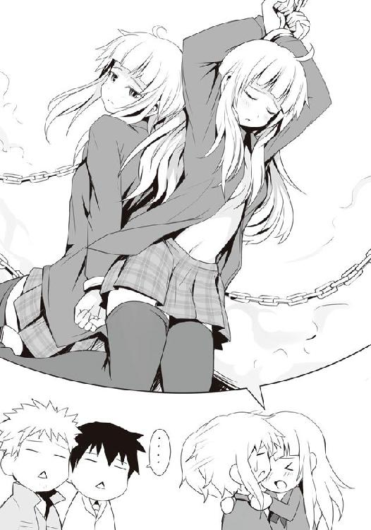
「......姉さん、お願いです。何でもいいですから、ボリュームを落としてください。休日の午前中のスーパーですよ」
鏡が言うように場所は真っ昼間のスーパーの店内であり、老若男女問わずスゲー周りから見られてて、こちらを見ている少年を母親が「見ちゃいけません」とか言って手を引っ張っていく始末だ。さっきまで、若いもんはえぇのぅ、とか気楽に笑ってたジイちゃんはそのプルプルした震えを止め、《ホワイト・フェザー》の異名で知られるアメリカ海兵隊の伝説的スナイパー、カルロス・ハスコックの現役時代を彷彿とさせる凄まじい目で沢桔姉妹を凝視していた。
「あぁ、でも！ 山乃守さんはあまりわたくしたちのタイプではない......このことをどうお伝えしたらお互いに傷つかずにそれぞれの成長のステップとすることが出来るのかしら!? 無論そのお気持ちは嬉しいと――」
「いや、多分一切の遠慮なくダイナミックかつどストレートに伝わっていると思うけど......」
僕が言うと山乃守さんは苦笑し、梗は「......エスパー？」と首を傾げ、鏡は深いため息を一つ。そしてそのまま姉の腕を引っ張り、どこかへと去っていくのだった。
「......あー、やっぱ、俺の好みじゃないわ。面倒くさそう」
山乃守さんの最後の一言だけは同意出来た。
●
鏡は頭に鈍痛を覚える。原因は彼女の両手の先。右手には先ほどのスーパーで買ってきたウィンナー、フォンデュ用チーズセット、フランスパンが収まるレジ袋、そして左手には姉の手。
お昼はサラダとサンドイッチ、あとは適当な野菜を入れたスープでも、と考えていたのに、佐藤たちの動きを追跡した結果、姉がマネキンにいいように扱われ、予定とは違うものを次々とカゴに放り込むことになってしまった。
そして、さらに鏡の頭を悩ませるのは姉の悪いクセが今回はいつも以上に強力だったことだ。
前者はともかくとしても、後者はさすがにキツかった。まさか休日のスーパーで〝肉壺〟なんていう単語が出てくるとは予想の範囲を超えていた。というか、それを理解出来てしまった自分も何だか嫌だった。
寒風を浴びながら鏡は姉の手を引き、少しでも早くスーパーから離れる。
「姉さん、お願いですからもう少し落ち着いた発言と行動をしてください。いつも性急かつ短絡的で、最終的に卑猥な話に行き着くのは問題ですよ」
「そんなこと言われましても。あんなふうに言われてしまっては......」
スーパーからやや離れた場所に来たところで、鏡は梗の手を放す。姉は少しばかり惚けたような目、そしてほんのりと頬を赤らめていた。そういえば佐藤に女の子が好きだ、と言わせた時からこんな感じだった気がする。
「あの、姉さん。先ほどの佐藤さんのことなんですけど......」
「そう、それですわ！ んもぅ、鏡のせいで、佐藤さんと山乃守さんのご関係を聞きそびれてしまいましたわ。あの二人の親密なご様子......本当にお金の問題で佐藤さんが無理やり......その......アレがソレなことになっていたら！ そしてそこに加わる二階堂さんともなれば！」
梗は怒るように言うが、さすがに今時男子高校生が体を売らねばならない金銭の問題というのもなかなかないだろう、と鏡は思う。しかしそれを言うのはまた面倒だった。
「それは、すみません。ただあの場にあのままいたら、しばらくあのお店に行けなくなりそうでしたので。......それで、佐藤さんのことなんですけど、何故あの時、あんなふうに佐藤さんに言わせたんですか？ あれじゃ逆に言いづらいですよ」
梗は何か小さくて大切なものを抱き込むように、両手を胸に当て、寒空に目線を送る。何かを思い出すように、モジモジして。
「それは......わかりませんわ。でも、佐藤さんが山乃守さんに卑猥な何かをされていると思うと、何やら急にこの胸が騒いでしまって」
姉さん、それは――と鏡は口にするが、そこに梗の言葉が被さる。
「鏡、アレですわよ。山乃守さんのはともかくとしても、真剣な眼差しで佐藤さんに......男性に間近で見つめられながら、好きだと言われるというのはさすがに胸がときめきますわね。......それまでとは違う感じに、キュっと、なりましたわ」
照れ笑う姉の顔を見ながら、鏡は伸ばしたもみあげの先を指先で弄る。それでは、もしや、と思ったことと順序が逆だ。最初の胸が騒いだ、というのはどういう意味だろう。本人は特に意識していないようだが、ひょっとしてそういうジャンルに興味が......？
あと、あの時佐藤が言った〝好き〟というのは、女の子が好き、であって必ずしも姉のことだけを指したわけではない。自分とて含まれている。しかしこの姉のことだ、もう少しテンションが高かったり、タイミング次第では......あのまま告白されていたら、その勢いのままに佐藤と唇を重ねていたかもしれない。土曜日の、午前中の、スーパーの中で。さすがにそうなっては鏡にはフォローのしようもない。
訊くこと、注意すべきことがあまりに多すぎる。鏡は順序立てていろいろと考えるものの、最終的に全てが面倒になってしまい、ため息に全てを押し込め、口から吐き捨てた。
こういう時、たまに想う。一卵性双生児の自分たちは、もしかしたら一人の人間が持つべきものを二つに分けて生まれてきたのではないか。姉にないものを自分が持ち、自分にないものを姉が持っている。そんな気がしてならない。......ただ、悪い意味でならともかく、自分になくて姉が持っているものというのが、あまり思いつかない。
「帰りましょう姉さん。お昼はチーズフォンデュですよ」
「......途中、どこかのお店でお野菜も買っていきましょう。ウィンナーとパンだけのフォンデュでは少し重いですわ。晩ご飯に影響が出てしまいますもの」
鏡は横に並んで歩き出した梗の顔を見る。先ほどまでの惚けた様子は瞬く間に消え失せ、そこには鋭さがある。今晩も、西区へ？ と鏡は訊いた。
「山乃守さんにあのように言われてしまうと心が高ぶって仕方ありませんわ。遭遇できる確率は低いでしょうけれど行くだけは行きましょう。フォンデュのカロリーを消費するためにも」
チーズフォンデュは当たり前だがどうしてもチーズを多く摂る。チーズは良質なタンパク質やカルシウムといった栄養を多量に含んでいるが同時に脂質も多く、ハイカロリーだ。
「......先ほどの山乃守さんの言葉が少し気になりますね」
こちらの実力を知りもしないで、彼は魔導士には絶対に勝てないと断言した。それは何故？鏡は考えるが、答えは出てこない。代わりに己の気持ちに意識が向いた。
かつての一件によりオルトロスたる二人は己たちよりも強い相手を今もなお求めている。だが、佐藤と二階堂――《ツードッグス》と出会った今は、当初の気持ちとは違う感情があるのも事実だった。自分たちよりも強い敵と出会いたい、しかし、勝ちたい。不思議な感覚だった。一時は、良くも悪くも地元の半値印証時刻における頂点を極めた二人なのに、その感覚はまるでデビューしたてのルーキーのよう。追いかけるべき相手がいる......それを想うとむず痒い程にワクワクする。そして、たとえ相手がどれ程であろうと、必ず追いつける自信がある。
それはもしかしたら分厚い小説を前にした気持ちに似ているのかもしれない。読み始めるのに抵抗を覚えるぐらいの厚み、しかしそれは読み応えがある、と言い換えることもできるのだ。
「ただのでまかせとも思えませんわね。わたくしたちが知らない何かを、魔導士さんは持っている、ということかしら」
果たして山乃守は自分たちの何を見て勝てないと判断したのだろう。狼としての実力は見せていない。強いて言えば――自分の手。カゴを持っていた。争奪戦時ではないにせよ、もしかしたらその手の動きから実力を推察された？ それとももっと他の......根本的な......。
鏡は瞼を閉じ、首を振った。考えてもわかるものではない。ただ、山乃守の言葉は覚えておく必要がありそうだ。いつ戦えるかもわからない今の状況を鑑みるに、幾度も挑戦して徐々に手の内を探っていくようなマネはできないだろう。
だとすれば、己らより強いとされる相手に勝つためには緒戦に全戦力を投入して一発で叩くしかない。そのために何かしらの手段を考えるべきかもしれない。
あとで姉と相談してみよう。鏡は一人考えた。
○
「も、もうやめてください。もう、嫌です。もう無理です......！ こ、これ以上は、もう！」
「何言っているんだ、洋。俺はまだ満たされていないんだ。さぁもう一回ヤろう......」
山乃守さんは僕の両肩に手を置き、笑みを浮かべたままの顔を近づけてくるが、僕は彼から顔を背ける。彼の手も払いのけた。
「どうしてそんなに俺を拒否するんだよ。さっきまであんなにおいしいおいしいって......」
「ですからこういうシチュエーションが嫌なんですよ!!」
僕の声がレイクパークに木霊した。これには、まだ喰い足りない、もう一軒別のスーパーへ行こうと誘っていた山乃守さんも、バッグを提げる肩をすくめてみせる。僕は続けてあのハードな同性愛者のようなセリフのやりとりを強要されるのが本気で嫌なのだと言ったが......。
「そうか？ そうでもないだろう。過敏に反応し過ぎじゃ......あ、まさか、洋ってガチ？」
Ａ．違います。
過敏に反応してしまうような環境にいる......というか、諸悪の根源が同級生に一人いるだけなのだけれど、それを今の流れの中で説明したとしても「それもつまりは過敏反応、つまり......ガチだな」とか言われそうな気がしたので、僕は曖昧に応じた。ただ、何にせよ、もうスーパーでさっきのような苦痛を味わってまで試食巡りはしたくない、とだけははっきりと告げた。
「まぁ、洋が嫌ならそれでもいいけど。でもアレだなぁ、そうなるともう洋にメシを喰わせられねぇぞ。俺の手持ちだって底が見えているんだし、かといって連に頼まれた以上、ほっぽり出すのもなぁ」
根は悪い人じゃなく、むしろ良い人なのだ。ただ若干その手段がおかしいだけで......。
「しょうがねぇな。よしっ、それじゃ俺の〝とっておき〟を伝授してやるか。試食が嫌だというのなら、こいつはもう、女しかねぇな。こいつが一番簡単だ」
正直、山乃守さんともう少し親しければ僕は確実に彼の頭へ一撃を喰らわしていたところだ。何故食事という生きる上で当たり前のものを得ようとするのに、〝女〟という、ある種男にとって最上級に獲得し難いものが一番簡単だという結論に行き着くのか。あれか、アホの子か？
こちらの言いたいことが顔に出ていたのか、山乃守さんは僕を嘲るような目で見つめてくる。
「案ずるなよ、洋。俺の二つ名を信じろ。ガンコナーの名は伊達じゃないんだぜ？」
彼曰く、ガンコナーが意味するところは、『愛を語るもの』であり、俗に口説き妖精とされるものだそうな。パイプを咥えたそのハンサムな妖精は、人の少ない田舎の娘に巧みに言い寄り、恋に落とす。しかしその後は添い遂げることもなく姿を消してしまうのだという。するとその娘は彼への恋患いで死に至ってしまうという、ロマンチックなんだか、単なる俗な話なんだかよくわからない伝承なんだとか。ガンコナーと聞くとその語感からちょっと新しいロボットみたいで格好良かったのだけれど、その中身はかなり微妙である。
「言うなれば女を落とすことに関してはこちらはプロってわけ。安心したか？」
「いやその......それで、それが僕の今後の食事とどういう関係が......？」
「口説け。貢がせろ。今朝、君は良心が痛まない相手からじゃないと金は借りられないと言っていたが、俺のように数カ月もの間養ってもらうってわけじゃない」
あ、なるほど。ようやく僕はこの人の素性が見えた気がした。オブラートに包んで、お上品に表現すると、この人は多分......割とクズだ。より一般的に解釈すれば、単なるヒモである。
そんな僕の心のうちまでは見えているのかいないのか、山乃守は続ける。
「世間からはダメな奴だと思われがちだが、実際、きちんとヒモとして生きるのは楽じゃない。特に双方が幸せになるには技も経験も必要なんだ。今はたまたましくじって宿無しだけど、いつもなら三人は常にキープしている。もちろん養ってくれればいいってわけじゃない。きちんと美人や性格の良い子......あとは胸の大きい子ときちんと選んだ上でな。えり好みしなけりゃプラス六人は余裕だね」
......今この場に一昨日の男子寮内討論会に出席していた知識人たちがいれば、彼らは何の躊躇いもなくこの目の前の男を亡き者にしていたことは間違いなかった。敗北感や嫉妬を覚える間もなく心を怒りに染め上げ、格差なき社会を！ と声を上げて、かつての共産主義の台頭を彷彿とさせる勢いで彼らは一致団結し、敵に猪突猛進するのは疑いようもない。
こちとら全員が魔法使いへクラスアップする権利を有したままの高段位桜桃少年団だ。マラソン大会で視姦箇所を討論するだけで夜を費やせられる強者たちにとって、軟派な男一人駆逐するのは造作もなく、女の子と接点を持たずに今まで生きてきた上にそのシャイな性格から共学の高校に入ったというのにいまだに女の子との接点を持てずにいろいろとこじらせてしまったエロピュアこと矢部君なんて、十代でありながらすでに簡単な魔法ぐらい使えるんじゃないかと噂されている逸材だから、まさに赤子の手を捻るようなものだろう。
僕もまた美人、性格良し、胸の大きい娘をキープ......つまるところ同時期に関係を持っていたというこの山乃守喨なる男を滅するのはもはやこれぞ我が使命と思わざるを得ず、無駄に鍛え上げられたこの肉体のポテンシャルを解放し、目の前の池に土左衛門として浮かべるのを決意――。
「よく聞け。これより俺の秘伝の技を洋、お前に伝授しよう。これでお前もモテモテだ」
――しようかと思ったが、美人、性格良し、胸の大きい娘の三人をキープする技を教えてくれる素晴らしい御方にそんなマネは出来ないと思い直す。
「相手から貰うだけではなく、こちらからも与える......つまりギブ＆テイクな関係なら洋とて嫌な気にはならないだろう？ こちらから与えるもの、それは癒しや楽しい時間。相手を楽しませ、もっと一緒にいたいと思わせられたら勝ちだ。互いにお腹が減った、でも洋にはお金がない、女はもっと一緒にいたい......そうなれば自然と食事を奢ってくれる流れになる」
「なんていうか、一つ二つの小石が欲しいのに、わざわざ巨大な岩を打ち砕いて小石を作ろうとしているイメージなんですが......」
「そういうこと言っているからダメなんだ。いいか、洋、この種の経験は？ ......ない？ じゃ、それで何故難しいって言えるんだ？ 挑戦したこともないのに、先入観や思い込みだけで物事を判断するのは愚かなことだぜ？ さぁ、今からレクチャーを始める、俺のことは師匠と呼ぶように。そうだな、洋の状況を考慮するなら......」
レイクパークのベンチに腰掛けると、山乃守師匠の口説き指導が始まった。
――下心、つまり食事が狙いだと悟られるな。――相手ではなく、相手のしていること、相手が興味のあることに興味を持った体で。――喋るのは主に相手、自分は聞き手。――人は基本的に自分について語りたがるもの、耳を傾け、相槌を打って話しやすいように。――こちらが喋る時は相手を疲れさせないための休憩と割り切れ。――かといって手を抜いていい訳じゃなく、聞き手が楽しめる内容で。――基本は相手を肯定。――時折疑問、否定を混ぜて単調さを消せ。――そしてその否定はその後の肯定のための布石であり、説得できたと相手に思わせる。――とにかく楽しませろ。――そして自分も楽しめ。――そうじゃないと場は冷めるだけ。――こちらの狙い、つまり食事に関してこちらからは決してお願いしてはならない。――相手が気にかけてきたらそこで初めて状況を説明、お願いしろ。――気にかけてほしいのにあえて大丈夫だ、気にするな、というのは逆効果で、むしろ押しつけがましい印象になる。――うまくいったら当然感謝する。――勝ち誇るな。――そして狙いを果たした後も相手を楽しませることを忘れるな。――相手も楽しみ、自分もまた楽しみ、食事を得るのだ。――つまりウィン＆ウィン。――みんなで幸せになる......等々。
師匠の言葉はどれもこれもどこかで聞いたことがあるような、コミュニケーション術の基礎のような気がした。多分僕のようにシャイで、奥手で、生真面目な優等生タイプの人間であれば誰もがわかると思うのだけれど、こういうのって頭ではわかっていても、実際にやれるかとなると話は全然別なのだ。結局は生まれつきの性格がものを言う......はずなのだけれど......。
「あと重要なのはターゲットの選定だな。意外と行けるのが美人で、高嶺の花っぽい娘だ。普段からちやほやされ、貢がれることには慣れきっているせいで自分が貢ぐ側に回るなんてことは想像もしていないだろう。......そこに隙がある。けど、洋の場合ならアレだな。相手のプライドを利用して〝人気者の自分が哀れな男に食事を恵んでやっている〟と思わせられればいい。でも、これは一発目ではちょっと難易度が高いかもしれないな。となると......その逆だ。一人ぐらいはいるだろう......？ クラスでお世辞にも人気者じゃなく、あまり異性と交流を持っていないような、地味で、おとなしい......それこそガンコナーの話にあったような、田舎で牛の世話とかしているような、そんな娘さ」
「あの、そういう娘を狙うと、何だか罠にハメ込むみたいで良心が痛むんですが......」
「ごり押ししようとするからだ。相手に自然とこの人ともっと喋っていたい、一緒にいたい、と思わせ、自発的に奢らせる流れに持っていくんだ。それに俺たちのような人間との会話が切っ掛けで、自分に自信を持ち、奥手なところを薄れさせてあげることができるかもしれない。そう考えれば、ほら、な？ わかるだろ？ ウィン＆ウィンだよ」
うーん、何だろう、言葉巧みに、というわけじゃないけれど、不思議と納得させられてしまいそうになる。それは師匠の語りのうまさというか、ベンチに並んで座っているのに、彼が真っ直ぐに僕を見つめてくるせいか、言葉に自信や説得力が感じられてしまうのだ。
......なるほど、この何だか不思議な魅力もまた相手のガードを緩めるガンコナーとしての能力の一つなのかもしれない。彼の教えに従えば僕もこれぐらい出来るのだろうか......？
ダメもとで師匠の教えを実践してみるのもいいかもしれない。万が一それでうまくいけば儲けもの......さらに、それを切っ掛けとして可愛い彼女でも出来ようものなら棚からぼた餅どころではない僥倖であり、高段位桜桃少年団からの卒業だ。
......そうだ。そう考えるのならやってみても損はない。いや、やるべきだろう。ヨー・サトウよ、思い出せ。かつて魔導士こと、金城優が僕にくれた言葉を！
――挑戦を忘れた者には停滞と堕落しかない。口を開けて何かが落ちてくるのを期待して待つ馬鹿なのか、おまえは？ それとも怖くて踏み出す勇気がないのを尤もらしい理屈をつけて逃げている臆病者なのか？ ......機が、流れが、活路がないのならば、自らで作り出せ。何もしなければ何も見えてこないぞ――。
魔導士もまさか女を口説いて貢がせるか否かを決断する際に引用されるとは夢にも思っていなかっただろうが、かつての彼の言葉は紛れもなく今の僕にやる気と勇気を与えてくれた。
「注意としては、どうせ一度や二度の食事目当てだから大丈夫だとは思うが......深入りはするな。距離感は大事だぞ。十代そこそこで深入りすれば、どちらにとっても不幸を招く」
どういうこと？ と僕は尋ねると、ここで初めて彼は僕から視線を外し、レイクパークの由来である湖......というか、広めの池の方へ目をやった。
「若いうちは人生経験が少ないからな、目の前にあるものが全てに思えて周りが見えなくなりがちだ。つまり、ダメだとわかっても諦めきれなくなる。......それじゃ幸せを逃すだけだ」
師匠は遠い目をして、何だかよくわからないことを言った。
しばらく補足や注意事項を聞かされた後、さぁ行ってくるがいい、と歴戦の戦国武将に励まされる若武者がごとく、僕は師匠に送り出され、レイクパーク、そして東区を後にした。
西区へ戻る道中、師匠の言った落としやすい女の子の候補について考えてみる。さすがに駅前でランダムに声をかけまくるのはいろんな意味でリスクが高い上、初対面の相手では警戒されるのがオチだろう。となると、やはり知り合いを狙うのが無難か。それで師匠推薦の二種――高嶺の花っぽい子とおとなしい地味な子――を意識すると自然と思い浮かぶのが......白梅と白粉の二人なのだけれど......。うーん、どちらもハイリスクな気がする。というか、白梅の方に至っては自ら死地に足を踏み入れることのような気がしてならない。そもそもあの二人、槍水先輩みたいに学生アパートで一人暮らしとかならまだしも、白梅は実家暮らしだし、白粉は女子寮に入っている。どちらも休日に接触することからして難しい。
「槍水先輩が暇していたら、ベストだったんだけどなぁ......」
烏田高校の敷地近くまで戻ってきた時、僕は部室棟を見上げながらぼやいた。
きっと先輩ならこちらが何も言わずとも僕を心配してくれて、ご飯を奢ってくれるに違いなかった。もしかしたらさらにお小遣いをくれ、「ウチへ来ないか？」と誘ってくれ、僕は魔法使いの権利を放棄、そのまま彼女に養ってもらう、夢のヒモとしての生活をスタートし......。
......まずい、師匠に毒され過ぎたか。サラっと僕もクズな人間を肯定しそうになったぞ。自重せねば。僕の場合、この土日の食事のためだけに、致し方なくするのだ。そう、仕方なく相手の心の隙間に潜り込むのだ......。
ん？ アレ？ 今、ＨＰ同好会の部室の窓に人影が見えたような......。
通常、学校が休みの時に部室に来る人はいないはずだ。先輩か白粉のどちらかが忘れ物でも取りに来たのだろうか。
夜であれば部屋の明かりで人の存否がわかるものの、まだ時刻はお昼を回ったばかり。しばし眺めてみるも、窓に人影が映ることはなかった。
僕は部室棟へと足を向ける。白粉であれば師匠からの技を実践、先輩なら......普通にお願いしてみようと決めた。師匠は相手をも幸せにするために云々言っていたが、やはりそれでもどこかしら言葉に嘘は混じるし、裏が出来る。槍水先輩相手にそういうのは少し嫌だった。
僕は部室棟五階に昇ると、５０２号室、ＨＰ同好会部室の扉をそっと開ける。そこにいたのは椅子に座る小さな背中と、それにかかる一房の髪。白粉だ。彼女は出入り口に背中を向けて円卓に着いており、休みだというのに相変わらず制服を着、いつものノートＰＣを開いてカタカタと軽快なタイプ音を響かせていた。普段と違うのは彼女が妙に大きなヘッドホンをしていることぐらいだろうか。
普段の彼女ならこちらの視線やら気配やらを敏感に感じ取るが、今は作業に没頭しているようだ。僕はそっと彼女に近づき、ノートＰＣを覗き込む。画面にはワープロソフトがあるだけで特に動画とか再生されている気配はないが、ヘッドホンのコードはＰＣに接続されている。音楽でも聴いているのだろう。
僕は可能な限り自然な笑みを浮かべてから、白粉に近づき、その小さな肩をトントンと叩く。すると白粉は指の動きを止めずにチラっと僕の方を向き、アーチ型に歪めた目で眼鏡越しに僕の顔を一度認め、片側だけ釣り上がった口はそのままに「ンフッ」と荒い鼻息をつくと、何事もなかったかのように再びモニターに視線を戻して作業を続ける。が、一拍置いて、彼女は「えぁっ!?」と声を上げ、文字通りに椅子から転がり落ちた。
「な、なんで佐藤さんがここに!?」
「いやまぁ、特に用があったわけじゃないんだけど。っつぅか、何でおまえ、僕の顔二度見してからリアクションしてんだよ」
「えぁっと、それは特に深い意味は......ないんですけど、一瞬現実と妄想の境目がわからなくなったというか。丁度サト......サイトウヒロシ刑事が後輩の新人刑事に無理やり攻められてる上、そこで『楽しげに笑え』と強要されて身も心も犯されるシーンを描いていたもので」
こいつ、なんておぞましいものを......。しかも一度僕の顔を見てそれが妄想と区別が付かなかったというのは、凄まじいリアリティを有した僕の顔を頭の中でイメージしていたということであり......その、なんだ。......凄く、嫌です。
す、すみません、と白粉は首にかかるヘッドホンを手でイジイジしながら頭を軽く下げた。先ほど僕の顔を見た時のような、下卑の極みのような様子はそこには微塵も感じられない。......一人で執筆する時、彼女はいつもあんな嫌な顔をしているのだろうか。
僕はいつものように彼女の後ろ髪を引っ張っておくべきか迷ったが、今回は我慢した。何せこれから彼女に......その、ね。師匠から伝授された技でご飯を奢っていただくのだ。今し方の状況だけで僕の中から罪悪感というものは完全に消え失せた。絞れるだけ絞ってやろう。
白粉が椅子を直して再び席に着いたので、いつもと違い、僕も彼女の隣に座る。おどおどとした白粉は僕の目と円卓の上を交互に見やる。沈黙が重みを増す前にトークに持ち込もうと思ったが、師匠の教えである〝相手ではなく相手がしていることに興味がある体で〟というのを実践しようにも、それをやるとなると僕は自分がヤられちゃう、奴の小説に興味を抱くことになるので、それは出来ない相談である。さすがに「へぇ、僕がこんなにガンガン攻められているなんて。興味深いよ」とか、口が裂けても言う気はなかった。
しかしそうなると......話題がない。普段何気なく一緒にいるものの、下心があるせいか、急に会話の難易度が増している気がした。もう何でもいいや、と思った時、いまだ彼女の首にかかっているヘッドホンに目がいく。それについて尋ねてみると、前から使っているものらしい。
「学校に持ってくるには大きいんで、アレですけど、今日みたいな休みの日は......はい」
はっきりとは言わないものの、その様子からすると、どうやら彼女、休みの日でも結構部室には来ているようだ。
「へぇー。ちなみにどんなの聞いているの？ 僕あんまり音楽聴かないからいいのがあったら教えてほしいな」
普段の僕ならまず言わないような一言を付け足しつつ、話を促す。これで白粉は楽しげにいろいろ喋ってくれるかと思ったものの、彼女はモジモジするだけで、なかなか教えてくれない。彼女の性格からすると聴いてる音楽からして人に教えるのは恥ずかしいものなのかもしれない。マニアックなアニソンとかだろうか？ 今の僕は何が出たって肯定する気満々だというのを伝えられたら楽なのだろうが......うーん、もういいや、力尽くで話を進めさせてやる。
僕はサッと彼女のノートＰＣに突き刺さっているヘッドホンのジャックを引き抜いた。あっ！ と白粉が声を上げるも、遅い。音声の出力がヘッドホンからスピーカーへと切り替わる。
安心しろ、白粉。今の僕ならロックでもお経でも、それを受け入れて――。
――これでどうだ！ ――まっ、まだまだぁ！ ――ほほぅ、粘りおるわい。ではこれでどうだ！ ――んんぎぃぃい深いぃぃ！ ――それっそれっ！ ――くっぐぐぬっ!? ぬうぅぅぅぅおおぉぉ！――それっそれっ!! ――アッ、アッ、ダ、ダメです、もうぅぐん!!
ノートＰＣの小さなスピーカーから聞こえてきたのは、男二人の渋い声と畳の上で激しく蠢くような音、そして肉体が打ちあわされるようなパシッとかパンッとかいう音だった。
......師匠、僕、もう、心が折れそうです。あと目の前で愕然としている眼鏡をかけた女の子が恐ろしいです。こいつ、こんな音声をひたすら聞いて一体何をしていたのかと......。
白粉が顔を伏せつつ、ノートＰＣを操作して音声を止めた。
「ち、違うんですよ？ こ、これはその......いやらしいものではなくってですね......？」
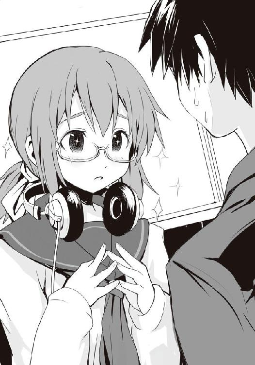
......僕は何と言えば、正解なのだろう。
とりあえず僕は、へ、へぇ、という曖昧な応答をしてみた。白粉がチラリチラリとこちらを見てくる。やっぱり信用されていないと思ったようで、彼女はノートＰＣのＤＶＤドライブを開き、中に入っていたディスクを見せてくれた。それはＤＶＤであり、タイトルは『これがプロの技だ！ 最強格闘伝授シリーズ 寝技・絞め技編』というものだった。どうやら先ほどまでワープロソフトの裏でこれを再生させて、音声だけ聞いていた、ということらしい。
「あっ、でもアレですよね。こういうのをそういうふうに考えちゃうって、つまるところ佐藤さんの頭の中にはすでにそういう変換が出来るロジックがあると、そういうことですよね!?」
白粉はグッと握り拳を作り、そう元気良く言う。即座に僕は彼女の後ろ髪を――みそうになるが、腹の虫がその動きを押さえ込む。白粉は体をビクリとさせるものの、僕の手が伸びてこないとわかると、小首を傾げ、ちょっと不思議そうな顔をした。
「ま、まぁさかぁ。ははっ......そんなわけないじゃないか。あははは......」
「でも、音声だけ聞いているともう完全にアッチの音声にしか聞こえないってことで、一部では結構有名なんですよ。出演者さんもナイスミドルなマッチョな方々で――」
白粉は眼鏡を外すこともなく、延々とそのＤＶＤが如何に素晴らしいかを語ってくれるのだけれど、その全てが格闘術ではなくウホッな話であり、僕の全身に鳥肌を立たせる。一体どこの誰が、このまともそうなＤＶＤの音声だけを聞いてアッチのプレイを想像するという悪魔のような使い方を編み出したのだろう。よほどの天才か、ただの変態だ。......多分変態だ。
そんなことを考えていたら、ふと、矢部君も似たようなことをしていたのを思い出す。彼は対戦格闘ゲームを購入するとトレーニングモードで女キャラをひたすら弱パンチ連打で攻め立て、その際に連発されるキャラのアッアッアッアッ......という呻き声を脳内であえぎ声に悪魔変換して楽しむという業の深い遊びを夜な夜な繰り返していたっけ。
そんなこんなで話の内容はともかくとして、一度喋り出したら白粉との会話は非常に円滑に進んだ。幾度となく僕の腕が彼女の後ろ髪を掴みそうになるものの、それを腹の虫が必死になって止めてくれる。
「でも実際あるんじゃないですか？ 男子寮という名のエデンで暮らしてればやっぱり男性に興味を持ったり、極端な話、男でもいいや！ っていう感じになったことが!?」
隣の席に座る彼女は鼻息荒く、僕にズイズイと迫ってくる。
「......な、ない、かな。さすがに。うん、ないよ」
僕が言うと不満げな顔をする白粉は身を引き、顔を逸らすとチッ、と舌打ちを放つ。......何の舌打ちだよ。普段なら怒るべきところではあるが、今は状況が違う。機嫌を伺うように会話を進めていかねば......。そして出来る限り早く食事の話に持っていきたい。え〜っと......。
「あっ、そうだ。実は今日の話なんだけどさぁ。山乃守喨っていう人と会って......」
僕は白粉に、師匠と二人でスーパーの試食コーナーを回ったことについて語る。何故出会ったのか、何故試食コーナーに行ったのかは一切触れずに、だ。当然あんな屈辱的な会話を好きこのんでやるとは思わないだろうから、やらねばならなかった理由が気になるはずであり、そこでさりげなくお金がなくて、お腹が減って、という方向に話を展開させられれば......！ 押しつけがましくなく、お金及び食料が欲しいとアピールできるのだ！
白粉は最初それほど興味ありげでもなかったが、あの一連のセリフを僕が口にした途端、彼女は「ほぅ......」と呟きを漏らし、ギラギラと目を輝かせ、口の端が吊り上がっていくではないか！ 普段なら不快なことこの上ない笑みだけれど、今の僕はどこか喜びにも似た感情を覚えた。白粉が喜ぶ＝ご飯の可能性アップ、という理由があるからとはいえ、師匠がウィン＆ウィンだと言っていた意味がようやく理解できてきた気がする。
だが、そうしているのも束の間だった。話していくにつれて白粉の顔が険しくなっていき、最終的には円卓の上に置かれた彼女の手が握り拳に固められてしまう。公園で、もう嫌だ、と僕が言い放ったくだりで、ついにその拳はドンッと、円卓に叩きつけられてしまう。
「あ、ご、ごめん。何か、気分悪くなるようなこと言っちゃったかな」
「......いいえ。違うんです。全然違うんです。ただ、悔しくて......」
悔しい？ と、俯く白粉の顔を覗き込むようにして僕が言うと、彼女はバッと顔を上げる。
「その場にどうしてあたしはいなかったんですか!? リアルタイムで聞きたかったのに！」
......あ、うん、どうでもいいや。
しばし、悔しい悔しいと悶えた後、彼女はそつなくメモ帳にペンを走らせる。
「おまえだって楽しんで......っと。ふむふむ。なるほど。今からでもねじこめるか。うん、よし。......あ、ちなみに今更なんですけど、何でその、山乃守さんと試食に行かれたんです？ 二階堂さんに紹介されたんですよね？」
――かかったな、アホが！ こうなりゃこっちのもん、散々辛い思いをしながら、こいつをのさばらせておいた意味があったというものよ。猟の基本、引きつけて撃つ。まさにこれだ。
僕は内心ほくそ笑むのを悟られないよう、爽やかな笑みで顔を覆う。
そして「実は......」と事の顛末を話すのだけれど、あまりにもこちらの思惑通りになり過ぎて、どうしても顔がニヤけそうになる。
「......ってわけでさ。ちょっと困っちゃっててね。今もお腹減ってて、どうしようかと」
――まだだ、まだ、笑うな。
白粉が心配してくれ、彼女が罠に誘い込まれたと気づくこともなく僕にご飯を奢ってくれる、その瞬間まで堪え......る、んだ？ ......アレ？ 何かおかしいぞ。予定ならここで白粉は可愛らしく「それは、大変ですね。あ、もし良かったら」となるはずなのに、何故彼女は先ほど同様ニタニタ笑いのままなのだろう？ むしろその笑みに含まれる邪悪さが増したような......。
何というか、悪代官が袖の下を受け取った時のような......。
「ほぅ......。つまり佐藤さんはお金のために公園で知り合った男と関係を結んだ、というわけですか......ほほぅ、これはこれは新しいネタが......メモメモ。うーん、本の構成も今からでも変えた方がいいかな？ まだ印刷所の方も......締め切りに余裕もあるし......」
「本？ 印刷所？ 締め切りって......え、なに？」
メモ帳から顔を上げた白粉は先ほどまでの嫌悪感を抱く笑みとは打って変わって、とても可愛らしい笑みを浮かべた。
「あっ、気にしないでください。それより佐藤さん、お腹が減っているんですよね。あの、もし良かったら、あたし、何か買ってきますけど、どうですか？」
「え!? そ、それは嬉しいなぁ。助かるよ」
それじゃ行ってきますね。彼女はそう言い残すと眼鏡を外すこともなく部室を出ていった。
白粉が消えた後、少し間をおいてからジワジワと満足感が湧いてきて、僕は一人笑った。完全な勝利だった。
それから十数分、僕が満足感と優越感に浸っていると、彼女が帰ってきた。見やればその手にはレジ袋があり、そこから肉......いや、燻製のような匂いが立ち昇っている。
ありがとう、白粉。最高の笑みと共に僕は席を立とうとするものの、白粉もまた飼い主に走り寄ってくる犬のように溌剌とした笑みで制止してくる。
「佐藤さんは座っててください。さっきのお話じゃきっと滋養が足りなくてお疲れでしょうし。......どういうの買ってきていいかわからなかったので、いろいろ買ってきたんですけど......」
白粉は円卓にレジ袋を置き、ノートＰＣやヘッドホンを片づけ始めるものの何故か持ってきた鞄にうまく入らないようだ。しばしゴソゴソとやった後、彼女は一旦中にあったノートや辞書、デジカメなどを円卓の上に出す。
「......あっ、す、すみません、お腹減ってますよね。冷めるのも何ですから、先に......」
こういう場合、僕はいいから片づけちゃいなよ、と言うべきなのかもしれない。しかし、レジ袋から漂ってくるいい匂いに刺激された腹の虫はそんな台詞を許しはせず、自然と僕は頷いてしまっていた。口によだれが湧く。
「それじゃ、まずは......これとか......」
立ったままの白粉はほんのりと顔を赤らめ、そわそわしながらコンビニのホットスナックを取り出し......何とそのまま座っている僕の口まで運んでくれる。食べさせてくれるみたいだ。
......何だろう、白粉のこの妙に献身的な態度......。しかも照れているのか頬を赤らめ、眼鏡の向こうの瞳はそわそわと僕と円卓の上を行ったり来たりする、その恥じらいの仕草......それはもはや完全にこちらに好意を持っている乙女のものだった。
こ、これが師匠のテクの力なのか！ 師匠の教えに沿って数十分話しただけで......しかも普段奥手な白粉がこんなに積極的に......。
さらに言えば、食べ物をいただけるという感謝の気持ちのせいか、それとも先ほどまで彼女を全面的に肯定し続けていたせいか知らないが......その、何だ。恥ずかしながら......白粉が段々可愛く見えてきてしまった。
今一度彼女を見てみれば、インドア派のおかげか、くすみのない綺麗な肌に赤子のような柔らかな頬。クリクリとした大きな瞳は彼女の小柄さと相まってどこか小動物のようだ。前髪をヘアピンで分け、他は後ろにまとめている彼女の髪型も、お洒落とは言い難いが余計な飾りがない分、彼女の純朴さ、素朴さが素直に感じられた。
変なクセをいろいろ持っていたり、他人と関わることに消極的だったりするせいで話題にはならないが......傍から見れば白粉は結構可愛い娘なのだ。実際、文化祭の時に神田君たちが騒ぎ立て、持ち金の大半をペットボトルのお茶に替えたぐらいだ。そもそも僕とて最初に出会った頃は素直に美少女だと思っていた気がする。......気がつくとどうでも良くなっていたけど。
今の白粉を見ていると、恥ずかしい、どうしていいかわからない......でも、僕に尽くしたい、そんな彼女の胸のうちが伝わってくるようだ。
きっと僕の巧みなトークが彼女の中の女性としての何かを目覚めさせたに違いなかった。
師匠......これがウィン＆ウィンというものなんですね......。僕の胸は師匠への感謝と白粉への愛おしさでいっぱいだった。
座ったままの僕は、傍らに立って頬を赤らめる白粉を見上げ、そして見つめる。
「ありがとう、白粉。......いただきます」
心よりの言葉と共に、僕は白粉が差し出してくれる極太フランクフルトに口をつけた。
●
――かかったな、アホが。
白粉の目の前で、佐藤が彼女を見上げながら極太の肉棒に口をつけている。熱々のせいもあって簡単には齧りつけないでおり、肉棒を嬲るように唇と舌先が......。それはもはや、アレをソレしている最中の姿にしか見えず、白粉は興奮を抑えるのが大変だった。
しかも佐藤を座らせ、自分が立ったままでイけたのが良かった、と白粉は自画自賛する。まさに奉仕させている側のキャラの視点であり、これは貴重な体験だ。しかもどういう風の吹きまわしか知らないが、口を這わす今日の佐藤はいい顔をしている。これはいい。なんとも言えない征服感を白粉は感じ、現在制作中の作品にこのシーンを差し込むことを決めた。
「......ゆっくり、食べてくださいね」
白粉が微笑んで言うと、ふぅぐ、はぐ......ふぅん、と佐藤も肉棒を咥えながら微笑み、頷く。
白粉はチラリと円卓の上に置いたデジカメを見る。そのデジカメのレンズは佐藤を捉えており、当然のように動画撮影モードだ。先ほどごく自然な流れを装って鞄の中で録画を開始させ、撮影時に点灯するＬＥＤの部分には付箋を貼り付けたので、正面からは決してわからない。
......ムッ、もう少しこっちか......。
円卓の上のカメラと佐藤をチラリチラリと交互に見やりながら白粉は肉棒を引いてプレイ位置を微調整。かなりお腹が減っているのか、佐藤は素直に顔の位置をずらしてくる。その物欲しげな仕草を白粉は眼鏡越しにしっかりと瞳に焼きつけた。
「ありがとう、おいしかったぁ〜」
ほほぅ、しゃぶらされた上でありがとう、おいしかったぁ......とな。
フランクフルトを佐藤が食べ終わると、白粉は佐藤の隙を見てネタ帳を開き、素早く彼の発言、そしてたった今閃いたインスピレーションを記録する。これは使える。
白粉は唐突に転がり込んできた幸運に感謝する。この貴重な資料、次々に湧き起こる創作意欲、そして得も言われぬ高揚感......今夜から執筆は加速度的に進行するに違いなかった。
先ほどの佐藤の話によれば、彼にお金が入ってくるのは明後日、月曜日。つまり今日明日の土曜日曜は......ヤりたい放題......。
――まだだ、まだ、笑うな。
白粉はそう必死に自分に言い聞かせる。こんなおいしいチャンスだ。大事にしたい。
「昨日からあんまり食べてないって佐藤さん、言ってましたよね。ですから、栄養価が高くて、あとカロリーも取らないといけないかなぁって思ったので、こんなのとか......どうですか？」
そう言って白粉がレジ袋から次に取り出したのはバナナと練乳。佐藤の目がパッと輝いてそれらに釘付けになる。その瞬間耐えきれなくなった白粉の口の端が邪悪さを伴って吊り上がった。
「バナナに、たっぷりとミルクをかけてっと......さぁ、どうぞ、佐藤さん......こぼさないようにむしゃぶりついてくださいね......」
怪物と闘う者は、その過程で自らが怪物と化さぬよう心せよ。おまえが長く深淵を覗くならば、深淵もまた等しくおまえを見返すのだ。 ――ニーチェ
３
今日もまた、土曜日に引き続いて雲一つない快晴だった。しかし寒い。色味の薄い空は、それを視覚的にもわからせてくれるようだ。
余計なお世話。そう思いながら彼女、白梅梅は肩をすくめるようにして、寒さに体を震わす。羽織っている白いコートの襟を立てるが、あまり意味はない。
手には紙の感触。買い物のメモ書きだ。それには今現在、家にあるものが書かれており、それでスーパーで無駄な買い物をしないようにしつつ、店頭の食材次第でアドリブも効かせられるようにしていた。
今日は珍しく両親二人の休みが重なったため、彼女らにはゆっくりしてもらい、夕食は基本白梅が拵えると約束しているのだ。
一応今の予定としては寒くなってきたので、鍋を作るつもりだった。
さほど高くないパンプスのヒールが小気味好いリズムを刻み続けていたが、その音がピタリと止まる。天然酵母使用を謳うベーカリーの前。ウィンドウ越しに様々なパンが並んでいるのが見えるが、それよりも白梅を引きつけたのはその店から流れてくるパンを焼く匂いだった。どんな料理の匂いよりも優しく、温かで、包み込まれるようなそれは身も心も引きつける。
しばし躊躇するものの、白梅は諦めた。ウィンドウにうっすらと映る自分の顔が苦笑する。
ウィンドウ越しにでもはっきりわかる白い肌に黒い瞳、そして真っ直ぐに長い黒髪。風のせいか、前髪が少し乱れていたので、白梅はさりげなく体のライン同様、細く長い指先でサラリと撫でるようにして整え、軽く首を振る。腰まである髪、そしてそれを毛先の方でまとめている白いリボンが揺れた。
そんな時、ウィンドウの中を烏田高校の制服姿の女子生徒が重そうなバッグを肩から提げ、手には学校指定の鞄と紙袋を持って俯いて歩いていくのが見える。店内ではなく、外。自分の後方を横切っているのがガラスに映っているのだ。
生徒会長をしているとはいえ、さすがに休日まで自分の学校の生徒に何か言うことはない。しかし、そのウィンドウの中――自分の後ろを横切っているのが小学校の時よりずっと一緒の白粉花となると話は違った。
弾む心そのままに、白梅は足音を軽やかに響かせて白粉を追いかけた。
「こんにちは、白粉さん。どうしたんですか、あまり元気がないようですけど？」
彼女の両肩に手を置いて、笑顔で言った。振り返り、こちらを見上げる白粉もまた笑顔だったが......白梅はその顔にギョッとした。
あ、梅ちゃん。おはよう。そう言う白粉の顔は異常だった。いつもなら小動物のようにクリクリと可愛く輝く瞳はどこか濁り、目の下には濃いクマ。冬でもしっとりと吸い付くような肌をしているはずの彼女の頬は......いや、顔全体が妙にアブラっぽく、テカっていた。
「ど、どうしたんですか。体調でも......」
「あ、ううん。ちょっと良い資料が手に入って、アイディアが凄く湧いてきて、創作活動に気合いが入っちゃって。締め切りももうすぐだし、今が頑張り時かなって。徹夜しちゃった」
「そんな顔になるまでやらなくても......。体を悪くしてしまいますよ」
白梅は心配するが、白粉は笑顔で大丈夫だと繰り返すばかりだった。しかもこれからまた部室で資料収集及び執筆を続けるのだという。冬に行われる同人誌即売会というのに本を出すため、白粉が新しい小説を書いているのは白梅も知っていた。しかしここまでしてやるべきことではないはずだ。体を壊してしまっては趣味だろうが何だろうが、元も子もない。
白梅は不安げに首を傾げながら白粉の顔を見る。まるで犬のように白粉もまたそれに合わせて小首を傾げた。その可愛らしい仕草に、いっそこのまま彼女の手を引いて家に連れて帰り、自分の部屋のベッドで寝かしつけてしまおうか、とそう考えるが......。しかし、顔に浮いた疲れの色を除けば彼女が纏っている雰囲気は明るいし、声にはむしろいつも以上に張りもある。疲労と精気が混じり合っていて、どう判断していいのかよくわからなかった。
「そう......ですか。でも、気をつけてくださいね。頑張りすぎるのもそうですけれど、交通量の多い道路で倒れたりとか......万が一ということもありますから」
「ありがとう、梅ちゃん」
それじゃ行くね、と言い残して、白粉は白梅に背を向け、また歩きだす。その背中からもやはり疲れているのが見て取れる。
追いかけ、抱き留めてしまいたい。しかし、それは彼女の邪魔をするようなもの。
白粉が喜んでくれて、彼女の邪魔にならない方法で、応援はできないものだろうか。
白梅は白粉が歩いていった学校の方を見やりながら、しばらく考え、ある妙案を思いついた。早速母に電話をする。
「あ、母さん。今日の夕食、お友達がいらっしゃるので、そのように。......はい、材料も多めに買ってきますので」
○
僕は意気揚々と烏田高校の部室棟に向かっていた。
ちょっと肌寒いけど、スカッと晴れた青空はまるで僕の心を表しているようだ。昨日までの貧しさからくる暗鬱な気持ちはもうどこにもない。
もちろんいまだに手持ちは一〇〇円に満たないけれど、昨日から引き続き、白粉に食事を奢ってもらうことになっているのだ。
どうやら僕もまた山乃守さんことガンコナーと類似する能力を持っているのかもしれない。今や白粉は完全に僕の掌の上で踊る愛らしいペットだ。何せ昨日、食料を一通り喰いきった時、白粉の方から「良かったら、あの、明日も......」と言ってきたぐらいである。もはや彼女は僕の虜と言っても過言ではないのだ。
バカな白粉、こちらに操られているとも知らずに。そう優越感を覚えるが、同時に彼女を騙しているような気持ちがわずかにないわけじゃない。昨日は彼女の魅力を再確認してしまい、危なくこちらの心を持っていかれそうになったものの、師匠の言葉を思い出したおかげで一線は越えずに済んだ。距離感は大事、というアレだ。
確かにこれ以上好意を抱けば、彼女に奢らせるのは悪いから......もういいよ、と、善人の僕なら言い出しかねず、結局食事にありつけないという本末転倒な事態も考えられた。あくまで白粉と仲良くするのは食事のためと割り切るのだ。......ますますヒモに近づく気がするけど。
部室棟に辿り着いた頃、時刻はすでに午後三時近くになっていた。昨日の約束では僕はどうせ昼まで寝ているので二時から、ということだったのだけれど、寝坊した上に服や髪型に気を遣っていたら思いの外時間が過ぎてしまいこんなに遅くなってしまっていた。
「いやぁ〜、遅れちゃった。ごめんごめん。待たせたね」
明るく言って部室に入ってみれば......白粉が凄まじい勢いでノートＰＣのキーを叩いていた。その手をピタリと止め、彼女が僕に笑顔を向けてくる。眼鏡では隠しきれない目の下に濃いクマがあって、僕は驚いた。
「あ、こんにちは、佐藤さん。お待ちしていました」
「ど、どうしたの、そのクマ。寝てない......とか？」
白粉曰く、昨夜は執筆やらネット上の知り合いにある動画を送って、チャットしていたりしたら朝になっていたのだという。
「その人、プロじゃないんですけど、もの凄くイラストのうまい方なんですよ。それで今度私の作る本の表紙を描いてくれるというんですが、それの資料になれば......と思いまして」
へぇ〜、そうなんだ、と僕はイマイチよく分からない白粉の話に相槌を打った。僕は漫画は好きだけど、そういう同人？ というジャンルはかなり疎かった。
「......あ、そんなことよりご飯ですよね。いろいろ用意してきたんですけど、今温めなおしますね。佐藤さんのリクエストにちゃんと応えたものを用意してきましたよ」
一応、白粉の体を労るようなことを言いつつ、僕は彼女が円卓の上にノートやデジカメ等と一緒に置いた食材を見る。昨日は確かにおいしくて、栄養価の高いものを食べさせてもらったのだけれど、どういうわけか変なラインナップだった。フランクフルトに始まり、バナナ、練乳、ウィンナー......等々、主食というよりは間食系のものが多かったので、出来ればご飯系がいいな、と昨日のうちにさりげなく伝えていたのだった。
それを踏まえて今日、白粉が用意してくれたのは......きりたんぽ、おいなりさん、エリンギの姿焼き、ホワイトチョコレート......等々、相変わらず若干おかしなラインナップだけれど、大体こちらの要望通りの内容だ。主食がある。お米があるのだ！
「......いやぁ〜、悪いなぁ〜、白粉......」
――しまった。食料を前にしたことで隙が出来た。思わず下心たっぷりな下卑た笑みを浮かべてしまった。感づかれ......いや、案外大丈夫そうだ。
「......いやぁ〜、いいんですよ、佐藤さん......」
徹夜で疲れているのか、どこかネットリという感じだったけれど白粉もまた笑顔で言ってくれ、僕は安堵する。まったく、ニブイ奴で助かるぜ......クックックッ。
●
白梅梅は、烏田高校を目指していた。季節柄、四時を回ったばかりだというのにすでに日は傾き、西の空がほんのりと色づいている。今の気持ちのような色合いだと、白梅は思う。
夕食に白粉を招待しようと決めたあの時から、ずっと心が浮ついている。今日は彼女に元気をつけてもらうために栄養満点のキムチ鍋にした。寝ていないのなら体力が落ちているはず。気温も下がって風邪も流行り出す季節、匂いは多少気になるかもしれないが、ニンニクたっぷりでスタミナをつけてもらいたかった。当然そのままいつものように泊まらせて、ゆっくりと眠らせてあげよう。今朝の白粉の雰囲気では、二日連続の徹夜とてやってしまいそうだった。趣味のためだとはいえ、さすがにそれは見過ごせない。
部室棟が見えてくると、電話してこれから行くと伝えようかとも思ったが、やめた。
いきなり行ったら、彼女は、驚いてくれるだろうか。どんな顔をするだろう。食事に誘ったら嫌がられないだろうか。期待と不安が入り交じり、白梅の足音のリズムが乱れた。
果たして白梅は部室棟の五階、ＨＰ同好会の部室という、若干の矛盾を含んだ部屋の前に到着する。そっと扉に耳を当ててみると、何を言っているのかはわからないが喋り声が聞こえる。他に誰かいるのかとも思ったが、声は白粉のものだけのようだ。きっと執筆している小説の台詞を声に出して読んでいたりするのだろう。
白梅は胸に手を当て、一人、深呼吸して弾む心を落ち着ける。それから扉を軽くノックし、少しだけ開けた。
白梅は腰の後ろで手を組み、体を横に曲げるようにして、はにかむ顔だけを室内に差し込んだ。黒髪がサラリと背を滑る。
「白粉さん、来ちゃいました」
他の人には絶対聞かせない、鈴の音のような、軽やかに弾むような声で白梅は言った。それに対し白粉の反応は――。
「さぁ佐藤さん、次はこの逞しく育った太くて立派なエリンギの姿焼きを......はい、あーん」
白梅はそっと顔を上げて、扉を音もなく閉めた。殴られたような頭痛と強烈な目眩に襲われ、白梅は冷たい廊下の壁に額を当てるようにして瞼を閉じ、今し方の光景を思い出す。
一体何と見間違えたのかわからないが、何やら今、白粉と佐藤洋がいたような気がする。それだけなら別にどうということはない。二人とも同じＨＰ同好会のメンバーだ。......ただ、問題なのは佐藤が白粉に串に刺したエリンギを食べさせてもらっていたということだ。
白梅は白粉に食べさせたことはあっても、食べさせてもらったことは......なかった。
白梅は目頭を揉んで目眩を誤魔化し、力が抜けそうになる足腰を叱咤する。自分は疲れているのかもしれない。先ほどまで構ってほしそうにしていた父を無視しつつ、夕食の用意と母の相手をしていたが、思いの外それが辛かったのだろうか。母がデザインした新しい服の見所についてあれこれ聞いていただけだったはずなのだが......。
ひょっとして今の自分は、居間のソファに座った時にそのままうたた寝していて、それで悪い夢でも見ているのだろうか。
それを確かめるためにも、今一度この扉を開けねばならないだろう。
白梅は腹に力を入れる。意を決して彼女はドアノブを力一杯に握り、開く。
「......あ、そうそう佐藤さん、エリンギって〝通〟の人は喉で味わうらしいですよ？ 食感が大事な茸ですからね。ぐふふ......ですからこのまま笠の部分を喉の奥にグイッと！」
「ん！ フグゥウフグ!!」
「そう、喉の奥まで......そしてそこでゆっくりと、出し入れを――」
椅子に座る佐藤に茸を食べさせている白粉の頬は朱が差しており、その姿はまるで......。
白梅はパンプスのヒールがへし折れたような気がして、その場に膝をつく。しかし、実際に折れたのは白梅の心の方だ。
愕然とする気持ちはあるものの、何が起こっているのかが理解できない。目の前で展開している事態がわからない。わかりたくない。
こんな、こんな......。きっとこれは佐藤洋が――
そう思った時、白梅の胸に怒りが沸々と湧いてきた。
○
僕の喉をエリンギの笠が蹂躙して、かなり苦しい。普通に食べたいのだけれど、白粉がせっかくやってくれることに逆らうのも悪い気がして、僕は素直に――
ドンッ！ という音、というより、衝撃が部室棟を駆けめぐる。僕はハッとして、その震源、部室の出入り口へと顔を向け......ようとしたものの、口の中にはエリンギがあったので、白粉の手から離れた串を抜き、茸をゴックンしてから顔を向ける。
そこにはピッチリした黒いジーンズに同色かつこちらもタイトなニットのタートルネックセーターを着た女性。黒を基調としているためか、羽織られている白いコートと白い肌が浮き上がっているように見えた。誰だろうと、一瞬思ったものの、その発せられる尋常ではない気迫ですぐにわかる。白梅様だ......。
彼女の登場、そして白粉に僕が良い感じでエリンギを食べさせてもらっていたことを考えるとなると......おっと、これはもう僕、殺されるんじゃないのか？
「いったい......何を......しているんですか!?」
刹那、白梅がまるでクラウチングスタートで踏み切ったかのように、豪速で接近。その加速を活かした強烈な蹴りが、受け身すら取れない僕の横っ腹に打ち込まれる。体が浮き上がり、蹴りのエネルギーが炸裂して、僕は部室の壁に轟音を響かせて叩きつけられた。そして、哀れに床に落ちる。
「先ほどのは佐藤君が無理やりやらせたに決まっていますよね。人がいい白粉さんはイヤイヤ......。これはもう、怒ってもいいですよね？」
そう言って白梅は僕に近づいてくると、パンプスというやつなのか、ややカジュアルでヒールが低めのそれで、仰向けの僕の腹をグリグリと抉るように踏みつける。普段の学校指定の靴とは違い、ヒールが肉に喰い込んできて、刺されるような鋭い痛みに声が出る。
「白粉さんが資料収集だと言っていましたけど......こんなことになっていただなんて......」
資料収集？ 一体何を言って――。ドフッと再び脇腹を蹴られ、僕の思考が寸断。壁に叩きつけられ、落ちたところをまたヒールでグリグリ......。
僕が白梅に痛めつけられているのをおろおろしながら見ていた白粉だったが、何かに気がついたように「あっ」と声を上げた。
「そうだ、カメラ止めなきゃ」
そう言うと白粉は円卓の上にあったカメラのスイッチを......え？ カメラ？ カメラなんて、アレ？ ......何だ、何がどう、え......？
白粉がデジカメを手にしたまま、眼鏡をかけ直すのを見て、僕はおぞましいことに気がついた。よくよく考えてみると、白粉って昨日からずっと眼鏡かけっぱなしだ。
アイツが眼鏡をかけるのは勉強時、執筆時、そして何かウホッなものを見る時......。
さらに言うのなら昨日からの不自然に棒状のものが多い食料のラインナップ......昨日も円卓の上に置かれていたデジカメ......昨夜ネット越しの誰かにある動画を送ったという奴の発言......ま、まさか......。いいいいや、そ、そんなはず......だが、一応確認しなくては。
「白粉、例の動画を送った相手、どんな感想言ってた？」
「え？ えぇ、そりゃもう喜んでいましたよ！ 男子高校生の疑似尺八ですからね！ しかも本気！ 特に佐藤さんが練乳ぶっかけバナナを食べ終わった時に、口の端からミルクを垂らして......甘いな、って渋い声で呟いたのが最高に良かったと！ ......はっ!?」
なん......だと......。お、おいおいおおおおい、嘘だろ、おい!?
食料を詐取しようと近づいた僕の方が、まさか人間としての尊厳を詐取されていた......？ 掌で踊らされていたのは僕の方だったというのか!? しかもおしゃぶりのシーンがネットの世界へ......。あんな、あんな可愛らしかった白粉がするわけ――いや、ありうるな......。これまでの経験の全てが〝ありうる〟と言っている!!
まるで必殺技を放ったらカウンター攻撃で逆に即死したみたいな状況に驚愕し、僕は言葉を失って震えた。そんな僕を踏んづける白梅は眉根を寄せて少し困惑したような顔で、白粉を見る。多分、今の白粉の説明がよく理解出来ないのだろう。
「と、とりあえず今作の資料に丁度良いということで......どうしても必要だったんです！」
「そう、ですか。......ですが、それにしても佐藤君を使わなくても」
白梅は白粉の小さな両肩に手を置いて、諭すように言った。しかし白粉は俯いたまま、白梅の言葉に頷く様子はない。
「で、でも梅ちゃん、佐藤さんは昨日から......」
「きっと白粉さんは疲れているんですよ。実はそれもあって、来たんです。今夜うちで鍋をしますので是非白粉さんも来てください。元気が出るような食材を用意したんですよ」
恐らく一生かかっても僕には見せてくれないような、母性的な笑みを浮かべて、白梅は白粉の顔を覗き込むようにして言った。
「でも、あたし、佐藤さんの食事も用意しないといけないし......」
いや、ふざけんな。そう言おうとしたが、白梅にキッと名刀を思わせる鋭い目で僕は睨まれ、何も言えなくなる。
「佐藤君の食事を何故白粉さんが用意しなきゃいけないんです？ 放っておけばいいんです」
「で、でも......資料の方も......大事だし......」
「もし必要なら、今夜うちに来た時にわたしが代わりにやってあげます」
サラリと微笑んだまま言った白梅様だが......その、何だ。彼女を床に跪かせ、咳き込んだり、涙目になるまで乱暴にフランクフルトを......ス、スゲェ。何だかわからないけれど、何か、スゲェ......！ 先ほどまで悪魔の所業としか思えなかったそれが、急に何だか魅力的に思えてきた。何とかして僕もその場にカメラ片手に居合わせることは出来ないものか!?
ついでに先ほど彼女が言っていた鍋というのも、ここしばらくまともな物を食べていない僕にはたまらない。何とかしてそちらの方もおいしくいただけないか。
その瞬間、閃くようにして師匠の言葉が頭を過った。
〝意外といけるのが美人で、高嶺の花っぽい娘だ。普段からちやほやされ、貢がれることには慣れきっているせいで自分が貢ぐ側に回るなんてことは想像もしていないだろう〟
普段からちやほやされているかはともかくとしても、白梅は師匠の落としやすい女の子の条件にはかなり合っている。ここは一発逆転満塁ホームランを狙うべき時なのか？ リスクを背負うべきは今か？ ......そうだ、今だ。今しかない！
「佐藤さんは、その、お金が......」
「そこから先は僕が話そう。実は――」
僕は立ち上がると、こちらの現状を怪訝な顔をする白梅に語り出す。聞くも涙、語るも涙、一語一句に哀愁を漂わせ、悲しき物語を紡いでいく。この際しようがないとして、散々白粉に汚されたあたりの話は涙を呑んで伏せることにした。これ以上白梅を不機嫌にさせる必要はない。......動画データは後できっちり処分してやる。
「だ、だからね、梅ちゃん。佐藤さんにあたしがご飯を......」
最後に白粉が僕の言葉を継ぐと、さすがの白梅も困惑しているようだ。どこか悔しそうに見えるのは、僕と白粉が一緒になって白梅の提案を拒否しようとしているように思ったからなのかもしれない。実際には白梅の辱められる様をガン見して、鍋にあずかりたい僕と――今となっては恐ろしくて考えたくもないが――引き続き僕を辱めたいとする白粉では、その目的が正反対なのだけれど。
チラリチラリと僕と白粉を交互に見やる白梅は、長い逡巡の末、苦渋の決断を下したようだ。僕と白粉は息を呑む。
「......わかりました。それでは仕方ないですが、佐藤君も、来てください。ご馳走しますよ」
僕は思わずガッツポーズ、その横で白粉は舌打ち。そして落胆した様子で、彼女は今日初めて眼鏡を外すのだった。
部室で白梅との一悶着があったせいか、気がつくとすでに日はとっぷりと暮れていた。夜道を白梅と白粉の後についていくと、辿り着いたのは学校からやや離れた住宅街にある一軒の家。大きな二階建ての上、広い庭付きという造りだ。土地の安い僕の地元や祖父の山近くの田舎ならともかく、家から察するに暮らし向きはかなり良さそうだった。
玄関前まで行くと、白梅は僕と白粉にちょっと待っててください、と言い残して、一人、家の中に入っていく。ははーん、さては恥ずかしい物を隠しに行ったな、と、男子寮内での訪問に当てはめて考えていると、ドンガラガッシャーンと、冗談みたいな音が聞こえてくる。その音はどう考えても様々なエログッズをタンスの奥に押し込んだりする際には決して鳴り響かぬ音。むしろ、綺麗に収まっていたものをぶちまけた時のような音だ。
僕と白粉は顔を見合わせていると、ドダダダダダダという合戦に向かう荒武者のような足音と共に「待って、違います、父さん！」というらしくもなく慌てた白梅の声が聞こえてくる。
その瞬間、僕はいささか自分が迂闊であったことを理解した。白梅は実家暮らし。しかも鍋となれば......ご家族と共に食卓を囲むのは当たり前ではないか。
しかも今までのことを思い出す限り、白梅に姉妹はいないはずだ。白粉がいるとしても、年頃の一人娘が同級生のイケメン男子を家に連れてくるというのはちょっと誤解を生むかもしれない。
まぁ、素直にありのままを話せばきっとわかってくれるだろう。お父さん、違うんです。僕が欲しいのは鍋と、娘さんの痴態を鑑賞する権利だけです、とはっきり言えば......うん、これはダメっぽいな。もう少しオブラートに包まなければ......。
凄まじい勢いで白梅家の玄関の扉が開かれると......そこにいらっしゃったのは長身痩躯、高そうなワイシャツの袖をまくり上げ、目を血走らせた男。しかも驚くべきはその両手。左手は拳に力を入れ過ぎて鮮血が滴り、右手には肉厚のナイフという有様であり......ははーん、さてはこれから武道大会ですな、といった趣である。しかもそれが玄関の照明を受けて、後光が差す武神よろしく、いささかの神々しさを見る者に感じさせる。......うん、これはダメっぽいな。
「あえて言わせてもらおう、お帰り!!」
顔見知りであるはずの白粉でさえ唖然として見つめているところを見ると、これはどうやら白梅パパの基本仕様ではないらしい。きっとヤバいクスリでも使っているのだ。
白梅パパの背後に、腕を組んだ白梅がやってきた。
「さっきも言いましたけど、佐藤君はただ食事をしに来ただけです。ですから父さんは握りしめたキムチと廊下に垂れた汁の処理を。それと、鱈はもう捌き終わったんですか？」
キムチ？ 鱈？ と、僕と白粉は首を曲げて白梅パパの手を見る。赤い汁が滴っているものの、ちょっと白っぽい具が見えるのとキムチ特有のあの匂いがぷーんと......。
「......早くしないと、怒りますよ？」
白梅パパは尻尾を踏まれた犬のように走り去り、それを見送る娘は眉間に皺を寄せたまま、らしくなく頭を振った。
「佐藤君が来たせいで、騒がしくなってしまいましたが......どうぞ入ってください」
出されたスリッパを履くと、ついてくるように言われ、僕と白粉は二階のある部屋へ通される。どこかで見覚えがあるな、と思ったら白梅の部屋だという。以前、合宿の時にウェブカメラ越しに見た部屋だ。
「父の誤解を解くまでの間、しばらくここにいてください。白粉さんはいいですけど、佐藤君は物に触れず、この扉の前から動かないでください。いいですね」
白梅が行くと、僕は広い彼女の部屋を見渡す。基本的に色調は清潔感のある白で統一。『帝王学の全て』とかいう若干怪しげな背表紙があったりするものの勉学関係と何やらデザイン関係のものが多く収まった二重構造になっているスライド式本棚が壁を占め、木製の大きな机とその脇に置かれているノートＰＣ、ベッド、妙に大きなクローゼット、化粧台。そして部屋の一角には三脚に乗る高級そうな一眼レフを中核とした謎の撮影セットが......。そういえば著莪の奴が拉致られた時、撮影機材がどうこう言っていたっけ。これが、そうなのか。
......ここで一体、日々何が行われているのだろう。あ、そうだ！ カメラといえば......。
「白粉、デジカメを渡してもらおうか」
「え？ 何のことですか？ あたし、デジカメなんて持っていませんよ。やだなぁ佐藤さん」
憎らしいほど可愛らしく小首を傾げて白粉が言うので、僕は力ずくで奪う。抵抗する彼女からデジカメを取り上げれば声を上げるのをよそに動画を確認......しようと思ったものの、何か怖くなったので何も見ずに全てを削除した。
「あ、ああぁ!! 佐藤さん、ひ、酷――あぅ！ あぅ!! あうぅぅ!!」
とりあえず今まで溜まっていた鬱憤含めて白粉の後ろ髪を引っ張っておく。
そんなことをしばらく続けていると、白梅が戻ってきた。これからすぐに夕飯だという。
「父と母が何かいろいろ言うと思いますけど、相手にしなくていいですよ」
トントンと、階段を下りていく白梅の背で、長い黒髪を纏める白いリボンが左右に揺れる。
「さすがに高校生の一人娘が男を連れてきたってんだから、動揺するよなぁ。さっきのも、そういうことでしょ？」
「そんなところです。ですが、うちは少々特殊でして......まぁ、行けばわかります」
どういうことかわからず、僕と白粉は顔を見合わせるが、お互いに首を傾げた。
一階の居間に着くと白梅パパ＆ママに迎えられる。白梅ママは白梅を少し小さくしたような人で、娘同様の長い黒髪を白いシュシュで左側にまとめて肩に掛けていた。表情、雰囲気はまるで菩薩のように穏やかかつ優しげで、白梅が白粉を見る時の表情とよく似ている。
そして白梅パパは先ほどまでとは別人のようだ。さっきは逆光のせいで気がつかなかったが、サラリとした綺麗な金髪をしていて、お洒落な眼鏡をかけていたりと、その体型も合わせてまるで少女漫画の中から出てきたキャラクターのよう。一体何歳なのか知らないが、二十代と言っても通用しそうな顔つき。しかしよく見れば目尻や指の関節にわかりにくいものの皺があり、そこそこの年齢であることが窺えた。
座ってくださいな、と白梅ママに促され、僕と白粉は並んでガスコンロの載る食卓に着くが、即座に白梅に一つずれろと言われる。どうも僕と白粉が並んで座っていてはダメらしい。結局僕は白梅パパの隣に座らされることになった。
若干隣席からの強い視線を感じつつ、カウンターキッチンの奥を見やると、今夜ご馳走になるのは予告通りキムチ鍋らしいとわかる。白梅と白梅ママが並んで食材を盛り合わせているのも見えるのだけれど、身長差のせいか、どこか親子の関係が逆転しているように見えた。
「佐藤洋君......だったね。さっきはごめんね。今まで梅が男の子を連れてくるなんてこと、なかったからつい気が動転しちゃって」
「い、いえ、わかります。無遠慮に来てしまい、すみません」
「いいんだよ。で、今日はつまるところ、うちの娘を貰いに来た、というわけだね？」
落ち着いた声で言うのだけれど......唐突に妙なワードが。
隣席の白梅パパを見る。彼は微笑んでいるのだけれど、目尻に思いっきり涙が......。
「い、いえ。僕はただ、ご飯をいただきに......」
「いいんだ、そんな嘘は必要ない。娘が生まれた時からこういう日が来るのを待っていたんだ。......厳格に育て過ぎたのか、それとも見た目同様、母方の一族の血を濃く継いでしまったのかわからないが......男の子を一切近づけなかったから、ちょっと不安だったけどね」
......ん？ ひょっとして、これ、予想と違う方向でマズイ誤解が生まれていないか？
何かツボにはまっちゃってる白梅パパの話を聞くと、いつも女の子としか接点を持とうとしなかった娘の行く末をずっと案じていたんだとか。それでいきなり男の僕が来たもんだから驚くやら嬉しいやらで、何故か近くにあったキムチを握りしめ、鱈を捌いていた包丁を持ったまま玄関に駆けつけ、後光を背負っていたらしい。
......この誤解は早めに解いた方が何かと良さそうな気はしたが、僕が言葉を紡ぐ前に、白梅が先んじる。
「先ほども言いましたけど、佐藤君はご飯を食べに来ただけですので誤解しないでください」
怒るでなく笑うでなく、かといって恥ずかしがるでもなくサラリと白梅は言い、母親と大きな土鍋を持ってくる。卓上コンロの火をかけると、すでにキッチンの方で煮てあったのか、蓋をしたままでもお腹にグッとくるような湯気が隙間や蒸気穴から一斉に噴き出した。
今日一日涙と棒状の物しか口にしていない僕は唾を飲み、誤解を解く云々の考えは一発でどうでもよくなった。そして、よくよく考えてみれば僕を辱めたり、ノートＰＣを叩いたりするだけで今日は何も食べていない白粉もまた、この蒸気によって邪気が払われたように目を輝かせ、ゴクリと喉を鳴らす。
いきますよー、と白梅ママが重そうな土鍋の蓋を開けると、湯気がブワッと音がしそうな勢いで部屋に広がった。
白い湯気の向こうにはグツグツと地獄の釜のように真っ赤な汁が沸騰していたが、実はそこは天国だ。食べるのが躊躇われるぐらい美しく並べられた食材の数々！ 汁に煮られ、火照った乙女の柔肌のように色付く白菜、長ネギ、鱈、ホタテ。火が通ってその色合いを濃くするニラ、脂身の部分が半透明になった豚バラ、そして最後に入れられたのか、鍋中央のキムチの小山の周りを楽しげに泳ぐカキ......それらを見ればそこが地獄であろうはずがないとわかる。
僕と白粉は感動のあまり、おぉ、と、声をハモらせた。
そもそも僕や白粉は朝食しか出ない寮生活を送っているため、鍋という家庭的な料理とは縁がない。強いて言えば神田君たちと袋タイプのインスタント麺と白菜をぶっ込んだだけのものを鍋ラーメンと称して貪り喰ったことはあるが、あれはさすがに論外だ。
さぁいただきましょう、という優しそうな白梅ママの言葉と共に僕らは全員がいただきますと声を上げる。
だが、その料理雑誌の写真のように美しく並べられている具材にはなかなか箸はつけづらい。へたをすればせっかくの美しい構図を崩してしまう。最高においしそうだけれど、このまま見ているのが一番なんじゃないか。そんなふうにさえ思えてしまうのだ。
僕や白粉が躊躇していると、それを察してくれたのか、それとも単に鍋奉行なのか、白梅が白粉、白梅ママ、白梅パパと取り分けてくれる。
......僕は最後だった。あ、いや、白梅の自分の分が最後か。
「さぁ、食べてください白粉さん。白粉さんのために、今日はこれにしたんですよ」
僕には決して向けることのない笑みを浮かべて、白梅は白粉に勧める。白粉としては最初に自分が食べてしまうことに抵抗があるのか、僕を窺いつつ、おどおどとしながら一口。それが彼女の中の何かを決壊させたようで、一瞬目を開くと一気にバクバクと食べ始める。やはり空腹だったのだろう。白梅ママがニッコリと笑った。
「さぁさぁ、洋君も遠慮せずに。いっぱい食べて」
僕は白梅ママの言葉に甘えて白菜をまとめて口へ。――熱い。フーッと息と共に湯気を噴き出し、温度を下げようとするが、赤く色づくまでしっかり煮られた白菜はそう簡単には冷めてくれない。しかも芯に近い肉厚な部分なのだ。僕は上向き加減にホフホフとやりながら白菜との激しい格闘の末、柔らかくなったその身に歯を通す。歯から強烈な熱が伝わってくるが、それ以上に舌への刺激が大きかった。
辛いのだ。キムチのあの辛さ。真っ赤な見た目は伊達じゃなかった。しかしながら酸味は控えめで、白菜の甘みと豚バラ肉の旨味が良い具合に溶け出しているようで、コクはしっかりとあった。そんな汁が染みた白菜は、うまい。喉を通って胃に落ちれば、それは空きっ腹を刺激して余計にお腹がすくようでさえあった。もっともっと、と腹の虫が騒ぎ始める。
この汁、ご飯がめちゃくちゃいける味わいなのだけれど......何気にお茶碗の用意もない。まさか白梅家ではご飯をあまり食べない家庭だったりするのだろうか？ 確かに白梅家の三人を見る限り丼飯をかっ喰らうよりは、お洒落にパンを食べているイメージではあるけれど......。何だろう、凄くおいしいんだけど若干の物足りなさを感じる。最後までウルトラマンがスペシウム光線を使わない感じとでもいおうか、決め手に欠ける印象なのだ。特にこう食欲を刺激する味となれば余計にそう思う。
まぁ、さすがに他人の家に来て、白米を出したまえ、とは言えないので、鍋を喰らうことで満足しようと思う。
再び白梅によそってもらうと今度は鱈とカキ、そして肉団子のようなものが！ 肉厚の鱈はその身をほんのりと赤く色づかせていたが、箸で一口大にカットすると、その芯の部分は火が通っていてもいまだ白い。口に運べばその身はほろほろと優しく崩れるくせに、煮すぎてボロボロということもない絶妙な具合。汁の味わいに鱈の旨味と甘みが混ざり、最高に......ご飯が欲しいです。僕はその欲求を堪えるために、カキへ。カキは煮込みすぎるとドンドン身が小さく固くなっていくが、これはサッと煮たという印象だ。口の中のトゥルンとした食感にご飯の欲求が消え、笑みがこぼれる。キムチ味の汁にあっても感じられる磯の香り。生臭いわけじゃなく、キムチの辛みとその味わいにとても合い、重要な一つの旨味となっている。普段、一人暮らしをしていてはなかなか味わえるものじゃないそれを、僕はゆっくりと堪能した。
そして最後に肉団子のようなものに箸を伸ばす。挽肉を丸めたものではなく、バラ肉をグルグル巻きにしたような感じだ。サイズはプチトマトぐらい。何故か左右からフニョリと、一本細い麺のようなものが顔を出していた。......なんだろう？ チラリと他の人たちを見やる。
白粉は大量のニラを口に運び、その熱さと絶賛格闘中なのでこれはおいておくとして......。白梅は目を伏せ、まるで懐石料理でも食べるかのように、上品なことこの上ない様子で箸を動かしているし、白梅ママは包み込むような優しげな笑みを浮かべつつ食材を足していた。白梅パパはいつの間にか手にしていたビールを飲みつつ、肴とするように僕をじっくりと見てくるので、逆に肉団子について尋ねる気にはなれなかった。食べてみるのが手っ取り早そうだ。
サイズ的にも箸で摘みやすいそれを口の中に入れた瞬間、かつて合宿先で槍水先輩から貰ったビックリ煮込みハンバーグ弁当の恐怖を思い出し、僕は慎重に歯を立てる。ぶちゅっと激熱の何かが噴き出してくるかと思ったが、そうではない。柔らかいそれは煮たジャガイモとタマネギの中間のような食感、そして溢れ出るのはキムチ鍋にピッタリの、ニンニクだ。しかも火がきちんと通っているおかげでニンニクのあのパワフルな味が幾分落ち着いていて、凄く食べやすく、巻かれていた豚肉との相性も最高だ。うまい。
どうやら皮を剥いたニンニクを薄い豚肉でくるみ、パスタを貫通させることでそれが煮ている途中にほどけないよう、留め具としていたらしい。最初は固い乾麺といえども、煮てしまえば汁を吸って柔らかくなり、爪楊枝のように食べる度に面倒だったり、時に危険だったりするということもないのだろう。
作り手のこういう工夫や手間暇は、食べる側からするとたまらなく嬉しい。それで味が良いとなれば、顔に笑みが浮かぶのは自然なことだろう。
「元気があまりなかったようなので、多めにニンニクを入れてみました。箸で摘みやすく、より食べやすいようにと思って母さんと作りました。どうですか？」
白梅の言葉に、最高だよ！ と声を上げたものの、白梅の視線は白粉へ向けられており、こちらは完全スルー。白梅パパが微笑みながら頷いてくれたのがせめてもの救いだった。
「う、うん。おいしいよ、梅ちゃん。......あ、匂い、大丈夫かな」
全然大丈夫ですよ、と白梅は僕など存在しないかのように、ニッコリと笑った。
「いっぱい作りましたから、たくさん食べてくださいね。......まぁ、佐藤君も、いいですよ」
相変わらず僕にはゴミを見るような目を向けてくる彼女だが、僕のお椀が空になっていると見ると、また鍋のものをよそってくれる。ははーん、さては僕に惚れてるな？ ツンデレってやつか。と一瞬思うものの、よくよく観察すれば白梅は先ほどからずっと全員分によそっているため、それは自分の仕事として、淡々とこなしているだけらしい。
......正直、少し残念な気がするのは、何故だろう？
そんな食事を数十分。白梅パパの勘違いを僕と白梅でかわしつつ、みんなは鍋の中の具材を全て胃に収めた。僕も結構食べたが、白粉も相当空腹だったのか、鍋の半分以上を、僕たち二人だけで平らげたと言っても過言ではなかった。
辛み、そして熱々の鍋のおかげで僕と白粉は体の芯から温まり、肌は汗ばんでいた。白梅家の方々は不思議と全然汗をかく様子もないが、そういう体質なのかもしれない。
「若い子が二人も増えるといいわね。うちは全員少食だから、嬉しいわ。あっ梅ちゃん、そろそろ締めにいきましょうか」
白梅ママは頬に手を当てて笑った。白梅は席を立つと、一度鍋の中の汁をお玉で掬って、減らす。何をするのかと思えば、彼女は台所から丼に入ったご飯を持ってきた。......あーなるほど、そうか、そういう食べ方をする家なわけか。
佐藤家及び著莪家で鍋をする場合は、こういう感じではなく、もっと大雑把にご飯と共に鍋を食べる。白梅家の場合はご飯を締めに雑炊にして食べようというのだろう。それぞれ家庭の食べ方の違いだろうが......何となく後者の方が金持ちっぽいというか、外で食べるみたいだなと、いささか気後れしてしまう......。先ほどまでご飯が喰いたいと言っていた自分が恥ずかしいというか、いやしく思うと共に、ご飯をください、と訴えずに本当に良かった、と安堵した。
白梅は土鍋の中に丼のご飯を入れるとお玉で軽くほぐす。僕はまだしも小さい体であれだけ食べていたはずの白粉もその様子にまだクマのある目を輝かせる。白梅ママがその空いた丼に生卵をいくつか割って落とし、箸でとく。それを鍋にぶっかけてとじるのかと思えば違う。いや、正確には〝違う〟んじゃなくて〝まだ〟だ。気がつくと白梅の奴がいつの間にか小鉢を手にしていた。中にあったのは......チーズ!? それもピザに載せるような短冊状のチーズだ！
僕、そして白粉が驚愕している間に、白梅はさも当然のように雑炊の上にパラリパラリとそれをふりかけていく。汁に落ちたチーズは途端にトロリと溶け始め、そこへとどめと言わんばかりに溶いた生卵が鍋にぐるりと円を描くようにして流し込まれる。白梅はグツグツと火が通っていく卵をお玉で軽く撫でるようにして落ち着けた。
白梅がまた白粉から順によそっていってくれるのだけれど、その間に僕は必死になってチーズの存在意義について考える。キムチにチーズだぞ。しかもカキや鱈なんかの魚介類を煮ていたわけだし、何だか、無茶な組み合わせな気が......。しかも結構喰っちゃった後に、チーズ入りの雑炊となると少しヘビーかも......。
白粉も同様の考えらしく、よそってもらったお椀に恐る恐るという様子で口をつける。一拍置いて、彼女の目が見開かれると「んーッ！」という声を上げた。熱いのだろう。しかし、うまいのだ。白梅に何か伝えようとしている目がそう告げていた。
白梅家の人々はその姿に笑う。白粉は鍋の白菜や鱈のように顔をほんのりと赤く色づかせた。
僕の心中で期待が高まるなか、白梅は自分の分を少量残して、それ以外は全部というように、僕にだけ大盛りでよそってくれる。素直にありがとうとお礼を言って受け取り、早速口にした。
......その味は、何と言ったらいいのだろう？ 先ほどまでのキムチ鍋と確かに同じ系統の味でありながら、まったく別のもののようにも感じる味わいだ。最後に残った煮汁であるが故に、様々な食材の旨味を含んだ汁。そこに溶けたチーズは酸味と辛みを和ませ、濃厚なまろみを加え、卵の甘み、ご飯の存在感と渾一になり、今まで食べたことがないキムチ雑炊となっていた。夕食に呼ばれ、この雑炊だけ丼で出されたとしても文句は絶対に出てこないだろう。
お腹いっぱいのはずなのに口を空にした時にほんのりと残る辛みとチーズの風味がまた次の一口を誘い、どんどんいけてしまう。
白粉と僕は一気に平らげ、白梅家の全員からクスリと笑われるがそれを不思議と恥ずかしいとは思わなかった。素直に、おいしかったです、と僕たちは声をハモらせた。
ここ二、三日のうちで最高の食事を終えた僕は、白梅と二人っきりで、とっぷりと暮れた夜道を歩いていた。日中よりもずっと冷たい空っ風が吹いていたが、ニンニクやニラがたっぷり入ったキムチ鍋をたらふく食べた今の僕には、今なお汗ばむ肌を拭う心地よい風でしかない。白梅の方もその白いコートが揺らめくような風を浴びても、涼しげな顔だ。
先程の鍋の作り方を教えてもらいながらしばらく歩いていると、烏田高校が見えてくる。僕は立ち止まり、もうここで、と白梅に告げる。
「......あ、そうそう。今日の父のことは忘れてください。ちょっとした病のようなものです」
夕餉が終わった時、昨夜徹夜だったという白粉は、電池が切れたオモチャ、もしくは憑きものが落ちたかのようにグタリとなってしまった。きっとお腹も膨れ、体も温まったことで、眠くなってきたのだろう。意識も途切れ途切れといった様子だったので、彼女はそのまま白梅家に泊まっていくことになり......その流れで、白梅パパに僕もまた泊まっていくようにと誘われていた。当然、この後行われるはずの、白梅が涙目になるまで肉の棒や太い茸をお口に出したり入れたりする姿を全力で鑑賞する予定の僕としては白梅パパの誘いに乗ろうとしたのだけれど......当の白梅様がお怒りになられましてね。彼女は父親のケツに強烈な蹴りを入れ、そのまま僕を力尽くで屋外へ引っ張り出した、という経緯があった。
「え、あぁ、うん。わかっている。......でも何であんな勘違いを？」
彼女曰く――察しはついていたものの――白梅が家に連れてきたり、遊んだりするのは女性ばかりで、年頃の女の子にありがちな浮ついた話が一切ない。それで白梅パパは普通とは逆の意味で不安を抱きはじめ、最近ではもうどんなのでもいいから男を連れてこい、と口走るほどだったんだとか。......多分、白梅の趣味にも薄々感づいているのだろう。それで、きっと......。
「どうでもいいことです、忘れてください。でも一つだけ、覚えておいてください。昨日今日の佐藤君の事情はわかりました。もし万が一またそういう時があったら、白粉さんではなく、わたしに相談してください。その時は食べ物ぐらい何とかします。......別に佐藤君のためや父のためというわけじゃありません。白粉さんのためです」
白梅は僕から視線を外すように、うっすらと見える星空を見上げた。
「出来るだけ白粉さんの執筆活動には口を出したくありませんけど、体のこととなると話は別です。本人が望んだことであっても、また彼女があんな無理をしている姿を見るのは、嫌ですから。......たとえ父がどう思おうとも関係ありません。邪魔も、させません」
親の心子知らず、というわけじゃない。ただ、人の数だけ人生があるように、人の数だけ愛し方がある。そういうことなのだろう。当たり前のことなのに、それを忘れてしまう。自分の価値観が正しいと思ってしまう。それが肉親ともなれば、余計にそうなのだろう。
鍋のご飯の扱いと同様だ。佐藤家と白梅家では違う。どちらが正しいというわけじゃないのに、自分の家の食べ方が普通で他の家庭は変わっている、という気がしたりするのだ。
「ではここで失礼します。また明日、学校で」
「うん。気をつけて。何て言っていいかわからないけど......その、鍋、ありがとう。凄くおいしかったよ。あー......あと、頑張って」
白梅は僕に顔を向けると、ふいに、かすかに、儚ささえ覚える微笑みを浮かべた......ような気がした。僕がはっきりとそれを見る前に、彼女は踵を返してしまう。もう少し長ければ、もしかしたら心奪われていたかもしれない、そんな笑みだった気がした。
「それでは。......帰りますよ、父さん」
え？ と、僕は白梅が歩く先、先ほど僕たちが通ってきた道を見やる。特に何もないのだけれど、白梅が電柱の横を通った時、顔を向けることもなく、素早くそちらに腕を伸ばせば、イタタタタという呻きが。そして電柱の陰から耳を思いっきり引っ張られている白梅パパの姿が。
普通、それだけなら微笑ましくもあるのだが、耳を摘まれているだけなのに、白梅パパ、全力でもがきながらも道路を引き摺られているのだから笑えない。あれ、ヘタしたら千切れるんじゃ......。そう思うと急に背筋に寒気がして、僕は思わず両耳を押さえてしまう。
「痛い！ 痛いよ梅！ た、助け......千切れる!! 千切れちゃう!!」
「娘をつけ回すようなことをするからです。少し、イラっときました」
「大切な娘の恋路の行く末を案ずるのは親としては当然の務めで、だから梅には悪いと思ったけど......あっ！」
「家についたら本気で怒りますよ？ いいですよね？ 覚悟しててください」
助けてぇえ！ と、白梅パパの絶叫を残して、白梅親子は遠ざかっていった。
まぁ、その、何だ。好意的に解釈すれば、実の娘に怒られるのを覚悟した上でもなお、見届けに来たということは、それは愛情の裏返しというものだろう。心配しているのだ。たとえ、それが娘にとって迷惑であっても。
親の愛情、か。僕は一人呟きながら夜道を歩いた。
寮に戻ると、僕宛で何やら速達と判が押された大きな封筒が届いていた。Ｍの兄弟の会報にしては妙だったので、訝しみながら封筒の送り主を見てみると......親父からだ。
......丸二日最低の食事と最高の食事を味わったせいで、すっかり忘れていた......。
僕は部屋に入ると早速封筒を調べる。どう見ても北の味覚が入っているとは思えないサイズの封筒だが、きっとお金がないという愛息子のため、父親は相応のものを送ってくれたに違いない。何せ白梅パパがあんな拷問を覚悟した上で娘の後をつけてきたのだ、それぐらいの愛情を僕の親父が見せてくれてもおかしくはな――いや、おかしいぞ、これは。
封筒を持っていると、ふと、その封筒の微妙な重さと一センチぐらいの厚みに妙な既視感を覚えるのだけれど......いやいや、まさか、そんな。さすがの佐藤家の大黒柱といえども、食料を送ると言った親父が、まさか......ねぇ？ そこまでパーになっていたら、さすがに......嫌だ。うん、きっとこれは商品券とかお金とか......あ、もしかしたらスルメとか？ ウチの親父なら十分ありえる選択だ。何せ仕送りを増額してくれと言ったら、セミって喰えるんだぜ？ と謎の情報を書いたレポート用紙を送ってよこしたぐらいだ。あれを上回るようなことはさすがにあるまい......。僕は瞼を閉じ、自分に言い聞かせる。
白梅パパを思い出せ。あれが親の愛情というものだ。雄大なる父の愛を信じるのだ。
僕は恐る恐る封筒を開封し、中のものを取り出した。それは筆ペンで走り書きされた手紙と......案の定ＳＳソフトであり、タイトルは『料理の鉄人 ＫＩＴＣＨＥＮ ＳＴＡＤＩＵＭ ＴＯＵＲ』だった。我が目を疑いながらも、ケースの裏を見ると、あのキッチンスタジアムが華麗なＣＧで再現されており、そこを思う存分歩いたり、調理ムービーを何度でも見たりすることが出来る素晴らしいソフトなのだという。
今の今まで存在すら知らなかった謎のソフトに震えそうになりながら、僕は父との会話を思い出す。そう、私の記憶が確かならば......
『しょうがねぇ！ ひと肌脱ぐか！ こっからじゃどのくらいかかるかわからんけど、速達で何か送ってやるぜ！ 確かスッゲーうまそうなのがやたら安く売ってたしな』
――やられた。僕は脳天をぶん殴られたような衝撃を覚えた。確かに食材を送るとは父は一言も述べていない。北の味覚が隊伍を為してやってくるというのは明らかに僕の勘違いだ。......うん、それはしょうがない。僕の思い込みだ、それは認めよう。
しかしながら金がなく、腹を空かせている息子に何故ＳＳソフトを速達で送りつけてきたのか。一刻も早くこれで一体僕に何をしろというのだろう。というか、何で親父は仕事で北海道に行っておきながらゲームショップとか覗いてんだよ！
よくよく考えてみたら、先ほどの台詞のあとには、家族は素晴らしいみたいな気持ち悪い会話が展開したけど、その間、親父の頭ではこれを送りつけることを虎視眈々と考えていたということが僕の怒りと絶望に拍車をかける。
先ほどまでの白梅家の温かな夕食、すれ違ってはいたけれど、確かに感じられた家族愛。それらが走馬燈のように僕の脳裏を過っていく。
あぁ、まるでさっきまでのが夢のよう......というか、今が悪夢のようだ。あ、でも待てよ。そういえば、手紙が添付されていたな。
......はっ!? まさか、お金の管理も出来んダメ息子には食料など送れぬ、とかいう、愛情の裏返しである厳しい言葉とかがあって、僕を一人前にしようという父親らしい思慮深い考えが当然のようにないよね。
添付されていた手紙を見ると、そこには一言だけ。
【さぁ！ 思う存分何度でも味わうがいい!! ｂｙパパ】
人の数だけ人生があるように、人の数だけ愛の形がある。そして、これが、佐藤家の愛の形なのだろう。もしくは父がそろそろ本格的にダメになってきたのかもしれない。
うん、よし、僕は白梅家の子になろう。
２章 ウルフズベイン
「そうだなぁ。......それじゃ、こうしよ。私に勝てたら、返してあげる」
烏頭 みこと
０
いつもより一時間以上早く、僕は烏田高校に向かっていた。まだ朝の七時前だ。季節柄空気は冷え、澄み切っている。これで快晴なら寒くとも気持ちの良い朝......となるのだが、西の空に夜の残りカスのような黒雲が少しあったのが残念だ。昨日の天気予報ではしばらく晴れが続くって言ってたはずなんだけどなぁ。
校庭前に並ぶ数台の大型バスが見えてくる。少し遅れたかなと思ったが、窓から車内の様子を見るにまだ人が乗り込んでいる気配はない。間に合ったらしい。
校庭に入るとすでに大勢の人がいて、ガヤガヤと賑やかだ。三分の一ぐらいは部活関係であろう見送りの一年生と三年生、残りは私服の二年生だ。彼らはもうすぐ七泊八日にも及ぶ長い修学旅行へ出発するのだ。今年の行き先は台湾だという。
僕は早速槍水先輩を捜すものの、なかなか見つからない。人も多いし、何より私服のせいで色合いが賑やかで顔を判別しにくいのだ。
そうこうしていると人混みから外れた場所で、槍水先輩より先に捜してもいない白粉の方を見つけてしまう。彼女は鞄を手にしたまま、落ち着かない様子で一人立っていた。
「あ、白粉。来てたんだ。......まぁそうだよね。先輩はまだ見つからないとか？」
「えぁっと、見つけてはいるんですけど......話しかけづらいというか、お話し中でしたので」
白粉が指さした方を見ると、なるほど、確かに槍水先輩は誰かと喋っていたが、その相手は木之下桃先輩と紫華蔓先輩の二人だ。確か同じ班だから、話が終わるのを待っていたらバスに乗り込んでしまうに違いなかった。
僕は白粉をつれ、三人に、おはようございます、と声をかける。
「なんだ来てくれたのか。無理しなくていいと昨日、言ったはずだぞ？」
部活をやっている生徒の修学旅行は後輩・先輩たちに見送ってもらうのが昔からの伝統だと散々説明した後、無理をして来なくてもいいぞ、と付け加えるのは、どう考えてみても〝来い〟という意味でしか受け取れないのですが......。素直にそう言おうとしたものの、先輩の妙に嬉しそうな笑みを見るとさすがに口に出せなかった。
洋君、花ちゃん、おはよう！ と、横からちょっと垂れ目で優しげな顔をした紫華先輩。そして吊り目で小柄、どこか生意気盛りな少年のような木之下先輩だ。
「あー、いいなぁ仙。うちのボランティア部なんて誰も来てくれないんだよー。酷いよねー」
「蔓の人望のなさがなせる業だね」
「あ、桃それひどい！ そういう桃だって部活やってないから誰も来てないじゃん！」
「ふん。いいのだよ、桃は。何せ......あ、ほら噂をすれば！ 待ってたよ、ダーリン！」
そう言っていきなり木之下先輩は三年生の彼氏さんに向かって猛然とダッシュ。彼氏さんはそれを簡単に抱き留めると、ヒョイと小柄な木之下先輩を一度空中に放り投げ、そのままお姫様抱っこし、グルグルと回り出した。二人の幸せ全開の笑い声が辺りに不快な空気をバラ撒く。まさに絵に描いたようなバカップ......あ、こけた。
ちょっと桃！ と、紫華先輩が素早くハンカチを取り出して二人のもとへ走っていくのを見て、僕たちは笑った。
槍水先輩が普段は身につけない腕時計を見やる。当然といえば当然なのだけれど、手首の内側につけられた、小さな女性用の時計だ。それを見る姿にどこか大人の女性の魅力を感じるのは僕だけだろうか。時計盤を見るやや俯いた視線、外に曲げられた手首、そして何より力なく握られた指先の具合とかが、いいのだ。
単にモニターの前から微動だにしない母をはじめ、うちの家族に時計を身につける習慣がない女性陣が多いせいかもしれないけど。
「せっかく来てくれたのになんだが、もうすぐ乗車時間だ。すまないが、私の留守の間、よろしく頼むぞ。注意して戸締まりとか......ん、どうした、佐藤？」
ガン見する僕と、時計盤から顔を上げた先輩の目が思いっきり合う。僕は、あぁいえ、と足下に視線を落とすのだが......そこで時計以外にも今日の先輩はいつもと違うことに気がついた。
僕は眉根に皺を寄せて先輩を見やる。ちょっと失礼、と、不思議そうに首を傾げる彼女がラフに羽織っていたモッズコートの襟を摘み、そっと前を開いた。......何ということだろう。
「先輩、注意すべきなのは先輩の方ですよ。何ですか、この格好は」
遠くから白粉と眺めた時は気がつかなかったけれど、今日の先輩はモッズコートを羽織り、中は体にピッタリとした無地で落ち着いた色のタートルネックのニットワンピ。当然ウェストをはじめとした体のラインはモロに出るし、さらにダボっとしたモッズコートの下にこれがあることで、より一層その体の線を効果的かつ魅力的に見せていた。
また文化祭に来ていた茉莉花よろしくといった感じで、裾は短めで、そこから黒いストッキングに包まれた両足がブーツへ伸びている。それだけならまだしも、今日のストッキングはいつものシンプルなものじゃなくて、黒ベースに若干濃淡の異なる黒い帯でチェック柄が描かれたお洒落なデザインのそれだった。一見地味ながら、脚線美を木和田輝ような......今はおまえの出番じゃない！ ......際立てるようなデザインで、槍水先輩のしなやかな足がよりよく映える。普段のそれは脚線を引き締め、シルエットを綺麗に見せると共に、肌の透け具合が美しいグラデーションとなり、僕の何かしらの嗜好を強く刺激するのだけれど、今回はそれにエレガントさが加わり、いつも以上に素敵だ。
全体的に落ち着いているくせに、ちょっとしたところから先輩の色気が滲み出るような服装である。特にじっくり眺めれば眺めるほど......うん。
「な、なんだ。......似合わない、か？」
「逆です。凄くいいと思います。でも先輩、外国は危険ですよ。どこに武装ゲリラや奴隷商人が潜んでいるかわからないんです。もっと、もんぺとかジャージとか残念な格好しないと！」
「おまえは台湾に一体どういうイメージを持っているんだ？ 変な場所に行ったりしなければ日本とさほど変わらないとこの本にも......」
そう言って先輩はどこぞから付箋だらけの旅行雑誌を取り出すのだが、そんなもの、いざという時に武器にすらなりはしない。
「いやいや先輩、いいですか？ 仮に武装していなくても、男ってのは基本的に野獣ですからね、相手が、おっいい女！ って思ったら、もう、何をしてくるかわかりませんよ。こんなセクシーな格好していたら、もう、危ないったらない。せめてもっと足を隠すような......」
「お、おまえはうちのお婆ちゃんか！ ......だ、大丈夫だ、これぐらい。普通、だろう」
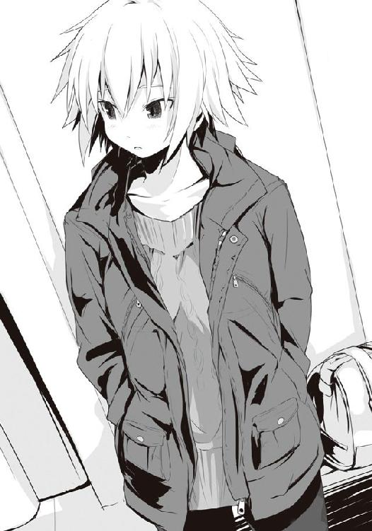
先輩はそう言いつつ、怒っているのか照れているのか、顔を赤くして俯いた。恥ずかしそうに足を交差させるのだが、そうすることで太もも同士が合わさり......うん、なんだ、僕を誘っているのか？
さすがに足ばかり凝視していると失礼なので、僕は視線を逸らす。そこにはいつの間にか戻ってきていた紫華先輩が、褒めてもらうのを期待するような顔で、こちらを見ていた。
「男の子の目から見てどうかな？ 今日の仙はわたしのコーディネートなんだよ。スタイルの良さを活かしつつ、学校行事だから派手になりすぎないように、それでいて大人っぽい魅力が出るようにしてみました。ホントはピアスとかも欲しかったんだけど、それはいいかなって」
うーん、衣装はいいと思うのだけれど......ちょっと不安になるじゃないか。外国に行ってしまうってのを差し引いたとしても、ほら、修学旅行の女子なんて、男子の格好の獲物なのだ。
そう、あれは僕らが中学校の修学旅行の時だ。一泊目、二泊目かはちょっと忘れたけど、京都のホテルに泊まった夜のこと。部屋割りは僕、石岡君、三沢君、小口君という鉄板の布陣に笹山君という至極真っ当な一般人が紛れ込んでいたりしたわけだが、それはどうでも良くって、当時の僕たちは飢えていた。何せ出発前に中学の先輩たちから、修学旅行では男女が結ばれる確率が非常に高い、エロイ体験をするのはほぼ確実、中には初体験まで済ませたとかいう都市伝説まで聞かされていたぐらいなのだ。そうなれば当然、こんなイケメンの僕と比較的女子に人気のある小口君とかがいるこの部屋に女子が大挙して押し寄せてくるはずだが、何故いまだに僕らは何となく買ってしまった木刀でチャンバラごっこを続けているのだろう？ 誰も口には出さなかったが、各自の頭にそんな疑問が過ったはずだ。僕なんかは、ははーん、さては石岡君がいるせいだな？ 窓から放り投げてやろうか......とか考えていた。
三沢君が「......もう、夢を見るのはやめにしないか」と至極現実的なことを言わなければ、石岡君が京都の夜空を華やかに舞っていたことはほぼ間違いなかった。実際、部屋の窓から下を覗き込んで、大きな池があるのを確認し、五階とはいえ運が良ければ死にはしないことを確認していたし、小口君らとも万が一の時は石岡君はピーターパンに連れていかれたと口裏を合わせる約束まで取り付けていたぐらいだったのだ。
現実を今一度見つめて意気消沈した僕ら。そんな時、ふと、小口君が一言漏らしたのだ。
そろそろみんな寝静まった頃か、と。
その瞬間、深夜の男子の不思議な連帯感により、全員が同じ思いを抱いた。女子部屋を覗きに行こう......と。きっと女子は修学旅行でバカみたいにはしゃいで浮かれ、今頃は疲れ果てているはず。となれば、当然あられもない姿で寝ているに違いない。さすがに同意なくいろいろしちゃうのは犯罪だが、覗くぐらいならば中学生の可愛いイタズラとして法に問われはしないはずだ、という議論を一分で帰結させ、続けて計画立案会議へと場は進行。自分たち男子は五階、何かしらの過ちに備えてか、学校側は四階に教師の部屋を挟み、三階を女子の部屋としていた。これだけなら別にどうということはないのだが、問題は階段とエレベーターの前に椅子を用意して教師が待ち構えていることだった。長方形型の安ホテルのため廊下は真っ直ぐで、端にあるそのエレベーターポジションに陣取られると部屋の扉を開けた時点で見つかってしまうのだ。そうなると当然のことながら三階へ行く手段は窓からしかない。
僕たちはロープ状のものを捜すと、一体どこから持ってきたのかわからないものの、黄と黒色のあの頑丈なロープを二本石岡君が用意、早速僕はこれを使ったラペリング降下作戦を提案し、直後に議決。教師の部屋を挟んだ真下にある部屋が広部さんをはじめとした美人揃いの班であることも今回の降下作戦にとっておあつらえ向きだった。
二本あるので二人が降下、三人が上方で支援という方式を取り、即座に実行に移されることとなった。提案者であり、小学校の時にラペリング降下の訓練を受けた経験もある僕がやるのは即座に決定、もう一人はジャンケンで石岡君に――あ、そうだ、これ二日目の夜だ。この作戦が決行される数時間前、大浴場脱衣所にあった業務用掃除機で石岡君が股間のモノを吸い込み「あんぎゃ〜！」という大地を揺るがす雄叫びと共に女の子になりかかった不幸な一件の後だ。ロープを巻いていたら彼、股間が痛いとしきりに連呼していたっけ。
片方を部屋の柱にしっかりと縛りつけたロープを腰に巻き、全身黒ずくめの衣装を纏った僕たちはバルコニーの手すりの上に立った。即座にチームリーダーである小口君から「ＧＯ！」の声が挙がり、作戦開始。
議論を始めてから一〇分と経っていない、今考えてみても驚くべき展開速度だった。
僕と石岡君は手すりを蹴り、ブォオォンというロープのしなる音と共に一気に数メートル降下。道具と時間がなかったためと、ロープを下に垂らすのは見つかる可能性があるとして、降下の際のブレーキ役は残った三人の握力によって行われた。つまり、僕と石岡君は三人の手によってぶら下がっている状態なのだ。
僕たちはまず、頭を下にして教師の部屋に誰もいないことを確認。上の三人と息を合わせながら、壁をキック。ジャンプするようにさらに下へ......行ったと同時にトラブルが発生した。どうも五階で教師による各部屋の確認が始まったらしかった。僕と石岡君は女子の部屋のバルコニーにも教師の部屋のバルコニーにも微妙に届かない位置で宙づり状態だった。その時、離れているはずなのに、欲望と緊張で鋭敏化された僕の耳は僕らの部屋の会話を聞くことが出来た。
――マズイ、ここまであと三部屋しかないぞ！ 引き上げるのは間に合わない！ ――見つかったら大変なことに......。――やむを得ん、ロープをカットだ。奴らを切り捨てる。五人で死ぬより、二人を死なせるべきだ。
かつて英雄と称えられた男、三沢君の非情な決断だった。
確かに教師が生徒の部屋の扉を開けたら、全員が汗だくになって京都のホテルでラペリング降下作戦を決行していたとなればちょっとした事件であり、僕が逆の立場にいたら同様の判断をしたことは間違いなかった。しかし切り捨てられる側としてはたまったものじゃない。
「石岡、佐藤、今引き上げるから絶対に声を上げるなよ！」
小口君の純度一〇〇パーセントの嘘を聞いた僕と石岡君はそれぞれの判断を迫られた。石岡君は必死にロープをよじ登り、教師の部屋のバルコニーを目指す。僕はそれでは間に合わないとしてあえて女子の部屋のバルコニーに着地するよう、体の位置とタイミングを見計らう。
......そして、予想よりも少しばかり早く、それは来た。飛天御剣技流、天翔る龍の閃き！という声と共に、一体どうやったのか同時に僕と石岡君のロープがカット。僕はギリギリで女子部屋のバルコニーの手すりを掴んだ。が、石岡君はロープを両手で握りしめていたことが災いして「んぅ〜〜〜〜〜!!」という声にならない呻きと共に、真っ暗な池へと落ちていった。
その美しさといったらなかった。そりゃもう股を閉じ、仰向けで、ロープを掴んでいたために、胸元で手を組んだみたいなポーズだったから、まるで神聖な人身御供の儀式の様相すら漂わせていた。特に何が美しいって小口君の言葉を最後まで信じ、落下しながらも必死に声を出すまいとしていた石岡君の健気さは見る者の涙を誘う。彼が池の中に消えていく光景はエイリアン３のラストシーンみたいだった。
その後といえば、女子部屋のバルコニーに片手でぶら下がっていた僕の前に、いつの間にか、可愛らしいジャージ姿の広部さんが立っていたっけ。月明かりに照らし出された彼女の蔑むような目は今でも鮮やかに思い出せる。綺麗だったな、可愛かったな......。
もの凄い冷たい目で「......なに？」とか言われて思わず興奮！ 僕は最高の笑みと共に、手すりを掴んでいない方の手の親指をビッと立てて、自らの胸元を指した。
「とっても綺麗な月だから、君を誘いにやってきた。そう、僕の名はピーターパ」
その瞬間、手すりを掴んでいた僕の手が思いっきり払われましてね。爽やかな笑みを浮かべながら「ンゥ〜〜〜〜〜〜〜〜!!」と偶然にも石岡君と同じ台詞を口にしながら池にダイブ。多分そのシーンはターミネーター２のラストシーンを彷彿とさせる感動的なものだったろう。
......まぁ、その、つまり今の長い話の中でどこが重要だったかといえば、修学旅行という状況は男子生徒をピーターパンへと変えて、女の子のもとへラペリング降下作戦を実行するぐらい全員ヤる気なのだ。もし修学旅行中の女子がみんな広部さんぐらいしっかりしていなかったら、みんな月夜の空へ舞い上がり、大人の階段を昇ることになってしまうのだ。
それなのに槍水先輩の今日のような服では、まるで狙ってくださいと言っているようなものじゃないか！ っていうか修学旅行関係なく手を出したいわ。
「大丈夫。仙のガードは桃たちがしっかりやるからね。仙なんて日本でも危ないんだから」
「何だ、桃。それはどういう意味だ。まるで私が――」
彼氏さんを引き連れた木之下先輩は、槍水先輩を無視して携帯の時計を見ると、そろそろ時間だと述べる。それとほぼ同時に二年生の担任教師たちが旗と共に声を上げた。集合の号令だ。
「あぁん！ それじゃ行ってくるねマイダーリン！ いくら寂しくても浮気しちゃダメだよ！寂しい夜は星空を見上げて。離れた土地で桃も――」
「はいはい、もう行くよ。ほら、桃。仙も遅れないように」
舞台劇のように彼氏さんに手を伸ばす木之下先輩の手を紫華先輩が引っ張っていく。槍水先輩はそんな二人の様子に、やれやれというように首を振った。
「白粉、佐藤、それじゃ行ってくる。部室と、あと私の縄張りを、よろしくな」
そう言って先輩は微笑み、僕たちにそれぞれ拳を軽く突き出す。僕と白粉はそれぞれに拳を軽くコツンと当てた。
「はい。もちろんです。先輩も気をつけて。悪い男に引っかからないよう......そう、あのガンコナーみたいなのとかに注意してください。いつでも先輩は狙われていると思うぐらいで」
「何だ、佐藤。随分古い狼の名を知っているな」
何故その名を、と口にする先輩の言葉を遮るように、二年生は早く集合してください！ と、ツアーガイドが声を張り上げた。
「それじゃ行ってくる。注意して、な」
先輩はそれだけ言い残すと小走りに教師の所へ。班ごとにそれぞれのバスの前に集まると、点呼の後に皆が乗り込んでいく。他の生徒たちと共に僕らもまたバスを見送るため、校庭前に並び、手を振った。運良く槍水先輩は校庭側の窓側の席だったようで、向こうも僕たちに向かって手を振ってくる。が、すぐに横に桃先輩が現れ、彼氏さんに向かって全力で手を振り、そんな二人の上から覗き込むようにして紫華先輩が顔を出し、僕たちに手を振ってくれた。
バスが馬のいななきのようにクラクションを鳴らし、次々に発車していく。先輩たちを乗せ、成田へと向けて。次に会えるのは旅行休みを挟んだ二週間後。そう思うと、僕はその車体が消えるまで手を下げられなかった。
見送りの生徒たちがパラパラと校舎へと入っていく中、僕もまた白粉と共に踵を返した。
ふと、視界に入った西の空。登校してくる時は空の端にあったはずの黒雲がこちらに迫ってきているような気がした。雨でも降るのかもしれない。
一瞬不安を覚えそうになるが、大丈夫だろう、と僕はそれを打ち消した。先輩たちは東の成田空港に向かったのだ。あの黒雲がこの辺りを覆う頃には飛行機は発ち、はるか上空である。追いつけないはずだ。......そう考えると、どこか先輩たちがいなくなったのを見計らって雲がやってきたとか、変な想像が湧き、僕は一人苦笑した。
「先輩がいない間気をつけないとな。言われた通り戸締まりとかもしっかりとチェックして」
しっかりやっていますよ、と白粉は至極真面目な声で言った。
「男ってのは基本的に野獣......大丈夫です、しっかりチェックしました！」
白粉はメモ帳を手にビッと親指を立てる。さっきから静かだと思っていたら、コイツ......。とりあえず、彼女のおさげを引っ張っておく。あぅ、と声が上がった。
授業が終わるまでは持ちこたえていた空も、さすがに限界を超えたようだ。僕が部室の窓から暗くなった空を見上げていると、大粒の雨粒がポツリポツリとガラスに当たって音を立て始めた。今はまだ小雨だが、空色からするにこれから本降りになるのだろう。
一方、部室内の方はすでに本調子らしく、ポツリポツリではなく、ズダダダダという凄まじい連打音が響いていた。白粉のタイピングの音だ。
あの一件もあって、しばらくの間白粉と二人っきりでこの部室にいることが不安だったが、すでに親父からの仕送り――当然あのソフトではなく、振り込みの方である――を受け取った今の僕に付け込まれる弱みはないし、何より白粉も過度に迫ってくる様子はないので、今のところ一息つけていた。白粉曰く、とりあえず今必要なネタは確保した、それ故にあとは時間との勝負、ひたすら書くのみ......とのこと。
とりあえず一安心ではある、が、時折彼女がモニターから一瞬顔を上げると、ほんのり赤らめた頬で僕を見下すような目をしたかと思ったら、やたらと不気味な笑みを浮かべ「ンフッ」と鼻息を漏らすのだけはイラっとくる。しかもそれをやめろ、と、こちらが言う前に、再び奴はモニターに顔を向け直してズダダダとタイピングを再開させるので、文句も言いづらかった。......あのモニターの中で僕......いや、サイトウ刑事はどんな目に遭っているのか......。想像するに恐ろしく、聞くに聞けない。
そんな白粉の快速音がふいにピタリと止まる。そして彼女は急に部室の出入り口の方を見やった、と、ほぼ同時に何者かによって扉がノックされる。いつもこの部室に来るのは同行会員の僕らと槍水先輩の三人だけ。しかもノックはしない。となると、それ以外でこの部室を訪れる可能性のある者は......白梅か。
先日の月曜、僕は白梅家の子、主に婿養子になろうとしてＨＲ前に早速師匠直伝の口説きの技を全力で活用し、彼女を落とそうとしたのだけれど、実際に落とされたのは僕の頭だった。簡単に云うと、僕が椅子に逆に座るように跨り、後ろの席の彼女を口説こうとしたのだけれど......いやぁ、タイミングが悪かった。師匠の教えである『相手ではなく、相手のしていることに興味を持った体で』を実践したんだけど、丁度彼女の予習していた箇所が、チェルノブイリ原発事故のあたりで「ここって最高にワンダーな所だよね。一度みんなで遊びに行きたいね」とか言っていたら、いきなり頭を両手で掴まれ、そのまま机に叩きつけられるっていう......ね。目玉が飛び出るかっていうぐらい痛くって、そのまま床の上でのたうち回ったもの。
......まさかあの朝の続きをするために訪れたのか。僕は万が一に備えて席を立ち、如何なる状況にも対応できるように身構えた。
扉が開きゆく。そこに現れたのは......。
「......あー、少し濡れちゃったなぁ。間に合うかと思ったけど......残念」
眼鏡をかけた、冬服の女子生徒。長い黒髪を雨に濡らして頬に貼り付け、あはは、と消え入りそうな声で笑う。そして、彼女は部室内に入ると真っ直ぐに部屋の奥にある棚へ向かい、そこからタオルを取り出した。
僕と白粉は互いの顔を見合わせる。何せ、まったく知らない人だったからだ。今し方来室した女生徒はネクタイの色からするに一年生のようだが、初めて見た顔だ。普通、同級生なら名前は知らなくとも同じ階に一年生の教室が並んでいるため、顔ぐらいは見知っている。
彼女は髪をタオルに挟んで軽く叩くようにして水気を取ると、今度は上着を脱ぎ、それについた滴を吸い取らせた。彼女の体の線の細さが見て取れる。体が細いが故に胸元だけ、ぽこっとした膨らみが強調されていた。決して大きいわけじゃないけど、何かエロい。
「あ、あのー、すみませんけど......どちらさまですか？」
「......烏頭みこと。君たちと喋るのは......初めて、かな？」
落ち着いた口調に、囁くような声量で、言葉を短く句切りながら彼女は名乗った。よろしくね、と彼女は僕たちに小さく手を振る。僕も何となく手を振り返したが、白粉は微動だにせず俯いていた。長く一緒にいると忘れそうになるが、白粉って元々こういうタイプだったっけ。
烏頭の目がどこか嬉しそうに細まる。
「......その顔からすると、私のこと知らない？ ......そう、やっぱり。安心して。これでもＨＰ部だから。最近全然来てなかったけど。いわゆる幽霊って、やつ」
そして僕たちの名前を言い当てると、仙は元気？ と、彼女は微笑みながら席についた。透き通るような、というより、病的に白い肌の彼女の笑みは、その体の細さ、そして囁き声と相まって、どこか儚げに見えてしまう。本当は寝ていないといけないのに、無理して元気なフリをしているとでも言うような......。幽霊部員というより、彼女自身が本物の幽霊のようだ。
一応足を見ると、短いスカートからしっかりと黒ストッキングに包まれた細い足が床までしっかりと伸びていて......ほほぅ、なかなか素敵ではないか。
僕は躊躇いつつも烏頭から一つ離れた席に座ろうとするが、こっちこっち、と彼女に呼ばれ隣に座らされる。
「えぇ、先輩は元気ですよ。えっと、烏頭さんは、ひょっとして今まで学校を......」
彼女は急にぐっと体を寄せ、その髪先が僕の頬に触れそうなぐらいに顔を近づけてくる。
「もうやめて、佐藤。同級生なんだし、烏頭とかみことって呼んで。同じ部員同士、だし」
消え入るような声で、彼女は言った。声帯をほとんど震わせずに、囁いているようなそれは近くでなければ聞き漏らしてしまいそうではあったが、耳に心地良く、聞き取りやすかった。
彼女が言ったことを考えると、烏頭はやっぱり本当に一年生のＨＰ同好会員なのだろうか。......そういえば僕と白粉が入会したのって、入学して少し間を置いてからだ。だから、ひょっとしてその前に彼女は入っていて、そのまま入院とかして学校を離れ、その間に僕たちが入れ違いに......と考えれば無理は出ない。その仮説を話してみると、彼女はニッコリと笑うばかり。その笑みは、可愛いというより、どこか人形のような綺麗な笑みだった。形良く笑う、というだけで、そこから何かしらの気持ちを読み取ることも出来ず、僕は何も言えなくなってしまう。
困った僕は先ほどの彼女の言葉を頭の中で反芻してみる。そこでピンときた。
ははーん、そういうことか。そういう感動的なストーリーか！
真実はこうだ！ 彼女は先ほど、自分を幽霊だと言った。恐らく彼女は入学前、または入学直後に何らかの事件、事故、または病で入院を余儀なくされ、そのまま命を失ってしまった女学生なのだ！ しかし楽しい青春を送りたかったという彼女の未練が、魂を幽霊として下界に止めさせ、今僕の目の前に現れたというわけだな!? 恐らく僕は彼女と恋に落ち、両思いになった途端、彼女の未練は取り払われたことになり、成仏してしまうのだ。せっかく結ばれたのに、別れてしまう。こんなことなら恋になど落ちなければ良かった......。そうすればずっと彼女といられたのに。そう悔やむ僕に、天に召される烏頭は最後の言葉をくれるのだ。幸せだったよ、と。ずっと一緒にはいられない。けれど、それ以上に大切なものを僕と彼女は手にしていたのだと、そこで気づき、泣きながらも僕は明日からもまた強く生きていくのだ!!
「う、嘘です......よね？ あたしたちと同級生とか、ここのメンバーとかって」
円卓の反対側に一人座っている白粉はおどおどしながら、でも、何かを確信したような目で烏頭を見つめながら言った。どうやら彼女もまた僕と同じ真実に辿り着いたようだ。しかし白粉さんよ、それを言うのはいささか早くないか？ こういうのは中盤に差し掛かってからだな......それまでは「へ〜、こんな可愛い同級生がいたなんて知らなかったなぁ」とかバカ・フルアクセルなことでも宣って誤魔化しつつ、親交を深めていくべきだろうに。
「ここは今ＨＰ同好会です。も、もう、部じゃないんです。それに......ネクタイだって、一年生の色ですけど、確かここのネクタイって三種類しかないですから、去年の三年生も同じ色のをしていたはずです。多分、烏頭さんは......卒業生です......よね？」
烏頭は笑みを消し、一切の感情が籠らない瞳で白粉を見据えた。
「へぇ......結構やるね。ご明察。私は昨年の卒業生。つまりＯＧ。学校、部両方ね。同好会になったのは、知らなかったなぁ」
ははーん、こいつはやられた。どうやら神様は僕よりもさらに一枚上手のストーリーテラーのようだ。恐らくこれは先ほどの物語の後に続く、大どんでん返しというやつだ。つまり僕が烏頭は実際には存在しない生徒であることを確信すると、彼女は自らを幽霊だと名乗る。そして両思いになったことで成仏する、というところまでは一緒だ。そして感動的なエンディングを迎え、僕は一人泣きながら歩いていると、成仏したはずの彼女がいきなり現れるのだ。そして自分は幽霊じゃなく、単なる昨年の卒業生だったのだ、と教えてくれる。冗談半分に嘘をついたら面白くなってやめられなかった、今まで騙しててごめんなさい、でもあなたへの気持ちは本物よ、と笑って。僕は肩すかしを喰らうものの、それでも愛する烏頭とこれからもずっと一緒にいられることが嬉しくて嬉しくて、泣きながら彼女を抱きしめる。そして、彼女は僕の耳元で言うのだ。これからもよろしくね、と。
おいおいそうきたか。儚く、感動的なストーリーは確かに美しく、人気がある。しかし、それ以上に笑って終われる幸せなストーリーの方が僕は好きなのだ。神様はわかっていらっしゃる！ 確かに作品としては若干チープな印象になるかもしれない。けれどこっちの方がファンタジー然としていた先ほどのストーリーよりも現実的で、説得力を持ったものになる。物語性も厚みを増しているといっていい。たまげたなぁ。
だが、そうなると白粉への憎しみが沸々と湧き起こってきやがるぜ。コイツ、こんな大恋愛ストーリーだというのに、開始早々にオチを明かすとか、一体この後どうするつもりだ？ 悪趣味なものとはいえ、自分でも小説とか物語を紡いでいるんだから少しは察しろよ！
「あー、もう少し誤魔化せるかなって、思ったけど......やっぱりもう、制服、無理があるね」
「いえ、全然似合ってますよ。実際今まで一年生だと思ってましたし」
烏頭は、うれしいな、とその目を細めた。口調とかと違い、どこか感情を表すことのない瞳。それは見事な陶器でも見ているような、冷たいながらもそこに宿る美しさを想わせる。
先ほどまで烏頭が本物の幽霊なんじゃないか、と僕が本気で思っていたことを彼女に告げると、彼女の瞳に、ふいに柔和な感情の色が湧く。
「あっ、そういうの、たまに言われる、私。それに昔から霊感とか強いし、そういうのがたまに見えたりして......だからかな。そっちに引き摺られているのかも。......あ、一昨日やっていた心霊特番見た？ あれ面白かったよね」
オカルトチックな話になった途端、彼女は逆に元気になった印象だった。こういうのが好きなのだろうか。自然と話は幽霊から古代遺跡、そしてＵＦＯの話へと変わっていく。ただ......なんというか彼女の口調と相まってその全てがガチの怪談話に聞こえてしまい、妙に怖い。
「あ、あの......烏頭さん、それで何をしに、この部室に来たんですか？」
烏頭が一頻り喋った後、これ以上怖い話は嫌だったのか、青い顔をした白粉が訊く。烏頭の楽しげな瞳が、また陶器のような無感情のそれになる。
「......あー。そうそう、久しぶりに、争奪戦に行きたくなって、ね。ブランクがあるから、エスコートしてくれる人がほしいなって、思って。私と一緒に行ける人がいると、嬉しいな」
ね、と烏頭は僕にウィンク。
僕はゴクリと生唾を飲むようにして、頷いた。
「ありがと、佐藤。......それじゃあさ、まだアブラ神の半値印証時刻まであるし、またちょっとお話......しようか。最近の仙のこととか、訊いていい？」
もちろん！ と僕は胸を張った。そっちはオカルトトークより何倍も僕の得意分野だ。
白粉は最初、ジジ様の方へ行くと言っていたが、烏頭がどうしても三人で行きたいと言うので、結局僕たちは全員でアブラ神の店へと向かった。
部室に常備するようになった一〇〇均の傘を店頭の傘入れに放り込み、僕が先頭になり自動ドアをくぐる。寒い店外から適切な湿度室温に制御された店内へ入ると、急に息がしやすくなるようだったが、それも束の間。瞬時に周囲から凄まじい視線を浴びせられる。その数八といったところ。その多くは僕と白粉を一瞥後、烏頭の方に向いたようだ。店内の空気が強ばり、張り詰める。思わず僕と白粉の足が止まるが、烏頭は何も感じていないようにするするとさも当然のようにして店内を歩いていった。顔にはまたあの無感情な瞳。
「どうしたの、佐藤、白粉。置いてっちゃうよ......」
彼女は背中で言い、一人先へと進んでいく。狼たちの視線は僕らから逸れるが、店内の緊張感は変わらず、自然と自分の呼吸が乱れるのがわかった。
さすがにこれには僕も白粉も驚いた。槍水先輩とかと一緒ならまだ心構えがあるから大丈夫なものの、烏頭も同じかそれ以上の......二つ名持ちだというのか？
先に青果コーナーを抜けていってしまった烏頭を追うように、止まっていた自分の足を意識して動かす。すると僕の腕が動かない。白粉が僕の袖を掴んでいた。
「あ、あの......あの人、烏頭さん。えぁっと、そのなんて言うか、ちょっと......」
「うん。多分、僕たちが知らないだけで、名うてなんだ」
僕は白粉を引っ張るようにして弁当コーナーを目指す。彼女はまだ何かを言いたげな顔をしていたが、部室での長話のせいでやや時間がギリギリだ。半値印証時刻前に弁当のチェックをして腹の虫に気合いを入れないと、出だしの踏ん張りがきかない。
今日の勝利への道、天国への扉、いまだ現世に残されし弁当は四つ。
梅干しの載ったご飯に、俵型の揚げ物とキャベツがたっぷりの『そろそろお前の出番だぜ！ さぁ行け！ たっぷりカキフライ弁当!!』。深めの容器に丸ごとのイカが二匹も使われたイカめしと少量のおかずというダイナミックな弁当、『駅弁で大人気じゃなイカ？ ビッグイカめし弁当!!』。信じられないことにご飯以外の全てが黄金色に輝き、見るだけで目眩がしそうになる揚げ物尽くしの一品、『重くて何が悪い!? 重さは満足感の証なり！ コロッケ・串カツ・エビフライ・メンチカツ・野菜チップスによる夢の共演！ スーパーミックスフライ弁当!!』。そして、以前目にしたそれと同じような、ある意味一番まともな気がする弁当、『この旅の果てに何が待ち受けているのか、おれは見てみたい......和風ロールキャベツ弁当Ｍk.Ｖ！』......の四品である。現在全て三割引シール付きだ。
目眩がしそうな『！』の多用といい、常軌を逸した名前に中身の構成といい......どこからツッコんでいいのか本気で悩むような弁当の数々に僕は感嘆の息を漏らす。
千切りキャベツすらないご飯と揚げ物だけで構成された男らしいにもほどがあるミックスフライ弁当もいいが、前回獲り損ねたロールキャベツ弁当が僕の心を引く。前回は獲ろうと戦うことすらできなかった一品......の後継品だろうか。見た目にはほとんど同じだが、何が違うのだろう？ Ｍk.Ｖってことはあれから四段階を経た進化型ということか？
うん......これがいいな。前回の悔いもこれを喰うことで晴らせるはずだ。
弁当コーナーを抜けつつ、総菜コーナーも一応チェック。極太のカニかまの天ぷらに興味を引かれつつ、白粉とお互いの狙いの品を言い合う。白粉はイカめしを狙うのだという。
烏頭の後を追おうとしたが、僕たちがチェックを終えた頃にはすでにその姿はどこかへと消えていた。僕と白粉は適当に途中で島棚の間に入ってお菓子コーナーの前に陣取る。
店内の緊張感はおさまる気配がない。そこまで何故店内の狼が烏頭を警戒しているのか。僕と白粉は言葉こそ交わさなかったが、お互いに同じ疑問を抱いているのは間違いなかった。
「よう、《変態》。おまえら、魔女がいない時に、とんでもない奴を連れてきたな」
僕をその不名誉かつ近いうちに必ず変更させてやる予定の名で呼んだのは、ガタイの良い体をジャージに包んだ男。手には空のカゴ。東区の狼、通称・ジョニーだ。彼は僕を真ん中にして一緒にお菓子コーナー前に立つ。
「いい加減その名は勘弁してくれ、ジョニー。......彼女、知っているんだな。強い？」
「強いか弱いかで言えば当然やたらと強い、らしい。向こうが本気を出している時に当たったことはないんだが......って、ちょっと待て。以前も言ったと思うんだが、何でおまえは俺をジョニーと呼ぶんだ？ 俺は正真正銘の日本人だぞ」
......うーん、何故と問われると凄く困る。確かジャージ野郎とか最初は言っていたのが、いつの間にかジョニーになった、としか言いようがない。
しかたないので僕は「それより......」と、別の話題を振ってみる。
「このスーパーに来るのって、珍しくない？ 何かあった？」
「大したことじゃねぇよ。......《氷結の魔女》とかがいない間に奴の縄張りを荒らしてやろうかと思ってな。クックックックッ」
悪役っぽい笑い方をするが、それは明らかに演技の笑みだ。本当に悪役染みた笑みというのは今、僕の隣で眼鏡を素早く装着し「ほぅ、ブリーフラインがジャージに浮き出ておるわぃ......」とか呟いている白粉のニタニタ笑いのことを言うのだ。
「まぁ、それは冗談だがな。こっちに筋トレが趣味っていう知り合いがいて、それに会いに来た帰りだ。魔女がいない間に、って考えているのもいるみたいだがな。あの、双子とかよ」
沢桔姉妹もこちらに来ているのか。ただ、彼女らの場合は槍水先輩がいないからというよりは、魔導士を求めて来ているのだろう。
「......あれ、昔どこかで見た顔。確か、東区の......まぁいいかぁ。どうせ......」
烏頭だった。近寄ってきた彼女は僕らが見ている駄菓子コーナーとは反対の、袋菓子コーナーへ体を向けて立つ。丁度背中合わせだ。
ジョニーが顔を強ばらせて、口を閉じる。
「それで、佐藤たちは何......狙う？ 私はミックス狙い」
僕と白粉が弁当名を上げると、烏頭はジョニーを注視する。彼もまた僕同様、ロールキャベツを狙うらしい。Ｍk.Ｖの文字がやはり気になるようだ。
「今までのじゃ納得がいかなくて、試行錯誤をしている、のかな。アブラ神はたまにする。......そういうのは、おいしい」
さすがＯＧ、まだ半年やそこらの僕たちとは経験が違う。何だかんだでいろいろやってきたつもりだったけど、まだまだスーパーについて知らないことが僕には多いようだ。
その時、張り詰めていた店内の空気が変わる。狼たちのざわめきが一斉に失せ、一昔前の流行曲を木琴で奏でたような店内ＢＧＭが妙に明瞭に耳に入ってくる。まるでそれにより場が整ったと言うかのように響く、バンっという音。見やればこの店の半額神ことアブラ神がスタッフルームの扉より店内へ。厨房ではまず必要ないであろう逞しい体をした彼は店内に向かって一礼。まずは総菜コーナーへ向かい、乱れた陳列を直す。そしてシールの乱舞。それまでの値札のバーコード部に赤ペンを走らせ、半額と書かれた赤と黄のシールを貼っていく。
そしていよいよ彼は弁当コーナーへ。先ほどと同様に陳列を直し、バーコード部に赤ペンを走らせ、そして半額シールを降臨させ、僕らの恵みの証を示していく。素早い、しかし無駄な動きがないためにゆっくりとすら見えるその動きが、ある時ピタリと止まった。ラスト一個、ロールキャベツ弁当の前だ。......まさか、最高の弁当を示す月桂冠の半額シールを貼......らない。彼は躊躇いながらそれまでと同じ半額シールを貼った。
「月桂冠は出ない、か。まぁ、そうそう出るものじゃないけど......残念」
烏頭が相変わらずの囁き声で言った。確かに月桂冠はたまにしか出ないものだし、何気にアブラ神の店の月桂冠は僕も数えるほどしか見たことがないとてもレアなものだった。
カツカツと、再びスタッフルームへ戻っていくアブラ神の足音が離れた位置にいる僕らの耳にまで響いてくる。それはまるで戦いの狼煙を待つ僕ら狼の鼓動のようだ。先ほどまで烏頭に向けていた店内の狼たちの意識も今や彼の足音と弁当にしか向いていない。
場はすでに嵐の前の静けさ。狼たちはまるで出だしの動きを読まれまいとするように気配を消しているが、緊張感だけは店を破裂させそうなレベルにまで上昇。
烏頭がいるせいなのか、まるで月桂冠が出た時のような焦りにも似た何かを僕は感じる。
そしてアブラ神がスタッフルーム前で出た時と同じように店内に向けて一礼。そしてキュッと音を立てて踵を返し、観音開きの扉を両手で押し開き、その向こうに消えた。そして、その扉が自重により、バタンと、閉まる。
それはまさに戦いの狼煙、法螺貝の響き。狼たちの戦いの口火を切りし、音。
ドンッと、地響きにも似た音を上げて一一匹の狼が床を砕かん勢いで蹴る。僕たちは一斉に弁当コーナーへ駆け出した。烏頭が、速い。細い体型故か、初速が半端ではない。長い髪の毛が一房にまとまり、床と水平に近い角度で宙に浮く。その後ろを僕と、手にカゴを持つジョニーが並んで追い、白粉が僕らのケツを追いかけるようにして最後尾につける。
烏頭が誰よりも先に弁当コーナー前に達しかけた。まさか、と思ったが、彼女はそのまま弁当を狙っていく。戦闘を行わず、その前にケリをつけようというのだ。しかし、彼女はチラリと後ろ――僕たちを肩越しに振り返り、その目を細めると......急激に速度を落とした。真後ろを走っていた僕とジョニーは彼女の髪が急に目前に迫ったような気がして、驚いて同じく速度を緩める。そこに白粉が僕の横を抜け、烏頭の右側に並ぶ。先制奪取の烏頭のおこぼれに預かろうとしていたのか、いきなりの減速に白粉は驚く。
そこに他の狼二匹が烏頭と白粉を左右から挟むように弁当コーナーに迫った。烏頭は両腕を広げ、迫り来た狼の弁当へ伸ばす手を払いつつ、迎え撃つ。
一方白粉の方は......ヤバイ。恐らく弁当奪取後は攻撃してはならないとする掟を利用して、盾にしようとしていたはずの烏頭の存在が彼女の逃げ道を塞いでいた。一方を彼女に、もう一方を迫り来る狼に、そして後方は僕とデカイ図体のジョニーが走り込んで道を塞いでいた。当然残る先は弁当コーナーだが、そこは逃げ込む場ではない。攻める場だ。
白粉は顔を焦りに歪め、一か八かの奪取に打って出る。陳列棚のイカめし弁当にその手を伸ばした。だが、その体型同様の可愛らしい手が容器に達するより先に、横手から迫った狼の拳が彼女の体を捉える。距離があり、伸ばした拳の先にかろうじて当たったという感じではあったが白粉の体を押し飛ばすには十分だった。彼女は肩に拳を喰らい、横手に飛ばされるが、そこには烏頭の背中。彼女とぶつかり、反動で白粉は宙に舞う。そこにジョニーが飛び込んだ。彼は空中の白粉に足をかけると、三角飛びの要領で急激に方向転換、今し方白粉を殴った狼に空中から手にしたカゴを被せるようにして襲いかかる。
僕は舌打ちしつつ、陳列棚に接近。たった一瞬で拳と蹴りを喰らって、床に倒れた白粉を掴み上げると、仕方なく床の上を滑らせるようにして放り投げ、弁当コーナーから離脱させた。
最前線近くでそのまま倒れていれば狼たちに踏みつけられるのは必至である以上、これがベストだろう。それに他の連中ならともかく、白粉の得意とする戦法なら体勢を立て直した後、乱戦の外から再び弁当を狙うのも可能なはずだ。
「佐藤、油断していると......やられちゃうよ」
幽霊が喋っているように弱々しく言ったのは、僕に背を向けている烏頭。彼女は両手を拳に固めず、平手のままで迫り来る狼の拳を次々にいなし、弁当に伸びる手を払っていく。攻撃らしい攻撃はしていないが、明らかに相手を手玉に取っているのがわかった。
そこにプレッシャー。遅れていた狼たちが弁当コーナーに集結し、後方から物理的にも精神的にも凄まじい圧力がかかり、僕はバランスを崩し、陳列棚に肩を押し付けるようにして膝をついてしまう。すぐさま立ち上がろうとしたが、その前に後ろから来ていたウルフヘアの女性の狼が、烏田高校の制服のスカートを揺らし、靴先を僕の腹に叩き込む。最近ちょくちょく見るようになった、新手だ。
彼女の一撃を喰らい、息が止まる。しかしおとなしくしているわけがない。僕は彼女が弁当に伸ばす手を下から掴み、引き寄せた。無理やり飛び込み前転をするような体勢にし、隙だらけになったウルフヘアにアッパーぎみの強烈なフックを鳩尾に叩き込む。当然もう一方の手は彼女の腕を掴んだままで、後ろに飛んで勢いを殺すようなマネもさせない。フックが生み出すダメージを漏らすことなく完璧に相手に叩き込むと、空中に浮き上がったその体を他の狼からの盾にして、僕は立ち上がる。そして頭上で両手を組んで固め、斧を振るうようにしてウルフヘアに叩きつける。トドメをさした。
陳列棚を舐めるにようして横合いからジョニーが迫る。片手は攻撃と防御のためにカゴを突き出し、もう一方はロールキャベツ弁当へ伸びている。僕もまた相変わらず粘りに粘る烏頭に背中を預けるようにして、片手を拳に、もう一方を弁当へ伸ばし、ジョニーと相対する。
カゴが迫る。僕はこれを重心を下げて頭上にやり過ごし、空いたジョニーの脇腹に拳を突き刺そうとするのだが、これが失敗だった。僕の拳は確かにジョニーの脇腹へ入るも、しかし同時にカゴを握る彼の腕は真っ直ぐ下へ振り下ろされ、僕はカゴを被るようにして、床に引き摺り倒されそうになる。
双方の攻撃は当たった。それ故に、お互いの弁当に伸ばした手は容器にも相手の手にも接触せず、空を掴む。そして僕は頭のカゴを外すために膝を曲げ、腰を曲げ、土下座をするような体勢へ――その時、僕の背に温かく、重い感触。そしてうなじ、後頭部に何か〝ゾワリ〟とする感触が走る。何だ、と思った時、その感触は僕の頬や顎にまで伸びてきてた。
髪だ。烏頭の、長い髪。ということは背中にのしかかっているこの感触は、彼女の体か。
いきなり僕の肩が真下へグッと押し込まれる。見上げた時、烏頭は頭を下に、曲げた足先を上にし、空中に舞っていた。恐らく彼女は体勢を崩した僕の背中に後転するようにして己の体を乗せ、最後、腕の力だけで自らの体を上空へ押し上げたのだ。
烏頭は弧を描いてジョニーの背後へ。膝をクッションにし、柔らかく着地......したと同時に、着地で沈んだ重心をそのまま活かし、大股に足を開くと、全身を使った強烈な掌底でジョニーの背を打つ。あまりにも見事な連続技に感嘆の声を上げる間もなく、吹っ飛ばされたジョニーと僕は衝突する。僕は烏頭に押されていたため体勢が低く、衝撃で床を転がり、ジョニーは逆にバウンドして宙に浮き、他の狼たちへぶつかっていった。
僕らが吹っ飛び、狼を巻き込んだせいで微妙な空間が最前線に生まれた。そこに烏頭が弁当を背に、眼鏡越しの瞳に何の感情も浮かべず、ただ、立つ。
それを見た誰もが思っただろう。今、この場を支配しているのは彼女だ、と。
僕は以前合宿先で出会った《ナックラヴィー》がかつてのＨＰ部メンバーを、歴戦の猛者と呼んでいたのを思い出す。即ちそれは全員が二つ名クラスということにほかならない。
場には一瞬の間があった。だが、掌底の反動のせいか、烏頭は弁当に手を伸ばさない。そこに巨漢が気炎を上げ、タックルで突っ込む。さすがにこれはいなすことができず、烏頭は横に避け、脇腹狙いで蹴りを入れようとする。その蹴りは遠心力を活かしたものではなく、床と水平に上げた足を曲げ、横から突くような一撃。衝撃により相手を退けるのではなく、純粋に破壊を意識したものだ。
巨漢は最初の白粉同様、そちらには対処せず、勢いに物を言わせるように弁当奪取を狙って手を伸ばす。その先にあったのは烏頭が狙っていたミックスフライ弁当。当然彼女が見逃すわけがない。軸とした烏頭の足先の床がキュッと音を立てる。そして、もう一方の足による蹴りが音速を超えんばかりの速度で放たれる。当たれば悶絶必至のそれは......外れた。烏頭の目算よりも速く、巨漢は弁当陳列棚に達したのだ。彼の背の肉を削り取るようにして、烏頭の蹴りはかすめただけ。巨漢の伸ばした手は勢いのままに弁当容器を掴む。ミックスフライ弁当だ。
しかし、烏頭の攻撃のダメージがここで来たのか、彼は身を捻るようにして弁当コーナー前で膝を着き、痛み故か、それとも勝利の感動にか、「んうぅ〜〜〜!!」というどこかで聞き覚えのある呻きを上げた。
外れた蹴りの勢いに引っ張られ、体勢を崩す烏頭はレモンでも齧ったみたいに、顔の右側だけギュッと窄めると、掌で口元を隠すようにして大きな眼鏡をかけ直す。目算が外れたというよりも眼鏡がズレたのかもしれない。
巨漢が弁当を手に場から退く。それと同時に弁当と烏頭にいまだ健在の四匹の狼が走り込む。
僕もまた立ち上がり、床を蹴った。視界の隅で白粉、ジョニーもまた立ち上がるのが見える。
四つの弁当のうち一つが減った。それは他の狼はもちろん、ロールキャベツ狙いの僕にでさえ強烈な焦りを生んだ。
......何だか今日の自分はうまくギヤが噛み合っていない。そんな感じがした。多分慣れない狼が二人もいるくせに、馴染みの顎髭、坊主、茶髪とかがいないせいで場の流れが読めないのかも。このままじゃマズイ。僕は今一度腹の虫に呼びかける。......一気にいってやる。
狼が群れ、再び乱戦を展開。僕は前にいた狼の膝裏を爪先で蹴飛ばすように突く。要は強い膝カックンである。狼は腰を落としそうになり、体勢が低くなったところで僕は足をかけ、上空に飛んだ。乱戦に切り込むより、上空から一気に最前線に躍り出るつもりだった。
天井に足を着け、下を見る。ジョニーが僕を警戒しつつ前へ突き進み、その先にいる烏頭は僕を見上げ、目を見開いていた。僕は彼女の傍ら目指し、天井を蹴る。重力を味方につけ、僕を警戒していなかった一匹の狼を激烈な一撃でもって文字通り叩き伏せ、衝撃で陳列棚前、最前線を震わせる。幾人かの狼がおののく中、さすがにあの男だけは躊躇わず僕に向かってくる。ジョニーだ。彼は雄叫びを上げ、僕を狙う。それに鼓舞されたように他の狼も雄叫びを上げ、僕と烏頭を飲み込もうとする勢いで迫った。
僕は身を捻るようにしてロールキャベツ弁当へ右手を伸ばす......フリをした。慌てて距離を詰めてくるジョニー。僕は伸ばした手の勢いを利用し、その場で左に回転して、左腕の肘を彼の側頭部に叩き込む。気持ちが良いほど見事にこれが入った。ジョニーはそのまま意識を失い、足から力が抜け、陳列棚の下方に頭から突っ込む。
いける。僕は肘打ちの勢いを無理やり引き延ばし、一回転。そしてそのまま今度こそ本当に弁当に手を伸ばした。
――パァンッ!! 普段、争奪戦の場では聞かない音が響き渡る。何かが破裂するような、そんな音。何だ、という疑問に、そんなものより弁当だ、とする腹の虫の声が混じる。ともかく弁当を獲ってから確認すればいい。そう思った。しかし、不思議なことに弁当に腕が伸びない。僕は、倒れかけていた。強引に一回転したせいで足が滑ったのかと思ったが、よくわからない。足の裏に床の感覚がないのではなく、回転の軸としていた左足の感覚そのものがなくなっていたのだ。足が消えた？ 僕は倒れつつ左足に手をやる。あった。しかし、手を当てているという感触が、ない。
佐藤、という烏頭の声が聞こえたが、返事も出来ずに僕は倒れた。そこに迫る足。女生徒の靴。最初に僕が叩き伏せたウルフヘア。満身創痍。倒したのが前線近くであったがために彼女が狼たちに踏まれまくったのは間違いないが、思えば巨漢が弁当を奪取した際にはすでにその姿は弁当コーナー前にはなかった。一度逃れ、体勢を立て直して再び来たか。
彼女は一切の手加減なく僕の腹部にその靴先を叩き込み、陳列棚の下方へと叩きつけた。
僕を追撃する蹴り。第二撃と共にウルフヘアは弁当へ手を伸ばすも、これは烏頭が払いのける。しかし蹴りまでは止めてくれない。今度は胸に喰らい、また陳列棚に背をぶつける。
僕の頭上でウルフヘアと烏頭の攻防が展開する。ウルフヘアが何発も攻撃を出し、何度となく弁当を奪取しようと手を伸ばすもその全てを烏頭はいなし、払い、退けていく。ウルフヘアが焦りだした時、烏頭の目が鈍く光った。彼女の開いた手がウルフヘアに無造作に伸びた。ウルフヘアが驚いたような顔をして飛び退こうとするが、その後ろにすでに他の狼がいたせいで、下がれない。下段へ伸ばした烏頭の手は特に何をするわけもなく空を掴むが、それはフェイントだったようだ。烏頭は即座にもう一方の手で拳を造り、ウルフヘアの頬に叩き込む。続けて弁当コーナーから離れるのを覚悟で、彼女に跳び蹴りを放った。
烏頭の靴がウルフヘアの腹に喰い込む。さらに彼女は床に足を着けることなく、ウルフヘアの腹を支点として、今度は地面と水平にジャンプ。先にあるのは弁当陳列棚。伸ばしたその手が、勝利を掴む。
僕は目を見開き、烏頭の姿を見ていた。彼女が奪取したもの、それは長方形で、少し深めに作られた容器......和風ロールキャベツ弁当。僕が狙っていた半額弁当だった。
いただきます！ 月が照らし出す部室棟五階の一角で、僕たちは箸を手に声を上げた。ＨＰ同好会の部室の窓は大きく、月さえ出ていればその明かりだけで弁当がうまそうに浮かび上がる。
......弁当があればだけど。
僕、そして隣の席に座る白粉の手の中にあるのはどん兵衛のうどんと総菜一品ずつである。一時間待てばジジ様の店が半値印証時刻となるのだけれど、烏頭がどうしても早く食べたい、当然みんなで、と言うので、必然的に僕らはこのようなメニューになった。
また今でこそ何ともないが、争奪戦終了後、何があったのか僕の足が痺れたような状態になってしまい、体調に不安があったせいもある。
「さーて......アブラ神の弁当は久しぶりだから、楽しみだなぁ」
隣に座った烏頭は『この旅の果てに何が待ち受けているのか、おれは見てみたい......和風ロールキャベツ弁当Ｍk.Ｖ！』の蓋を開ける。ぶわりと、鰹出汁の香りがする湯気が弁当より立ち昇る。関東におけるどん兵衛も鰹ベースのそれだが、濃口醤油のしっかりした香りがある。この弁当の黄金色のスープの香りはより繊細で、儚げだ。
僕と白粉はゴクリと喉を鳴らしながら今一度その弁当を見た。電子レンジで温められたそれはスーパーで見た時とはまったく違う顔をしている。四角く、ちょい深めの容器に収まるゴマがかかったご飯。付け合わせのカマボコと卵焼きのゴールデンコンビ、小さな容器に盛られて白ゴマがかかったたきんぴらゴボウ。そして黄金色の出汁に浸かる大きなロールキャベツ。常温ではゼラチンで固められていたそれも部室の電子レンジで加熱された今では本来の液体へと姿を変え、白く凝固していた脂も透明に溶け、弁当物では禁じ手とされる汁物を見事に弁当容器に収めていた。
そこに浸かるロールキャベツの煮込み具合も見事だ。綺麗な形を維持しているのにそのキャベツの表面はきちんと煮込まれ、半透明である。しかしその中に秘められし〝何か〟までは見通せない。
真剣に弁当を見つめる僕らに、烏頭が眼鏡越しにイタズラっぽい視線を向けてくる。いいでしょ、というような、そんな顔。僕らは恥ずかしくなって、シンクロするように自分のどん兵衛に意識を向けた。別途買ってきた総菜は一〇センチはあろうかというカニかまの天ぷらだ。衣越しにその赤色を見せるそれをどん兵衛の汁に一度浸け、それから頬張る。あのカニかま独特の擬似的な繊維質を感じつつ、噛み切り、咀嚼した。どん兵衛の汁を吸ってまろやかに溶けていく厚めの衣、口の中でほどけていくカニかま。そこに感じる蟹っぽい風味と練り物の旨味は淡泊でありながらもどん兵衛の汁の味を阻害せず、意外に相性がいい。何より蟹自体は当然高級食材だが、カニかまも何だかんだで微妙に高く、それの極太にむしゃぶりつくのは庶民的ながらちょっとした贅沢に感じられて、思わず顔が綻ぶ。結構好きな組み合わせだ。
続いて麺を啜る。改良されて太く、コシも強くなっている麺を咀嚼すると揚げ麺特有の甘みと旨味。最初は汁の味が強いが、それが徐々に麺のそれへと変わっていくのだ。うまい。そして、何度食べてもなお飽きがこない。それがどん兵衛の凄いところだ。
どん兵衛の素晴らしさに身を委ねていると、烏頭がついに箸でロールキャベツを摘み上げた。かぶりつく気らしい。汁がポタタタタと垂れるので、彼女はそれが落ち着くのを待ち、一度ご飯の上にチョンとワンクッション。それから彼女は口を大きく開けてかぶりつく。彼女の歯がロールキャベツに吸い込まれるように食い込み......そして、
「ふんー！ ......ん、ん！ んぅう......！」
暴れ始めた。......何だか、必死に声を漏らすまいとしているのに漏れてしまう......そして烏頭のあの囁くような声音だと、何だか、ちょっとエロ......はっ！ マズイ、いつぞやの白粉のような業の深いマネをしてしまうところだった。危ない。
ロールキャベツをしゃぶるようにタコみたいな口になった烏頭。熱いのだ。それでなかなか噛みきれず、しかもロールキャベツのお尻の方から噛んだことで中の汁が、とぽぽぽと溢れ出てしまい、大変なことに。烏頭も一応自分の弁当の容器で汁を受けるも、やっぱり辺りに飛ぶ。しばしの奮闘の末、ようやく烏頭はロールキャベツの半分を口におさめる。
白粉がティッシュを用意してくれたので、二人の間にいる僕が円卓に飛んだ汁を拭く。
「んー、そうかぁ。和風出汁に合わせるために、中の豚挽肉に長ネギを......」
なんだって、ロールキャベツに長ネギだと!? 僕は烏頭が噛み切り、残されたロールキャベツの断面を見やる。......なるほど、確かに幾重にも巻かれたキャベツの層の下、まるで小さめのハンバーグのようなサイズのそれには何やら微塵切りのうっすらと白い物体が視認できる。
「表面のキャベツも柔らかくて甘い、豚肉も手作り感のある粗挽きでちゃんとしている......あー、寒い日には最高。......コレ、ご飯がすすんじゃうなぁ」
そう言って烏頭はゴマが振りかけられたご飯をパクパクと口に運んでいく。僕は今一度彼女の弁当を見て、考察する。まず汁。ただの鰹出汁だと思っていたが、ひょっとしてあの汁には長ネギと豚肉の旨味が溶け出しているのではないだろうか。そうすると見た目はかなりさっぱり感があるものの、実際には結構複雑で、パワフルだったりするんじゃないか？ 思い出せ。かつて自分が食べてきたロールキャベツの味から想像してみるのだ。......うん、無理。
よくよく考えてみると僕って、まともなロールキャベツを食べたことがないんじゃないだろうか。ロールキャベツなんて一般的な料理な気がしていたけど、きちんと食べたのってほとんどが家でだ。当然そうなると著莪ママのリタか、ネネ（自称一四歳）の手によるものだが、リタはあまりその種の料理は作らない。彼女は日本が好き......というより、日本にかぶれちゃった自分が超大好きな人なので、無理して和食を作るか、故郷を懐かしんで簡単なイタリアンを作るぐらい。......そうなると僕の記憶の中にあるロールキャベツは僕の母が作ったもの。あのネトゲのためなら現実など一切の躊躇いなく捨て去りかねない我が母なので、真面目に作れば結構手間のかかるロールキャベツなんて作るわけがない。そして僕の仕送りをケチろうとした我が家の財政状況を考えるとわざわざ総菜で買ってくることも考えにくい。となると......あ、そうか、段々思い出してきたぞ。確かうちのロールキャベツって一個数十円で売られている冷凍ロールキャベツを、コンソメの素を溶かしたスープにベーコンと一緒にぶち込んだものだったはずだ。あれってキャベツの巻きがしっかりしているのはいいんだけど......中の具が、ね。確か長方形の白っぽい肉の固まりで、正直何の肉かもよく分からないものだったっけ。しかも大抵キャベツの繊維が固くて、中の具がポロっと押し出されるっていう......。
多分だけどあの中の肉って別途加熱加工されて、それを最後にキャベツに包んでいたはずだ。ロールキャベツは通常、キャベツを先に茹で、しんなりした後に生の種を詰めて巻き、それから煮込む。そうしなければキャベツと中の具の間に隙間が生まれ、一体感がなく、食べる際にあっけなくバラバラになってしまうのだ。......まぁそれより何より中の肉が、混ざり物が多くって、微妙な食感と味なことの方が問題だった気がするけど......。
......あれ、おかしいな。そう考えると僕って既製品の冷凍ロールキャベツ以外食べたことがないんじゃ......。な、なんだ、急に嫌な汗が出てきたぞ。今まで知っていた常識が実は誤っていた、というかかなり低レベルだったというこの衝撃。
「......なぁ、白粉。おまえ、ロールキャベツってどういう時に食べた？」
「え？ あたしは......えぁっと、あ、昔、お父さんが作ってくれました。最近だとお鍋に入れたりとかするので、そういう時は安い出来合いの物ですけど」
「へー、お父さんが。それはあれかな？ お母さんがいない時とかに？」
「うちはお母さんが働いてて、お父さんは専業主夫で......。なのであたしも、お父さんと塩茹でしたキャベツを一緒に巻いて――」
うんよし、もう黙れ。と、僕は言い捨て、白粉の発言を遮った。彼女は不思議そうな顔をしていたが、そんなものはどうでも良い。
何だ、この家庭環境の差は!? それとも生活水準の差か？ ちょっと自分が惨めっていうか、かわいそうになってきたぞ!!
......うーん、ますますアブラ神のロールキャベツ弁当に興味が......。今し方のこの哀れな話をすれば今日初めて会ったとはいえ、ＨＰ部の後輩に当たるわけだし、一口くれるとは思うのだけれど......さすがの僕も何だか、一家揃って惨めっていう話はちょっと抵抗があるな......。
「なに、佐藤。......食べたい？ ......白粉は？」
烏頭はまるで僕の心を読んだかのようにニッコリと笑って言ってくれる。僕は、はい、と速攻で頷くが、白粉は「あたしは、ちょっと......遠慮します」と、まだ抵抗があるようだ。視線も烏頭に向けようとせず、どん兵衛に向けたままだった。
そんな白粉に、烏頭は笑みを消し「あっそぅ？」と無表情に小首を傾げた。
「それじゃ、佐藤。この私の食べかけでいいなら......あげるけど？」
おいおい、むしろ最高じゃないか。僕はおやつを前にした犬のように、興奮し、烏頭に哀願する。彼女はまたニッコリ笑うと、その半分になったロールキャベツを箸で摘み上げる。
「はい、あーん......」
あーん、と僕は口を開ける。ロールキャベツが近づいてくる......が、それはある程度近くまで来た時、方向が急激に変わる。そして、烏頭の口へ。
僕がいまだ口を開けて愕然とする中、「んぅー、おいしい」と烏頭は一人黄色い声を上げた。
「最高だね。......なに、その顔。そんなに欲しい？ しょうがないなぁ、ってね。食べかけは、失礼かなって。それじゃ......こっちのを......はい、あーん」
そんな憎い演出をしなくたっていいのに。僕はまた尻尾があれば千切れんばかりに振る気持ちで、口を開けた。そして......ロールキャベツは口の中に。......烏頭の。
「あぁ、これ......本当おいしい。アブラ神、腕上げたのかなぁ」
烏頭は笑いながらそう言ってパクパクとご飯を食べる。
「ねぇ、そういえば......佐藤や白粉が、ＨＰ部に入った切っかけとか......聞いてなかったよね。教えて......ほしいな」
そう囁き、烏頭は体を寄せてくる。しかし、今の僕が欲しいのはロールキャベツなのだけれど......。まるでさっき「くれる」と言ったことなど、完全に忘れているかのように話をせがんでくる彼女に、僕は困惑した。さすがにお願いしている立場の僕が「ください」と再度催促するのは、今日初めて会った人だし、ちょっと悪い気がして口に出せない。仕方なく、目でロールキャベツを凝視しながら、彼女の望む話を続けた。時折どん兵衛を啜り、わざと視線を烏頭の目からロールキャベツに向けたりと、必死のアピールを繰り返す。
烏頭は笑顔で、楽しそうなまま、僕の視線に気づいているはずなのに、一人で全てのロールキャベツを平らげてしまうのだった。......なんだか、よくわからない人だ......。
１
烏頭と一緒に戦った日から土日を挟んだ月曜日。僕は従姉のマンションに来ていた。
あっはっはっはっはっ、と僕の隣でコントローラーを持つ著莪あやめが快活に笑う。プレイしているのは先日親父から送りつけられた料理の鉄人だ。
「これいいわ、笑えるもん！ この司会の人？ この人がテーマの食材名を言う時とか、相変わらず最高過ぎる！ あとこの調理器具の各個の説明とか、誰も必要としていないって、こんなのさぁ！ しかも料理の画像アップで見せられてもＳＳの解像度じゃ限界が！」
このソフト、てっきり名対決のムービーが何本も入っているのかと思ったら、基本二分ぐらいの凄まじく短いダイジェストになっていたり、著莪が言うように完成した料理の写真を何枚も見ることが出来るものの、ＳＳの性能では皿に何が載っているのかよくわからないのも多数あり......甚だシュールなネタには困らない。本来の意図とは違うであろう笑いがたっぷりと詰まっていて......何て言うか、一人だと悲しい気分になるけど、気心知れた奴が横にいると急に面白さが爆発するタイプのソフトだった。
著莪と電話で先日の困窮ぶりを話すとひたすら笑われ、続けてこのソフトのことを話したら、何故か彼女がいたく気に入り、是非見てみたいから持ってこい、と言われたのが昨夜。正直それだけで寒い中歩くのは嫌だったが、温泉旅行のお土産があるというのなら話は別だった。
僕は今日、授業を終えると真っ直ぐに彼女のマンションに向かい、それで、コレである。
著莪も下校後すぐだったのか、今も制服を着替えることもなく、スカートから伸びる足をペチペチ叩いたりして笑い転げていた。
一頻りプレイを終えると僕たちは笑い疲れ、二人してクタッとなる。
最初は二人掛けのソファに並んで座っていたものの、途中から著莪が僕に、そして僕はソファの肘掛けに体重をかけていた。けれど最終的には僕は身を捻って、肘掛けを枕にして横になり、その上に同じような体勢で著莪が寝転がっている、という状態になっていた。さすがに二人掛けソファでは完全に横にはなれないので、二人とも足は前に放り出したような感じだ。
「あー、笑っちゃったなぁ、これ。いいソフトもらったじゃん」
僕の胸に顔を押し付けるようにして、著莪は言った。彼女がかけている眼鏡のフレームが少し痛い。言うほどじゃないが、そのままなのも何か嫌なので、僕はそのことを伝えるように彼女のボリュームのある長い金髪をポンポンと軽く叩くように撫でた。
「冗談キツいって。あ、それより着替えた方がいいんじゃないの？ 制服、皺になるよ」
あー、いいのいの。彼女はそう言って顔を上げ、笑みを見せる。眼鏡と、吸い込まれそうになる碧眼に、僕の顔が映り込んでいた。
「実は今日で中間テスト終わったんだよ。それでさ――」
著莪曰く、この後ファミ部恒例の『おこた会』というものが開催されるらしい。星空の下、丸富の校舎の屋上にて、その名の通りこたつを用意し、みんなでみかん食べながら携帯ゲーム機で遊ぶ、という何だかよくわからないイベントらしい。これをやればどうせスカートとかシワシワになるから、どうでもいいのだという。
「元々は年末にやってたらしいんだけど、ほら、冬休み入っちゃうと地元民以外実家帰っちゃったりするし、何より本気で寒かったらしくって、段々日程が前倒しになったみたい」
「あ〜、そういうの楽しそうだなぁ。テスト終わりでテンション上がってるだろうし」
「佐藤も来なよ〜」
「......嫌だよ。さすがに他校の部活のイベントに正式参加とか」
「もう文化祭の時に一緒にやったじゃん」
「あれは校外だったからさ。さすがに校舎に足を踏み入れるとまた問題が......。それに僕、携帯ゲーム機持ってないし......って、アレ？ 著莪は何を持ち込むんだ？ 人から借りんの？」
その瞬間、著莪はニヤリと勝ち誇ったような笑みを浮かべた。
「んなん決まってんじゃん。ゲームギア」
ＧＧ。〝時代を先取りし過ぎて世間を置き去りにした名機〟やら〝携帯できない携帯ゲーム機〟といわれるあの有名なセガの携帯ゲーム機だ。
誰しもがご存じの通り、ある種とてもセガらしいハードといえるこれは、九〇年当時としてはとても高価なバックライト付きカラー液晶画面を搭載し、セガマークⅢとほぼ同スペックの性能を有し、別売りのＴＶチューナーを装着すればカラーのテレビ映像さえも見られるという凄まじくハイエンドなマシンだった。携帯ゲーム機といえば粗いドットの黄ばんだようなモノクロ画面が当たり前とされていた時代、ＧＧの登場はまさに新時代の幕開けと言っても過言ではなかった。......が、それを実現するために様々な犠牲を必要としたのは言うまでもない。
本体の高額化と巨大化。さらに単３電池六本使用による重量増に加え、驚くべきはアルカリ電池を使用しても三時間しか遊べないという度肝を抜かれる燃費の悪さだった。しかも発売当時は今のように充電池や安価な電池が普及しているわけもなく、ヘタにゲーセンで遊ぶより金がかかる、と親父が嘆くほどだった。これが携帯出来ない携帯ゲーム機とされる所以である。
一応充電可能な外部バッテリーも発売されたのだが、これがまた殴ったら人が殺せるんじゃないかっていう巨大さと重量で、携帯ゲーム機の携帯性を物の見事に打ち消してくれる夢のようなアイテムだった。一応有線で繋ぐタイプなので、バッテリー本体はベルトに引っかけたり、鞄に入れてそこからコードを伸ばせば外でもプレイ出来るのだけれど......。この時点で二〇一〇年代を生きる僕らからするとすでに何かを間違えている気がするのだが、さらに驚くべきはそんな巨大なバッテリーでありながら当時の技術では八時間かかって充電してもやっぱり三時間程度しか遊べないというもう何が何だかわからないカオスな状態だった。しかしながらその四年後、ついに本体搭載タイプのバッテリーが発売され、驚くべきことにこれには二時間半で充電を完了する機能が搭載された――が、やっぱり三時間しか遊べなかった。
でもそんなＧＧはやっぱりセガのハードらしくって、良いところもダメなところも、全部ひっくるめて不思議な愛おしさがあるのを忘れてはいけない。とても電池じゃ『シャイニングフォース外伝』や『魔導物語』等のＲＰＧなんてやっていられないので、ＧＧで遊ぶ時はＭＤのＡＣアダプタを繋いで室内のみで遊ぶという携帯性を完全に放棄した遊び方をしていたけれど、それはそれで楽しかったし、ＴＶチューナーを経由することで外部映像を取り入れることが出来るので、時にはＤＣを接続してみたりした。あの小さい液晶にポリゴンのソニックを映した時は形容しがたい感動が僕らを包み込んでくれたっけ。
こんな素敵なマシンを親父は結構好きらしく、発売した直後には街中で某モノクロ携帯ゲーム機で遊ぶ子供たちを見つけるとわざと近くに行ってＧＧで遊びはじめ『白黒なの？ つまんないね（微笑）』という当時のＣＭで使われていた挑発的な台詞を宣って優越感を味わっていたんだとか。そして本人は知らないだろうけど、実は当時地元の子供たちの間ではモノクロ携帯ゲーム機で遊んでいると変なオッサンが現れる、という、都市伝説というか......ちょっとした召還獣みたいな扱いを受けていたらしい。それを僕と著莪は小学校の先生から聞いて、何とも言えない気分になったものだ。
「実家に戻ったのも本当はアレを取りに戻ったようなもんだったしね。むしろ温泉旅行の方がおまけ、みたいな」
著莪がふと何かを思い出したように僕の上から離れ、立ち上がって体を反らして伸びをした。
「そうそう、お土産渡しとかないと。温泉饅頭があったんだけど......」
ど？ と、僕が訊き返すと、彼女は振り向きざまに笑って言った。もう喰った、と。
「おい、僕への土産を......っていうか、すでになくなってるのに僕を呼んだのかよ」
「土産話で許してよ......っていうのはまぁ冗談。温泉饅頭食べちゃったのは本当だけど。いやぁ、テスト期間に佐藤に会っちゃうと勉強しなくなっちゃうしなぁ、って思って置いといたら、夜、お腹減っちゃってさ」
そもそもテスト期間中だったのに、土日に温泉旅行に平然と行っちゃうあたりからしてもうなんつぅか......ねぇ？
「んで、饅頭とは別にちょっといいのがあったから、これ、佐藤に」
著莪は部屋の隅にあった袋を投げて寄越すと、何故か部屋から出ていき、寝室の方へ向かったようだ。袋の中身は、黒いスカジャン。早速広げて見てみると、背中には黒い犬だか狼の姿があった。おー、と僕は声を漏らす。
「本当はブルドッグのがあったら良かったんだけど、見つからなかったからさ。あ、ちなみにアタシのはコレね」
部屋に戻ってきた著莪は僕のと同デザインの赤いスカジャンを羽織っていた。可愛らしい丸富の制服にスカジャンはいささか不思議な組み合わせだが、彼女にはよく合っていた。
「佐藤も着ちゃいなって。これから外行くんだから。寒いよ？」
「え、何で？」
荷物運び、と、彼女は笑う。どうもテスト勉強ってことで普段は学校に置きっぱなしの勉強道具を全部持って帰ってきてしまっているんだとか。んで、明日、自分で持っていくのも面倒。......ってことで僕を呼び出し、運ばせる魂胆だったらしい。
はい、これ、と渡された鞄はズッシリと重い。どうやら辞書とかも入っているようで、著莪もまた、今も変わらず僕同様完璧な置き勉派なのだろう。
どうでもいいが、著莪はともかく、僕が置き勉派になったのはただの怠惰からではない。これには過去に共に戦い、共に生きた英雄との深い関係があった。三沢君、かの革命家である。
あれは中一の雪が降りだした冬先のこと。帰りのＨＲの、週に一度だけ開かれるクラス集会の時に、当時女子の中心人物だった武藤さんが「男子の多くが置き勉をしています、掃除をする際、女子は重くて机を運べないので、即刻禁止にするべきだと思います」と、したり顔で言ったのが切っかけだった。多分、どこのクラスにでもこういう〝正しいことを言っている〟〝間違っていることを指摘している〟という、自己満足と優越感に浸りたいだけのテレビ出演ばかりしている政治家みたいなマセた女生徒がいると思うのだけれど、武藤さんは典型的なそのタイプだった。同性相手には比較的いい顔をし、さも女子代表のような顔をする娘だ。
ただそれでも実際のところ、彼女の言い分には一理あった。というのも、僕らの学校では電子辞書が禁止されていたため、みんな分厚い国語辞典と英語辞典が標準装備となっており、中には僕や石岡君みたいにちょっとしたウケを狙うためだけに国語辞典ではなくて広辞苑を持ってきている愉快な人も少なからずいたので、置き勉でもしようものなら非力な女子に机を持ち上げることは確かに困難だったのだ。でも、それはそれで他の女子も納得していた、というか、そういう重い机は全部男子が「石岡の机重すぎるだろ！（笑）」とか言って楽しみながら掃除をしていたし、思春期真っ盛りでお互いを意識し始めている男女が話をする良い切っかけにもなっていたのだ。実際、重い机を二人で運ぶという共同作業によって斉藤君と安井さんのカップルを生んだ実績もあったぐらいだ。
ただ、それでもやはり武藤さんの言い分には一理ある。それ故に他の生徒から言われればある程度納得して受け入れたかもしれないが、発言者が彼女であることに問題があった。というのも、僕らのクラスだけなのだが、忘れ物を一度すると警告ポイントが記録され、それが一〇個たまるとありとあらゆる面倒事を押しつけられ、一カ月クラスの奴隷のように扱われるという悪魔のシステムが存在していたのだが......大体想像がつくかもしれないが、このシステムを発案、実施した張本人こそが武藤さんだった。男子はこのシステムに対抗する手段として全教科を置き勉するという最終結論に達しており、結果的に男子の忘れ物は基本的にゼロ、小口君のかの有名な『忘れ物というものを忘れた』という名言が飛び出すまでに至っていた。
もしかしたらこの置き勉を禁止にしたいとする発言は自分の発案したシステムが完全に無用の長物、それどころか彼女の味方であるはずの女子だけを苦しめるものになってしまい、中心的立ち位置に危機感を覚えた武藤さんの起死回生の策だったのかもしれない。
だが、武藤さんは知らなかったのだ。中学に入るタイミングで少し都会の町から僕らの町に引っ越してきた彼女には、田舎独特の緩さや、全員が兄弟のように毎日顔を合わせている子ども同士の連帯感......そして何より僕らの変にまじめかつバカなところを。
この圧政には何としてでも立ち向かわねばならぬ。誰もがそう口にしたが、理は向こうにあった。それが僕らを苦しめた。この窮地の中で立ち上がった者こそ、我らが英雄、後にチェ・ゲバラをも凌ぐ革命家として人々に語られる三沢君である。彼は置き勉が禁止された翌日、巨大なドイツ連邦陸軍迷彩柄の大型リュックサックを担いで登校してきたのだ。一体何があったのかと男子が口々に尋ねると、彼は自信に満ちた顔で言った。
「忘れ物をしないために我々は置き勉という選択をしたが、それを禁止された今、これしかない。全教科を鞄に詰めて登下校すれば忘れ物などしないのだ!!」
僕らはハッとした。そうか、その手があったかっ！ と誰もが刮目した。ペニシリンの発見に勝るとも劣らない大発見だと人々は驚愕した。正直そんなクソ重い物を毎日持ち運びするぐらいならきちんと勉強道具をチェックした方が楽なのだけど、当時の僕らにはそこまで頭が回ることはなかった。三沢君の選択こそジャスティス、一縷の希望の光......とか熱心な宗教家みたいに信じ切っていた。どうせ毎日辞書を背負っていたのだから、誰か一人でも『鰯の頭も信心から』という諺を引けば良かったのだが、当時の僕らが辞書を引くのはエロい単語を調べる時だけだった。ちなみにその際にはカタカナ辞典と広辞苑は驚異的なポテンシャルを発揮したことを後人のために付け加えておこう。
しかし何故ミリタリーバッグなのか。それには合理的な理由があった。全教科に加えて辞書となると普通のオシャレな鞄とかでは重量に耐えきれないが、軍で使用される物は極めて丈夫に製作されているのに加え、重量物を詰め込むことを前提とした作りであるが故にヘタな登山用リュックよりも使用感が良かったりする。何より放出品であるそれらは多少ボロいのを我慢すれば値段がかなり安いのだ。
その日の放課後、僕ら男子一同は訓練された犬がごとく一直線に町の片隅にあるミリタリーショップへ突撃し、思い思いのリュックサックや鞄を購入、ついでに時期が冬だったこともあってお金のある奴はリュックと合わせて妙な装備品までも手に入れる始末だった。
翌日の登校からドイツ連邦陸軍装備の三沢君を筆頭にイギリス、アメリカ、フランス、ロシア、中国、韓国、自衛隊の装備で固めた男たちが雪上で群れを為しての行軍が始まった。正直ミリタリー装備で登下校する集団とか、普通に考えればアイタタ......な感じなのだが、群集心理というのは恐ろしいもので、誰もこれに対して違和感を覚える者はいなかったし、何よりここまで来るとその光景は多国籍軍の合同軍事演習のようで、傍から見るとちょっと壮観ですらあったのだ。かくいう僕も親父から貰った自衛隊仕様のリュックを使用しており、毎朝一緒に登校していた著莪の爆笑を誘っていた。不思議と彼女のツボだったらしい。
さすがに男子のこの有様には武藤さんも言葉を失っていた。何せ武藤さんが要求したものを全てクリアした上で、これを打倒したのだ。完全に彼女の思惑は外れ、僕らのマドンナ・広部さんを中心とした女子生徒はこんな毎日が軍事演習のようなクラスにした原因は武藤さんの傲慢な圧政にあると結論付け、忘れ物ペナルティシステムの廃止及び置き勉の正式な許可を教師に申請。近隣に住む鳩派から苦情が来ていたこともあって同日、学校側は申請を正式に受理。これをもって武藤さんの独裁政権は完全な瓦解を見せ、彼女の権力は完全に失墜するに至った。
この激動の事件を人は後に『三沢の乱』と呼び、かの英雄の名と共に置き勉の素晴らしさと圧政に抵抗する勇気を世に広く伝えたのだった。
当時を知る者たちは語る。――もし苦しい時、心がくじけそうな時、寂しい夜を迎えた時......あの革命家の名を思い出せ。彼は常に我ら男子と共にある、と......。
この話を聞けば誰もが置き勉推進派になることは請け合いだし、当事者の一人であるこの僕が置き勉をしないわけがない。
以前このことを白梅に話したら生ゴミを前にしたような目で僕を見、どうでもいい、とか一蹴されたけれど、きっとそんな彼女も心の中で感動していて、その照れ隠しに違いなかった。
さて、そんな驚異的かつ恐ろしいまでに長い余談はどうでもいいとして、僕と著莪はクソ重い鞄を手に丸富大学附属高校へと向かったのだけれど......いやぁ、凄いよ？ 何か校門の前に辿り着いたら思わず唖然としちゃったもの。
かつて僕がバッテリーチャージされかかった場所にして、番人が居座る呪いの館......即ち校舎から独立して建っている警備員の詰め所が、炎上していた。それもボヤとかいうレベルじゃなくて、ぼうぼうと炎が噴き上がっていた。しかも問題はその燃え盛る詰め所から「アカン、オートロックが!? 完全な密室やと!? しもた、ミイラ取りがミイラに!? アカン、これはアカンでぇ!! ならば、窓の鉄格子をぶち破って......ぐぬぉおぉあああぁぁぁ!!」と、ハゲの警備員が自身の手によって増設したのであろう防犯装備（？）と格闘する、悲鳴にも似た雄叫びが聞こえていたり、炎の勢いを増す詰め所の前で、小さな猫耳少女が両手を掲げていることに、僕らはおののいた。傍から見ていると魔法少女が詰め所をその力によって炎上させ、中に封じた魔物を焼き殺そうとしているようにしか見えなかったのだ。
......当然のようにその少女は井ノ上あせびちゃんである。
そうか、あせびちゃんは魔法少女だったのか。白っぽい格好しているけど、黒魔法使いだろうな、とか、僕がボケッと考えていると、著莪に「......一応、行っとこうか」と、促される。
「あれぇ？ 洋くんだぁ〜。あやめちゃんも〜」
僕らが話しかけると、ようやく彼女は腕を下ろし、詰め所に背を向けた。今日の彼女はいつもの生地の厚いニーソにマフラー、ふわっとした白くて大きな猫耳帽子。それとおそろいの、物が一切掴めなさそうなふわふわの猫風の手袋、そして帽子と同じようなふわっとした生地で出来ている白いフード付きポンチョを制服の上から羽織っていた。そして右目を軽く隠すしっとりとした黒髪、笑みで細められたその可愛い目もいつも通り。
......この異様な状況も、いつも通り。
「えーっと何から訊けばいいんだろ。......あせびちゃん、今、何してたの？」
「ぐぬぉぉお！ オレは負けへんでぇ！ まだまだ夢が、野望があるんやぁ！ ピチピチの若い嫁!! こんなところで灰になってたまるかいな!! こんな炎や都の条例ごときでオレを倒せると思ったら大間違いや!!」
「えっとねぇ、警備員のおじさんがお餅焼いてるから、あっちにくれるって言ってね〜」
「おのれぇい！ 無理して高い合金製にしたのが誤りやったか！ 策士策に溺れるとはまさにこのことぉおおおぉぉおぉおぉおぉ!!」
「あー、それで......。でもさ、さっき腕を掲げていたのは......？」
「アカンか。となるとやはり扉から！ ......くそぅ、開かへん！ ヒロシを逃がさへんためにと思うてつけたオートロックシステムがオレに牙を剥くとはのぅ！ ええ度胸や、オレの逞しい筋力でその耐久性を確かめたるさかいな、覚悟せいや！ いくでぇえええぇぇええぇ!!」
「あれはねぇ、暖かかったからだよ〜。おかげで少し眠くなっちゃったよ〜」
あー、うん、なるほど......。あせびちゃんじゃなかったら即座に病院に連れていかねばならないが、彼女が言うなら仕方ない。実際、近くにいるだけで確かに暖かい。
「くそぉう！ どないしたらええんや!? 諦めるな、オレ！ 突破できへん障害などないんや、突破できんオレがいるだけや！ だから、諦めなんだら必ず道は開けるはずなんやぁ!!」
何かさっきからオッちゃんの台詞を聞いていると、世界の命運を懸けてのラストバトルを迎えているみたいだ。
そんな後方十数メートルで展開する死闘をあせびちゃんは一切気にすることなく、無邪気な可愛い笑みで、この後のおこた会に僕を誘ってくる。可愛い女の子から今晩一緒に、と誘われるのは男にとって最上の幸せというものだけれど、さすがにこの状況では......何だか、怖い。
あせびちゃんの誘いに乗ってしまうと、ほぼ間違いなくオッちゃんと同じ末路を辿る己の運命を敏感に感じ取った僕は、槍水先輩がいない今、彼女の縄張りを守らなきゃ......とか何とかやんわりと断ろうと四苦八苦する。そんな時、サイレンが鳴り響き、いつの間にか集まった野次馬をかき分け、消防車とパトカーが校庭に突入してきて、場が慌ただしくなってきた。
「ほら、あせび。そろそろ行こうよ。どうせお餅も炭になっちゃっただろうし、消防車の水がかかったりするのも嫌だしさ。佐藤も、荷物ありがと」
「え〜、お餅食べたいよぅ〜。楽しみにしてたのにぃ〜......」
著莪が苦笑するような顔でチラリとウィンクしてくる。こちらの気持ちを察してくれたか、もしくは今日のあせびちゃんは絶好調と見て、お守りを持っていない僕はさすがに危険だと判断してくれたようだ。
鞄を手渡す際、僕は彼女の耳元で、ありがと、と言うものの、少し近すぎたのか長い金髪が口に......。著莪は、人の髪喰うなよ〜、と僕の肩を小突いた。
「それじゃ〜、洋くん、残念だけど、またね〜」
あせびちゃんが、その可愛らしい猫手袋を振りながら、著莪と共に校舎の中に向かっていく。一度腕を下ろしても、少しするとまた振り向いて手を振ってくれるのでなかなか気が抜けない。
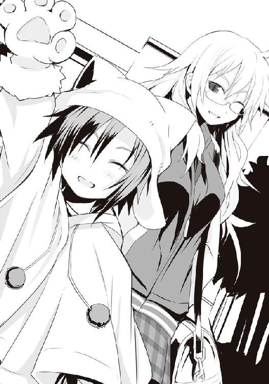
「あら、佐藤さん？ こんなところで......」
あせびちゃんたちが見えなくなって、僕が腕を下ろすと、背後から声をかけられた。見やれば、沢桔姉妹。鏡の方は普段からだが、今日は一段と疲労の色が濃く、梗の方もグッタリとしていた。生徒会長とその副会長だし、もしかしたら火災の対応で奔走していたのかもしれない。
僕は著莪の荷物持ちをしてきて、半値印証時刻もあるので今から帰るところだと告げると、梗が「あっ」と顔を輝かせるものの、すぐに放水され始めた詰め所の方を見やり、またげんなりとした顔に戻った。
「よろしければ今宵、佐藤さんと御一緒に西区のスーパーに、と思ったのですが......」
「姉さん、今日はどう考えても無理ですよ。また火災警戒用のプリントを書き直さないと」
「ですわよね。残念。......でも不思議ですわ、昨年まで平穏でしたけど、ここ半年ぐらい爆発事故や火災がこんなに多発するなんて。わたくしたちに何か不備があるのかしら......」
落胆するように梗は言ったが、半年ぐらいというと......多分、あせびちゃんが入学してからではないだろうか。
僕らは何とはなしに無言のまま、詰め所が鎮火し、中からターミネーターがごとく服が焼け落ち、逞しい裸体を晒したオッちゃんが脱出してくるのを見ていた。やはりフィクションと現実は違うもので、ドラゴンボールのようにパンツだけが残るといった気の利いた現象は起きなかったようだ。現れたオッちゃんは文字通り一糸まとわぬ姿で、極太のアレが衆人環視の中に威風堂々と鎮座し、その存在を惜しげもなくアッハッピーニューイヤー。
野次馬たちから一斉に悲鳴が上がり、沢桔姉妹も「ふぇっ」と声をハモらせると瞬時に顔を赤らめ、横を向いた。
「まったく危ないところやったわ！ 普段から鍛えておかんかったら今頃は......ん？ 何や、救急車はいらんで、ちょっと火傷しただけやねん。凄いやろ、がははは......は？ ちょ、おまっ、待ちや！ 何で白と黒のツートンカラーの方やねん!? 普通白オンリーの方やろ!? ちょ、な、なんでや!? なんでやぁああああああぁぁぁぁぁ!?」
さらば、番人。敵として出会い、戦い、時に股間をこすりあわせながら障害物競走を駆け抜けた彼。その去り行く姿を見る僕の胸に去来するこの感動は何だろう？
オッちゃんを乗せたパトカーが発進していく。僕の頭の中でドナドナの曲が再生されていると、隣で二つのため息が聞こえた。
「あ、そういえば西区にってことは、まだ魔導士を追っているの？」
「え？ えぇ、そうですわ。偶然にでも出会う機会を待っているんですけれど、なかなか。本当に帰国なされているんですわよね？」
「確か《毛玉》もそう言っていたけど。元々あんまりスーパーには出ない人だったからなぁ」
難しいですわね、と、梗はその細い顎先に手を当てて呟いた。彼女のそんな様子を見ると、僕はいまだに嬉しくなる。かつてスーパーから追い出された過去を持つ双頭の犬。そんな彼女らが、今は僕らと同じようにかの戦いの野を駆けている。それが、何だか無性に嬉しい。
僕の視線に気がついたのか、梗はどこか恥ずかしそうに笑みを浮かべる。
「......いずれまた、佐藤さんとも、お手合わせ願いますわね」
こちらこそ。僕は言って、三人で笑い合った。
僕が烏田高校の部室棟に戻った時には、すでに日はとっぷりと暮れていた。時間も時間なので、運動部はすでに解散したようで、ほとんど人の気配がなかった。病院ほどじゃないにせよ、普段は大勢の人が出入りしているはずの場所がひっそりと静まりかえっているというのはどこか不気味さを覚えてしまうものだ。ＨＰ同好会に入った当初はともかく、最近ではそんなことを感じることはなかったのに、何故か今日は違う印象だ。どこか寒々しく思えた。
ＨＰ同好会の部室の扉を開けようとしたものの、白粉のタイピング音が聞こえないことに気づき、僕は鍵を取り出す。普段なら聞こえようが聞こえまいが槍水先輩がいるので構わずノブを回すが、今彼女はいないのだ。
僕は鍵を差し込み、ガチャリと回した。しかしなぜかノブは回らない。初めから開いていたようだ。再度鍵を回し扉を開ければ、案の定室内にはノートＰＣを開いた白粉がいる。しかしその手はキーボードの上に置かれたまま動いておらず、そのモニターの光で照らし出された彼女の顔は薄暗い中でもはっきりとわかるぐらい、青白かった。そして......。
「......彼女は気づいたんだ。そこに人がいるはずがない、だってそこは......」
なんだ、と思ったら、なんと部室にはいるはずのない人物がいた。烏頭だ。彼女は昨日と同じく、烏田の制服姿で、さも当然のようにいつもは槍水先輩がいる窓際の席に座り、囁いていた。......怪談話らしい。一頻り話し終わると、彼女は僕に顔を向けてくる。
「また来ちゃった。この前、楽しくて。......来ちゃ、まずい？」
白粉が青白い顔色をしている理由はこれか。先日ちょっと喋っただけの女性と密室で二人っきり。白粉からするとキツいはずだ。しかもこの季節に怪談トークって......。
無理せずに途中で適当に理由をつけて帰っちゃえば良かったのに、そう思いながら烏頭の近くの席に僕が座った時、円卓の上に置かれた彼女の手の中に小さな鈴のついた鍵があるのを僕は見つけた。恐らく、ここの鍵だ。......ひょっとして烏頭が先に来ていたのだろうか。そう考えると後から来た白粉が烏頭の顔を見て慌てて帰る、というのは確かに辛い。
「先週の金曜に今日......って、学校とか仕事とか、大丈夫なんですか？」
「大丈夫。何となく入った専門学校だし。試験さえ受ければ......大丈夫」
僕が来たのをチャンスと取ったらしい白粉がノートＰＣのモニターを閉じて、席を立った。
「あ、あの、すみません。あたし、今日はもう帰ります」
「えー、なんで。また一緒にスーパーに......行こうよ」
今日はあまり食欲がないので、と白粉はペコペコしながら、逃げるようにして部室を去っていく。烏頭は微笑んで見送った。
「さて、と。今日はどこ行く？ やっぱりアブラ神？ ジジ様のとこかな。どっちにせよ、まだ少し時間あるね。......ね、また話、聞かせてくれないかな。今日は優君のこととかさ......」
烏頭は椅子の座面を手で掴むと、座ったまま小刻みにジャンプするようにして、僕に近づく。体が密着するぐらいまで席を寄せてきた時、彼女の長い髪が僕の肩や顔にかかり、僕の肌と鼻腔を擽った。著莪もそうだけれど、長い髪はシャンプーやらリンスの香りが残りやすく、人の鼻を引きつける。
間近にある彼女の顔を見ながら、僕は魔導士こと、金城優のことを饒舌に語り出す。厚いレンズ越しの瞳がどこかうっとりと緩められるのを見て、僕は思った。
――ははーん、さては僕に惚れたな？
烏頭に催促されるがままに魔導士のことを喋っていたら、アブラ神の半値印証時刻は過ぎてしまっていた。僕の話だけなら何とか間に合いそうだったものの、烏頭が何故かその後にかつて遭難した探検隊が仲間を喰い始めるという話を始めてしまい......それで間に合わなくなってしまった。......しかも彼女の語りがうますぎて、あまりの生々しさに、若干腹の虫のパワーも落ちた気がするのがちょっと不安だった。
結局最終半値印証時刻を有するジジ様の店へと向かう。
正直、金、土、日と半額弁当を奪取していないので、アブラ神にまずチャレンジして、それでダメならジジ様の店へ行く、という安心の二段構えでいきたいなぁ、とか思っていたのだけれど......まぁ、しようがない。
相変わらず烏頭は顔が知られているらしく、店内に入った瞬間からまたあのビリビリとくる緊張感が場を満たし、無数の視線が彼女に注がれる。
息が詰まりそうになりながら、僕らは今宵の弁当を確認。サバ系は残念ながらない。だが、僕、そして腹の虫の興味を思いっきり引きつける弁当がある。
残されていたのは三つ。大きな餃子と大盛りのチャーハンが魅力、『中華弁当』。旬の食材を使用した、『手作りタルタルソースを使ったカキフライ弁当』。......そして、何とも僕の期待を煽る『贅沢ビーフカツ（ネギ醤油ソース）弁当』。
当然、僕の心を引きつけるのは最後のビーフカツ弁当だ。日本では比較的マイナーなビーフカツレツというのがいい。それに定価が七〇〇円とやや高めで、弁当名に〝贅沢〟と言葉が入っていることからもわかるように、そのカツのサイズはかなりのものだ。多分売れ残ったステーキ肉を使用したものだろうと推測出来るが、このジジ様の店では主に国産の肉を取り扱っている。......つまり、国産のステーキ肉を使った、カツなのだ。売れ残りの肉でもカツでしっかりと火を通してしまえば問題はなにもないはずだ。
そしてこの黄金色に揚げられたカツの上には刻まれた白い長ネギがふりかけられていて、これに添付されている醤油ソース――最近はあまり見なくなった角張ったボトル入り――をぶっかけて食べるとなれば、きっとカツでありながらさっぱりとしていて......おぅ、よだれが。
この弁当を一目見た瞬間から、僕の狙い......いや、夕餉のメニューは決まったも同然だった。
一応総菜の方もチェックするが、今日はあまり数が多くない。売れたのだろう。
僕と烏頭は店内を歩きながら今宵競り合う敵の数を読む。恐らく僕らを含めて八。比較的少なめだ。障害となるであろう強敵は茶髪ぐらいなもので、状況は悪くない。以前、僕にしつこく喰い下がってきたウルフヘアの女生徒がいるのがやや気にかかったが、倒せない相手じゃない。......これは、いけるかもしれない。
僕と烏頭は弁当コーナーと同じように店内外周にある精肉コーナーに陣取り、刻を待った。
「僕の狙いは、ビーフカツ弁当です。烏頭は？」
三つ上の先輩だとわかったため、僕の言葉遣いは何となく丁寧になっていたけれど呼び捨てなのは相変わらずだった。烏頭本人がそれでいいというのだ。。
「うーん、獲れるチャンスが出来たの、かな」
最初唸りはしたものの、彼女は特に悩んだ様子もなくサラリと言った。狙う弁当を明確にせずに、腹の虫の力を引き出すことは果たして可能なのだろうか？ でもまてよ、明確に「これ！」と決めてしまって、万が一それを奪われてしまったら、その後の戦闘でモチベーションが著しく低下するのは経験してきた。それを防ぐためにあえて明確に狙いを決めない、という手法なのかもしれない。よくよく考えてみれば烏頭は槍水先輩の先輩、かつて猛者とされたＨＰ部のメンバーの一人なのだ。恐らく何か意味があるに違いなかった。
周りの狼からの敵愾心の籠った視線を浴び続けることしばらく、ついにジジ様が店内に現れ、商品の陳列を直した後、総菜、弁当コーナーへと到達。半額シールが、降臨する。てっきりビーフカツは月桂冠となるかと思ったが、その予想ははずれた。
ジジ様が一礼の後にスタッフルームへと身を退く。観音開きの扉の閉まる音があがり、狼たちの狩りが始まる。
僕が床を蹴り、加速する。烏頭はやや出遅れたのか、前回のようなスタートダッシュはせず、僕の後に続いた。
僕と茶髪、そしてたまに見かける狼が弁当コーナー前で最初にぶつかった。狼が弁当に手を伸ばしながら茶髪の頬に掌底、茶髪は狼の脇腹に膝蹴りを入れつつ弁当に手を伸ばそうとするが、膝蹴りに意識を向けすぎたのかうまく腕を伸ばし切れていない。
僕はスライディングするように茶髪の腰に低空の跳び蹴り。僕の攻撃は走り込んだ勢いが乗り、茶髪はもちろん、彼女とやりあっていた狼ごとぶっ飛ばした。
さすがに二人を薙ぎ払ったことで、僕の体の勢いは完全に消え、蹴りの体勢のまま、床に落ちる。飛んでいた位置が低すぎて、うまく着地はできなかった。そこに走り込んで来る五匹の狼。真っ先にやってきたのはあのウルフヘア。鋭い目をした、烏田の女子生徒。ネクタイの色からするに僕と同じ一年だ。校内で見覚えがある......ような気がする。
立ち上がろうと床についた僕の手を彼女は弾くように蹴飛ばすと、その足をそのまま振り下ろして踵を僕にぶつけようとする。僕はこれを転がってかわす。烏頭が仰向けとなった僕を飛び越え、ウルフヘアに当たる。その隙に僕は跳ね起きた。場は弁当陳列棚間近の、最前線。ダメ元で僕はビーフカツに手を伸ばすが、当然のようにこれは接近してきた大きな目をした狼に弾かれた。そいつは僕の目を見ながら鼻先がぶつかるほどに肉薄、それと同時に爪先で僕の足を払おうとするが、力が足りず、地味に痛いだけの蹴りとなる。
僕は即座に横合いからフック、つまり脇腹狙いで拳を繰り出そうとしたが......不思議なもので間近で顔を凝視されるとこちらもまたそれから視線を外せず、感覚だけで拳を放った。外れる。狼がさらに接近して抱きつかれる形となった。そして、足払い。抱きつかれたことで反射的に体が仰け反ってしまっており、足払いは見事に入る。僕は背中から倒れた。抱きついてきた狼はその際に僕の額をアイアンクローのようにして掴み、押してくる。倒れる勢いのままに、後頭部を床に叩きつけようというのだ。
焦った僕は何とか受け身をとろうとするが、間に合わない。衝撃。しかし、後頭部ではない。僕を押し倒している狼の腰の後ろにウルフヘアが飛び乗ったのだ。彼女はそこを蹴り、上空へ飛ぶ。烏頭が髪を振り乱しながら舌打ちしてウルフヘアを迎え撃つように、上空を見た。
一方僕らは、ウルフヘアのおかげで体がくの字に曲がり、ケツから床に落ちる。それと同時に僕は身を捻って、のし掛かっていた狼と上下を入れ換え、先ほどコイツがしようとしていたように相手の額を掴み、そのまま床に後頭部を叩きつけ、意識を飛ばした。
立ち上がる僕の耳に雄叫びが聞こえてくる。茶髪だ。彼女はウルフヘアと空中戦を展開していた烏頭に飛びかかっていく。
僕が狼と戦っている間にどんな攻防が行われたのか、ウルフヘアは目を見開いたまま地に落ちていき、まるで立ち上る妖気のように髪の毛を逆立てる烏頭は空中に身を浮かせたまま、茶髪を迎え撃つ。彼女は一瞬苦しげな顔で振り返り、僕を見た。助けを求められたのかと思われたが、その表情は何か違った。
茶髪の跳び蹴り。これを烏頭は両手の平を挟み込むようにしてその膝頭に当て、バシンッという音と共に受け止めた。しかし、空中であるが故に茶髪の勢いまでは受け止められず、押し出される形で烏頭は弁当コーナーから離れてしまう。そして、最初の僕がそうだったように、運動エネルギーを烏頭に叩きつけた茶髪の体は勢いをなくし、ウルフヘアに続いて弁当最前線に落下する。ウルフヘアは背中から、茶髪は綺麗に着地し......損ねた。彼女は立てず、膝を着く。そこに三匹の狼がやってくるが、舌打ち一つして茶髪はウルフヘアを置き去りにし、一人前転して難を逃れる。
三匹の狼がそれぞれ弁当に手を伸ばしては弾かれるを繰り返す。
このままでは獲られてしまう。焦った僕は再び床を蹴り、三匹が作る小規模な乱戦に突っ込んだ。ビーフカツ......あの大きなカツにかぶりつきたい。その望みを胸に、僕は一匹の狼を全力で蹴り飛ばす。
突如復帰してきた僕に、危機感を抱いたのか、二匹の狼が左右から挟み込むようにして僕に襲いかかる。片方は受けられるが、もう片方は喰らうしかない。あのカツを思えば、一撃ぐらいモロに喰らったとてどうということはない。そう己に言い聞かせ、覚悟を決めた時だった。
「あのカツ、ステーキ肉ならサーロインかな......。一番おいしい部位......」
冷やりとする、冷たい囁き。烏頭。その声はまるで遠くから響いてきたようにも、耳元で囁かれているようにも聞こえ、位置がわからなかった。
待て、サーロインだと......？ そ、そうか、サーロインのカツの可能性もあるのか!! だとしたら凄いぞ！ 腹の虫が色めき立ち、体に力がみなぎ――。
「腰上部中央の肉......きっとあの探検隊も、仲間のサーロインを食べたんだね......」
冷笑するような烏頭の声に、僕の頭の中で先ほどまで聞かされていたホラー話が一瞬にして蘇り、生々しい血肉吹き出す映像が脳裏を過る。腹の虫が一発で萎んだ。――ヤバイ。
いつの間にか、烏頭は僕にピッタリとくっついていた。どうやら二匹の狼が焦ったのは、背後の彼女を見ていたせいらしい。
迫る二匹の狼の一匹に対し、烏頭は迎え撃つのではなく、むしろ自分から前へ出ていく。
二人の腕が交差しそうになったタイミングで、もう一匹の狼の攻撃が僕を狙う。僕は烏頭に負けじとこれを受けず、攻撃に打って出るが、すでに腹の虫の加護が感じられない。
狼の蹴りに僕は拳を当て、かろうじて弾く。普段ならどうということもないそれが右手の骨にまで響き、僕はうろたえた。僕は頭を弁当のこと――ビーフカツのことでいっぱいにしようとするものの、ビーフカツ＝肉＝ホラー話と連想してしまい、腹の虫が力を取り戻しきれない。
舌打ちしつつ左手で拳を作り、これをバランスを崩している狼に叩きつけた。何とか倒す。誰もいない弁当コーナーが視界に入った。......まだ、いける。横合いにいる烏頭もまた狼の攻撃をいなしにいなし、最後に相手の喉元へやや外に開いた大振りの掌底を放ってこれを倒した。
僕たちは二人して敵がいなくなった弁当陳列棚へ駆ける。だが、ここに来て先程烏頭が倒し、他の狼に踏みつけられていたウルフヘアがよろよろと、意識朦朧という様子で立ち上がった。彼女は陳列棚に寄りかかるようにして、立つ。つまり、偶発的に彼女が最も弁当に近くなる。
ヤバイ。全身に電流のように危機感が迸った。だが、今ならまだ間に合う。
ウルフヘアの虚ろな目は接近する僕とそして烏頭を捉える。その瞬間虚ろだった彼女の目は光を取り戻し、今の状況を再認識したようだ。驚きと、そして転がり込んできた幸運への喜び、そして切羽詰まったこの状況での焦り、それらが混ざり合った複雑な表情を浮かべ、僕らに視線を向けたまま慌てて身を捻って弁当を狙う。
烏頭がウルフヘアに手を伸ばす。その瞬間、何故かウルフヘアは目を限界まで見開き、その手から逃げるように体をよじる。弁当を獲ることにだけ集中すれば届いたはずの手が空を切り、ダンスを踊るようにおかしな体勢で彼女は僕の方へ一歩足を踏み込んできた。
いきなり間合いが狭まったことに驚いた僕はこれに対処できず、無様に彼女の胸元に顔を突っ込み、そのまま二人はもつれるようにして陳列棚の下方へとぶつかる。しかも運悪く、仰向けの僕の上にウルフヘアが抱き合うように倒れてきて、すぐに立てない。顔面を彼女の胸に押しつぶされて視界が完全に遮られていた。迫る狼たちの足音が聞こえ、僕は慌てて手探りで陳列棚へ手を伸ばした。何かしらの弁当の容器の感触を捉える。掴める。そう思った時、その手首にパァン！ と何らかの攻撃を受ける。折れたかと思うような衝撃。焦りと、あまりの衝撃に手は感覚を失い、それにまた慌てる。そして、狼たちはウルフヘア越しに僕を踏みつけ始める。
一頻りのダメージを受けながらも僕が何とかウルフヘアをぶん投げた時......すでに陳列棚には何も残っていなかった。争奪戦は総菜コーナーへ引き継がれたようだが、そちらもほぼ終わったようだ。茶髪が総菜陳列棚の前で、膝を着き、何かを訴えるような目で僕を見ていたが、その手には驚くべきことに、何もない。総菜すら、奪取できなかったのだ。あの茶髪が......。
何だか見ちゃいけないものを見た気がして、僕は彼女から視線を逸らした。そこには僕が意識を飛ばした目の大きな狼、ウルフヘア......そして、烏頭。
彼女は離れた場所から僕を見ていた。何かを計るような目で、僕が狙っていた、ビーフカツ弁当を持ちながら。
いただきます、と、僕と烏頭は部室にて声を上げた。僕は相変わらずどん兵衛だが、今回は総菜が凄い。何が凄いって今回は総菜すらほぼ壊滅的であり、結局どん兵衛と千切りキャベツにコーンとレタスのサラダという、何だかよく分からない組み合わせになってしまったのだ。そんな僕の横では、ホクホク顔の烏頭が、あの弁当の蓋を開け、立ち上る湯気に眼鏡を曇らせていた。そう、贅沢ビーフカツ弁当だ。
湯気の向こうにある弁当の構成はこうだ。ゴマがかかったご飯、漬け物、ステーキ肉使用と思われる大きなビーフカツ。そのカツの上には刻んだ長ネギ、下には揚げ物ではお馴染みの油対策用パスタが敷かれている。そして肉とのバランスを取るかのように、付け合わせとして蒸しキャベツを器代わりにしてニンジンとブロッコリー、カットされた皮付きのジャガイモといった野菜の付け合わせが弁当に彩りを添えていた。カツだけでなく、全体的に見てもかなり上等な弁当であり、眺めるだけで唾が湧く。
烏頭は付属の――電子レンジで温めると爆発するので、あえてお湯を入れた僕のどん兵衛の上で温めていた――醤油ソースを振りかける。やや酸味のある匂い。やはりサッパリ系か。
僕はどん兵衛をかき混ぜながらも、視線は烏頭の手に注ぐ。烏頭は早速カツの一切れを僕に見せびらかすようにして、摘み上げた。断面からこんこんと滴る肉汁が、白いご飯の上に染みを作る。見ている僕は息を呑み、烏頭は笑みを深くした。そのカツの一切れが、烏頭の口の中へと吸い込まれていく。ぁんむ、と、まるで子供のような顔で烏頭がその半分を口に入れ、肉の柔らかさを証明するかのように前歯だけで簡単に噛み切った。そしてその残りを一旦置くと、箸先は即座にご飯へＧＯである。
もごもごと咀嚼する烏頭の唇を僕の視線は逃がさない。その彼女の嬌艶なる唇を潤ませ、光らせているのは衣の油かそれとも肉汁なのか......。どちらにせよ、僕の心を鷲掴みにする。
「うぁっ、すごぃ。ジューシぃ......豚と全然違う、もっと......なんだろ、とにかく良い感じ」
スッゲー曖昧な感想を聞かされ、僕はさらにそわそわしてくる。それを察したように、烏頭は目を細めて追加の感想を言ってくれる。
「肉全体が柔らかくて、脂身の部分でもないのに肉汁が......。でも、牛だからっていうより、いい肉使っているから、かも。そんな肉なのに、さっぱりしたソース、そしてこの上にかかっているネギのおかげで後味は重くない。このネギ、最初見た時も思ったけど、やっぱり生だったみたい。電子レンジで温められて、良い具合にしんなりして、ソースに合って......おいしいな。さすがに衣にサックリ感はないけど、その分ソースを吸ってもう、たまんない」
烏頭は笑みのまんま、バクバクとカツとご飯を喰い、そして温野菜もまた醤油ソースを軽くつけて、食べていく。......味見がしたいな。
「あの〜、僭越ながら生野菜とかってどうですか？ このサラダを......」
いくら温野菜があったって、カツレツにはやはり生野菜。それもキャベツの千切りだろう。......当然、食べたくなる。そして食べれば、お返しをしなきゃ、という日本人の暗黙の心理的法則が発動するのだ！
「いいの？ 嬉しいな......」
烏頭は箸で大胆にサラダを摘み上げると、大きく口を開けてもしゃもしゃと食べ始める。......かかった！ 僕は内心ほくそ笑む。そんな僕を烏頭はまたあの無感情な瞳で見つめてくる。
「ありがと。......佐藤、一つ食べる？ おいしいよ。......血の味はしないけど」
血。その瞬間またあの話が頭を過る。ただのフィクション......のはず。それなのに、僕の目の前に差し出されたカツ――肉に、抵抗感が生まれる。食べられ......ない。
「あ、嫌いか。......ごめんね」
烏頭は、そう言ってどこか満足げに見える笑顔を浮かべると、カツを自分の口へ。
美人の先輩からの味見の誘い。たとえお腹一杯でも断ることなんてなかったのに僕は......。たかだか怖い話を聞かされただけで、ここまで腹の虫が力を落とすことなんてあるのか？
頭に、心に、そして腹の虫に何か冷たい嫌な物がこびりついている気がした。
「おいしいなぁ......。あれ、佐藤、どうしたの？ ......元気、ないね」
僕とは正反対に、囁き声に明るさを混ぜて、烏頭はニッコリと笑った。
３
何かがおかしい。先週の金曜に槍水先輩が出立してからすでに六日、しかしながらその間僕は一度も半額弁当を口に出来ないでいる。土日を除いても五日という間、こんな長期間半額弁当を口に出来ていないのは、幾人もの強敵たちと拳を交えてきた今の僕にとっては異常事態と言ってよかった。
理由は何となく察しはついている。――烏頭だ。この七日間は彼女が部室に顔を出し始めた期間でもある。彼女はとにかく僕と白粉、三人一緒にスーパーに行くことを望み、そして、その後はすぐに食事にしたいと哀願してくる。つまり、アブラ神でしくじった後にジジ様の店に行く、という二段構えで臨めないのだ。著莪のような奴が相手なら、うっせー、とでも言って振り切ってジジ様の店に向かうが、烏頭が相手となるとそうはできない。まだそこまで親しくないということもあるが、それ以上にＯＧだし、何よりその囁くような声のせいで自然と喋る際は顔を近づけ合うのだけれど、間近で見る、レンズ越しの彼女の瞳は僕の反発する力を奪い去るような何かがあった。体や声とは違う、ドッシリとした存在感というか、自信というか、妙な説得力というか......。アレ？ そういえば烏頭以外にも似たような経験があったような......いや、今はそんなことはどうでもいい。問題はそこじゃない。
まずい。明日には槍水先輩が修学旅行から帰国してしまう。彼女に縄張りを頼むと言われたくせに、結局一度も半額弁当を奪取出来ないというのは目も当てられない事態だ。月桂冠が出てないだけまだマシとはいえ、彼女がこの有様を知ったら相当渋い顔をするのは間違いない。
......まずいなぁ。思わずそんな心の声が漏れた。その瞬間突き刺さるような視線が僕を襲う。
「喰う前からまずいとか言うんなら買わなくていい！」
マスクを着けたおばちゃんの怒声が響き、僕は驚いて購買部の床にすっ転んだ。周りにいた昼食を求める生徒たちもこちらに視線を向けてくるので、慌てて言い訳をしようとするが、一般の人に今の僕の状況をどう伝えていいのかわからず、結局平謝りするしかない。
普段なら菓子パンや調理パンを二つ買って昼食とするのだが、七日間半額弁当を獲れていない――即ちどん兵衛生活が長期に渡っているがため、そろそろ栄養バランスを考えて購買部で作られている生野菜のサラダでも......とか思っていたのだけれど......何か、この雰囲気の中で今し方怒鳴られたおばちゃんの所に行く勇気がわかない。結局、既製品だけを取り扱っている別のレジへ行き、そこで乱れた食生活には最適なカロリーメイト（ポテト味）とパックの野菜ジュースを買うことにした。何だか忙しくも健康的な生活を送るＯＬの朝食みたいな内容で、いささか量的に物足りないが、栄養価的には優秀な組み合わせだろう。
せめて烏頭が奪取した半額弁当を少し摘ませてくれたらいいんだけどなぁ。たまにくれそうになっても、そういう時に限って何だか僕の食欲がなかったりして......ダメだった。
彼女は今のところ全勝だった。圧倒的に強いというより、何故か強い。そして何故か、僕や白粉が狙った弁当ばかりを獲っていく。
何故、何故......そればかり考えながら購買部を出る。すると、フラリと、目の前に女の子が立ち塞がる。一年生。顔は見たことあるが、知らない子だ。お互いに、ごめん、と言い合い、すれ違うものの「あっ」とその子が声を上げて、僕の腕を掴んだ。
「そうだ。ちょっと訊きたいことがあったんだけど......いいかな」
おいおい逆ナンってやつかよ、と、さっきまで萎えきっていた心が元気一杯で何かしらの先っちょから溢れんばかりになった僕はバッと顔を上げ、その子の顔を真剣な眼差しで見つめた。
彼女の気弱そうな眼差しは僕にではなく、困ったように横に向けられていた。
あれ、どこかで見た顔だ。そりゃ同じ一年、顔ぐらいは知っているが、そうじゃなくて、もっと親しいというかよく見ているというか......誰だっけ？
「あ、えっと、確か佐藤......君、だっけ。あのさ、どうして――」
「はいはい、特製お好み焼きバーガーラスト２コだよ！ 欲しい人は!?」
購買部のおばちゃんの怒声に近いような声、その瞬間僕の前にいた女の子は目に力を宿らせ、弱々しい雰囲気が消し飛ぶ。
僕は思い出した。この娘、あのやたらとしつこく喰い下がってきたウルフヘアだ。どうやら食い物を前にするとキャラが変わるタイプらしい。気のせいか、今までペッタリとしていた髪の毛も猫の背の毛のようにムクリと逆立ったような気さえする。
勇ましい目つきに焦りを宿らせた彼女は、急かすように、何やら変なことを訊いてきた。
僕は彼女の問いかけの意味がわからず困惑する。
彼女は痺れを切らした、というか、お好み焼きバーガーがラスト１コになったせいで「もういい」と冷たく言い置いて、購買部前の混戦へと突入していくのだった。
僕は教室に戻りながら、ウルフヘアの不思議な質問を繰り返し頭に反芻させる。
――どうして佐藤君は、敵と一緒にいるの？
●
帰りのＨＲが終わると、白粉はため息と共に席を立った。
状況は極めてマズイと言わざるを得なかった。先日、佐藤の件があり、貴重な経験や資料、そして多くのインスピレーションを得られたがためにクオリティは跳ね上がったが、残りの日数がマズイことになっていた。冬の大規模同人誌即売会用に鋭意制作中の『筋肉刑事特別編 ―俺のケツは第一種戦闘配備―』の原稿の制作がかなり遅れている。イベントまであと一カ月......初参加にして初オフセット本なのに、この状況だ。初めての人でも読めるよう内容に気を遣っていたり、テイストを受けやすいポップなものに微調整......さらに例の一件から、サイトウ刑事の濡れ場を二カ所増やしてしまったがせいもある。
だが、それ以上にここしばらく、放課後に部室で原稿を書けないでいるのが主な原因だ。サイトウのモデルである佐藤を視姦しながら原稿を書くと筆は快調に進むため、それを踏まえたスケジュールだったものの、烏頭が来るようになって完全にペースがおかしくなってしまった。
彼女がいると手が止まる。見られるだけで体がビクリとして、ジワリと嫌な汗が出る。彼女の目は、昔、白粉を笑い者にしていたクラスメイトたちのそれに似ていた。
こちらの全てを嫌い、蔑んでいる。そのくせして優しげな顔で、親しげな言葉を吐く。
細い体、長い髪、真っ白な肌......とても自分では敵わないような美人。だから、外見で見下されるのはかまわない。でも、彼女の目はそんなことで白粉を蔑んでいるようには思えなかった。もっと、存在そのものを否定されているような気がした。
彼女の目を見ると、まるで毒でも盛られたように胸の奥底で何かが疼き、女子寮に戻った後も原稿に向かわせる気力を奪われていた。
そして、何より、烏頭が何をしたいのかがわからない。普段は佐藤の話を聞くばかりで自分のことはほとんど語らず、こちらに本心を掴ませない。彼女が話すことといえばオカルトチックなことばかりで、自分のことは一切話さない。しかもその話もまた、嫌だった。まるで他人の冷たい指先がいきなり耳に差し込まれるような囁き声でそれを語られると、体力や食欲はもちろん、創作意欲まで奪われてしまう。生々しさを伴う内容が頭や胸にいつまで残り、なかなか消えないのだ。
白粉はクラスメイトたちの後に続いて廊下に出ると、隣の教室をちらりと覗く。佐藤は掃除当番のようだ。白梅はもういない。きっと生徒会室に向かったのだろう。
白粉は廊下の端を俯き加減に歩き、校舎を出た。玄関の近くに建つ、部室棟を見上げる。薄く曇った空をバックに、その空模様と似た灰色の建物。
佐藤洋と槍水仙がテーブルゲームで遊び、その様子を窺いながら執筆し、時折自分もゲームに参加する......そんな時間が酷く懐かしい。先輩が修学旅行に出て、もう一週間。明日、帰国。しかしながら旅行休みがあり、しかもその間は実家で過ごすと聞いているので、彼女に会えるまでさらに数日かかる。先輩が帰ってくれば、全てが元に戻るはず。白粉はそう祈った。
白粉は重い鞄を持って、部室棟五階へと昇る。今日も烏頭は来るのだろう。だから正直行きたくはないが、空の色からすると雨が降りそうだ。部室の傘を借りたかった。
果たして五階、人の気配はない。白粉は恐る恐る５０２号室の前に立つと、鍵穴の向きを見た。開いている時と鍵がかかっている時とでは、鍵穴の向きが違うのだ。開いていたら雨に濡れてもいいから帰ろうと思っていた。
「......白粉、こんにちは......」
ゾクリ、と白粉の背筋が震えた。両肩にそっと置かれた手、耳元の、唇が触れそうなほど間近で囁かれ、そして黒く長い髪が後ろから被さるように白粉の体に巻き付いてくる。
白粉は短い悲鳴を上げて肩に置かれた手を払い、振り返った。そこにいたのは烏頭みこと。彼女は唇の端を上げうっすらと笑っていた。怯える白粉を見つめ、丁度一緒だったね、と嬉しそうに囁いた。どうやら部室棟に入った白粉のすぐ後ろについてきていたらしい。
烏頭は部室の鍵を開けると、白粉の肩に手を置いて、彼女を室内に押し入れた。
白粉はこの場から走って逃げ出したかったが、何故かそれが出来ない。蛇に睨まれた蛙とは、こんな気持ちなのかと、白粉は反射的に取り出した白いハンカチを握りながら、思う。
烏頭は一旦席に着くものの、ドア横に立ったままの白粉を見るとまた立ち上がった。そして、ゆっくりと白粉に近づいてくる。
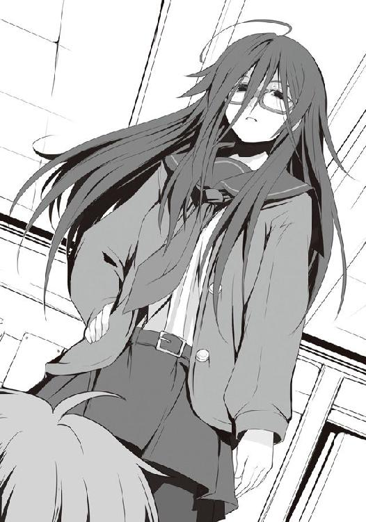
「......そーか。そうだよね。さすがに、もう白粉は、わかっているよね。......うん、そろそろだと思っていたし......正体明かしちゃおうかな」
白粉は何と返答していいかわからず、ひたすらに烏頭の目を見つめた。
「君は......全部見ていたもんね。最初に私が佐藤の足を打った時から、ずっと。感づいていたのに、どうして佐藤には警告しなかったんだろ？ 白粉は優しい。そういうところ、少し仙に似てて......ムカツクなぁ。ねぇ、知ってる？ 人ってペットショップで犬を買う時、特に理由がなければ自分に似たの、選ぶ傾向があるんだって。だからよく言う〝犬は飼い主に似る〟っていうのは、当然。......きっと仙も、そうだったんだ。......だから私も、こんなに白粉たちが好きになれないんだ」
「や、槍水先輩と烏頭さんは......」
「アイツが入ってきた時は仲良かった、けど、最後は犬猿の仲。最初は私が仙を、でも、後々は仙の方が私を恨んでる。......仙は被害妄想が激しいから」
白粉には烏頭が何を言っているのかわからなかった。しかしようやく今、烏頭は本性を見せ始めたことだけは理解できた。彼女は冷たく、囁くように、言葉を続ける。
「ＨＰ部を崩壊させた原因、私にあるって言いだしちゃうし。多分仙のことだから白粉たちに教えてないと思うけど......楽しかった私たちのＨＰ部を壊したのは......仙なんだよ」
○
僕は、扉の向こうから聞こえてきた声に、ドアノブを掴んだまま固まってしまった。
烏頭の声は相変わらず小さいが、不思議とドア一枚を隔てていても聞き取れる。逆に白粉の声はもごもごとこもったような声になり、聞き取りづらい。しかし恐らくまともな言葉を為していないのは、わかった。彼女も僕と同じく、烏頭が何を言っているのか、理解できていないのだ。けれど、何か知ってはいけないこと......槍水先輩が今まで口を閉ざしていたＨＰ同好会の過去について聞かされているのは、はっきりとわかった。
『本当は、白粉たちのことなんてどうでも良かった。私がスーパーに戻ってきたって噂が流れれば、それで。......でもね？ 佐藤から仙の話とか聞いていると、少しムカついた。......仙ってば、平然と先輩面しているみたいだし、何だか嫌がらせしたくなっちゃった。だから白粉たちが狙った弁当を私が......ん？ 佐藤、扉の前にいるの？ ......わかるんだ、私、そういうの。入っておいでよ......一緒に、お話ししよう』
僕は言われるがまま、ドアを開け、扉のすぐ横の壁に押し付けられるようにしていた白粉と、それを見下ろす烏頭の顔を見る。......彼女は微笑んでいた。それはまるで得意げに手品の種明かしをするような、優越感を湛えた笑顔で、だ。
「どういう......ことですか？ 今の冗談......」
「聞いての通り。いつ気づくかなぁって、思ってた。けど、結局白粉は黙ったまま、佐藤も鈍い。まさかこんなに引っ張れるとは、思わなかった。もう、飽きたよ。......おかしくない？佐藤が狙った弁当に限って私が奪取しているなんて、そんな偶然がある？ よく思い出して、ほら、佐藤が獲れそうな時に限って、強烈なのが一発入ってなかった？」
そう言われれば、確かに、初めて彼女とスーパーに言った時......ジョニーを打ち倒し、半額弁当に手を伸ばした瞬間。ウルフヘアが僕に覆い被さっていた時、視界を遮られながらもなんとか手を伸ばした瞬間。そして、そして......。
僕が察したと見るや、烏頭は満足げにニッコリと笑う。
「......部員同士の争いは禁止されているはず、です」
「卒業生。何より、三年の時に退部してる。......だから、いいんだよ？ 仙みたいに敵意剥き出しにして、バカみたいに泣きながら私に殴りかかってきても......」
相変わらず楽しそうに、しかし冷たい囁き声で、烏頭は言った。
「今晩から本番。私もこっそり攻撃しない。堂々と佐藤をぶちのめす。仙が見つけ、優君が見込んだ佐藤の腕前......この一週間で察しはついたけど、どこまでがんばるか、見てあげるね」
僕と烏頭は睨み合う......いや、睨んでいるのは僕だけだ。口元に笑みこそ浮かべていても、先ほどと違って烏頭は感情の籠らない瞳で僕をただ淡々と見ているだけ。
あの、あたしはこれで......。そう言って白粉は逃げるように帰っていった。
しばしの後、僕は鞄を棚に放り投げ、窓際の席に着く。すでに話すべきことはなかったが、烏頭は出ていくこともなく、平然と僕の近くに来ると椅子ではなく円卓の上に腰掛けた。後ろに手をつき、こちらに見せつけるように足を組む。上になった彼女の右足。その太ももと呼ぶにはいささか細い部位を、絶妙に短いスカートの丈がスルリと滑り、黒いストッキングに包まれた足のほとんどが露になって、切り替えしが顔を出す。
意識すまいとしても自然と目がいくが、彼女の視線を感じて、慌てて逸らした。
一瞬視界に入った烏頭は口元だけで笑っていた。完全におちょくられている。
今までなら嬉し恥ずかしで弄ばれること自体も楽しめたかもしれない。だが今の状況ではバカにされているとしか思えなかった。......いや、そうなのだ。だから、あえて急にこんな......。
「まだ、僕たちとこの部室に......用があるんですか」
「ない。でも......嫌でしょ、私がいると。だから、いるの」
僕は烏頭の顔を見る。彼女は先ほどまでの表情を完全に消し、無表情に僕を見ていた。
「......あなたの目的は何ですか。一週間もかけて、僕たちをおちょくるのが目的だと？」
「まさか。さすがにそこまで暇じゃない。私の目的は初めから、別。でも秘密。......佐藤たちが少しムカついたせいでもあるけど......君たちが嫌な思いをすれば、後でそれを知った仙も、きっと嫌な思いをするだろうな、って、そう思ったから」
僕は思わず烏頭の無感情な瞳を睨んだ。
「そうそう、そういう目。仙はよくするよね。......本当、私の嫌いなところばかり似てて......それで......彼に......。ムカつく」
烏頭はわざとらしく足を組み直す。また自然と目がいきそうになるが、僕はそれを意識して堪える。しかしそれはそれで、烏頭を楽しませてしまったようだ。目は無感情のままに、口の端だけがつり上がる。完全に手玉に取られている、そんな気がした。
実際視線が動きそうになったのは事実である以上、何も言えない。彼女も、何も言わない。
沈黙が酷く重い。
劣等感と情けなさが僕の胸に渦巻き、自然とそれは悔しさへと変わっていく。少しでも彼女に抵抗するように、僕は口を開いた。
「鍵を......。鍵を返してください。部をやめてたのなら、必要ないはずです」
「やだ。明日も来るから。入れてくれないでしょ？ なら、鍵が必要。仙が笑ってるところ入っていったら、きっと......面白いだろうし」
「......ふざけないでください」
「そうだなぁ。......それじゃ、こうしよ。私に勝てたら、返してあげる」
チャリン、と鈴のついたその鍵を胸元から取り出すと、彼女は挑発するように僕の顔の前で揺らした。今、素早く手を伸ばせば奪取出来る。しかしそれで獲ったところで、本当に取り返したことになるのか。いや......それよりも、こういう状況で彼女は僕が獲らないとすでにわかっているのだ。だからわざと獲れる位置で挑発している。直感的に僕はそう思った。今までの約一週間で、完全に僕の心は読まれている、そんな気がした。
僕は余計なことに気を取られないために、腕を組み、瞼を閉じ......アブラ神の半値印証時刻をひたすら待つことに決めた。烏頭も特に何も言わなかったが、時折思い出したように足先で僕を突いたり、彼女の長い髪が僕の顔を撫でる。当然、全て無視を決め込む。
「ふーん、そっか。相手してくれない、か。それじゃ......。それは六十年ほど前の話......時は第二次世界大戦まっただ中の某国、もはや装備も食べ物も尽きた兵士たち。そんな時、ある男が体調を崩して寝込んでしまうのだけれど......」
......烏頭がまた、嫌な話を始めた。
結局そのまま、僕は烏頭のホラーな話を強制的に二時間近く聞かされてしまい、アブラ神の店に向かう頃には心身共にヘロヘロだった。精神的な疲労はまだしも、食欲が失せるようなグロ系の話はさすがに......キツい。
日常と戦場を分かつ自動ドアを抜けてもなお、僕の胃はどこか重い。さっきまでの話と、僕の一歩後ろをついてくる烏頭の存在を意識の外に押しやるようにしながら、僕は青果コーナーで心を洗う。
スーパーの中でも一際爽やかなエリアだ。緑の野菜が並び、果物の甘酸っぱい香りが全てを清めてくれる。僕は巻きのしっかりした偏平形の寒玉キャベツを見つめ、時折その値札の横にあった『加熱に強く、甘みを増した寒い季節のキャベツは最高です』と手書きされたポップを読み、そして幾度も呼吸を繰り返し、体内にあった重苦しいものを吐き出していく。
......気持ちが軽くなり、腹の虫が本調子とまではいかなくても、なんとか戦えるだろう。
多くのスーパーが入店してすぐに青果コーナーを設置しているのは、ひょっとしてこういう浄化効果を狙っているのだろうか。確かに入店してすぐに精肉コーナーや鮮魚コーナーがあったら......少し嫌だし。
僕は不揃いな形のためお値打ち価格とされているトマトの袋詰めを横目に、止めていた足を再び動かす。行く先は当然、総菜・弁当コーナー。烏頭もまた、僕にピッタリとくっついてくるが、もはや気にはしなかった。今、僕の意識を占めるのは弁当陳列棚のことだけ。今宵は三つ。『醤油で味付けした炒め豚バラを後載せ！ 大盛りスタミナカレー弁当!!』『温泉玉子までついた鍋とご飯の豪華二段構成！ さぁ、顔を上げろ、上を向いて歩こうじゃないか！ スキヤキ丼弁当』『和風ロールキャベツ弁当Ｍk.Ⅷ』である。醤油で味付けして炒めた豚バラを後載せにしたカレーはボリュームたっぷりで、豚バラだけでご飯がいけそうなのに、そこにカレーがあるという充実っぷりがいい。そして二段構成のスキヤキ弁当、電子レンジでチンすればまさに弁当でありながら鍋を食べている気分になるのは間違いない。個人的にこのスキヤキの中にシラタキや豆腐以外にも舞茸やブナシメジなど、低カロリーながら栄養満点の茸がふんだんに使われているところに好感を持つ。そしてついに八作目まで到達した和風ロールキャベツ弁当は......もはや言わずもがな。見た目としては以前までと何が違うのか、よくわからないが、きっとアブラ神のことだから、何か工夫があるに違いなかった。
......うーん、どうしたもんだろう。なにぶん昼食が少なかったから、できればガッツリいきたいところ。だが、いかんせん烏頭のせいであんまり肉を全面に押し出した系統のはちょっとキツイ感じもするし......。となると、すでに四回ぐらい目撃しているのに、いまだにゲットはおろか味見すら出来ていないロールキャベツか。スキヤキもいいけど......いや、ロールキャベツだ。ロールキャベツでいこう！ こいつにむしゃぶりついて、今までの知ったかだったロールキャベツの恥ずかしい記憶を塗り替えてやるのだ!!
「その顔じゃロールキャベツかな。......獲れるかなぁ。獲れないと思うなぁ。......だって、私が獲っちゃうから」
嘲るような烏頭の言葉を無視し、僕はその場を移動、烏頭と距離を取った。
精肉コーナーでは現在ジンギスカンフェアなるものをしていて、普段はあまり見ない羊肉が陳列棚の一角を埋めており、その辺りだけ店内ＢＧＭとは別にあの『とにかくジンギスカンが喰いたい』と連呼する歌が流されており、気合いを感じさせた。ひょっとしたら今日、ジンギスカン弁当とかもあったのかもしれない。一度食べてみたいと思ったものの、どのみち今日出されても狙わなかったはずだ、と自分で思い至り、苦笑した。
どこか適当に知り合いでもいないかと思って捜すが、どうやら二年生だったらしい顎髭と坊主もおらず、受験で忙しいとか言っていた茶髪も今日はいない。しかしその代わり、おまけ程度に陳列されている生活雑貨コーナーにて、あのウルフヘアの姿を見つけた。
僕は彼女の隣に並んで、八八円のたわしを見つめる。
「昼はありがとう。本当に、君の言った通りだった。僕は......敵といたみたいだ」
僕は自然と顔を歪めたのかもしれない。こちらの状況がわからないせいか、横目でこちらを窺っていたウルフヘアは少し不思議そうな顔をする。
「変だなって思ってただけだから、お礼は、いい。それより最近知ったけど佐藤君って、有名なんだね......なんて、あたし自体、最近この世界に入ってきたんだけどね」
「そういえば、前はいなかったよね。最近って......半年も経って？」
「うん。寮でしばらくは自炊頑張ってたんだけど、段々部活とかで忙しくなっちゃって」
それで安く、早く済ませられる食事はないか、と模索した結果が半額弁当争奪戦だったのだと、彼女は話してくれる。そして恥ずかしそうに苦笑しながら、最初の頃のボコボコにされていた時の話をしてくれた。
「酷かったよ、最初はね。普通といえば普通らしいけど、春と違って一年生も経験を積んじゃってるから、なかなか......。何度か、スタッフルームに運ばれたことも......。知ってるかな、ビッグ・マムって呼ばれている半額神のお店。あそこで働いている柚子さんに、諦めずに立ち向かい続ければ必ず報われるよ、っていつも励ましてもらってたんだ」
「柚子って、山木柚子？ 何だ、あの人、結局ビッグマムのところで働いているんだ。......うん、知り合いだよ。以前ちょっとね。僕もまた今度行ってみようかな」
ウルフヘアから柚子のことを聞いて、僕は素直に嬉しくなった。《ガリー・トロット》と呼ばれ、幾度となく僕を薙ぎ払い、かつては槍水先輩すらも退けたビッグ・マムの店専門の凄腕。そしてとんでもない趣味の持ち主だったっけ。......結局、僕は一度も勝てずじまいか。でも槍水先輩がぶちのめしたのを目撃したせいか、それとも単に彼女に好感を持っていたせいか、特に悔しくはないのが不思議だった。
「今週一杯まで厨房が改装中で、しばらくは簡単な総菜しか出ないって。それで、こっちに」
「そっか。......あれ、待てよ、柚子がいたってことは、君が争奪戦に参加したのって、本当にここ一カ月ぐらいなんだ？ それなのにもう僕なんかのことを......？」
いくらウルフヘアの活動している地域に近く、以前まで足繁く通っていた店とはいえ、僕なんかがド新人の耳に入る......即ちそれは僕もかなり認められてきたってことではないのか。
確かに今まで槍水先輩の下で名うてとされる狼たちと拳を交えてきたのだ。ある意味では当然だが、やはりそれを思いがけないところから聞かされるのは何とも言えない嬉しさが――。
「うん。柚子さんも一目置いていたし、ビッグ・マムさえ佐藤君のこと、言ってたよ。佐藤君は本当に凄い......変態だって」
......僕の全身に嫌な汗がジワリと浮かんだ。思わず僕はウルフヘアの顔を覗き込む。
「最悪のペド野郎で、幼い女の子を見つければ何をしでかすかわからない、とりあえず、無い胸を揉みしごくとか......でも、半値印証時刻なら普通の狼だって......聞いたけど」
......じゃ、アレか、ひょっとして昼間おどおどしていたのは嬉し恥ずかしとかそういうのじゃなくて、単に僕に怯えていたとか、そういうアレか？
「日常の趣味が二つ名になるぐらいだから、そうとう凄いんだね。......とりあえず、スーパーではよろしくね」
え、なに、その〝スーパーでは〟って。スーパー以外では一切の接触お断り？
いかん！ 着実にあんな二つ名とも言えない名前が実害を伴いながら広がっている!?
僕は説得を始めるが、彼女は爽やかな笑顔を見せつつも、
「大丈夫。同じ狼同士、そういうので差別したりしないから。......スーパーでは」
と、絶対にプライベートでは接触したくない旨を暗に伝えてくる始末だった。
「......ふーん、知り合いだったんだ。楽しそう。私も、交ぜて欲しいなぁ......」
ウルフヘア、そして僕の顔が強ばる。店内ＢＧＭを無視して耳に滑り込んでくるような小さな囁き声。烏頭。彼女が、僕の隣に並ぶ。彼女を警戒していたらしい他の狼の視線が僕たちにも向けられ、否が応にも肌にピリピリとしたものを感じる。
烏頭はウルフヘアに僕の先輩だと名乗り、彼女の狙いを尋ねた。
「ロールキャベツ。......あれ、ここ最近ずっと狙っているんですけど、なかなか獲れなくて。いつもあの胸の大きな三年生が持っていっちゃうんで。あ、そうだ、あたしの名前は――」
「いいよ。君の名前なんて、興味がない。せめて二つ名を持ってからにして」
ウルフヘアが虚を突かれた顔をした後、悔しそうに俯き、口を閉じた。
そういえば以前、沢桔梗が槍水先輩に自己紹介した時に、似たようなことを言われていたけど......ただ、烏頭の場合は名前がどうこうではなく、ウルフヘア自身を見下しているような、そんな声に思えて仕方なかった。
「ねぇ佐藤。鍵のことで、一つ条件を出していい？ 今日はもうジジ様の店には行かない。ここで夕食を決める。......その方が本気を出せるんじゃない？ それとも後で本気じゃなかった、とか、言っちゃう？」
明らかな挑発だったけど、その挑発をはね除ける理由はない。僕は乗った。
「その代わり、僕がロールキャベツを獲ったら......鍵はいただきます」
烏頭が無感情な瞳で、口元だけ吊り上げるようにして微笑んだ。どこか人形や、幽霊を連想させる笑い方だった。
数分後、店内にアブラ神が現れ、半額シールを舞わせた。彼がスタッフルームに戻っていく足音を聞きながら、僕は今一度今宵の狙いであるロールキャベツを意識する。Ｍk.Ⅷともなれば茶髪が幾度も奪っていった旧バージョンや、以前烏頭が獲ったものよりもさらにうまいはずだ。言うなれば一発逆転ホームランみたいなもの......若干違う気がするがとにかくうまいに違いない。何よりウルフヘアの言葉からするとあの後茶髪は僕らがいない時にもあのロールキャベツ弁当を奪取している......つまりリピーターとなるぐらいうまかったということなのだ。
僕は己の腹の虫に語りかけ、期待に胸を躍らせる。そしてちらりと横の烏頭を見る。
何となく言ってしまった鍵のことが思いのほか意味を持ってしまったが、今は鍵も烏頭も意識の外に出来るだけ追いやろう。
様々な雑念は空腹を低下させる。柚子と戦った時、彼女のブラで包まれていない胸に顔面を突っ込んでしまって、酷い目にあったのは忘れていない。......そして、その後なんやかんやで槍水先輩の妹の茉莉花の無い胸を......いや、ダメだ、余計なことは考えるな。......今は、忘れろ。僕の頭を占めるのは、勝つことだけ。今宵の半額弁当を奪取することだけでいいのだ。
ドフっと、アブラ神がスタッフルームに戻る音が聞こえる。そしてその扉が閉まりいく、音。僕はかすかに膝を曲げる。――ボフン。扉の閉まる、音。それに続く――いや、ほぼ音が重なる速度で狼たちの踏切音が鳴り響く。
僕は弁当コーナーに近かったウルフヘアに第一歩で追いつき、次で完全に追い抜く。その僕を、さらに烏頭が三歩目で追い抜いていく。ウルフヘアの驚いた様子がかすかに見えた。
どこの店でも大抵生活雑貨コーナーは総菜・弁当コーナーから比較的遠いが、この店も例外ではない。いくら僕と烏頭が速くとも、先に三匹の狼が陳列棚前に足を踏み入れ、即座に小規模な乱戦が展開。一匹が二匹から攻撃を受けていた。そこに走り込んだ烏頭は、一匹の脇を抜け、まるで乱戦を横切るような素振りを見せるも、一発、ドンと床に靴を叩きつけて急ブレーキ。体を捻り、回し蹴りを近くの狼の延髄にぶち込む。狼が僕の目前で薙ぎ払われる。回し蹴りの慣性でさらに身を捻り、烏頭はそのまま裏拳をもう一匹にかろうじて当てる。それでも予想外の攻撃にその一匹は体勢を崩し、戦っていたもう一匹とぶつかり、転倒した。
「佐藤、おいで。叩き潰して......あげる」
弁当陳列コーナー前にいるのは僕ら二人。陳列棚にある弁当は三つ。他の狼が到着するまでもう一、二瞬は必要。......弁当を狙えば、獲れる。ただしロールキャベツ以外ならば、だ。
僕は躊躇うことなく烏頭に右の拳を当てに行く。烏頭は後ろにステップを踏むようにして下がりつつ、僕の攻撃を平手で下へ押すようにいなす。続けて放った左も、同様だ。
僕は距離を詰め、体を押し込むようにして肘打ち。さすがに烏頭もこれはいなせず、後ろへ飛んでかわした。その時になってようやくウルフヘア、そして残りの狼が到着。僕たちを包み込むようにして再度、乱戦となる。先ほど烏頭が転倒させた連中も踏みつけられることを恐れて慌てて立ち上がる。
烏頭との間に他の狼に入られてしまい、彼女とは一旦離れ、目の前の障害を叩くのに専念する。しかし、意識や視線はお互いに向け合っていた。
......必ず、仕掛けてくる。その予感はすでに確信に近かった。
僕は一匹の狼を、他の連中を巻き込むように掌底で押し飛ばし、弁当陳列棚前、最前線にわずかなエアポケットを作る。そこに飛び込んできたのは烏頭ではなく、ウルフヘア。彼女は睨みつけるような目で、僕に迫る。
雄叫びと共に放たれる彼女の蹴り。僕は身を低くしつつ首を捻ってかわし、こめかみを靴が掠めるのを感じながら彼女の軸足に足払い。彼女は蹴りの勢いに体を引っ張られ、俯せに倒れそうになって両手を床にのばす。だが、それが着くより先に彼女の横腹へねじ込むように僕は蹴りを放った。足先に柔らかい肉を抉る感覚。ウルフヘアが狼たちの足の下へと消える。
これまで戦ってきてわかったが、この娘は柚子から受け継いだのか知らないが、血気と粘り強さはかなりのものだ。早めに叩いておきたかったが、恐らくこれでもまだ、立ち上がってくるに違いなかった。
すぐさま僕は陳列棚に手を伸ばす。その先にあるのはもちろんロールキャベツ弁当Ｍk.Ⅷ。......そこで、来た。背後から迫る、寒気を覚えるような烏頭の気配。視線を向ければ、彼女は狼たちの頭上を床と水平に飛ぶようにして、真っ直ぐに僕へと向かってくる。
僕は彼女の相手をするより、弁当の奪取に懸けた。
指先に弁当容器の感触。その表面を撫でるように手を這わし、指先を弁当の下へ――。
僕の肩が、固い何かにグッと押される。烏頭の靴。蹴りでは間に合わないという判断なのか、限界まで伸ばした彼女の足先が当たり、飛翔していた慣性で僕を押したのだ。
僕もまた腕を限界まで伸ばしていたため、肘は真っ直ぐ。それ故に素早く肘を曲げて彼女の圧に対応することができず、足先で押し込まれた分だけ手もまた前進。指先に力を入れればそれでもかろうじて奪取出来そうな気配はあったものの、貴重な半額弁当、しかも恐らくはゼラチン等で対策はしてあるにしても汁物系だ。強い衝撃を与えれば狼としてもただの消費者としても最悪の事態に陥る恐怖が脳裏を過り、やむなく指から力を抜く。
......やはり、烏頭を倒してからじゃないと、無理か。
僕は手に残る弁当の感触を握りしめながら、陳列棚を背にして構えた。僕の目の前に着地していた烏頭と間近で視線を交わす。
その時、他の狼......いや、乱戦自体が急激に前、即ち僕と弁当に押し寄せてくる。見やれば乱戦後方で巨漢がタックルをかまし、それで乱戦自体を押し揺らしやがった。
烏頭が津波のようなそれに身を任せ、前動作のない急接近、僕の腹部に左の拳をねじ込んだ。不意をつかれた一撃に僕の体が硬直したが、烏頭は即座に僕に抱きつくように肩越しに腕を伸ばす。第二撃かと焦ったが......違う。弁当を狙っている!?
攻撃と同時奪取。槍水先輩は掌底を用いたが、烏頭は――マズイ、獲られる!!
慌てて彼女を押し返すように踏ん張るが、最後方の巨漢が生み出した乱戦を包む波を味方につけた烏頭は酷く重い。このままでは、飲み込まれる。
烏頭の長い髪が僕を包み込み、あの囁きが耳に滑り込んできた。
「弱い、佐藤。やっぱり仙の下じゃそれぐらいが――」
「まっ、まだだ!!」
僕は声を上げる。踵を陳列棚の下方に密着させ、それで足を踏んばる。烏頭が狼たちの波を背負うのなら、こっちは弁当コーナーを背負うまでだ！
僕はありったけの力で烏頭を、乱戦全体を押す。無理なのか、そう思った時、烏頭の背後にいた狼たちが前後からの圧に耐えかねて、左右に割れる。その隙間に烏頭の体を僕は押し返す。
烏頭が尻餅をついたが、その手に弁当は、ない。まだ、勝負は終わっていない。
集団がばらけたことで後ろにいた巨漢が真っ直ぐに僕、そして弁当コーナーにタックルの体勢のまま突っ込んでくる。烏頭がヘッドスプリングの要領で立ち上がると同時に身を捻って横に避け、僕は巨漢に立ち向かった。接触する直前にジャンプ。迫り来る彼の右肩に僕は左足を掛け、体を持ち上げると共に、右足の爪先で巨漢の顎先を蹴り上げる。そして、僕はその蹴りの勢いを残したまま回転しながら宙に飛んだ。天井に足を着け、下方を見る。巨漢が数匹の狼を巻き添えに転倒し、烏頭が他の狼を薙ぎ払いながらこちらを窺っている。他に残っている狼はフリーでいる一匹と離れた場所から再度弁当コーナーへ走り込むウルフヘア。
烏頭は僕を無感情な目で見上げながら、口の端を吊り上げた。おいで。囁くような彼女の声。
烏頭は近くの狼に素早く二撃を放ち、そいつの体を走り込んでいたウルフヘアにぶち当てる。二人がよろめいた時、烏頭が僕を見ながら彼女らの上に乗るように、ジャンプ。こちらと真っ向からぶつかる気だと知れた。
ここが勝負だと直感する。この一撃で決められるかどうか。それでこの場の勝敗が決まる。
僕は空腹を意識する。強い腹の虫の加護を感じ、別れ際に槍水先輩と打ち合わせた手を固く握った。部室と、あと、私の縄張りを、よろしく頼むぞ。言葉と共に彼女のあの時の微笑みが目の前に浮かぶ。
僕は雄叫びを上げ、天井を蹴る。重力を味方に僕は烏頭へ真っ直ぐに飛翔する。烏頭もまた狼の肩を蹴る。だが、その方向は僕ではなく、すぐ隣のウルフヘア。
その瞬間、僕は誘われたのだとわかった。
ウルフヘアの頭を蹴りつけ、わずかばかり位置をずらして烏頭は僕を狙って飛翔する。ワンクッション挟んだため、烏頭の方が出遅れ、逆に僕の方はその間の重力加速度分だけ速度――エネルギーを増していた。直上から降る矢がごとくの僕に、斜めに喰らいついてくる烏頭。僕は身を捻り、攻撃の的を烏頭に調整。烏頭が、迫る。僕は拳を振るう。顔面。外れる。しかし彼女の左肩を捉えた。その一点にありったけのエネルギーを叩き込む。
烏頭が短い呻きを上げ、顔を苦痛に歪めた。だが、唇だけは、吊り上がったまま。それを認めた瞬間、ゾクリと、嫌な冷たい感覚が背中を走る。
加速していたエネルギーを全て烏頭に叩き込んだ僕は一瞬空中に停止。烏頭は肩に攻撃を喰らったことで、そこを支点に体が反転。二人の落下が始まる直前、烏頭は右腕で何かを払うかのように大きく振る。平手。それが、僕の左太ももを引っぱたいた。パァン、と銃声のような音が鳴り響き、それが合図だったかのように、空中で静止していた僕らは重力に引かれて床に叩きつけられる。
死屍累々のフィールドを僕たちは転がり、お互いに距離を取った。何を喰らったのか、頭がはっきりしないままに僕は床に手をつき、そして膝をつき、そして上半身を上げた......と同時に転倒した。左足の感覚が完全に消えていた。動きはする。しかし、力が一切入らない。何も感じない。僕は慌てて太ももに拳を当てた。動け、と。すると今度は凄まじい熱さと痺れが左足を包み込み、僕は呻いた。
感覚がなくなったわけじゃない、衝撃が強すぎて認識出来なかったのだ。まるで足の神経を握り締められていると錯覚しそうな、苦痛。以前喰らった時は何もせずにいたら後を引くような痺れを感じただけだったのに、これは......なんだ。
「気迫は合格。でも、それだけ」
烏頭が左肩を押さえながら、半値印証時刻とは思えないゆっくりとした歩みで僕に近づいてくる。乱れた髪で顔の半分近くを隠しながらも、長い前髪の隙間から眼鏡越しに僕を見下ろす。無感情に。それが、逆に恐ろしさを増していた。
烏頭が呻き続ける僕の頭上をわざとまたいで、弁当陳列棚へと向かっていく。
途中、彼女はポケットから鍵を取り出すと、わざとらしく鈴を鳴らした。
「鍵は返せない。そして、あの和風ロールキャベツは私の夕餉」
僕は何とか立とうとするが僕の意志では動かない左足は重く、何より皮を剥かれたようにちょっとした刺激でも激痛が走って僕の動きを止めさせた。
その痛みのせいなのか、涙が、僕の視界を濁す。その中でウルフヘアがよろよろと立ち上がり、そして巨漢もまた、足を震えさせながら何とか立とうとしている。その二人の間を鈴を鳴らしながら烏頭が、行く。
僕は這った。痛みを堪え、泣き叫びそうになりながら烏頭に追いすがった。
アブラ神のあの逞しい筋肉で磨き上げられた床は、残酷なまでによく滑る。爪を立てられるほどの隙間もない。
呻きを伴った己の荒い息、軽やかな店内ＢＧＭ、とにかくジンギスカンが喰いたいと熱唱する精肉コーナーのＢＧＭ、そして烏頭が鳴らす鈴の音が僕の耳を埋める。負ける、負けてしまう。このままでは。負けたくない。負けられない。そして僕は、僕は食べたいんだ、昼も栄養バランス重視のカロリーメイトと野菜ジュースだけだった。食べたい、どうしても......!!
普段なら一瞬で終わる敗北の瞬間が、長い。烏頭がゆっくり歩き、それを止める者は誰もいない。急げばどうにかなるんじゃないか。その希望が、焦りを呼び、そして再び生まれた絶望の引き立て役となる。僕は必死になって床を掻く。
「はい、終わり」
烏頭は半額弁当を、まるで陳列してある普通の商品のように右手で獲った。その瞬間、もがいていた僕の腕が、止まる。床を叩いた。
――負けた。だが、まだ弁当は残っている。悔しがるのはそれからだ。僕は再び這い始める。ウルフヘアと巨漢が立ち上がる。そして、弁当を持った烏頭が僕の行く手を塞ぐように、立ち止まっていた。彼女は嬉しそうだった。
屈辱。しかしそれを空腹で抑え込み、僕は彼女の足の脇を再び這う。だが、間に合わない。
巨漢はカレー弁当を手にし、そしてウルフヘアが申し訳なさそうな顔で僕を見ながら、スキヤキ弁当を奪取する。
その瞬間僕は勝負にも争奪戦にも負けた。槍水先輩に任せられた、彼女の縄張りで。完全に。
「そろそろ私の〝毒〟も薄れるはず。佐藤は夕餉......どうする？」
「......聞いて、どうする」
「夕餉の相手のメニュー、気になるのは普通......だと、思うけど？」
いただきます。僕は漏らすように、烏頭は囁くように、言った。
隣に座る烏頭が弁当容器の蓋を開けると、ロールキャベツは部室の大きな窓から差し込む月明かりに照らされ、まるで黄金色の光を放っているようでさえあった。
僕は、出来るだけそちらを見ないようにして、自分の夕餉に集中する。今日は総菜にあった尋常ではない大盛りのフライドポテト＆チキンナゲットという、胃もたれ確実の揚げ物セットだけだった。いつものどん兵衛は今日は、やめた。さっさと食べて、早く帰りたかった。......何よりどうせ烏頭と二人じゃ、何を食べてもおいしいはずがないと思ったからだ。
隣で烏頭が何か言っていたが僕は全て無視。漂ってくる出汁の香りだけはどうしても気になるけれど、そういう時は付属のケチャップをたっぷりとぶっかけたチキンナゲットを口に押し込み、麦茶で胃に流し込む。
嫌な、食事だった。烏頭は楽しそうだが、僕が吸う空気はとにかく重い。胃も重い。......まぁ、こっちは油物のせいだけど。
食事といえる食事じゃない。摂取する、押し込む、そんな表現しか出来ない行為だ。かつて《ダンドーと猟犬群》と呼ばれた剣道部の面々と食事をした時でさえ、まだ味わい自体はあったのに、今ではまるで砂を噛んでいるようだ。
早く食べ終わろうと思って選んだものなのに、思いのほか時間がかかってしまい、結局ごちそうさまでした、と口にしたのは烏頭とほとんど同じタイミングだった。
「佐藤、無視しないでよ。せっかくの夕餉。お喋りもメニューの一つ。......しょうがないな」
僕は烏頭に視線を向けず付属のナプキンで口元と指を拭き取る。すると急に辺りが暗くなった。見れば烏頭が、僕の脇に立って月の光を遮っていた。
「それじゃ、話題を変えよう。......変態の......佐藤が興味持ちそうなのに」
無感情の瞳に、どこか禍々しさが漂っている。そんな気がした時、烏頭は僕の肩を引っ張って体を自分に向けさせると......見つめ合うようにして、座った。
椅子に座ったままの、僕の右の膝に跨って。
「......前から気になってたんだ。佐藤の話を聞いた時から、ずっと......」
烏頭は僕の両肩に手を置くと、僕の足を自分の股の間で挟み込む。
「え......ちょっ、ちょっと......！」
薄いとはいえ幾枚かの布が間にあるはずなのに、僕の右足は包み込まれるような柔らかさと温かさを感じる。そして何より膝頭に感じる彼女の下着と下腹部の感触が僕の言葉を失わせた。
僕は状況が理解出来ず、ただ彼女の無感情な瞳を見つめながら息を呑む。
こちらを見下ろす烏頭。彼女の髪がはらりはらりと垂れてきて、僕の顔や肩に貼り付く。
「佐藤って、白粉がいない時は仙と二人っきりで、食事するよね？ ......この遅い時間に、ほとんど人のいない部室棟の、日中でさえまず誰も来ない、五階のこの部屋で。......どうして、仙に何もしないの？ したいと、思わない......？」
烏頭が何を言っているのかわからず、ただ驚いたまま、彼女を見つめ返す。
意識が、足の方にいってしまっているせいなのか、僕の頭はうまく回らない。
烏頭が腰を動かし、さらに密着するようにずらす。それが、余計に僕の頭を混乱させる。
烏頭の顔が近づき、僕の耳に唇が触れそうな位置から、とろけそうな甘い声で囁いた。
「ほら、こんなふうに......」
烏頭が僕の両手をそれぞれ掴むと左手をブレザーの下の胸に、右手を太ももに這わせるようにしてスカートの中、ヒップの方へ誘い込んだ。何が起こっているのかわからず混乱する頭とは別に僕の指先はそれ自体が意識を持っているように彼女の体の感触を確かめるように動いた。
掌に綺麗に収まるほどのサイズの彼女の胸。薄いブラウスと少し硬いブラの感触の向こうのそれは、力を入れることもなく指が沈んでいく。そしてスカートの中の僕の右手はストッキングのサラサラとした手触りと下着の凹凸を指先で感じながらも、その向こうにある彼女の体を求めた。細いと思っていた彼女の体だったのに、そこは豊かで指を押し返してくる張りがあった。......指先から伝わる感触に、頭がパンクしそうだった。
僕の指が烏頭の体に沈む。すると彼女は一度ギュッと僕の右足を強く太ももで挟み、上を見上げるようにして、はぁ、と息を吐きながら声を出した。そして僕の手はそのままに、両肩に自分の手を置くと、前屈みになるように体重を預けてくる。烏頭の首筋に僕の鼻先が触れ、そして彼女の長い髪が僕の顔を覆った。胸に、僕の指がさらに沈む。
「仙なら......きっと、私よりも......いい体してる。......どう？」
「......何が......ですか？」
かろうじて言葉を放った。そして吸い込んだ空気は烏頭の香り。それ以上何も言えなくなる。
「勇気がない？ ......仙って奥手だから自分からは行動出来ないよ。だから、次こういうタイミングがあったら、佐藤の方からいっちゃえばいい。......ううん、襲っちゃえばいい。きっと受け入れてくれる、もし仮に嫌がっても......仙ならどうせ、黙って泣き寝入りするだけ――」
――気がついた時、僕は烏頭の顔を見下ろしていた。自分がどうやったのかわからなかったが、状況を見て、自分が膝の上に跨っていた烏頭の体を円卓の上に叩きつけたのだと知れた。
烏頭が仰向けに円卓の上に倒れ、咳き込み、それに覆い被さるように僕は腕を着いていた。
「ゲホッゴホ......あぁ、いったー。......でも、いいよ。そんな感じで、仙も。スーパーじゃどんなに強くても、それ以外じゃからっきし。......できる、よね？」
「何がしたいんですか、あなたは!?」
僕と烏頭は先ほどと上下逆転して、無言のままに見つめ合う。僕は睨む。烏頭は白い肌を赤くしながらも、目だけは無感情に僕の視線を受け止める。
「仙が嫌いなだけ。私たちのＨＰ部を壊して、私の大切なものを奪おうとした。だから......復讐......かな」
部を壊した云々、大切なもの云々、全てがわからなかった。でも、それでも......!!
「だからこんなわけのわかんないことまでして僕をけしかけるんですか!? ......ふざけるな!!何でそんな陰湿な方法で!?」
僕は烏頭の顔ギリギリの位置で、円卓を叩きつけ、無理やりに烏頭の言葉をねじ伏せる。
その握った掌の中に彼女の体温が残っている気がして、酷く嫌な気分だった。
唖然とする烏頭を無視して僕は床に散らかってしまっていた箸や弁当容器を拾い集める。それらをゴミ箱に押し込み、部室を出ていこうとした。扉を開けた時、後ろから鈴の音。
「......明日も来るよ。その次も次も、ずっと。佐藤がスーパーに行く時はずっと君の狙う物を私が奪う。そしてこの部屋で、君と一緒に楽しく食事......ね？」
こうなったら力ずくで鍵を奪おうと思い、僕は振り返る。
意味合いとしては僕の負けかもしれない。しかし、効果はあるはずだった。
少なくとも槍水先輩がいる時や食事の時にズカズカとは入ってこられなくなる。
「狼なら、スーパーのことはスーパーで。でしょ？ 私に勝てたら......渡してあげる」
円卓に腰かけ、乱れた髪をそのままに、烏頭は笑っていた。僕を嘲るように。
胸と腹の中に不快感を覚えた。......多分、腹の方はポテトの喰い過ぎだ。
「次、来たら......今日の続き......しようね。ぅふふふふふふふふふふふふふふふふふふふふふふふふふふふふふふふふふふふふふふふふふふふふふふふふふふふふふふふふふふふふふふ」
振り返った僕が見たのは両手で口や鼻を、それ以外は髪で顔を隠して笑う烏頭。引きつったようなその笑い声は愉快で愉快でたまらない......そんなふうに聞こえた。
僕は居たたまれなくなって、逃げるように部室から駆け出す。肌にまだ烏頭の髪が貼り付き、彼女の笑い声が追ってくる気がした。そして、掌の感触が......いまだ消えない。
４
金曜日の空は半分だけ青く、半分だけどんよりとした重い雲が覆っていた。昨夜は雨が降っていたが、それの残りの雲だろう。
『彼女』はＨＰ同好会の部室の窓からそんな空を見上げ、ひたすらに時間を潰し続ける。
グラウンドの方からは野球部のカキンという金属バッドがボールを打つ音、吹奏楽部のヘタクソな演奏、外や階下の学生たちのざわめき。
自分が現役の高校生の頃から何も変わっていない。人は入れ替わっても、何も変わらない。
何事も、そういうものなのかもしれない。だから、仙はたった一人になってもＨＰ部に残ったのか。かつて全国に名を轟かせたＨＰ部を再建するために。楽しかったあの頃を取り戻すために。時が流れればいずれは元に戻ると信じて。
そんなことさせない。彼の眼差しの先にいるのは自分だけでいい。
壁に掛けられた時計を見る。とっくに授業は終わっているはずの時間。しかしこの部室を訪なう者は一人としていなかった。
「そしてまた、誰もいなくなった。......さぁ、仙、どうする？」
今日、仙は帰国する。旅行の休み明け、果たして彼女は何を想うのか。それを考えるとの顔に笑みが浮かぶのを止められない。
『彼女』は烏頭みこと。かつて心霊現象調査研究部副部長ながら、同時に歴戦の猛者と呼ばれたＨＰ部が一人。その〝毒〟とされる技倆により、狼さえも死に至らしめる花の名で称えられた恐ろしき女。
人は彼女を――《ウルフズベイン》と呼んだ。
３章 狼
「何だ、みんな僕に惚れているんじゃないのか。」
佐藤 洋
０
日曜の夜、ヘルメットのバイザー越しに見る街はいまだ賑やかだった。八時をとうに回っていたが、大通りということもあり群れた学生や帰宅途中のサラリーマンたちが行き交い続ける。そんな彼らを狙い、花が蝶を誘うように店々は必死に電飾で飾り立て、中にはクリスマスの飾り付けを始めている気の早いところまであった。まだ一一月、あと一カ月もあるというのに。
幼い頃、時間の流れはとてもゆっくりしていた気がする。学校から帰宅し、親から与えられていた特殊な教材をこなした上でもまだ潰しようのない時間があったあの頃の一カ月先は、気が遠くなるほど先の未来だったはずだ。
しかし、今はどうだ。まだ一八。人は若いというが、本当にそうなのか。自分にとって、すでに残された時間は半年を切っている。それを過ぎれば、この街とも......いや、この国、そしてあの世界とも別れなくてはならない。それまでには全てにケリを着けておきたかったが、それはもう無理かもしれない。そんな予感がしていた。
彼はバイクの速度を上げた。賑やか過ぎて目が痛むほどの電飾が尾を引いて視界の端を流れていく。エンジン音で雑踏のざわめきも全てがかき消えた。消音カスタムを施したはずの愛車も今では普通のそれと変わらない。《帝王》を名乗り始めた《パッドフット》と決着をつけた際に破損しており、修理に出しても以前のような落ち着いたエンジン音に戻りはしなかったのだ。うるさいのはあまり好きではないが、仕方がなかった。
目の前で信号が赤に変わる。停止線に前輪を乗せるようにして止まる。横断歩道を行き交う人々を見ていると、後続する車列の脇を抜けてきたボロボロのスーパーカブが並んで止まった。チラリと隣の男がこちらを窺ってくる。端正な顔をした知らない男だった。
だが、その男は驚き、偶然だな、と口にする。
「オレだって、オレ。......ったくしょうがねぇな、ホレ」
そう言ってその男はヘルメットを脱ぐと、いきなりボフンと高圧ガスでも注入された風船のように頭が膨れあがった。アフロヘアだ。そしてその男は胸元から銀面のサングラスをかけて見せた。毛玉だった。彼、金城優もバイザーを押し上げて顔を見せる。
「ようやく会えたな。帰国してから今まで何やってたんだ？」
「幾つかの大学に招かれて、そこでいろいろやっていた。先日、家に戻ってきたところだ」
「じゃようやく落ち着いてきたって感じか。タイミングがいいな。......おまえに面白い話がある。烏頭がスーパーに戻ってきたぞ」
予想外の名前だった。すでに古狼どころか完全に引退をしているものと思っていた。
毛玉は緩衝材のような髪を、折り畳むようにしてヘルメットに再び押し込んでいく。
「先週からだ。烏田高校の制服を着て、佐藤たちと一緒に行動していたらしい。主にアブラ神の店で好き勝手やってたんだと。あとどーも、その前にも肩慣らしに動いていた気配がある」
「......仙は、何をしている」
「アイツは修学旅行中だ。......鬼の居ぬ間にってことかな」
「佐藤たちと一緒だと言ったな。あの二人は？」
「詳しくはわかんねぇ。正面から一度ぶつかって、それからスーパーに出てない。オレが会ったのはその後に、烏頭だけだ。はっきりとは言わなかったが恐らく、やられてるぞ」
ウルフズベイン。特殊な戦法を使う狼にして、金城が部をやめた直接の原因を作った女。
佐藤たちと行動を共にしていたというのなら、二人は恐らくすでに彼女の〝毒〟を受けたに違いない。彼女は通常即効性と遅効性の二種の〝毒〟を使う。即効性の方は佐藤と白粉なら対処出来ないこともないだろうが、遅効性の方は恐らく無理だ。......そして、もしあのタイプの毒まで使用されていたら......その効果は、かなり尾を引き、致命傷になりえる。
もし烏頭が本気なら佐藤と白粉は潰されかねない。槍水でさえ、危なかったのだ。
金城は苦々しい思いで顔を歪め、ハンドルを強く握った。
「それで？ おたくはどうする？」
「変わらないさ。......また、叩き潰すまでだ」
信号はいまだ赤。しかし金城は前輪のブレーキをかけたままアクセルを吹かし、体を倒す。後輪を空転させ、白煙を上げて車体の方向を一八〇度回転させた。
「ただの嫌がらせとは思えねぇ。だが魔女がいないタイミングを狙ったのは間違いない。そしておまえの帰国......もしかしたらアイツの狙いは――」
わかっている。金城はヘルメットの中で呟いた。金城はバイクを発進させ、反対車線に入る。速度を上げる。アブラ神の半値印証時刻は終わっているが、ジジ様の店ならまだ間に合う。運が良ければ烏頭と接触できるはずだ。
「......周りを巻き込むな、烏頭。おまえの狙いは俺と仙じゃないのか」
１
僕は誰かに呼ばれたような気がして、ベッドから起き上がった。
また、烏頭の夢を見ていた。夜の部室で、二人で、椅子の上に座っている......あの時の夢。
すでに四日連続、そのどの目覚めも嫌な気分だった。もちろん、今日も。
彼女の体に這わせた手、そして彼女が跨っていた膝の感触が拭いきれない。そして彼女の髪に覆われた時に吸い込んだ香りがまだ肺の中に残っている気がしてしょうがなかった。
先週の木曜日以来変わったのは夢だけじゃない。部室やスーパーに行く気がしないのだ。部室には恐らくまた烏頭がいる、そしてスーパーにもまた。他の店に行っても、不思議とそこに烏頭がいて僕を嘲笑してくるような、そんな気がした。そしてあの夜の続きを......と誘いかけられた時、それを間違いなく拒否できるという自信が僕にはない。
当然あんな夢のようにエロいシチュエーションは大好きだが、今、烏頭の誘いに乗ってしまえば何かが終わる。完璧に、烏頭に負ける。
そしてもう二度とあの部室で槍水先輩に会えなくなるような......そんな気がした。
「......ん？ っつぅか、何で僕、目が覚めたんだ？」
ポリポリと頭を掻いていると、ベッドの脇に放り投げてあった携帯が光っている。メールの着信音で目が覚めたらしい。見てみれば相手は槍水茉莉花。
文化祭の時にアドレスを交換して以来、彼女とはちょくちょくメールを遣り取りしていた。
特に多いのは彼女が体調を崩して学校を休んだ時などで、要は暇潰しの相手なのだけれどこれがなかなか素敵なのだ。以前などは「センパイを見習って、私もドリームキャスト買ってもらっちゃいました！」とあって、中古を捜してきたらしいＤＣの画像が添付されていたりと、着々とセガ信者としての洗脳が進んでいるのを実感出来て、僕としては嬉しくもあり......今更ながら罪悪感をほんのり覚えたり。いやぁ、きっと同級の小学生たちは最新の携帯ゲーム機とかで遊んでいるわけで、そんな中ＤＣで遊ぶとか、ちょっと茉莉花にはロック過ぎる気がしないでもない。セガ信者は常に周りの多数派に叩かれ、孤立化し、しかしそれ故に研ぎ澄まされていくのが普通なのだけれど、あの子にそんな茨の道を歩ませていいものか。初めはセガをバカにしていた奴にその素晴らしさを伝えて、染め上げることに関しては何の疑問もないのだけれど、茉莉花のように簡単に全てを受け入れられると、ちょっと......ね。
『少し早いですけど、おはようございます！ センパイ、起きてますか？ 何だか目が覚めちゃってメールしちゃいました！』
絵文字の入った可愛らしいメールには画像が添付されており、なんぞや？ と、開いてみれば現れたのは額に冷えピタを貼って寝ている槍水先輩だ。彼女は布団を被り、枕を千切れんばかりに胸に抱きしめていたが、対照的に表情は見とれるほど穏やかな寝顔だ。
旅の疲れが出てしまい、実家に帰宅してすぐに寝込んでしまったと、烏頭の一件の翌日に先輩本人からのメールで聞いていたけれど、顔色を見る限りではもう大丈夫そうだ。
久々に見た気がする彼女の顔。わずかな間、彼女を見なかっただけなのに、何だか心がざわついた。懐かしさと......そして無防備な先輩に対する......その、何だ。可愛らしく言えばイタズラ心というか好奇心というか......。
僕は茉莉花に『もっとアップで撮るんだ！』と、指令を下す。即座に返ってくる『ラジャー！』の一文。好感を持てる素直さだ。
きっとあの茉莉花のこと。きっと悪意なく先輩のムフフ写真を撮ってくれるに違いなかった。
僕はベッド脇の壁に貼り付けてある先輩の写った二枚の写真を見る。一枚は夏の合宿先でみんなで撮ったもの、そしてもう一枚はこの間の文化祭の時に茉莉花や白梅を交ぜたメンツで撮ったもの。どちらも僕のお気に入りの写真だ。......だが、男の子はエロいのも欲しいのだ。
......特に今は、烏頭の残像を全て打ち消すぐらいの......過激なのが......はぁはぁ。
果たして届く茉莉花からのメール。『いかがですか、センパイ!?』という文面と共にあったのは、先輩のおでこの冷えピタのドアップである。......なんでやねん。即座に『もっと下だ、下を写すのだ！』と送れば、次に送られてきたのは、先輩の足の裏の写真だった。
いや、下とは言ったけどさ......。僕も自分がちょい足フェチ寄りだと高校に入ってから多少実感するようにはなった――というか槍水先輩によって開花させられた気がする――けど、さすがにこの足の裏の画像だけで興奮出来るほどの神々の領域には達していない。
......なんだ、僕の方が茉莉花におちょくられているんだろうか？
『それじゃ私、もう一眠りしますね。それじゃまた〜。あっ、あとお姉ちゃんが佐藤さんたちに夜、電話するようなことを言っていたんで、そっちもよろしくです』
足の裏の写真と共にあったメールの文面に、僕は思わず息が止まった。
先輩が留守の間任された彼女の縄張りでは一勝も出来ず、烏頭から逃げ、そしてスーパーから遠ざかりつつある今......先輩と何を電話で話すというのだろう。先輩の土産話ならいくらでも聞きたい。一晩中でもいい。でも、絶対にそれだけでは終わらないはずだ。必ず訊かれる。私のいない間どうだった、と。その時、僕は何を言う？ ......何が、言える？
先輩の性格を思えばヘタな嘘よりも真実を伝えた方がいいのかもしれない。けれど、烏頭は以前言っていた。僕たちが嫌な思いをすれば、それを知った槍水先輩も嫌な思いをする、と。
右膝をペシッと引っぱたき、僕は洗面所に向かい、何度も冷たい水で顔を洗った。
鏡の中の自分としばし見つめ合う。憔悴している。......まるで病人か、毒でも盛られたみたいだ。精神的なこともあるだろうが、主に食事のせいだろう。
烏頭から逃げた夜の夕餉からしてポテトとナゲット、その後も夜はジャンクフードでお腹を満たしており、さすがに栄養バランスが悪すぎる。若さだけではカバー仕切れない。
寮母さんが朝食を作り終えるのを待って、僕は早めに朝食をとり、いつもよりもずっと早くに寮を出た。部屋に一人でいると鬱々として体と心が腐っていくような気がしてしまうのだ。
こういう時、誰かに相談出来たらきっと楽になれるのだろう。真っ先に思い浮かぶのは著莪なのだけれど......まだ寝ているだろうなぁ。仮に起きてても学校に行く準備とかもあるだろうし、じっくり話し込むわけにもいかない。となると、白粉は......微妙だな。傷の舐め合いになりそうで、それはそれでちょっと嫌だった。
なお、寮の連中は検討にすら値しない。恐らくこの前のことを話そうものなら間違いなく「その時の感触を可能な限り綿密に解説しろ！」と胸ぐら掴まれ、数分後に僕の制服のズボンを強奪されるのは目に見えている。無論、その後に裏切り者は血祭りである。
早朝の空気は冷え切っていた。冬用の制服に著莪から貰ったスカジャンを羽織っているので首から下はいいが、頬の辺りがいささか寒い。ため息混じりの吐息が白い。
白い煙。目の前に現れたのは最初自分の吐息だと思った。しかしあまりに量が多く、何より焦げ臭い。顔を上げてみれば、通りかかった公園からだ。
......気のせいか、肉が焼けるというか、おいしそうな匂いも......。
なんだ？ 僕は煙を辿って公園の中に入っていくと、見覚えのある人が、公園の清掃業者か何かのおじいさんに滅茶苦茶怒られてるのを見つけた。師匠こと、山乃守喨さんだ。
「公園で焚き火しちゃいかんのよ、わかる!? 火事とかになったら大変だっぺ!? 昔と違うの、兄ちゃん大人なんだからわかるっしょ？」
「すんません。......本当に、知らなくて。すんません」
自分より頭一つ低いおじいさんにリアルに怒られている山乃守さんの姿はその......何というか、いたたまれない。彼らの足下を見るとボストンバッグとバケツ、そしてそれで水をぶっかけられたであろう鎮火した焚き火の跡が......。
まったく！ と、おじいさんは怒りが収まりきらないものの、乾いた空気の中で怒鳴り続けるのがしんどくなったらしく、咳き込みながら去っていった。山乃守さんは焚き火の跡の前でしゃがみ込み、先生に怒られた小学生みたいに小さくなる。
「あの、山乃守さん......一体、何やってんですか」
「お？ あぁ、洋か。どうした、こんなところで」
顔を上げた彼は、思いのほか普通の顔だ。てっきりもっと落ち込んでいるのかと思ったのだけれど......案外演技だったのかも。しかもよく見ると軍手をはめた手を焚き火の跡に突っ込んでいた。
「いや、僕の学校が近くなんで。......何、しているんですか？」
「メシにしようかと思ってさ。落ち葉とか集めて焚き火していたら......このザマってわけ。大丈夫だろって思ってたんだけど......嫌なところ見られたなぁ。少し、喰うか？」
山乃守さんはアッツ、と言いながらも焚き火の跡から何か塊を手にして立ち上がった。黒ずんだそれは、ブシュ、ブシュと音を立てている。
山乃守さんと共に近くのベンチに並んで座ると、彼は口に割り箸を挟み、ポケットからチープな鍵のようなものを取り出した。それを黒ずんだ塊に当てる。
そこで僕はようやく気がついた。彼が手にしているのはコンビーフの缶詰だ。台形で、普段よく見かける小さいタイプ。パッケージにはニューコンミートとあり、馬肉入りタイプだとわかった。
普通それは付属のオープナーで側面の一部を帯状に巻き取るのだけれど、どうやら彼は爆発しないように先に一センチ程度開封した状態で焚き火の中に放り込んでいたらしい。良い匂いと、ブシュブシュという音の原因はそこから吹き出す脂だ。
「途中で水かけられちゃったからなぁ。どうだろ......なっと」
オープナーで缶詰側面を巻き取ると、カポっと缶詰の上下が分離。普通は台形の広い底の方に中身は付いてくるけど、熱したことで脂が溶け、底の方が蓋みたいに簡単に外れた。
ボタタっと脂が滴り、肉の焼けたたまらなく香ばしい匂いが暖かさと共に辺りに流れる。
残された缶詰の上辺は持ちやすい深底の容器となった。そこにこんもりとある肉は焚き火の中に放り込んでいただけあって所々が黒く焦げ付いていたが、それは表面だけだろうし、何より焦げの味を楽しむのも、この手の料理の醍醐味というものだろう。
ぶっかけられたという水も、熱せられていた状態の時の缶にはわずかな隙間しかなかったためにほとんど影響はなさそうだ。
生唾を飲む。ここしばらく僕は肉というものに縁がなかった。多少のミンチや焼きそばパンのトッピングに申し訳程度に入っている豚肉ぐらいは口にしていたが、イエス肉！ というのとはからっきしである。先ほど食べた朝食とてご飯、味噌汁、漬け物と薄いサケの切り身というシンプル過ぎるメニュー構成だった。
「これに醤油を、っと......」
山乃守さんは鞄から小さな醤油パックを取り出し、コンビーフの上に数滴垂らした。ほら、摘めよ。そう言って彼は割り箸と共に僕にコンビーフを差し出してくれるが......水をかけられたとはいえ、熱くて持てず、結局山乃守さんから軍手を片方借りた。
それで缶の部分を持ちながら箸を肉に刺し込む。脂が溶けたそれは焦げた表面を除いてとても柔らかい。脂がしたたり落ちる。表面の焦げ付いた部分を箸で割き、肉汁にまみれてとろとろの肉をつまみ上げて口の中へ。
デュワッと熱々の動物性の脂が乱暴に口に広がる。そこに醤油のストレートな塩気が、くる。とにかく力強く、ワイルドな味。下味が、しっかりとした塩気を与えているので醤油と合わさるとちょっとしょっぱめ。また繊維状の肉の食感は咀嚼を楽しくし、スルメよろしく噛めば噛むほどにうまい。最初は脂の甘みと醤油の風味、次は香辛料、そして最後に肉の旨味が噛むごとに染み出てくる。
驚くほど、おいしかった。気持ちよく晴れた空の下、早朝に冷たい風の中で、熱々のコンビーフ。これは実際の味わい以上にうまいに違いない。環境次第で、誰と食べるかで、味は悪くもなれば良くもなるのだ。
「どうだ、うまいだろ？」
山乃守さんはにこやかに笑って、いつの間にか火のついた煙草を咥えていた。
「めちゃくちゃうまいです！ 朝食喰ったばっかなのに、もう、最高！」
山乃守さんはさらに嬉しそうに笑うと、彼もまた箸をつける。
「これでパンとか酒があったらたまらんぜ？ ......お？ 火が強すぎたかな。外側焦げてるけど、中はまだ生ぬるい。ははは」
少ない量なので、あんまり食べるのも悪いと思い、缶を山乃守さんに返す。彼は缶の内側に焦げ付いた肉を箸の先でこすって最後まで食べきると、今度は懐から缶コーヒーを取り出して飲み始める。多分、カイロ代わりにしていたのだろう。無糖、ブラック。脂っぽいものを食べた後の口にはちょっと羨ましい。
「それで？ 今洋はメシ、ちゃんと喰えてんのか？」
「えぇ、何とかあの後親父から仕送りを貰って。それからは狼としてスーパーに行って――」
そこで僕は言葉に詰まった。半額弁当を奪取しています、そう言おうとしたのに、その言葉から感じる嘘の気配が喉を塞いだ。僕はあの後弁当を奪取できたのはわずか数日だけ。それからは烏頭が半額弁当を食べるのを物欲しげに見つめていただけだ。たまに食べさせてくれようとする時に限って、何故か僕の胃はそれを受けつけなかった。
山乃守さんは僕の変化に気づいた様子なく、ボサボサの頭を掻いた。
「そうかぁ。そんじゃ、俺と別れた後はどうだ。ちゃーんと教えた通りにうまくやれたか？」
彼と別れた後、つまり女の子に奢ってもらえたか、ということだろう。僕は思考を切り替えるが......切り替えた先に思い浮かんだのも、あまり好ましくない女の子の邪悪な笑みだった。
「まぁ、その......ご飯を貰えたかといえば貰えたんですが......代わりに身も心も陵辱されたというか、汚されたというか......」
「おっ！ なに、スッゲーうまくいってんじゃん。ってか身も心も陵辱？ ......ははぁん、そういうのを狙ったわけだな。確かに特殊な趣味を持っている人間は理解者に弱いもんなぁ」
彼の好意的な解釈の結果、明らかに大きな誤解が生まれていた。白粉のあの恐ろしき行為だけは説明したくなかったので、一般社会から外れた変な子ですよ、と曖昧に応じる。
「わかるわかる。でも、そういう子ほど可愛いよな。妙に頼られたりしてさ」
......可愛い？ うーん、今、白粉を思い出すとどうしてもあの邪悪な笑みだけが浮かんでしまって、お世辞にも可愛いなどとは......。それに頼られるというか、ネタの供給源として利用されているだけな気がする。
何だか山乃守さんは僕から白粉の話を聞きたがっているような気がしたけれど、僕はそれを何とか受け流し続ける。そして隙を見て話を逸らすことにした。
「山乃守さんは、そういう人をよく狙っていたりするんですか？」
彼は「んー......」と言葉を濁して、二本目の煙草に火を点けた。
「昔、一人だけかな。手当たり次第だった頃に凄くウブな子を見つけて、今でこそくすんでいるが磨けば光るって思って狙い澄ましてみたんだけど。......洋も狼なんだし、知ってるかな。おまえの先輩に当たるんだけどさ......烏頭みことっていうんだ」
その名を聞いた瞬間、僕の背にまたあのゾクリとする感覚が走る。肌に貼り付いてきた彼女の髪や体の感触、そしてあの耳に残る囁き声が蘇り、血の気が引くのが自分でわかった。
僕の顔を見ていた山乃守さんの顔つきが変わる。柔和な笑みは消え、口から濃い紫煙がゆっくりと吐き出された。
「......あぁ、知っているってだけじゃなさそうだな。ひょっとして洋はＨＰ部だったのか？ ......そうか。だったら、尚更だな。どこで会った？ アイツ、今はもうスーパーから離れているはずだ。それとも金城あたりから、話だけか？」
僕と山乃守さんはまるで戦う前かのように、無言のままに視線を交わす。お互いに目の前の男が何者なのか、そして何を知っているのかを探り合った。
「......いえ、十日ほど前、部室に。それで――」
僕は彼女と出会ってからのことを全て話した。本当は大まかに話すつもりだったのに、気がついたらあの夜のことまで全部言ってしまっていたのだ。胸のムカつきが言葉になって自分から飛び出していったように感じたけれど、きっと山乃守さんの聞き方がうまかったのだろう。
彼は何故か一頻り爆笑すると、新しい煙草に火を点ける。
「悪い悪い。随分頑張ったなと思ってさ、笑っちまった。相変わらずぶっ飛んでんなぁ。......でも、嫌いじゃなかったよ、そういうところも」
「さっき、山乃守さんが言っていたのと、今の彼女じゃ少し違う印象ですけど......」
「俺がそうしたみたいなもんだよ。見つけた時はグロやらオカルトチックな本ばっか読んでてそれ以外はからっきしってやつでさ、話しかけても俯いてばかりで、肩を抱こうもんなら反射的に体を震わせてたなぁ」
山乃守さんの話の中の烏頭は、僕の膝に跨り自分の体を触らせていた彼女と同一人物の話とは思えない。まるで白粉である。
「最初は遊び半分にいろいろと教えたり、普通の若者に慣らしてみたさ。それが段々楽しくなってきてな、育成ゲームみたいな感じ？ 根暗な女の子を一人前にするってね。さすがにアイツの趣味にはついていけなかったから、会話のネタになればと思って半額弁当のことを教えてやったよ。......天稟があったんだろうな。速攻でハマって、早速ＨＰ部の連中の目に留まって、誘われたのか知らねぇけど、すぐに入部。高一の終わり頃には俺なんか足下にも及ばないほどの力をつけた上、二つ名まで手に入れやがった。こちとらその時四年目だぜ？」
昔を懐かしむように山乃守さんは語っていたが一度言葉を切って、ため息混じりに続けた。
「......そんで、フラれた」
「え？ 何か、唐突ですね」
「半額弁当の世界を知ったことで、自分を理解してくれる奴が他にも大勢いるってわかっちまったんだろう。いや、心霊現象研究部だとかいうおかしな部に入ったせいもあるのかも。......まぁ、何にせよ一番大きな要因は金城と出会ったことだろうな。本気で好きな人が出来た、ってのが別れの言葉だったし。その時の俺、四股かけてて何も言えなかったんだよなぁ～」
だぁははははは、とシリアスな顔から急に爆笑する山乃守さんだったが、それに倣って僕も笑うべきかどうか、迷う。結局口は閉じていた。
そういえば烏頭って、部室にいる時はやたらと最近の槍水先輩と魔導士の話を特に聞きたがっていたっけ。それは、前者は恨みから、後者は好意から......？
「別に本気じゃなくていいから今までみたいに会えたら、とは思ったんだけど、きっぱりと断られちゃってさ。身も心も全部金城に向けたかったんだろうなぁ。若いが故の純真さかな。......ま、それまで奥手だったアイツが積極的に好きな相手を見つけるようになったってだけでも俺は満足さ」
うーん、僕がフラれたら未練たらたらになりそうな気がするけど、そういうふうに笑って言えるのは、ちょっと格好良く見えた。
「......けど、無理してでも引き止めておけば良かったかな、とは今なら思うよ。結局金城と付き合えずじまいだし、みことのせいであの化け物揃いのＨＰ部を瓦解させちまうわ......誰も幸せにはならなかった。......それは良くない」
あれ、と思う。今の山乃守さんの言葉だと、まるで烏頭がＨＰ部を壊したみたいに聞こえる。烏頭は確か槍水先輩のせいだと言っていたはずだ。
「詳しくは知らねぇよ。ただ、烏頭と金城、あとあの......なんつったっけ？ 氷結の魔女とかいう奴が原因だろ、確か」
「それって、どういう......？ 一体、去年、何が......」
「だから知らねぇって。俺その時もうスーパーから離れていて、連とか毛玉から噂で聞いた程度......って、おい、嘘だろ......」
山乃守さんは手から煙草をポトリと落とすと、呆然とした顔でベンチから立ち上がる。視線の先にいたのはふわふわのマフラーを巻いた......茶髪だ。
彼女は僕らを見つけると、おっ、という顔をした後、微笑んで小さく手を振ってくれる。
「美人だが、それを自慢する風でもなく、かといってナチュラルな化粧で素材の美しさを際立たせていて......初めて会った俺へのちょっとした挨拶の仕草に性格の良さを窺わせ、そして何よりブレザーの上からでもわかる巨乳！ ......何だよ、おい。あの俺の理想がそのまま現実になったような子。俺はアレか、具現化系の念能力でも持っていたのか......」
とりあえず山乃守さんはジャンプ読者らしい。念能力云々について、詳しくは集英社より絶賛発売中のジャンプコミックス『ＨＵＮＴＥＲ×ＨＵＮＴＥＲ』シリーズをお読みいただきたい。冨樫先生、連載再開を心よりお待ちしております。
「まだ高校生のようだが、あのネクタイの色は三年か。ってことはあと半年もすれば......」
「そういや前にもそんなこと言ってましたけど、高校生だとマズイんですか？」
「問題が起こったらいろいろ面倒だからさ。それにさすがに高校生の家に転がり込むのもな」
僕と山乃守さんが小声で喋っていると茶髪が近づいてきた。
「おはよ。珍しいわね、ワンコとこんなところで会うなんて。......この人は？」
茶髪が話しかけてきた時点で、すでに山乃守さんから驚きの表情は消えて、いつものあの柔和な微笑みを浮かべていた。
「おはよう。この人はちょっと、説明しづらいんだけど......。そっちは何で公園の奥から？」
「学校に行く時、ここ突っ切った方が近道になるのよ」
フフッっと、山乃守さんが笑った。
「へ〜。それじゃ毎朝ここに来ようかな。君と会えるなら、早起きも苦にならなさそうだ」
その言葉だけでは歯が浮きそうだが、少し笑いを含んだ山乃守さんの言い方は巧みで、口調だけで冗談だとわかる。それでいて柑橘系の香りのようにその言葉は爽やかで、嫌な感じが微塵もなかった。これには茶髪も笑っていた。
やっぱりこの種のものは会話の内容ではなく、会話の仕方にこそキモがあるのだろう。僕が同じことを言ったら確実に痛々しくなるだけだ。
これがガンコナーの所以。きっと沢桔姉妹の時はちょっかいを出しただけで、その気になればいつでもこれぐらいやれる人なのだ。たった一言発しただけでそれを実感させる何かがある。
山乃守さんの柔らかくも小気味良いトークが続き、何だか僕は所在なくなってしまい、仕方なく彼が落とした吸い殻を拾ったり、コーヒーの空き缶をゴミ箱に入れたりしていた。
すると山乃守さんが小走りにやってくる。
「ごめんごめん。......さりげなくどっか行ってくれないかな。今度コンビーフやるから」
......うん、だと思った。普通なら、何をバカな、というところだろうが、さすがに山乃守さんの本気を前にしては太刀打ち出来そうもないので僕は素直に応じた。何より、客観的に見ているせいでわかるのかもしれないけど、茶髪の方も山乃守さんのアタックを巧みにかわしているようだし、何かこの後の展開もなさそうだ。
「それじゃ、佐藤。またそのうちな」
彼は再び茶髪の方へ戻っていくが、途中で振り返った。
「一つ、良いことを教えてやるよ。烏頭は毒使いだ。毒の盛り方はいろいろあるが、そのほとんどにおいて共通点が一つある。何だと思う？ ......相手に毒だと感づかせずに摂取させるんだよ。それに気づかなければいつまで経ってもあのウルフズベインには勝てやしないぜ」
「ウルフズ......ベイン？」
「アイツの二つ名だ。猛毒の花。......知られた名でいえば、つまるところ、トリカブトさ」
じゃぁな、と山乃守さんはこれで終いだというように手を振った。
茶髪が眉をひそめて今のことについて尋ね、それをもったいぶって説明している山乃守さんを見ると、今のは僕への助け船というより、茶髪の興味を引くためのようだった。
......なるほど、こういうやり口もあるのか。
一人で登校した僕は、早速図書館に行って薬草関連の本を数冊借り、授業中隙を見てトリカブトについて調べてみることにした。
オルトロスの兄、地獄の番犬たるケルベロスのよだれから生まれたとされる毒草、トリカブト。これは様々な地域に自生しているため世界的にも古くから認知されていた猛毒を持つ植物であり、古代より狩猟をはじめ、様々に用いられてきた。狼さえも死に至らしめ、巨大な鯨さえも息の根を止めるという恐ろしさの反面、美しい花を咲かせる植物でもある。
特に強力な毒を持っているのはその根であり、これを軽く舐めるだけで口を猛烈な熱さと痺れが襲い、そして数時間麻痺させるという。
「トリカブト......ウルフズベイン......毒......痺れ......。確かに、烏頭だ。でもあの平手が毒だとすると、山乃守さんは何故朝あんなことを......？」
相手に気づかれずに摂取させるも何も、平手は確かに強力だけれど、一度戦えば対処は可能なはずだ。現役じゃないにしても、何年もスーパーで生きた男が果たして茶髪の気を引くためとはいえ、そんな無意味なことを言うものだろうか。
......毒とは、平手のことだけじゃないのか？
待てよ、そういえば以前にも僕は毒の使い手と戦ったことがあった。......ナックラヴィー。あの男も確か毒を使ったはず。あれは確か蒸れに蒸れた汗の匂いでこちらの腹の虫を弱めるというとんでもない技だった。しかし夏に革のコートを羽織っていたナックラヴィーと違い、烏頭は女性。しかも今は冬で彼女が着ているのも普通の制服である。多量に発汗するような環境じゃないし、何より彼女の近くにいて感じたのは......正直良い匂いだった。
僕の頭の中で無数に湧いてくる疑問をチャイムが打ち消した。先生が何か言っているけれど、生徒たちはざわめき、勉強道具を机と鞄に放り込む。四時限目が終わり、これから昼食だ。
先生が終わりを告げるのと同時に数人の購買組が教室を飛び出していく。僕もまたそれに続こうと本を机にしまった。
「佐藤君、何を読んでいるか知りませんが、せめてもう少しうまく隠して読んだ方がいいですよ。内申点に影響が出ます」
後ろの席の白梅が、鞄からお弁当の入った巾着袋を取り出しながら言った。
「先生にバレてたかな？」
白梅は、僕に視線を合わせることもなく、もちろん、と無表情に言って席を立つ。隣の白粉の教室に行くのだろう。ざわつく教室内にあって、お弁当を胸に抱いて落ち着いた歩みを見せる様は、一人だけ宮廷でも歩いているみたいに浮いていた。
白梅が教室を出ようとした時、彼女の前に男が立ちはだかる。デカイ。女子の中では背の高い白梅よりも一〇センチ以上はある。
「......佐藤、いるか」
その男の登場に、僕は呆気にとられた。白梅の行く手を塞いだのは、当たり前といえば当たり前のはずなのに、何故か凄く場違いに感じる男。魔導士こと、金城優だ。
いつも見ていたコートや私服姿ではなく、着崩した制服と学校内という環境が彼を別人のように見せていた。......こうしてみると、凄みのあるイケメンだ。
三年生、しかもかなりの長身の男がいきなり現れたとあって、教室内がざわめいた。
「来い。話がある」
●
授業が終わって、白粉花はため息を吐く。お昼である。最近、ちょっと食欲がなかった。
あの部室での一件もあるが、それ以上に筋肉刑事の方への心労が原因だろう。筆が乗らないのだ。そもそも果たして本当に今書いているのが面白いのか自信がない。印刷所の締め切りがあるがために、ただひたすら文字を重ねているだけではないのか、そんな疑問が湧いてきてしまう。他の作品はともかくとしても、筋肉刑事では今まで一度もそんなことはなかった。やはりネットで自由気ままに書くのと、オフセット、締め切り、対面販売......等々の制約がついてしまうのとではまったく意味が違うのだと、白粉は実感した。
食欲がないと白梅に心配されてしまう。彼女に心配はかけたくない。そうでなくても最近顔色が良くないと指摘されているぐらいなのだ。
「白粉さん、お昼にしましょう」
ニッコリと笑い、首を傾げるようにして現れる白梅。白粉は俯くように頷いた。締め切りのことを考えると本当はこの時間にも執筆したかったが、食事はちゃんとしなきゃいいものは書けないと自分に言い聞かせる。
ふと、白梅の背後、開け放たれた教室の扉を見知った男が横切っていく。長身痩躯、烏田の制服姿は一見雑ともとれるのだが、それはそれでうまく着崩した感じが出ており、妙な格好良さがある......魔導士こと、金城優だ。校舎内で彼を見るのは初めてだった。
最初はその程度の感想しか抱かなかったが、彼の後ろをついていくもう一人の男を見て白粉のセンサーがピクリと疼いた。佐藤洋が、金城優の後ろをついていく......しかもこの階は一年生の階であり、他学年の生徒が来ること自体が珍しい。......これは、何かあるに違いない。
「う、梅ちゃん、今日は教室以外で食べよう！」
「はい？ ......えぇ、それはいいですけど、急にどうかしたんですか？」
白粉は鞄からムンズと弁当の収まる巾着袋を掴み取る。白粉の寮では希望者が別途料金を払うことで寮母さんが弁当を用意してくれるシステムがあった。
普段は滅多にないことだが、白粉は白梅より先を歩き、鼻息荒く廊下に出る。すると隣のクラスの生徒、以前文化祭の時に会った佐藤の知り合いと思しき男子生徒が佐藤たちが歩み去った方向を見やっていた。
「おいおいマジかよ、先輩から呼び出しだぜ、佐藤の奴」
「来い、話がある......ってだけで佐藤もあんなデケーのに平然とついて行くのがスゲーよ。どうする神田、俺たちも行ってみるか？」
「知らないかもしれないが、こう見えて俺は自分の身が一番可愛いんだ。行くわけねぇだろ」
白粉の中にあった疑惑は、もはや確信に近いものに変わった。白粉は眼鏡を装着し、佐藤たちのあとを追う。
「先輩から呼び出し......来い、話がある......デケーのに平然とついていく佐藤さん......ほぅ」
これは間違いなく体育館の裏か用具室辺りで何かしらのイベントが行われるに違いなかった。
白粉は、弁当を手に持ち、困惑している白梅を引き連れたまま廊下を行く。
今の白粉が置かれた状況を考えると本当は執筆をしていたい。しかし、食事はちゃんとしなきゃいいものは書けないと自分に言い聞かせ、ニチャリ......と笑った。
果たして彼女たちが辿り着いたのは校舎裏にある焼却炉前。その近くには校舎に密着するように用具入れの小屋があった。その扉に金城は寄りかかり、佐藤と向き合っていた。
白粉は素早く辺りを見回す。放課後ならともかくお昼時では人気は皆無、生垣のおかげで敷地外からは見えず、かといって校舎に密着するようにして建てられている小屋の周りならば校舎内からも死角となる。身を乗り出しでもしない限りまず見えはしないが今時期に窓を開ける生徒などいないだろう。しかし、校舎内のざわめきだけはかすかに聞こえてくる......。
最初は小屋の中、より強い興奮を求めて外へ......。辺りからは生徒の声や気配、いつ見られてもおかしくはない、見られたら全てが終わる......。トイレや使われていない教室などと違い、ここは屋外で開放感がある上、騒ぎが起きれば全校生徒に見られてしまう可能性まである......。
良い場所があったものだ、白粉は忘れないよう、早速メモにペンを走らせた。
そんな場所で金城と佐藤は何やら喋っている。耳を澄ませると、どうやらここしばらくのＨＰ同好会と烏頭について説明しているようだ。金城が、らしくない苦々しい顔をして舌打ちをした。そして金城は昨日、つまり日曜日の夜に毛玉から烏頭が戻ってきたのを聞き、スーパーを回ったらしいが接触できなかったのだと述べる。
「えぇい、そんなものはどうでもいいんです。早く小屋の中に......」
「......あの、白粉さん。一体、何をしているんですか？ 佐藤君に用があるなら......」
心の栄養補給、と言おうとしたが、白粉はギリギリで止めた。とりあえず、佐藤が心配で、と適当な嘘を口から出るに任せた。
白梅は困惑した表情の後、わずかばかりに嫉妬の怒りを滲ませたようだったが、白粉にはよくわからなかった。というか、それより佐藤たちが気になった。
金城が小屋の扉から背を離すと、俯く佐藤の脇を抜ける。
「烏頭を誘い出せ。アブラ神の店でいい。......アイツは、俺が倒す」
「わかりました、やってみます。......僕もこのまま昼食を抜いて、彼女に勝てるよう――」
「佐藤は来るな。必要ない」
「でも、少しは助力に......」
「なりはしないさ。烏頭の能力はおまえが考えている以上だ。安心しろ、アイツの持っている鍵はこちらで破棄しておく」
まさかこのまま何もせずに立ち去る気か!? 白粉は驚きと共に憤りを覚えるが、まるでその気持ちが届いたように、佐藤が金城の肩を乱暴に掴み、体を向けさせる。
そうだ、イけ！ 押し倒せ!! ドゥ・イット・ナウ！ ナウ！ ナぁウ!!
「僕は、そこまで無力ですか!?」
金城がフンと鼻で笑い、そうだ、と冷たく言い放つと、少し赤かかった佐藤の顔色が見る見るうちに青くなっていく。
「今のおまえじゃ烏頭には勝てない。確かに戦闘力だけならば拮抗するかもしれないが、経験と能力差でおまえを凌駕している。かつてのＨＰ部員の一人だ、甘くはない」
「経験差はわかります。ですが......能力って何ですか。別に手からビームみたいなのが出るわけじゃない。テクニックだって、見た限りでは対抗できないほどじゃないはずです」
佐藤の言葉に、金城はどこか残念そうにため息を吐き捨て、再び彼に背を向けた。
「おまえがそう口にしているのが勝てない何よりの証拠だ。......おまえはまだ自分がアイツに盛られた毒に冒されているのに気づいていない。いや、仮に今それに気づいたとして、手遅れだ。毒を除去するには時間がかかる」
「やっぱり毒って、あの平手以外にもあるんですね。......でも、それでも、手伝うことぐらいなら。以前、《パッドフット》と戦った時のように！」
「無理さ。今のおまえは使いものにならない。むしろ、おまえが俺の毒になりえる。......いや、烏頭はそれを狙っているのか......なるほどな、そういうことか。手間をかけてきたな」
「足手まといってことですか？ ......僕は、何でも良いんです。僕は槍水先輩がいない間、何も出来ずにいるんです。......何かをしたいんです！」
金城が振り返り、どこか哀れむような目で佐藤を見た。
「烏頭を誘い出したら今夜だけはどこかに身を潜めていろ。それがおまえの出来ることだ。ウルフズベインの名は伊達じゃない。ヘタに動けば潰されるのはお前だ、佐藤」
佐藤は拳を握りしめ、肩を震わせながら金城を見送った。白粉の方からは表情は見えないが、屈辱にまみれ、怒りとも悲しみとも言えない彼の気持ちが感じられた。
「これは、俺と烏頭の戦いだ」
そう言い残して金城は姿を消した。残された佐藤は、腕を振り上げ、小屋の扉に拳を叩きつける。凄まじい音と共にスライド式の扉が外れ、バタンと倒れた。
「な、何をしているんですか!?」
白梅がその細い体からは信じられないような怒声を上げる。佐藤が硬直した。ギリ、ギリ......っと、音がしそうなほど、ぎこちない様子で首を白粉、そして白梅の方に向けてくる。その表情からは完全に毒気が抜かれ、ただただ青い。
「......え、何で......白粉と白梅様が......？」
白梅は巾着袋を白粉に渡すと、重々しい足取りで佐藤に近づいていく。佐藤は一度壊した扉の方を見やり、ヤバイ、という顔をして、その場で土下座の体勢に入った。
白梅は頭を伏せる佐藤の脇を抜け、まず壊れた扉を検分する。
「これは金具の交換が必要ですね。創立当時から大事に使われてきた学校の施設を佐藤君は......。そして何より白粉さんに心配させ、わたしとの大切な昼食の時間を台無しにする始末......怒っていいですか？」
佐藤は土下座のまま微動だにしない。白梅は彼の脇に立つと、その脇腹に靴底をねじ込むような強烈な蹴りを打ち込み、校舎に叩きつけた。そして佐藤が地に落ちるより早く次の一撃を打ち込み続ける。
扉を破壊した音か、それとも白梅が殴り続ける音のせいか、校舎の窓を開け、何人かの生徒が階下を覗き込んでいた。その中のちょっと小太りの生徒は「プフォー！ 佐藤、いいな、いいな!!」と発情した犬のような仕草で宣い、また以前スーパーで見たウルフヘアの女子生徒は嫌悪感丸出しの顔で「うっそ、そっちもなんだ」と漏らしていた。
そんな様子を窺いながらも白粉はメモ帳にペンを走らせる。期待していたような展開ではなかったがなかなかに〝かぁこいい〟やりとりだった。今のを少し脚色すれば、今引っかかっている場面でそのまま本文としてすぐに使えるだろう。......待てよ、これをラストの濡れ場と絡ませれば......これとこれを......こうして、あぁして、アレをソレに......それっそれっ。
白粉の頭に次々にイマジネーションが湧き、ムクムクとやる気が生まれてくる。久々の感じ。やはり、佐藤の鑑賞はいい刺激になる。これなら一気にラストまで書ききれるはずだ。
白粉は口の端が吊り上がるのを感じながら、ペンを走らせ続ける。今夜は徹夜だ。
○
放課後、僕は白梅様と共に職員室で謝罪した後、逃げるように――というか実際逃げたのだけれど――部室棟へと向かった。魔導士との昼の約束を果たすためだ。
今朝、山乃守さんに話したせいか、先週からの鬱々した気分は薄れていたもののさすがに部室棟の階段を昇るにつれて再びあの嫌な感覚が蘇ってくる。そして、昼の魔導士とのやりとりと相まって、僕の足を重くした。
面と向かって足手まといだとされ、ヘタにスーパーに行けば潰されるぞと警告されたのは、さすがにショックだった。せめて知らない狼が相手だったら「うるせぇ」とでも言えたと思うけど、槍水先輩でさえ一目置くような相手にあんなふうに言われては何も言えない。
ただでさえ無力感に苛まれている時にアレはさすがにヘコんだ。
僕とて大勢の強敵と戦ってきた。その全てに勝ってきたわけじゃないにせよ、半額弁当争奪戦を知り、ＨＰ同好会に入り、槍水先輩たちと共に半年以上、技を磨いてきたのだ。
多少の実力はある。その想いが、滲み出るような悔しさを胸のうちで生み続けていた。
そして魔導士が烏頭を倒すと言った時、僕はかすかに喜んでしまっていた。心のどこかで助かった、と思ってしまった。......それが、情けなかった。槍水先輩に任された縄張りで結局一勝も出来ず、強敵が現れれば他人に任せる......そんな自分が、酷く嫌だった。
階段を一段昇るごとに僕の心は重くなっていく。そして五階に達した時、それは足が止まるほどになっていた。足音が消えたせいで、己の鼓動が聞こえる。以前は気軽に、時には高揚した気分で訪れた場所なのに、何でこんなに嫌な気分になるのだろう。
震える手をドアのノブにかける。鍵を出す気もなかった。絶対にいる。何の根拠もなく、僕はそう思った。もしこれを捻って、ロックされていたら、僕はきっと安堵するに違いない。それは情けなかったが、出来ればそうであってほしいと願ってしまっている今の気持ちはもっと情けなかった。
扉は、開いた。中を見る。こちらに背を向けて窓を見上げている制服姿の女性。細いシルエット。黄昏の空を切り取ったような、黒い、それ。烏頭みこと。
「......久しぶり。ずっと一人、寂しかったな......。もう来ないのかと思ってた。嬉しいなぁ」
囁くような小さい声、それなのに何故か耳にするりと入ってくる不思議な声、どこか笑いを含んだ声。僕はその声を聞いた時、胸の中に怯えがあるのを感じていた。
スーパーでの実力差以上のものを感じる。......感じるようになっていた。
僕は持っていた鞄を円卓の上に置く。
「今日も、あなたはスーパーに？」
「行くよ。どこに行こうか？ ねぇ、佐藤、どこに行きたい？」
「アブラ神のスーパー」
不自然なほどきっぱりと言った僕の口調で、烏頭は何かに気づいたらしく、振り返ってあの無感情の瞳を僕に向けた。
「その様子だと、ようやく優君が動いたね。......ふふ、やっとかぁ。......いいよ、アブラ神のスーパー。了解。必ず行こうね、佐藤」
......僕は意識的に口を閉じる。いや、歯ぎしりしそうになったのを堪えた。
「あれ？ まさか、佐藤は行かないなんて......言わないよね？」
烏頭が近づいてくる。僕は彼女から離れるように下がろうとするが、背が壁に当たった。烏頭は体が密着するほどに近づいてくると、僕を見上げるようにしてまた、囁きを繰り返す。
「仙の縄張りのスーパー。任せられたのは、誰？ 教えて、佐藤」
烏頭の髪が僕の体にまとわりつき、そして足を絡めてくる。制服越しに彼女の温もりを感じると反射的に先週のこと、そしてあの時の彼女の言葉が思い出される。
......先輩を襲え......。......続きをしよう......。
「まさか、今日は優君を私に当てて、その間に他のスーパーに？ そして次からは仙を頼って？ 明日か明後日には学校に来るんでしょ？ ......情けないなぁ......」
烏頭は的確に僕の胸を抉る。触れられたくないところだけをピンポイントで狙ってくる。
「一緒に、行こう。佐藤......逃げるなんて、しないよね。終わったら......約束の......ね？」
――押されている。それを強く感じた僕は何でもいいから彼女を押し返せるものを探し、口から吐き出した。
「そういえば、今朝、山乃守さんと会いました。昔のあなたのことも、聞きましたよ。......嘘をつきましたよね。部を瓦解させたのは、槍水先輩のせいだけじゃない。あなたと魔導士も関わっているって」
烏頭の目つきに、かすかに揺らぎが出たのを僕は見逃さなかった。
「......仙のせい。それは間違いない。彼女がいなければ、今頃優君や、私の後輩たちはＨＰ部の部員として在籍していたはず。......優君やみんなが辞めることもなかった。......あんな嫌なことになることも、なかった......」
先ほどと同じような口調でありながら、その言葉はどこかしら言い訳の匂いがする。
「喨の奴は、あぁいうテキトーな性格だから。あんまり真に受けない方がいい」
「付き合っていたんですよね。昔の相手だからってそんなふうに言うのは......」
「違う。付き合ってない。......あの人には、オモチャにされただけだから」
思いのほか重い言葉が出てきて、僕は何を言って言いのかわからなくなる。確かに山乃守さんは控えめに言ってクズっぽい人だけど、ウィン＆ウィンを信条としていたし、何より根は悪い人じゃない......と、思う。コンビーフ摘ませてくれたし。
そんな人が......。いや、でも男女間ではそんなものは関係ないのだろうか。
「......オモチャって、どういう意味ですか？」
訊いてはいけないことをわざと訊いた。こういうシリアスな空気でオモチャといえば......当然そういうことだろう。でも、どこかで山乃守さんが嫌いになれない自分が、違うはずだと思っていて、確認せずにはいられなかった。
「......いろいろと教えてくれたけど、結局は、ただの着せ替え人形。......本命はいつも別。喨好みの女になったら、とも思ったけど、結局最後まで何もしてこなかった。キスだけ。私は、アイツの暇潰しだった。だから、オモチャ」
烏頭は俯き、不愉快そうに顔を歪めるのを見て、僕は少し嬉しくなった。場を押し返したというのではなく、単に山乃守さんは昔から相変わらずだったということがわかったせいだ。そういえば、高校生はちょっと、って言っていたもんなぁ。
何にせよ、烏頭が握っていた場の空気は完全に薄れた。彼女はそっと僕から離れていく。
「それじゃ、今でも山乃守さんを？」
「まさか。だったらここにいない。私は本当に......」
烏頭はそこで言葉を切り、僕が部室に来た時と同じように窓へ体を向け、沈黙を保った。
僕もまたしばし立ち尽くしたが出て行くことにした。沈黙が重かったせいもあるけれど、それ以上にこの場に居続けたらアブラ神のスーパーに連れて行かれてしまいそうだったからだ。
烏頭はアブラ神の店に行くだろう。これで僕がスーパーから姿を消せば魔導士との約束は果たしたことになる。......己が、無力だということを認めることと引き替えに。
しばらくして鞄を置き忘れたことを思い出したけれど、取りに戻る気にはなれなかった。
どうせ三沢君の影響から教材は机の中にあり、鞄は空っぽなのだから。
空は黄昏の色を濃くしていた。風が冷たい。
寮に戻ってもしようがない気がして、僕の足は自然と学校近くの公園に向く。山乃守さんと話がしたかった。出来ればＨＰ部の過去の事を、もし本当に知らないのだとしても、彼と話しているとまた嫌な気分が消えるのではないか......そんなふうに思うのだ。
......待て、これってひょっとして......僕もガンコナーの能力にやられたとか......？
いやいやいやいや、ガンコナーに口説かれた田舎娘は恋煩いで死ぬというが......男の僕にそれが適用されるはずがない。単に話し相手になって欲しくて......う、嘘じゃないぞ！
今朝方彼と並んで座っていたベンチに来たものの、公園内に彼の姿はない。もしかしてレイクパークの方に戻ったのだろうか。
他にもいくつか候補は思い浮かんだけれど、どこも決め手に欠けていて、結局可能性が高そうな東区のレイクパークに向かうことにした。そこなら著莪のマンションも近く、山乃守さんと話をした後に気軽に行ける。アイツとも話がしたかった。
鬱々とした時、その全てを話せる相手がいるというのは幸せなことなんだな、と僕は歩きながら思う。今まで特にそんなこと考えもしなかったのに、著莪と離れて暮らし始め、そして今みたいに嫌な気分になると、そのありがたみが痛いほどよくわかる。今までは近すぎて、どこかもう一人の自分のように感じてしまい、寂しくなれば肩を寄せ合い、声を出せば聞いてくれ、手を伸ばせば握ってくれる......それが当たり前に感じ過ぎていたのかもしれない。
著莪に今の状況を話せば笑われるだろうか。......うん、笑うな。でも、笑った後に「そんなことよりゲームしようぜ！」とか言って、全部うやむやになって......あぁ、セガは素晴らしい、セガ万歳。あ、そういえばＧＧを持ってきてるんなら、久々に遊びたいなぁ。
そんなことを考えながらレイクパークに行ってみるが、いたのは犬の散歩をさせているヨボヨボのおじいちゃんとか、ランニングをしている人だけで、山乃守さんはどこにもいない。
今朝、携帯アドレスぐらい交換しておくんだった。
妙な徒労感に襲われた僕はベンチに座り、広い池を何となく眺める。
遠くの車の排気音が間延びして聞こえ、風に揺れた木々が控えめにざわめく。水面を泳ぐ水鳥が思い出したように、とぷん、と潜り、ばさり、と顔を出す。そんな音が不思議なほどよく聞こえた。......静かなのだ。
夕暮れの静かな公園。一人で冷たい風を浴びる。寂しげだけれど妙に落ち着く環境だった。
「......お腹、減ったな」
結局、白梅に殴られていたせいでお昼は抜き。こんな日は、いつもなら、今夜スーパーで暴れてやる、とほくそ笑んでやるところだけれど、今日は、ダメだ。
何より腹の虫は鳴くのに、それが体を動かす力になってくれない。あの戦いの野へ行く気にすらならない。どこかで何かがおかしくなっている。そんな気がした。
原因は多分烏頭。でも、たった一度の敗北だ。負けたとしても、一撃は与えた上での敗北だった。手も足も出なかったわけじゃない。それなのに何故こんなにもその敗北が重いんだろう。
僕はベンチの背もたれに体を預ける。眠るように、瞼を閉じた。
自分の体の中と胸のうちを探る。僕の中でおかしくなったのは何だろう？
僕は烏頭と出会ってからのことを今一度思い出していく。最初に部室に訪れた時、彼女と共にスーパーへ行ったこと、そしてあの夜のこと。あとは、山乃守さんとの公園でのこと、トリカブト＝ウルフズベイン、そして魔導士と校舎裏で......。
僕ははっとして瞼を開く。そうだ、魔導士は言っていた。僕は毒を盛られ、それに冒されている、と。あの時は意味がわからなかったけれど、ひょっとしてこれがそうなのか。このやるせなさ、腹の虫が騒いでも、それが背を押しもしなければ加護となる気配もない......スーパーに行く気がそもそも起きてこない、この今の僕の状態が！
ナックラヴィーの毒は己の汗の匂いで腹の虫を黙らせた。烏頭は腹の虫ではなく、その加護を享受する僕の方に――。
僕はベンチを立つとすぐさま携帯を取り出した。山乃守さんと話がしたい。烏頭の毒の正体を問いただしたかった。僕は連絡先を知らなくても、アイツなら知っているかもしれない。彼と僕を引き合わせた二階堂連にコール。出た。山乃守さんに会いたい旨を伝えるも、とてつもなく面倒くさそうな対応をされたので、ウルフズベインについて訊ねたいのだと伝えた。すると、丸富大学の駐車場で待て、と即座に言葉が返ってくる。
......アレだな、二階堂には人間としてよりも狼として話を通した方が伝わりやすいようだ。
早速僕は丸富大学に向かう。他校生ということでちょっと周りから注目を受けつつ、附属高校の前を通り、待ち合わせ場所であるだだっ広い屋外駐車場へ。目立つようにと、中央付近にある照明の下で......若干、居心地悪く時を過ごす。上にスカジャン羽織っているとはいえ他校の制服姿で駐車場に一人でいるというのは......往年のヤンキー漫画よろしく殴り込みに来たみたいで落ち着かない。
こっちがそわそわしているせいか、近くを通る大学生、高校生双方から不審な目で見られる始末。至るところから常時視線が突き刺さる。隠れようにも周りにあるのは車ぐらいなもので、ヘタをすると車上荒らしとかに間違われそうなので、それもできない。駐車場と校舎を遮るような並木はあるものの、それこそ悪いことしているみたいで抵抗があった。
「......二階堂、頼む。早く来てくれ。一人じゃ心細い......」
僕が祈るように呟きだしてからしばらく、夜の帳が降りた頃になってようやく聞き覚えのあるバイクのエンジン音が聞こえてきた。
駐車場内に進入してくる二台のバイク。一台は二階堂、もう一人は山之――違う、あれは毛玉のスーパーカブだ。
彼らは一度僕の方にやってこようとしたが、二階堂が毛玉を促して駐車場の隅っこにあるバイク用のスペースに車体を止めた。
僕もそっちに行った方がいいかとも思ったけど、散々待たされたのだ。僕は照明の下から動かずに二人を待った。
「ダメだ、連絡がつかない。めぼしい所を探してみたが、見つかったのは毛玉だけだ」
やって来た二階堂は開口一番にそう言った。その横で毛玉がアフロを手櫛で直しつつ、銀色のサングラスを装着する。
何でこの人を連れてきたのかと、僕が視線で二階堂に投げかけると彼は肩をすくめてみせた。
「いやなに、オレもいろいろ知っているから山乃守の代理ってことで。昨日、偶然魔導士と会ってな、そんで烏頭のことを教えてやったのさ。......動いたらしいじゃないか。佐藤の方にも、何かいってんだろ？ ちょいと話が聞きたいってのもあってな」
自称歩くニュースペーパーたる所以か。僕は仕方なく今日のことを話し、そして烏頭の毒について尋ねた。
「まぁ、確かに魔導士が烏頭を倒すのが一番手っ取り早いよなぁ。......烏頭の毒？ 一回モロに戦ったって聞いたんだけど、平手、喰らっただろ。ウルフズベインの由来だよ、アレが」
確かに焼けるような熱さ、痺れ、痛み......それはわかる。しかし、魔導士が言っていたこと、そして僕が感じた毒の可能性はこれとは違うはずだ。
毛玉は僕をジーッと見つめると、そうだな、と空を見上げて訊いてくる。
「佐藤、おまえ、烏頭に何か話をされなかったか？」
「そりゃ、一週間部室で一緒にいたから話ぐらいはしたけど......」
二階堂と毛玉が顔を見合わせ、何故か僕を小馬鹿にするように笑った。槍水先輩じゃないが、こういう扱いはあまり気持ちのいいものじゃない。僕は二人を睨んで不満を訴える。
二階堂がふと何かに気づいたような素振りをし、僕に背を向けた。
「烏頭は、うまく隙を突いてきているな」
「あぁ。魔女が烏頭について話すとは思えない、それ故に佐藤と白粉は奴の毒への対策は取りようがない。そして......あー、そうか。挑発にしちゃ随分と手間をかけてるな、とは思ったが、そういうことか」
毛玉が再び二階堂へ視線を向けると、二階堂もまた何かに感嘆、そして確認するように小さく何度も頷いた。
「金城優の帰国、槍水仙の不在、そして何も知らない二匹の若い狼......。烏頭が狙えるとしたらこのタイミングしかなかった。毛玉、そういうことだな」
「あぁ。そして恐らく佐藤たちこそが、魔導士に対抗するための毒だ」
「金城優の出現頻度を考えれば、アイツにぶつかるより前に槍水仙が必ず介入してくる。もちろん佐藤たちを利用しようとすれば必ずそれを防ぎに出てくる。......つまり、彼女がいない今は千載一遇のチャンスだった、というわけか」
「え、ちょっと......どういうこと？ わかるように話してほしいんだけど......」
毛玉は苦笑し、二階堂は僕を哀れむような目で見てくる。二人の視線は――一人はサングラス越しだけど――まるでこれ以上は聞かない方がいい、とでも言っているようだが、当然ここまで来て何も知らずに帰る気はない。
仕方がない、というように毛玉は烏頭が来てからの様子を訊いてきたので、こちらもまた、仕方なく一通りのことを話す。あまり言いたくなかったけれど、あの夜のことも含めて。
「......ははっ、なるほどな。それじゃ烏頭の奴、相当焦ってただろうな。早くしなきゃ魔女が戻ってきちまうってのに、お目当ての魔導士が出てこないんじゃ本末転倒だ」
「ならば最悪槍水仙への嫌がらせだけでも、と、佐藤たちに毒を盛ったが......」
「しかしオレが魔導士に伝えちまったせいで、急遽予定を元に戻した......ってとこかな。だが、魔導士は感づいちまってるぜ？」
「あぁ。簡単過ぎる。恐らく本当はもっと違う方法で佐藤たちを利用しようとしていたんだろう。しかし先にあっちの毒を盛ってしまった。烏頭は今も焦っているだろう」
「だから話が見えないんだって！ わかるように言ってくれ！ 烏頭の毒って何だ、魔導士と烏頭、そして槍水先輩は一体――」
「聞いても無駄だ、佐藤。金城優が言うように、今日ばかりはおまえはお荷物だ。恐らく今晩、魔導士はウルフズベインを下すだろう。そして、おまえは全てを忘れて明日からはまたスーパーに戻ればいい。槍水仙が戻れば全て今まで通りになる。奴は現れない」
二階堂が、また、哀れむような顔で言った。
「何も知らず、わからず、引き下がれない。誰だってそうだろ!?」
「......そうだな。毛玉、頼む。オレは当時のＨＰ部の内情には疎い」
「魔女が話していないことをオレが話すのも気が引けるけどな。まぁ、いいか。話してやる。烏頭の毒、そしてＨＰ部の離散の切っかけについて......」
●
「......どうやら、わたくしたちの思い過ごしだったようですわね、鏡」
駐車場外周を囲む並木の陰から、佐藤たちの様子を窺っている沢桔梗は、両腕をさすりながら安堵の声を漏らした。高校の校門前で彼を見つけてからずっと尾行し、並木の陰でじっと隠れていたせいで体が冷えていた。
最初は普通に声をかけようとした沢桔姉妹だったが、彼が高校ではなく大学の方へ向かったのを見て、姉の第六感が何かを囁いたらしい。もしかしたら佐藤さんは二階堂さんに会いに来たのでは......、と。そして先日自分が妄想したことはひょっとして現実ではないのか、と。
「私は初めからそう言っていたじゃないですか。姉さんは想像が逞しすぎるんですよ。わざわざ真偽を確かめる必要なんてありません。......それより、姉さん。先ほど佐藤さんが言っていた、魔導士のことなんですが」
視線は佐藤たちに向けたまま、姉の腕をさすっていたその手が、ピタリと止まる。
「......わたくしたちにとってもチャンス......ですわね？」
「そして何より烏頭という人とぶつかるというのならこれを利用しない手はありません。そして、さらに......」
沢桔鏡は今一度佐藤たちを見る。かつて自分たちを打ち倒した男たち。沢桔姉妹が心より認める愛すべき狼。しかして戦いの野は弱肉強食。目的のためであるのならば、たとえそれが誰であれ、利用するのが常法というもの。
佐藤たちを見つめる姉を横目で見る。獲物を見つけた、肉食獣のような目だと、鏡は思った。
○
毛玉が言うには、烏頭の毒は主に二種類あるのだという。強烈な平手による痛みと痺れにより打たれた部分の機能を麻痺させる即効性の毒。そしてもう一つは遅効性の毒。
「遅効性にはいくつか種類はあるが、アイツが好んで使うのは趣味を利用したものだ。覚えがあるだろ？ 事前にオカルトチックな、グロや怖い系の話」
僕は、はっとした。確かにそうだ。彼女は元心霊現象研究部とかいう、何だかんだと僕や内本君と関わりの深い組織に所属していたとかで、そっちの話を好んで聞かせてくれた。
ただの趣味だと思っていたけど、まさか......いや、確かにカツの時とかが顕著だったけれど、彼女が囁いた途端、急にカツの肉とその前の怖い話が連想され、食欲が一気に低下した。
そしてそういう時に限って彼女は僕に味見を誘ってきて......断ると、何だか嬉しそうな顔をしていた気がする。あれは自分の盛った毒の効力を確かめていたのだろうか......？
「山乃守と付き合っていたのは知っているだろ？ 実はこの種のテクはもともとアイツのものだった。それを烏頭が学び、独自の色づけをして受け継いだのさ。ガンコナーはその語りのうまさで相手に自分たちの言葉を浸透させ、心を盗む。つまり敵を味方に引き込んだりするんだが、烏頭はこれを攻撃――即ち毒として利用した」
烏頭がいろいろ教えてくれた、というのは......これも含めてというわけか。
「普段ならそういうのが気にならない奴とて、烏頭のあの囁くような......なんつぅのかな、冷やっとする語り口でやられるとな。おまえ、その後に肉系の弁当に抵抗を感じなかったか？」
僕は、頷くしかない。あんなうまそうなカツを前に、味見さえ断ったのだ。
「だが、それに加えて今のおまえはさらに違う毒を喰らっている。烏頭は魔女への嫌がらせとしておまえたちを争奪戦やＨＰ同好会から遠ざけようとしているんだろう。スーパー、そして半額弁当争奪戦を忌避する意識......やり口は違うが過去に魔女が盛られたのと同じ毒だ。腹の虫ではなく心を追い込む。......しっかし俺だったらそのまま襲っちゃうけどなぁ」
毛玉が笑い、それを僕は恥ずかしげに、そして二階堂は軽蔑するような目で見た。
......つまり、こういうことだ。
烏頭の毒の主たるものは打った箇所を痺れさせる即効性の毒である平手、腹の虫のパワーを落とす遅効性の毒である事前のトーク。だがそれらとは別に、相手に何らかの手段を用いて半額弁当争奪戦の場から遠ざける――即ち狼であることをやめさせる、極めて特殊な毒がある。
僕の場合には恐らくあの夜彼女に誘われたことがそれだろう。普段なら夢にまで見たシチュエーションで大興奮といったところだけれど、さすがにお互いに嫌いだと思っている相手と......その、なんだ、ホニャララパーな展開を楽しめるほど、僕はドライでも、大人でも、性欲の化身というわけでもなかった。それを見透かされてこちらの精神をかき乱したのだろう。
......かなり屈辱的ながら、まさに高段位桜桃少年団らしいていたらくだ。たまにネットとかでいざ初本番ってなった時にアレがソレにならずに失敗するとかあるけれど、結構本当にそういうのは......はっ!? まさか僕もそのタイプだと!? い、いや......ち、違うはずだ!! 単にね、相手を選ぶんだよ、そう うん。好きな人以外にはちょっと......っていう一途な男なだけだ!! 純愛派、そう純愛派なんだ！ うん、そうだ、そうに違いない!! あーこりゃまた好感度が上がっちゃうなぁはははははは......うん。
その手の話の後に女性恐怖症になったみたいなオチもあるけど、あの後先輩のエロイ写真が見たいと心から思ったりしたから、そっちの方は大丈夫だろう。
烏頭と一緒にいることに嫌気がさしただけだ。そしていないとわかっていても、彼女に囁かれたことで、スーパーに行けばいつでもそこに彼女がいるような気がしてしまい、参戦することに抵抗が生まれた。それこそがガンコナーから受け継いだ能力......というわけか。
恐ろしい能力......しかし、ネタが割れれば何とか打ち破れるはずだ。
このままでは引き下がれない。あえて彼女のいるスーパーに打って出る、それこそが本当の意味で毒を克服したということに......あ、ダメだ。今日、魔導士の言葉を信じるなら烏頭はもう現れなくなるんじゃ......？ うぅ......八方塞がりか。
とりあえず毒についてはわかったけれど、先ほど毛玉が言った、過去に魔女が喰らった、というのはどういうことだろう？ 僕は毛玉に話を促した。
「アイツが高二の時、魔導士がＨＰ部に入った。どうも烏頭が魔導士に一目惚れしちまったみたいなんだが、あの男はおまえも知っての通りあぁいう性格だからな。付き合うようなことこそないものの、それなりにうまくやっていたらしい。......しかしその後、魔女が現れた」
何故だかわからないけれど、毛玉が先輩の名を口にした時、ゾクリ、とした。
鼓動が高まり、今までとは違う、嫌な感じが僕の体を包み込む。毛玉の話を止めたくなる気持ちが胸に生まれたのを、僕は意識した。
あの夜、烏頭は槍水先輩が大切なものを奪ったと言っていた......まさか......。
「......まさか、あの人は、槍水先輩と......？」
「そりゃもうあんな美人は放っておかねぇさ。毎日がズッコンバッコンの酒池肉林で大勢の子供を作って幸せな家庭を――ぐぉいてぇ！ いきなりローキックはやめろって。冗談だって、話がドロドロしてきたからちょっと清涼剤代わりに！」
「逆に重くなったわ！」
「わかったって、わりぃわりぃ。まぁ、付き合ってるっていう感じじゃなかったなぁ。......うーん、今のおまえと魔女の関係みたいなもんさ。仲の良い先輩と後輩って感じか？ ただ、魔女の方は結構慕っていたみたいだがな。何処に行くにも魔導士の後をついていって《腰巾着》って呼ばれるぐらいだった。ただそれが異性のそれなのか、狼としての尊敬からなのかは本人から聞けや。オレも知らねぇ」
胸の中で何か、烏頭の毒とは違う嫌なもやもやしたものが渦を巻いていた。僕はスカジャンに突っ込んだ両手の拳を握りしめた。
「魔導士も優秀な後輩を憎からずって感じで......まぁ、後はだいたいわかるだろ？ 烏頭が勝手に妬いたんだよ。あの手の奴が妬くと怖ぇってことさ。......だがまぁー、あの頃の魔女は可愛かったからなぁ。実際はどうあれ、あんなのが片想いの相手と一緒にいたらそりゃぁ、なぁ？ 佐藤も想像してみ？ 今よりもちょい柔らかい感じで、あの魔女が〝センパ〜イ〟って笑顔で走り寄ってくる姿を」
毛玉に言われ、そんな姿の先輩をイメージしてみるが、うまく出来ない。しかし、そこに茉莉花のイメージを少し加えてみると......普段とのギャップもあって、確かに、可愛い。
「......でも、それと部が離散したのと、何の関係がある？ それだったらせいぜい烏頭が部をやめるか、槍水先輩と喧嘩して終わるような気がするけど」
「烏頭はまぁ、ちょっと陰湿なトコがな。直接じゃなくてスーパーでジワジワと、それも周りに気づかれないように魔女の邪魔をしていったんだ。もちろん魔女の苦手な怖い話とかで食欲を減退させるのに加え、おまえと同じようにいろいろと囁かれていたわけ。だからある期間、魔女の弁当奪取率は恐ろしく下がっていたんだ......」
毎日のように先輩は囁かれ続け、プレッシャーをかけ続けられた。そしてスーパーでは邪魔をされるも、当時一年生の先輩はそれを誰にも言えず......。そんな日々にいよいよ先輩が耐えきれずに部、そしてスーパーを離れようとした時、当時部長だった魔導士が事態を察知したのだという。
「だが、そこで問題が発生した。何を言ったとしても烏頭はやめない。普段はともかくスーパーでは守ろうにも守れない。狼のそれとは別に、ＨＰ部には掟があっただろう？ 身内同士で争うな、って。烏頭は他の狼を利用して魔女を邪魔していたから、一方的だった」
......ようやく、話が見えた。僕は毛玉を、そして彼のサングラスに反射して映る己の驚く顔を見ながら、口を開く。
「それで、魔導士は部をやめたんだな。烏頭を、倒すために。槍水先輩を......守るために」
「そうだ。そして、徹底的に倒し続けた。オレも何度か見ていたが、そりゃもう凄まじかったぜ。んで、その後に烏頭も部をやめた。今回の件はこれが元凶だろ」
結局はどこにでもある男女のいざこざ。しかし、彼らを結びつけていたのは半額弁当争奪戦であり、そして、そこが全ての舞台だった。つまりは、そういうことか。
「退部後烏頭は魔女とも真っ正面からぶつかったが、さすがの毒使いとて手も足も出なかったそうだ。半額弁当争奪戦の場で恨みは果たせない。しかし時を経た今、直接対決でないのなら恨みを晴らすことが可能だった。......その標的が魔女の大事な後輩である、おまえたちさ」
長らく沈黙を保ち、並木の方へそっぽを向いていた二階堂が毛玉の言葉を継ぐ。
「そしてここからは想像だが、恐らくはおまえたちを利用して金城優にも恨みを果たそうとしていたんだろう。金城優もそれに気づいた、だから、来るな、と。そういうことさ」
僕は毛玉を、そして奴のサングラスに映る自分の顔を見ていたはずなのに、気がつくと自分の足下を見ていた。項垂れていた。ポケットで握りしめた両手が冷たくなっている。
てっきり僕は......自分こそがこの事態の中心にいると思っていた。僕と烏頭。全てがそこに集約されているとばかり思っていた。だからこそ魔導士が現れた時全てを任せるのが嫌だったし、来るなと言われたことに腹が立った。
でも......何だよ、これ。事態の中心にいたのは結局烏頭と、この場にはいない槍水先輩と、そして後からやってきた魔導士の三人だけ。僕は......最初から、結局......僕は......。
心の奥底から言いようのない悔しさが湧き起こってくる。そして恥ずかしさ。我が物顔で駆けずり回っていた自分が酷くガキっぽくて、とてつもなく、痛々しい。
僕は堪えるように瞼を固く閉じる。瞼の裏に烏頭の姿が思い浮かぶ。暗闇の中、白い肌だけが明瞭な彼女。その視線の先にいたのは槍水先輩と魔導士の二人。
そして、その二人が見ているのもまた......。
彼女らの視界の中に白粉、そして僕はいない。
僕たちは彼女らを見ていても、彼女らは僕たちを見てはいないのだ。
冷えた体よりも、その疎外感に心が冷えた。
「......話は、こんなところか。そんじゃオレはちょっち早いがアブラ神の店に向かうぜ。ドロドロしちゃいるが、ビッグイベントだ。見逃せねぇ。二階堂、おまえは？」
「どうするかな。......佐藤、おまえはどうする？」
僕は項垂れたまま答えることが出来なかった。どうする、と言われても、今の僕がすべきことは〝何もしない〟ことだ。おとなしく明日を待ち、そして明後日になって、槍水先輩と久しぶりに会って、それで......どうする？
僕は今までと同じように彼女の顔を見られるだろうか。今までと同じように、スーパーマーケットに行くことが......出来るのか。胸に烏頭の毒を残したままで......？
瞼を開く。己の足が見えた。毛玉と、二階堂が立ち去っていく気配があった。
辺りはすでに夜。僕一人が、だだっ広い駐車場で、照明の下にいる。二階堂を待っていた時に感じた学生たちの気配はすでに失せていた。
ただ、一人。寒さに震える自分が、たった一人。
「......何もしない......違うな。何も、出来ないんだ......僕は」
自分が入り込む余地など、どこにもない。入り込めば、僕は魔導士の足手まといとなり、烏頭の思惑通りになってしまう。
何も、出来ない。結局、僕は槍水先輩の縄張りで、一勝も出来ずにただただ負け続け、身も心も烏頭に翻弄されただけだった。自分の無力さが、辛かった。
「所詮半年前に狼になったばかりの、ただのガキか......何も出来ない、ただの......」
「いいえ、違いますわ」
不意に飛び込んできた女性の声に、僕は顔を上げる。いつの間にか、ずっと一人だと思っていた照明の輪の中に、見知った二人が立っていた。
丸富の制服に身を包んだ沢桔姉妹。双頭の犬、オルトロス。何故、ここに......？
「失礼だとは思ったのですが、お話を聞かせていただきました」
妹の鏡が言うと、姉の梗が一歩、二歩と僕に近づいてくる。
「佐藤さんは何も出来ない子供ではない、絶対に。それはかつて戦ったわたくしたちが証人ですわ。......誰もが恐れをなしたわたくしたちに毅然とあなたは立ち向かってきてくださいました。もしあなたを笑う者がいるのなら、それが誰であれわたくしたちが相手となりましょう」
何故彼女たちがここにいるのか、何故彼女たちが僕に優しげな言葉を投げかけてくれるのか、わからなかった。けれど......その気遣いが、今の僕には酷く痛い。払いのけてしまいたくなる気持ちを堪える。出来るだけ普通に応じたかった。
「えっと......何を言っていいかわからないけど、ありがとう。......でも、僕は......」
苦笑するように言う僕の唇を、梗の人差し指が押さえた。温かく、柔らかな指だった。
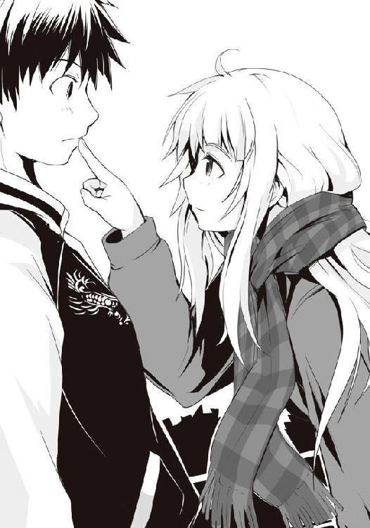
「佐藤さん、行きませんこと？ アブラ神のスーパーへ」
梗はニッコリと笑った。僕の返事を聞くように、押さえていた人差し指が外される。
嬉しい。素直にそう思った。......でも、今夜ばかりはダメなのだ。
「話を聞いていたのなら、わかるだろ。今僕が行けば、多分魔導士の足手まといになる。烏頭の思惑通りになってしまう。それはダメだ」
何故です？ と、鏡が淡々とした表情で訊いてくる。
「何故って......話、聞いてたんじゃないの？」
「えぇ、それはもう。佐藤さんがこの場所に立ち、二階堂さんに対して恋い焦がれるような独り言を漏らしていた時から一言一句漏らさずに――」
「姉さん、ストップ。詳細な説明はナシで。今、明らかに佐藤さんがドン引きしましたよ」
「あの時から......？ 別にあれはそういうんじゃ......っていうかなんでそんな時から」
「え、えぇっと......ともかく、話は聞いておりましたわ。ですから、その......それが、どうしたというのでしょう？」
いや、だから......と、なかなか話が通じない梗に面倒臭さを感じながらも今一度説明しようとする。だが、その時、鏡がいつものように飄々としたまま口を閉ざしていることに気がついた。彼女が、姉のミスを放置している......？
僕は今一度梗の顔を見る。こちらを見つめてくる大きな瞳には、自信がある。何もおかしなことは言っていない。つまり......。
「あなたが行くことは、烏頭さんの罠にはまり、そして魔導士さんの足手まといになる......それが、どうしたというのですか、佐藤さん」
僕が思いついたことを確認するように、梗は言ってのけた。
「いや、だって......。烏頭を倒すために魔導士は来たわけで、それは言ってみれば僕やＨＰ同好会を......そして、槍水先輩を守るためで......えーっと」
「足手まといになるというのなら、なればよろしいかと。魔導士さんがそれで苦戦しても佐藤さんには関係がない。彼はＨＰ同好会の一員でもなければ佐藤さんと組んでいるわけでもない。なのに佐藤さんの動きを掣肘しようなどおこがましい」
鏡が言うと梗の目が鈍く光り、したりげな笑みを浮かべた。
「まどろっこしいですわね。わたくしたちが愛した佐藤さんはもっとシンプルな方でありましたわ。あなた、本当に佐藤さん？ ......二階堂さんがおっしゃっていましたわ。出過ぎた杭があるのなら死ぬ気でぶっ叩く。それが佐藤さんだと。では、半額弁当の前に立ち塞がり邪魔をする者がいたのなら......佐藤さんはどういたします？」
「そんなのは決まってる。狼なら当然――」
その瞬間、沢桔姉妹が言わんとしていることを僕は察し、言葉が切れた。
「佐藤さんにとって邪魔になる狼など、倒してしまえばいい。たとえそれが佐藤さんを潰そうとする烏頭さんであれ、余計なお節介で佐藤さんを守ろうとする魔導士さんであれ、ことごとく」
――倒す。そのシンプル過ぎる言葉を聞いた瞬間、静かだと感じていた駐車場が本当の意味で沈黙した気がした。何も聞こえない。ただ、梗の口にした言葉だけが反響する。
魔導士を、倒す。つまり、最強と謳われ、猛者を率いた元ＨＰ部部長に、大きなお世話だと、邪魔だと言って、押しのける......。彼の庇護を、捨てるのだ。
烏頭の毒を克服し、先輩の縄張りを守るために......己が無力ではないと証明するために。
「そして、負けたのなら喰らいついていけばいい。何度でも、ひたすらに。......当たり前のことです、狼として生きる者ならば」
鏡が言うと、次は梗が言葉を紡ぎ出す。
「恐れないでくださいまし。あなたと彼ら、彼我の力の差はないとは言いませんわ。ですが、思い出してくださいまし。半値印証時刻はあなたたちだけのものではない。わたくしたちのもの。狼、全員のもの」
梗は続ける。僕の全てに答えを出すように。
先ほどとは違う、ただただ優しげな笑みを浮かべて。
「争奪戦は乱戦。敵は......味方。強い敵は、即ち強い味方でもある」
乱戦では全員が敵ではない。時に味方ともなる。当たり前といえば当たり前のこと。もし今宵烏頭と魔導士がぶつかるというのなら、その強敵たちは時に自分の味方にもなる。そして...。
「佐藤さん、行きませんこと？ アブラ神のスーパーへ。......今宵、あなたの隣にはわたくしたちがおりますわ」
梗が再び訊いてくる。先程の誘いに、身が疼くほどに甘い言葉を足して。
強力な味方として、そして強力な敵として、今宵、側にいる......と。
それに、僕は――
●
静かな夜だった。元々丸富の校舎裏手にある駐車場が接している道路は交通の便が悪く、近隣に住む人間しか利用しない。それもあって駐車場隅にあるバイク置き場にさえ、佐藤とオルトロスの会話はかすかに聞こえていた。
毛玉はサングラスを外すとサイドミラーで自慢のアフロがきちんとヘルメットに収まっているのを確認する。
「......二階堂、おまえ、行くんだろ？」
ヘルメットを脇に抱え、二階堂は佐藤たちに背を向けて空を見上げていた。毛玉も倣って顔を上げてみれば、いつの間にか良い月が顔を出している。寒くなるにつれ月は美しさを増しているが、今宵は格別に綺麗に見えた。
「......何故だ？」
二階堂はバイクに跨り、ヘルメットを被る。
「何故って、佐藤を助けに......」
二階堂がキーを差し込み、エンジンをかけた。
「何故オレが？ 奴を助ける義理もなければ......その必要もないだろ」
毛玉は今一度照明の下を見やったが、すでにそこにはオルトロスの二人だけ。
佐藤は夜空の下へ駆け出していた。何の迷いもなく、かといって投げやりにでもない。獲物を見つけた獣がごとく、何かを思い定めた確固たる足音を響かせて。
二階堂のバイクが発進する。駐車場を出て、佐藤に背を向けて走り去っていく。
「その必要もない、か。......確かにな」
月下に轟く二階堂のバイクの音は、仲間を鼓舞する狼の遠吠えのように聞こえた。
●
勝った、と、沢桔鏡は確信した。
怖いぐらいに全て思惑通りに事が運んだ。大それたことをやってのけたという緊張で、佐藤が走り去った今になって鏡の手に汗が滲み出す。
偶然転がり込んできた千載一遇のチャンスを完璧にものにしたのだ。
確実な魔導士の出現情報、そこに訪れる彼を恨む猛者......さらに、そこへ二人を打倒せんとする佐藤洋を送り込んだ。
以前、姉とチーズフォンデュを食べながら、魔導士の強さについてひたすら議論を繰り返した。ガブリエルラチェットのデータバンクを覗いても、戦った経験のある狼に聞いてみても、どうもはっきりとしない最強と言われる所以。ならばと、相手が如何なる力を有していてもこれを打倒出来る手段を考えた。
それが毒には毒、実力者には実力者を当てるということだ。
本来は機敏さを活かす狼が狙う漁夫の利、強敵たちに隙を生ませるための常套手段だ。ただ自分たちのような名の知れた狼は他から狙われるのでまず不可能な戦法だった。しかし最強と謳われる魔導士やそれと同等クラスの狼がいるのならば話は違う。悔しいが、山乃守の言葉を信じるならば、彼らの前ではオルトロスでさえ霞む実力だという。ならば、霞んだまま弁当を獲ってやる。名より実を、勝利を獲る。それが二人が立てたプランだった。
魔導士に匹敵する実力者というのが自分たち以外では氷結の魔女ぐらいしか近隣では思い当たらず、かなり条件が厳しく、机上の空論に近いプランだった。
しかし、それは、向こうからやってきた。
しかもスーパーから離れてしまいそうになっていた佐藤を立ち直らせ、彼をも送り込むことで、より激しく場を荒らし、弁当奪取のチャンスが生まれやすい環境を整えた。
佐藤に、敵は味方と告げたが――当然、味方は敵でもあるのだ。
まさに漁夫の利、まさに一石二鳥。
一番の懸念は姉の喋りがどこでフリーズするか、どこでこちらの思惑を漏らしてしまうのか......そればかりが心配だったものの、今回はいつもとは違った。
「パーフェクトです、姉さん。かつてないほどです」
いまだ佐藤が走り去った方を見ている姉の背に向かって、鏡はビッと親指を立てて見せた。いつもはとても残念な姉だが、やる時はやってくれるのだ。
バッと振り返った梗が鏡の両肩を掴み、ガクガクと前後に揺らすと共に本人は最高の笑みを浮かべてピョンピョンとはね回った。姉も嬉しいのだろう。やっぱり姉は――
「や、やりましたわよ鏡！ 佐藤さんが元気になってくださいましたわ!!」
「......はい？」
「狼としても立ち直って......あぁ！ これで本当に以前の借りを返せたというもの!!」
「...............あの、姉さん？」
「あぁ、でもどうしましょう!? 佐藤さんとわたくしたちが魔導士さんと戦い、これに勝ってしまったら最強の名はどちらに......はっ！ まさかオルトロスと佐藤さんということで、ケルベロスなどと呼ばれ始めてそれが最強だと......あぁでもでも、そうなると二階堂さんがあまりにもかわいそうですわ！ 出来ることならみんなで幸せに――」
やっぱり姉は――いつも通りだった。頬を紅潮させ、キラキラと乙女チックに輝く瞳で振り返った姉の顔。それを見た瞬間に鏡にはわかった。......あっダメだ、と。
きっと途中から完全に例のプランは頭から抜け落ちて、ただひたすらに本気で佐藤のことだけを想っていたのだろう。
鏡の胸にあった緊張感が驚くほどの速度で萎えていき、体から力が抜け、姉に揺らされるがままに首をガクガクと揺らした。
「さぁ、鏡行きますわよ!! わたくしたちをお弁当と佐藤さんが待っていますわ!!」
鼻息荒く梗が鏡の手を掴むと、早速バス停へと引っ張られていく。
鏡はため息を漏らした。しかし、どこか安堵している自分がいるのを彼女は感じる。
以前立てたプランはあまりにもらしくない。どうせ勝つなら真っ向から戦って最強の名を手に入れたいという想いは......確かにあった。
そして何より、佐藤を煽てて自分たちのダシに使おうとすることに、罪悪感がないわけじゃない。もし全てがプラン通りに進んだとしても、最後の最後で気が引けたかもしれない。
そう考えると、どこか助かったという気すらした。
鏡は今一度思い直す。最強と謳われる男と、猛者とされる毒使い、そして久々の佐藤洋との戦いを今は素直に楽しもう。――自分の手を引く、この姉と共に。
●
「......時間、か」
烏頭みことはＨＰ同好会の部室の窓から月を見上げていた。
澄んだ空気のせいか、今宵の月は妙に光り輝いているような気がする。
美しい月夜は狼にとって幸運の予兆だという。果たして今宵の月は自分に幸運をもたらしてくれるのか。この狼殺しの名を持つ自分でも、果たして。
歴代のＨＰ部の中でも異才と謳われ、再起不能とした狼の数は相当数に及ぶ毒使い。
かつて、優が気づくのがもう少し遅ければ仙も確実にそう出来た自信があった。気づかれたのが早すぎた......それもまた烏頭の中で仙を憎むことに繋がっている。彼はそれだけ仙に注目していたということだから。しかも彼女を守るためだけに部を辞めまでした。世間から神童と呼ばれたほどの彼が、あれだけ心を寄せ、身の置き所としていたこの部を躊躇うことなく。
自分と約二年、一緒に過ごしたはずの場所を仙のためだけに、簡単に......。
「......そんなに、仙が大事だった？ ねぇ、優君......」
烏頭は月に触るように窓ガラスを指先で一撫でし、部室を出ていく。
身についた習慣で戸締まりはきちんとやった。鍵についた鈴が鳴る。卒業生から引き継いだ鍵で、鈴はきっと合い鍵を作った際に付いてきたものなのだろう。外す必要もなかったので、付けたまま、そんなところだ。この鍵自体、部と喧嘩別れとなったことで返すタイミングを忘れていたものである。
烏頭はしばしその鍵と、部室の扉を見やった。この部を離散させたのは仙だと、烏頭は佐藤に言った。しかし佐藤は喨からの話で原因は烏頭と優と仙にあるとした。どれが事実かは、烏頭自身わからない。恐らくは、と、恨み辛みを全て無視して、原因だけを考えれば自分と仙は鍵でしかなかったという気がする。崩壊へと続く扉の鍵。しかしてその扉を押し開けたのは、紛れもなく当時最強の名を手にした部長の金城優だ。
「彼に、勝たなきゃ......。もう、チャンスはない」
しかし勝てるのか。用意するはずだった毒――佐藤には予定と違った処置を施してしまい、対魔導士用の毒としてはほとんど使い物にならなくなってしまっている。
本当なら佐藤、可能なら白粉も含めて毒で弱らせた状態にして、魔導士の前に連れ出したかった。まともに戦えない彼らを烏頭が襲えば優は必ず助けに入る。そこに生まれる隙を狙い、叩く。即効性の毒、平手。打てばその箇所の機能を麻痺させ、灼熱に焼かれるような痛みを残す。魔導士とて足や腕に一撃喰らえばそこは使い物にならなくなり、戦力は大きく下がる。そのたった一発のためだけに用意する毒。それが佐藤たちだった。
しかし、予定外だったことが二つある。一つは白粉が初対面で何かに勘づいたこと、そしてもう一つは優がなかなか現れなかったことだ。結局白粉には逃げられ、作戦が失敗したと判断した結果、仙への置き土産にするため佐藤に〝処置〟を施してしまった。
ウルフズベイン、その名が示すように、狼を殺すための毒を盛ったのだ。
それは人に合わせて手法を変えるが、佐藤にはあの手で揺さぶった。事前に下調べした段階で佐藤には変態の二つ名があることは判明しており、数日かけて佐藤洋という人間を観察した結果、ベストだと判断したのがアレだった。
年頃の男の子らしい性への興味、思いがけない小賢しさ、どこか薄っぺらいくせに何かが堅いその性格。彼の一番深いところにある妙な生真面目さ、それが狙いどころだった。
案の定烏頭の誘いには乗らず、仙へけしかけようとしたら逆上した。相当嫌われただろうが、それ故に烏頭の誘いに乗りかかったことで今も自己嫌悪に襲われていることだろう。あと一度ぐらい何か仕掛けてより完璧にしたいところだが、今のままでも当面は部室やスーパーに行くことはないはずだ。仙がそれにショックを受ければ、それでいいと思い直す。
田舎道に街灯が並んでいた。その下をかつての自分は何度となくＨＰ部のメンバーと共に歩いたのを昨日のように思い出す。隣には優がいて、後ろには仙がいた。そして他の後輩たちもまた......。時には仙を追いかけ回して面白半分に怖い話を聞かせたり、時には優たちと新たに現れた強敵たちの攻略法を話し合った。お互いに気心知れた相手と語り、技を競い合い、可愛い後輩を育み、そして共に夕餉の時を迎える......そんな時間が人生の中で一番幸せだったかもしれないと、烏頭は思う。仙が、本当の意味で狼として頭角を現すまでの短い期間だ。
烏頭を知っている人間には、あの一件を仙が魔導士の腰巾着であったことに嫉妬したからだと思われがちだが、実際には腰巾着でなくなったことが、原因だったのだ。
「......ダメだな。このままじゃ」
烏頭は食欲に繋がらない思考を切る。意識を胃袋に向け、腹の虫に呼びかけた。
実力では負けていても、彼のクセを知っているためそれでどうにか戦えるはずだった。後は自分好みの半額弁当の有無に賭けるしかない。
せめて後一勝。最強の狼にして愛しき彼から、確かな勝利を奪い取りたい。そうすれば、きっと彼は自分を......。
彼女の行く先に光が見えてくる。アブラ神のスーパーマーケット。仙の縄張りにして今宵の舞台。想いを寄せた相手から、勝利をもぎ取らんとする場。
烏頭がエントランスを抜ければ、店内の張り詰めた空気が待っていた。空気が異様なほど重い。本来スーパーは業務用のそれを除けば、内装はもちろん、湿度、室温が適切に調整され、店内に流れるＢＧＭは軽やかで暖かみのある印象を与えるよう計算されている。アブラ神の店も例外ではないが、それだけ制御された場でありながら、この空気ということは......。
「......優君。また、格好良くなってる......」
彼の姿がエントランス近くの茶・コーヒーコーナーにあった。一八〇ほどの長身に、余分な脂肪を全て取り除いた無駄のない体、見る者を射竦める眼力のある双つの瞳。黒いコートを纏ったその姿は幻想曲で語られる数々の伝説の魔導士にも引けを取らないだろう。
ただ立っている。それだけなのに店を支配するような圧倒的な存在感が、烏頭の胸を締め上げる。――これに、自分は勝てるのか。
店内にいた他五匹程度の狼からの視線と共に、彼もまた烏頭を見る。どれもが刺さるような視線だが、その全てを合わせたとしても優一人の迫力には劣る。
烏頭は眼鏡を掛け直し、店内を歩み行く。早く彼と話したい。しかし狼としての嗜みがそれを止め、先に弁当コーナーに足先を向けさせた。
「......へぇ、おあつらえ向き......だね」
残されていた弁当は三つ。そのうちの一つは、どう考えても月桂冠に至るだろうことが確信出来た。味がどうとか、量がどうとかいう以前に、作り手が満足しているのがタイトルから感じられる。アブラ神の性格からいってこれを月桂冠にしないわけがない。
これは勝利を明確にしやすい。勝てれば間違いなく優の心――狼としての誇りに深い傷を残せるだろう。
烏頭は心を落ち着かせながらも、腹の虫を叱咤し、その加護の力を強めさせる。状況は悪くない。すでにあれの味を知っている自分は、魔導士より一歩有利だ。明確な味のイメージは腹の虫の力をより強く引き出してくれる。
全ての手順を踏んだ彼女はようやく優のもとへ向かい、一緒にコーヒー豆のバルブ付きパックを見つめて並んだ。
「気づいていると思うが佐藤は来ない。そして手加減もしない。覚悟は、出来ているな」
数カ月ぶりの再会にも余計な会話は挟まない。まさに狼であることに純粋、それが彼だ。そして、それが彼の全て。だからこそ自分は......。
店内の空気がかすかに揺れる。何者かが来店したようだ。視界の隅に何やら梵天みたいなシルエットが見えたので、毛玉だろうと知れ、烏頭は顔を向けることもしなかった。興味もない。単に自分たちを見物に来たに違いなく、そんな連中に意識を向ける余裕はすでにな――。
場の空気が、今度は激しく揺れた。通常以上に高ぶっている狼たちが、そして烏頭たちもまた店に近づいていくる何者かの気配を感じ取る。
まるで腹を空かせた化け物の唸り声を聞かされたように、烏頭、そして優さえも反射的にエントランスへ顔を向けた。大猪ではない。あれほどまでに禍々しく、そしておどろおどろしい気配ではない。もっとスマートな......狼に近い......しかしもっと強力な何か。肌がひりついた。
果たして入店してきたのは、丸富大学付属校の制服を纏った二人の女子生徒。同じ顔を持つ二人の手にはそれぞれ買い物カゴの装備。
強い、と烏頭はその物腰から直感した。しかもかなり戦い慣れている。
彼女らは店内の空気、そして浴びせられている視線を気にした様子もなく店内外周を回っていく。途中、彼女らは烏頭たちを見つけると笑顔を向けてきた。一人は飄々としていたが、微笑んだ方の目は獲物を見つけて舌舐めずりする獣のようだ。
「今夜は荒れるな。......厳しい争奪戦になる」
優が独り言のように漏らし、烏頭はそれに頷いた。
彼女らが躊躇うことなく烏頭たちの近くにやってくると、背を向け合うようにして反対の島棚に体を向けて立った。
「魔導士さんとウルフズベインさん、お初にお目にかかりますわ。わたくしたちは姉の沢桔梗と妹の沢桔鏡......いえ、そんな名前は必要ないですわね。スーパーで呼ばれる名は、オルトロス。ようやくお会いできましたわ。それで――」
オルトロスの一体が何やら嬉々として喋っていたが烏頭は聞くのをやめた。優と二人の時間を邪魔されたことでいささか不愉快だったし、ベテランの気配漂う彼女らをガンコナー直伝の囁きで利用するのも恐らく難しい......そうなるとただの障害でしかない。
だが、彼女らは魔導士を倒すために来たのだと口にする。......ならば、使えるかもしれない。
「それじゃ優君は私たち三人が、相手。三人のうち誰が倒しちゃえるのかな、最強の狼を」
「あら？ 三人のうちとは限りませんわよ。......もう一人、その可能性を持つ方が」
笑うように沢桔梗が口にし、彼女はエントランスの方を見やる。
その表情は穏やかで、瞳はどこか愛犬を見る飼い主のように、愛おしそうだった。
魔導士、ウルフズベイン、そしてオルトロスの三組の二つ名持ちで荒れていた店内の空気がかすかにさざめいた。先ほどのオルトロスの来店と比べると微々たる揺れ。
......気のせいか、どこか場の空気に歓迎するような気配があるのを烏頭は感じた。自分や双子の時のような、驚きや警戒感とは決定的に何かが違った。
何者かが、肩をいからせて入店する。それは――
「......バカな。何故......」
優が呟き、いきなり動きだした。烏頭もまたそれを追う。彼らの行く先にいたのは――佐藤洋。走ってきたのか、荒い息で、額に汗を浮かべた彼は、最初青果コーナーに向かおうとするものの迫ってきていた優の姿を認めて足を止めた。
烏頭は佐藤たちから少し離れた場所から二人を観察することにした。
まさかのチャンスだった。佐藤が来たのなら、活用出来る。
「佐藤、何故来た？ 言ったはずだ、おまえは――」
彼の口調は非難の色を帯びていた。佐藤を守りながら戦うとなるとさすがの魔導士とて苦戦は必至。恐らく佐藤もそれに感づいているはずだが、彼は悪びれた様子もなく、あっけらかんとしている。息が荒いので、どこか佐藤は散歩途中の犬ように見えた。
暑い、少し疲れている、でも――最高に楽しい。そんな顔。
烏頭が仕込んだ毒――スーパーへの忌避、恐怖が完全に失せている。
時間の都合で簡易的な処置だったとはいえ、その事実に烏頭は驚愕した。
「わかってます。でも、来てしまいました。......理由はいろいろあるんですけど、一緒に行こうって言ってくれた友達がいて......それで、当たり前のことを、思い出させてもらいました」
佐藤はオルトロスの方を見やる。姉は満面の笑みで妹の肩を乱暴に揺すっていた。
「僕は、この店で半額弁当を奪取したい。たとえ......どんな強敵が立ち塞がるのだとしても」
「烏頭の本当の狙いはおまえじゃない。俺と仙だ。佐藤はただ俺を――」
「誘い出すためのエサ、そして毒。......わかってます。だから、僕は無視してください。あなたに頼らなくても、大丈夫ですから」
苦笑しながら佐藤は優の横を通り過ぎ、青果コーナーへ――烏頭の方へと向かってくる。
佐藤、と、優は自動ドアを見やったまま再度呼びかける。佐藤の足が止まるも、彼もまた振り返らない。背を向け合ったまま二人の男が対峙する。
「......潰されるぞ」
佐藤が一度瞼を閉じ、天井を見上げるように顔を上げた。
「昼間これはあなたと烏頭の戦いだって言いました。けれど、それは違う。少なくとも僕には違う。僕にとってこれは......」
佐藤が顔を戻し、瞼を開く。烏頭を、真っ直ぐに見つめてくる。
これまで見てきた佐藤とは違う、まるで別人の顔つき。それに射竦められた烏頭は背筋がゾクリとするような感覚に襲われた。肌がひりつき、全身の毛が逆立つような感覚。体が震えた。
ヘタな二つ名を上回るこの気迫、それまで佐藤に一度も感じることがなかったもの。
烏頭はそこで、彼の二つ名を思い出す。変態。てっきりあれは男子にありがちな童貞をこじらせたものだと判断し、実際にそれを確かめもした。しかしまさか、これはその言葉通りの意味だったとでもいうのか。彼は、今までその姿を隠していたというのか。
「これは、僕の戦いだ」
その言葉と共に、佐藤は歩み出した。魔導士に背を向けたまま、一度とて振り返ることなく、山となっている寒玉キャベツの前を歩んでいく。
○
最強と謳われ、あの槍水先輩の師に当たるような大先輩であり、かつては《アラシ》を前に怯えていた僕を助けてくれた恩人でもある。そんな人に逆らおうとする気持ちは、沢桔姉妹に助言を貰うまで一度として考えたことはなかった。
もちろん、別に彼を倒したいと思っているわけじゃない。倒したいと思っているのは、烏頭。そしてそんな僕をつき動かすのは弁当を欲する腹の虫の声だ。
しかしそれを為そうとする僕を押さえつけ、障害となるのならば......倒せばいい。たとえそれが魔導士であっても、互いに狼であるのならばその喉元を喰い千切ってやるまで。
僕は店内を見渡した。無数に陳列された商品の中に、茶髪やウルフヘア、巨漢......見知った狼たちの姿を見つける。そしてオルトロスと魔導士がいる。敵にして強力な味方がいる。
恐れることは何もない。
そして、腹の虫を押さえつけるあの毒は......もう恐れることじゃない。
二階堂たちから話を聞いた今となっては。
僕は近くに佇んでいた烏頭の瞳を見る。向こうも僕を見ていたけれど、きっとその瞳は僕ではなく、魔導士を向けられているに違いなかった。所詮僕は彼女にとって道具でしかない。
それでもいい。それなら余所見したまま、潰せるほど僕は甘くはないことを教えてやる。
「その様子じゃ、ネタバレしたね。でも、あれは本気。この後一緒に夕餉、そして......ね？」
烏頭が口の端を吊り上げるようにして笑う。でも、きっとその表情も言葉も作り物だ。
このスーパーまで走ってくる最中、僕は今までのことを考えていた。魔導士、槍水先輩、烏頭、山乃守さん、そして二階堂たちがしてくれた話......。それらをまとめて、烏頭についてだけ考えていた。今までは先輩や自分、そしてスーパーでの勝敗のことが先にあって、烏頭には嫌悪しか抱けなかったけれど、彼女だけを客観的に見たら違う面が見えた気がしていた。
きっと彼女は本当に魔導士が好きだったんだと思う。それこそ一途過ぎるぐらいに。それまでの山乃守さんとの関係を完全に切り、近くに先輩がいれば嫉妬し、魔導士本人に拒否されても諦めず......今もなお強く想っている。そのために嫌いだと言っていた僕にあんなことまでして......手段はともかく、何が何でもと形振り構わないところ、僕は嫌いじゃない。
そう気がついた時、僕の中で彼女の毒は意味をなさなくなった。ここに来たのはただ狼としてケリをつけるため、そして先輩の縄張りで好き勝手させないため......そして鍵を奪うため。
だから、僕は言おう。はっきりと。僕の今の正直な気持ちを。
「あの夜の続き......楽しみにしています」
へ？ と、烏頭が呆気にとられた顔をし、ハラリ、と前髪が彼女の顔にかかった。
きっと彼女は僕の中にいまだ残っているだろう毒を刺激しようとしたんだろうが、もうそれはさほどの意味をなしてはいないのだ。彼女が嫌いじゃなくなれば、そんなに意味はない。
何より純真さ、そして身も心も金城に......と山乃守さんが言っていた。そんな人が嫌いだという僕とホニャララパーな展開なんて一切望んでいないだろう。だから、嘘だ。乗ってこられた向こうが困る、そんな挑発。......まぁそう思うとちょっと残念な気はするし、あの夜、もう少し勢いに任せていい思いをしても良かったんじゃねぇのっていう気持ちがないわけじゃな――危ない！ せっかく、純愛派として上がった好感度が下がってしまう！。
そ、そう、僕は純愛派なのだ。だから槍水先輩と二人っきりになったところで、どうということはない。僕のような理知的な男はそんなものより先輩とのボードゲームを楽しむだけさ。
これもまた当たり前のこと。いつもなら悩みもしないことなのに、烏頭に迫られたこと、そして彼女からの言葉がひたすらに僕の心を重くして、論理的な思考が出来なくなっていた。
恐らくそれがガンコナーから受け継いだ烏頭の能力の神髄なのだ。しかしオルトロスと接触し、青果コーナーの清浄な空気を吸った今、僕の心は驚くほど軽やかだった。
僕は烏頭を真っ直ぐに見つめながら、期待しています！ と、ダメ押しに告げて、彼女の横を通り過ぎる。風に煽られた彼女の長い髪が僕を捕まえようとするように伸びてくるも、僕の体に触れることはなかった。
僕は店内外周を回って、総菜・弁当コーナーの前をゆっくりと眺めていく。
どれもこれも今日のアブラ神の弁当はヤバかった。残されていた弁当は三つ。その全てが〝！〟のインフレ状態だとか、もうアブラ神は値札シールと売り文句を書くポップを別に作れよ、と言いたくなる長すぎる弁当名だとか......いろいろ言いたいことはあるのだけれど......そのどれもがヤバイぐらいに僕の心を引きつけ、腹の虫を騒がせる。
一つめ、『熟成させて甘みを引き出した今が喰い時!! 栄養満点カロリー最高得点!!（注：本日製作した弁当中） ホックホクなサツマイモ＆カボチャコロッケ弁当!!』という、タイトル内にまさかの脚注が付くという他店では絶対に見ない、というかやっちゃいけないことをしでかしているロックな弁当だ。この熟成というのはサツマイモもカボチャも収穫自体は夏に行われるものの、二、三カ月寝かせてやることでデンプン質が糖質に変わるらしいと以前槍水先輩から聞いた気がするので、恐らくそれのことを言っているのだろう。弁当の中身はシンプルながら濃い作りで、盛りのよいご飯の上には海苔が敷かれ、多めの野沢菜の漬け物。そして油対策のパスタの上には楕円と円形の二種のコロッケが計六個。......スゲェ、確かにこいつはスゲェ。栄養価は高いだろうが、同時に脂質と炭水化物の量――即ちカロリーもタイトルに偽りのない手加減のなさだ。
二つめ、『あえて原点回帰で基本に忠実。伝われぇい!! この熱き漢の真心込めし温もりの一食!! ザ・シンプル弁当!!』という、気合い入り過ぎて温かいんだか熱いんだかよくわかんないホットな弁当名の割に、シンプル弁当というだけあって、とてもオーソドックスな弁当だ。わっぱ飯のような、木の模様が描かれた楕円の容器という、普段はあまり見ないタイプの容器に収まるそれは、まるで漫画か何かに出てきそうな小綺麗な作り。この弁当の特徴はその容器でなく、その構成だ。スーパーなどでは業務である以上、品数を増やしたり、家庭では作りにくいものを弁当に入れたり出来、それを売りにする。しかしこの弁当の場合はとても家庭的なおかずでまとめられていた。
半分を占めるご飯に振りかけられたゴマ、その脇には三日月状のたくあんが彩りを添える。おかずは一個でも入っていると何故か食べる側のテンションを上げてくれる唐揚げ、赤いタコさんウィンナー、きんぴらゴボウ、おまけのようなプチトマトと付け合わせのブロッコリー。そして卵焼きだ。シンプルながらその素朴さに不思議と食べたいと思わせる何かがある。赤いウィンナーとか僕らの世代だとそんなに昔から食べているわけじゃないはずなんだけど、あのチープな感じが逆に嬉しいんだよね。
そして、最後。ついに来たかと言わざるを得ないだろう。『数々の試作の果てに辿り着きし最終進化型!! 出でよ！ 真・和風ロールキャベツ弁当!!』である。アブラ神には悪いんだけど、正直見た目では以前の試作形とそんなに変わっていない気がする。深底の黒い長方形の器に、ゴマのかかったご飯、柴漬け、季節感を演出する紅葉の形にカットされたニンジンが一切れ載る大きなロールキャベツが二個、紅白のかまぼこに卵焼き、白ゴマの振りかけられたほうれん草のおひたしといった内容だ。だが、タイトルにはすでに一つの結論に達したというアブラ神の確信の気配がする。出でよ、とか一体どこから召喚しようとしているのか知らないが、ここは一つ彼の言葉を信じるべきだろう。実際烏頭が奪取した時点で、すでにその和風ロールキャベツはかなり魅力的だった。確か豚肉と長ネギのロールキャベツだったっけ？ 良い香りで、温かそうで、おいしそうで......あぁ......昼を抜いた僕の胃袋をそのキャベツに含まれるビタミンＵで労りつつも、中に秘めしお肉が満足感を......。
うん、やはり狙いはコイツだ。この真・和風ロールキャベツ弁当だ。
僕は弁当コーナーを通り過ぎ、オルトロスの所に行こうかとも思ったけれど、魔導士と何やら喋っているようだったのでやめておいた。僕は先ほど見つけたウルフヘアと共に生活雑貨コーナー前に並んで立つ。
「そういやビッグ・マムの店って、先週一杯で改装終わったんじゃないの？」
ウルフヘアはふにゃりと項垂れ、ため息を吐く。
「......もうなくなっちゃってた。やな予感がしたから、五時ぐらいにちょっと様子を見たら完売ってポップが」
五時の段階でスーパーの弁当が消える......これはかなりのことだ。改装期間中待ちに待っていた多くのファンが押し寄せたか、それとも単に改装は終わっても本格的に稼働しておらず、数が用意できなかったのか。どちらにせよウルフヘアにはご愁傷様と言うしかない。
「でもいいんだ。一度はあの髪の長い人から弁当を奪ってやらないと気が済まなかったし」
ウルフヘア曰く、僕が最後にスーパーに来た時、彼女は弁当を奪取できた。しかしそれはどこか自分で獲ったという気のしない、棚からぼた餅、もしくは烏頭からおこぼれを与えられたような気がしてしょうがなかったのだという。
「......おいしかったけれど、あれにはほとんど勝利の一味が入っていなかった。だから、次こそは......ってさ」
そう言って彼女は笑ってみせる。いくらあのビッグ・マムの店で鍛え、柚子と接触しているとはいえ狼となってほんの短い期間しか経っていない彼女が、すでにこんな台詞を口に出来るだけの成長を見せている。今はただしつこく、ひたすら必死なだけの狼ではあるけれど、そう遠くないうちに相当やっかいな相手に育つのは間違いなさそうだ。
追いつ追われつ。それはあらゆる物事で言えることだけれど、気がつくと僕の後ろにもすでに彼女のような強敵が現れている。そのことが何だか不思議でもあり、怖くもあり......。そして、面白い、とも思った。
「チャオ、ワンコ。来ると思ったわ」
相変わらず素敵な胸元を揺らして、茶髪が僕たちとは背中合わせになるようにして立つ。
「話はあの山乃守って人から大体聞いた。それでこの状況とくれば大体察しはつくけど......相変わらずＨＰ部は難儀なことね」
今は同好会だよ、と指摘すると茶髪が肩をすくめた気配があった。
「そうだった。......ま、何にせよ、面白くないわね」
「うん、楽しい話じゃない。でも――」
「そうじゃない。私たちからすると、面白くないってこと。まるでここのスーパーには自分たちしかいないって考えているみたい」
最初、茶髪が何を言っているのかわからなかったけれど、よくよく考えてみればなるほど、と納得した。烏頭も魔導士も互いの視界に入っているのは彼女らだけ。そこに僕がいないことが酷く悔しかったけれど、それは茶髪たち、ここに来る狼にしても同じだということか。
「本当は今日塾だったんだけど、休んだ。アイツらがいない間、私がその分頑張らなきゃね」
アイツら？ と、僕は振り返ると、茶髪は「コレとコレ」と言って、前髪を上げておでこを出し、次に顎の下を指で摘むような仕草をする。修学旅行組の坊主と顎髭のことだ。
「確かにここは氷結の魔女の縄張りって言われてるけど、私やアイツらだって、こことジジ様の店がメイン。......そう簡単に好き勝手にはさせない」
「あ......誰か、来る気がする」
ウルフヘアの呟きの直後に誰かが来店してくる。現段階で弁当は三つ、狼は自分を入れてすでに一一。ここにさらにもう一人......いや、まさか、二人来るのか？
その二人は自動ドアを抜けた瞬間だけ空気の重さに驚いたように立ち止まった。見知った顔だ。噂をすれば何とやら、今し方話に出てきた坊主と顎髭の二人が私服姿で来店したのだ。
「......ちょっと何？ 私が無理して来たってのに......」
茶髪がボヤいていると坊主たちは弁当コーナー経由で、僕らの所へやってきた。
「何だよ、コレ。とんでもねぇ事態になってんじゃねぇか。魔導士にウルフズベイン、オルトロスって......何かの頂上決戦か？」
顎髭が冷や汗を浮かべながら、隣に立った坊主に視線で同意を求めた。
「台湾帰りでいきなりコレはキツイな。入店した瞬間に足が止まったぞ」
曰く、何の因果か二人共一足先に実家からこっちに戻ってきて、久々に半額弁当を......と思ってやってきたら店の前で偶然に出くわしたのだという。
それを聞いた茶髪は苦笑しながらも現状を簡単に説明すると、二人の表情が硬くなり、焦りの色は消え、まさに狼のそれとなる。
「......なるほど。確かに面白くないな。まるで自分たちこそが主役だといわんばかりだ」
「あぁ。腹の虫に従って今日来て良かったぜ。たとえ相手が魔導士であれ何であれ、デカイ顔した連中に本当の主役が誰か教えてやらねぇとな」
坊主と顎髭はそれこそハードボイルド作品の主人公のような台詞を口にするが......。それを聞かされた僕の気持ちを茶髪が代弁してくれた。
「まぁ、アンタたちは一〇〇パー脇役だと思うけどね」
なんでだよ！ とすぐさま顎髭たちは反論し、僕たちは笑う。
視界の端で遠くの島棚から興奮した面持ちで梗がこっちに来ようとしているのが見えたものの、何故か鏡がそれを止めていた。何か言い合っているが店内ＢＧＭに紛れてよく聞き取れなかった。かろうじて曲の合間に鏡の声が流れてくる。
「姉さん、ダメです。今そんなテンションで彼らのもとに行ったら、またフリーズするのが目に見えてますから」
何のこっちゃ、と思ったものの、今僕の周りにいるメンツを見てみると、かつてオルトロスと最後まで『国産うなぎ弁当』を奪い合ったメンバーだと知れた。二階堂がウルフヘアに入れ替わっただけ。......それで、だろう。
よその犬を見つけて興奮した大型犬を飼い主が宥めているような二人の姿に、何故か、笑った。
空気はのしかかってくるような重さなのに、いつの間にか心は驚くほど軽やかになっていた。腹の虫も、弁当を見たせいか、先ほど以上の空腹を訴えている。
半値印証時刻前では当たり前の狼の状況でありながら、懐かしい感覚だった。
今、僕の心に恐れはない。敵は味方。その言葉の意味を僕は今一度噛みしめる。
僕は携帯を取り出して時刻を見る。一九時五〇分。そろそろ――来るか。
笑い合っていた茶髪たちの顔から一斉に笑みが消え、それと共に彼らの気配すらも失せる。場は水を打ったように静かになった。ドロリと重苦しかった空気が今度は痛いほどに張り詰め、緊迫したものへと変わっていく。先ほどまでの店内の人間が発していたざわめきが消え、店内ＢＧＭはもちろん、精肉コーナーからのジンギスカンの歌まで聞こえてくる。それはまるで店内から人が消えたように錯覚するほどだった。
狙撃手がトリガーに指を置く、狩人が弓を引く、そして肉食獣が獲物との間合いを計る......そんな永遠にも似た刹那の時間の果てに、彼は満を持して現れる。スタッフルームの扉を押し開ける、アブラ神。彼は店内に向かって深々と一礼すると、まずは総菜コーナーへ。そこで売れることによって隙間の空いた陳列を美しく、素早く、鮮やかに並べ直していく。今日残っている総菜は揚げ餃子、サンドイッチ、回鍋肉といったラインナップ。どん兵衛には合わなそうなものばかり。......ますます負けられない。
次にアブラ神は弁当コーナーへ。総菜同様に並びを直す。それが終わると彼は懐からバサリとシール台紙の束を取り出した。
その瞬間、狼たちの体から殺気が漏れる。髪の毛の一本一本が震えた。
台紙からアブラ神は黄色と赤色の華やかなシールを取ると、それを総菜の方から貼っていく。まるで親が子の頭を撫でるように優しく、しっかり、何かを伝えるような貼り方で。
三つの弁当にも指を這わしていくが、その動きがピタリと止まる。
......来る。僕はそう確信した。
アブラ神はシール台紙の束をしまうと、ポケットから一枚だけの台紙を取り出し、そこにあるシールを真・ロールキャベツ弁当に貼った。
月桂冠。これを手にした者はその日、このスーパーマーケットでの絶対の勝利者を意味する。
さすがにこの時ばかりは店内の狼たちが体を震わせた。それが出るということは誰も彼もがその弁当を死に物狂いで狙う、即ち今宵の戦場は死闘になることを示してもいるのだ。
チラリと横目で他の面々の顔を見てみれば、全員が意識も視線もその弁当に奪われていた。ウルフヘアに至っては、月桂冠自体が初めてなのか、その瞳には感動の色さえある。
アブラ神がゆっくりとした足取りで戻っていく。スタッフオンリーと書かれた扉の前でまた深々と一礼。顔を上げつつ後ろ向きのままでスタッフルームへと体を押し込んでいく。途中、店内、そして僕らを見渡すと彼が少し微笑んだように見えたのは、気のせいだろうか？
開かれた扉が自重によって閉まり行く。
名も無き狼たちと共に、今、狂宴の幕が上がる。
扉の閉鎖音と同時に顎髭が雄叫びを上げて一気に突っ走る。刹那遅れて他の狼、そして僕らもまた駆ける。僕は足に力を入れながらも周囲の気配を探る。上空から今はまだ誰も来る気配はない。オルトロスと魔導士が得意とする頭上スペースは油断出来ないエリアだった。
顎髭を先頭に僕らは一塊となって弁当へ突進する。徒党を組んだようでもあるが、誰一人として周囲の狼に一切の気を許していないのが肌にピリピリとくる連中からの警戒で伝わってくる。その中で背筋に水滴を垂らされたようなゾクリと来るものが混じり出す。見やれば島棚を一つ挟んだ隣のルートを烏頭が平行に走りつつ、陳列棚の隙間から僕を窺っていた。
顎髭が弁当陳列棚に対して垂直に迫る。速度は落とさない。......コイツ、棚にぶつかる気で先行奪取を狙っているな。
僕の隣を走っていた茶髪が急にカクンと、膝の力が抜けたように重心を落とす。そして次の瞬間、けたたましい踏切音と共に急加速。顎髭の背を足を掛けるようにして蹴り飛ばし、茶髪はそのままオーバーヘッドキックのようにバク宙。顎髭はすぐ後ろにいた坊主を巻き込み転倒し、陳列棚の下方に二人して激突した。宙を舞う茶髪は一回転すると彼女の後ろを走っていたウルフヘアの頭を蹴りつけ、その反動でさらにそこから僕に迫った。目を見張るような連続技だった。早いだけでなく次の流れが読めない。茶髪め、腕を上げている。
僕は身を捻り、茶髪から放たれた蹴りを裏拳で弾こうとするも、無理やり捻り出したそれでは茶髪の攻撃は弾き切れない。結局肩に喰らって僕は転倒する。
茶髪が平然と陳列棚前に着地。さっきまで群れていた狼の集団は茶髪を残して全員が床を転がった。そこに烏頭を先頭に他の狼たちも迫り来る。
床に手を着いた僕に烏頭がスライディング。顔面狙い。僕は両手の掌底を床に放ち、体を反動で浮かしてこれをかわす。途中、烏頭と目が合った。路傍の石でも見るような目だ。
靴を床にこすりつけて急ブレーキをかける烏頭は滑り込んだ勢いを利用して一気に立ち上がると、すぐ側で巨漢の狼と戦っている茶髪を無視し、再び僕を狙ってくる。
僕もまた空中で体勢を立て直し、落下した時には靴底が床を打っていた。展開されていく乱戦の最中、烏頭と真っ正面からぶつかる。左右の拳を互いに連続でぶち当てて衝撃で髪を揺らす。平手は奥の手とする気なのか、続いて烏頭が放つのは蹴り。彼女の右足がうなる。袈裟切りと逆に、すくい上げるように大きく蹴り上げてくる。大仰なそれを後ろに下がってかわそうとするが、立ち上がったウルフヘアとぶつかる。慌てた僕は体を反らし、顔を背けた。耳たぶを烏頭の靴先がかすめる。
ウルフヘアが邪魔だというように僕の背に肘打ち。僕はこれに逆らわず、後ろからの衝撃に身を任せ、足を蹴り上げたままの烏頭に迫る。背中の痛みを認識しつつ右手を拳に固めるが、不意に烏頭が蹴りの勢いに引っ張られるように姿勢を低くして回転する。何だ、と思った次の瞬間には烏頭の左足の踵が僕の頬に強烈な一撃を叩き込んでいた。
最初の大仰な蹴りはただの勢いづけだ。それに体を引っ張らせ、体を浮かしての回し蹴りというとんでもない蹴りを繰り出してきたのだ。それを喰らい、僕はぶっ倒れる。
一拍の後、烏頭は弁当コーナーとは反対の方に顔を向けていた。僕でも、弁当でもない、店内中央の方を......。
そこにいつの間にか乱戦外にエスケープしていた顎髭が烏頭の横合いに突っ込んで来る。しかし、烏頭は風に木の葉が舞うように、ひょいっとジャンプしてこれをかわす。おまえは相手ではない、そう言っているようだったが、まだ終わりじゃない。空中の烏頭にこれを待っていたかのような、絶妙のタイミングで坊主が跳び蹴りを当てにいく。空中の烏頭はさすがにこれはかわしきれず、受ける。軽量な彼女は乱戦の外まで押しやられた。
落下してくる坊主はすぐさま狙いを立ち上がる僕にシフトし、着地と同時に拳のラッシュ。僕は数発喰らうのを覚悟してあえて深く踏み込み、距離を詰め、懐に掌底を放とうするが、掌が坊主を叩くより先に、僕の脇腹の方へ衝撃が走る。顎髭の蹴りだった。烏頭にかわされた直後に彼もまた狙いを僕へ変えてきたのだろう。早い。
僕は弁当コーナーの横合いにある総菜陳列棚の方へ吹っ飛ばされた。乱戦の外だ。あえてその慣性には逆らわず、柔らかく床を転がり、ダメージを最小限に抑える。
フッ、と肺に残っていた息を吐く。争奪戦開始からまだ数度目の呼吸だった。
戦いは荒れ模様。茶髪を中心にして状況が展開し、それを弁当に飢えているのか、いつもより派手な動きを見せる坊主と顎髭がかき回し、ウルフヘアがそれに何とか喰らいついていっている。烏頭は僕とは乱戦を挟んだ対角線上、つまり店内外周の精肉コーナーの方で、同じように場を眺めていた。
そして、魔導士とオルトロスは......離れた島棚の前から微動だにしていない。
●
烏頭みこと、佐藤洋がこちらを窺っているのが沢桔鏡のいる位置からも感じられた。二人とも自分たちオルトロスと魔導士を警戒している。
しかしいまだ動かないと見るや二人は再び乱戦へ立ち向かっていく。佐藤はそれなりだが、烏頭はいまだ力をキープしているのが彼女の動きから察することができた。どこか余裕がある。
「佐藤さん、そこ、右へ、もっともっと！」
隣にいる鏡でないと聞き取れないぐらいの声で姉が呟き続ける。彼女が胸元まで持ち上げている手からぶら下がる空のカゴはその気持ちを表すようにグラリグラリと揺れていた。
自分たちが行って佐藤に加勢すれば今の烏頭など簡単に粉砕できるだろう。たとえ毒とされる平手を繰り出されてもカゴ使いである自分たちにはいくらでもこれを叩く手段がある。話で聞く限りとても相性がいい相手なのだ。カゴは痛みを覚えない。痺れもしない。
しかし動かない。動けない。魔導士が動けばそれに合わせて自分たちも動くつもりだったが、彼が動かないのだ。彼を押さえることが自分たちの狙いであると共に佐藤を助けることでもあるはず。そう思っていたのだが......。
「面白いな。普通抜きん出た者がいなければ苦しい消耗戦となるが、今回は違う。ダメージを負いつつも、月桂冠に誘われるように腹の虫が力を出し、俺たちにコケにされたと感じた名もなき狼たちが底力を見せている。......いい戦いだ」
魔導士がオルトロスに近づいてきて、そう口にした。
「しかし烏頭さんが本気を出せば......いえ、あなたが参戦すれば場は激しく動くはずです。何故動かないんですか？」
乱戦はさらに激しさを増していた。九匹の狼が互いの喉元に喰らいつかんと飛びかかり、狙われたものは身を捻ってそれをかわしてはすぐさまその他の相手の首を狙っていく。
その中で牙に毒を仕込んでいる狼が一匹。それが不穏な空気を生み出していた。
「うまそうな料理がとても繊細に、美しく並んでいる。食べたいと思うと同時に、それに箸をつけて汚してはいけないとする気持ちが生まれるのは当然じゃないか？」
沢桔姉妹は乱戦を見やる魔導士の顔を見上げた。何かを懐かしむような目だった。
「ありますわね。今宵のこれもそうだと？ しかし......」
姉の言葉に、魔導士は笑みを浮かべた。
「今宵の俺は烏頭を倒しに来た。佐藤に狼をやめさせないためだ。......だが、今のアイツにその必要はない。例え今夜烏頭に負けたとしても、きっと明日も、明後日も立ち向かっていくだろう。そしていつかは必ず勝つ。そうでないのなら......そんな小物など助ける必要はない」
「意外と冷たいですわね。わたくしたちは去年までの西区の事情には疎いのですが......どうも魔女さんとは扱いが違うようで」
姉は魔導士を挑発するが、彼はそれを気にした様子もない。姉は小さく舌打ちした。
彼女は今すぐにでもあの乱戦の中に入りたいのだ。久々に彼らと拳を交え、そして目の前に降臨した月桂冠を奪ってしまいたい。それは鏡も同じ気持ちだった。
「あの頃の仙は部への依存が強すぎた。......女帝の言葉を借りるのならば、仙は部員の仲間はいても、道に迷った時に導いてくれる友と呼べる敵を持っていなかった。それでは一度盛られてしまった烏頭の毒を抜くのは難しい」
「しかし佐藤さんはそうではない。それ故に今回は見守る役に徹する、と。......残念ですわ、あなたとの対決を楽しみにやって来たのに」
沢桔姉妹は二人して苦笑した。どうやら自分たちは佐藤を助ける代わりに魔導士との対決のチャンスを失ってしまったらしい。姑息に佐藤を利用しようとしたが故の報いかもしれない。
ただ自分たちが佐藤にとって友と呼べる敵だとされるのは、ちょっと嬉しい。体の芯がこそばゆい。何だかジッとはしていられない気分だ。
姉さん、行きますか？ そう鏡が口にしようとした時、魔導士が声を上げた。
「佐藤、烏頭、俺たちは手を出さない。ここはおまえたちの舞台だ。存分にやれ」
低い彼の声は、乱戦を繰り広げる狼たち全員に届いたようだ。狼たちが魔導士の真意を確認するように視線を向けてくるが、その中で烏頭は愕然とした表情を浮かべていた。
駐車場での話を聞く限り、恨みを持った相手を倒すために、彼女はやってきた。それなのにその相手は勝負すらしないと宣言したのだから当然だろう。
そして愕然としたのは烏頭だけではない。鏡も、梗も、そうだった。
「......やってくれましたわね、魔導士さん」
魔導士は〝俺たち〟と言った。それはどう考えても魔導士とオルトロスのことだ。間違っても遠巻きに観戦している毛玉のことではないだろう。
自分がこの乱戦の行く末を見ていたいがために、沢桔姉妹に参戦させないつもりなのだ。
それならいけると踏んだのか、顎髭の男が「おっしゃー」と声を上げ、その動きに激しさを増した。驚くべきことにまだ力をセーブしていたらしい。彼に同調するように、次々に他の狼も底力を絞り出していき、当たりが激しくなる。
もはや今から参戦するのはとてつもなく気が引ける空気になってしまった。
魔導士は、意外なほど可愛らしい子供のような顔で笑っていた。
反対にはっきりと顔に怒りの表情を浮かべた烏頭、乱戦の中から睨んでくる。
「本当にそれでいいんだ......優君の目の前で、佐藤を......血祭りにしてやる......」
乱戦の中で幾たびか佐藤と烏頭がぶつかり、離れ、またぶつかるを繰り返す。佐藤は月桂冠に仕掛けようとしているが、それを烏頭がひたすらに邪魔し、攻撃していた。
そんな二人を、楽しくて仕方がない、そんな笑みで魔導士は見つめ続ける。
○
魔導士が不参加を告げると烏頭の囁きが始まった。今まで話してきたオカルト話に何とかロールキャベツを絡めてこちらの食欲を落とそうとしてくるが......いかんせん最後に話を聞いたのは四日前、しかも肉系の弁当ならともかく、ロールキャベツとオカルト話は相性が悪く、その影響は皆無だった。烏頭もすぐにそれを悟ったのか、悔しそうに口を閉じた。
......ただ、どうも囁きを耳に入れてしまったウルフヘアの腹の虫が影響を受けたらしく、動きに乱れが出始めていた。ワイルドな髪型と違って、意外と中身はデリケートな娘らしい。
乱戦は開始時より茶髪を中心に展開され、それは今も変わらない。彼女が弁当の陳列棚を背負い、半円状の乱戦が形作られていた。僕と烏頭はその中心部近く。時折茶髪のもとへ僕がアタックするも、烏頭がそれを邪魔をする。そのくせ烏頭はなかなか弁当を奪取しようとはしなかった。恐らく僕を潰すと言った以上、ただの勝利では納得出来ないのだろう。僕を徹底的に痛めつけた後に、奪取。しかしそんなことは可能なのか？ そうじゃなくても誰かが月桂冠を奪取したら潰すも何もないはずだ。
僕がそう疑問を抱いた時、まるでその答えを示すように場が動いた。
タイミングを合わせた坊主と顎髭が互いにフリーの状態で、ウルフヘアと戦っていた茶髪に左右から襲いかかったのだ。さすがのそれには茶髪も慌てた。他の狼も二人を止めようとするが、押さえきれない。茶髪はウルフヘアを殴り飛ばし、坊主に蹴りを繰り出すと共にロールキャベツへ手を伸ばした。一か八かの奪取に賭けた。そこに顎髭が迫る。坊主は蹴り飛ばされ、顎髭の手が弁当容器に触れたが、すでにその時茶髪の指は弁当容器の下に滑り込んでいた。
――獲られる。誰もが思った。坊主のすぐ後ろから彼らに追いつこうと最前線で目撃していた僕でさえそう思った。しかし、そこで烏頭が動いた。顎髭の後方から迫っていた彼女の左右の腕が大きく振られ、パァン！ と凄まじい音を立てる。顎髭の弁当へ伸ばしている腕に平手、続けて茶髪の腕にも同じ一撃。その瞬間茶髪たちの手が弁当容器の下を、上を、滑る。痺れて掴めないのだ。
弁当奪取に全てのウェイトを置いた動きの顎髭はもちろん、茶髪もまた最前線で転倒。チャンスと見た巨漢が乱戦に突進する。烏頭も押さえきれないとして巨漢は避けた。しかし、巨漢の足に一発の平手を入れる。またパァン！ と、音。そして巨漢が陳列棚に突っ込むようにすっころんだが、そこには倒れたままの茶髪と顎髭がいた。二人が「ウソ！」「やべぇ！」と声を上げた直後に陳列棚と巨漢の間に挟まれ、呻く。
「そろそろ......本気。行くよ、佐藤」
烏頭が、まるで争奪戦などすでに終わったかのように平然と陳列棚の前に立って、そう言った。陳列棚前には巨漢の突進によってスペースが出来ており、そこに烏頭が立ち、他がそれを囲んでいたが......強敵である三人を一瞬でねじ伏せたことで、狼たちは呆気にとられていた。
烏頭が眼鏡をかけ直し、僕を見る。真っ直ぐに、殺意すら感じるような瞳で。
それに対し僕は笑ってみせた。魔導士と槍水先輩しかいなかった烏頭の視界にようやく僕が入り込んだ。そんな気がした。ここからが本番だ。
「なに？ その、顔。そんな余裕......」
その時ウルフヘアが、なめるな、と声を上げて血気盛んに突っ込む。それに鼓舞されたように狼二匹が続く。その隙に僕と、膝をついていた坊主が一度視線を交わす。共闘の誘いだ。
烏頭は迫り来る狼たちなど気にした様子もなく、視線で僕を追ってくる。飛びかかってきたウルフヘアの太ももに平手、そして、顔にもう一発。そこに迫った狼二匹。一匹は烏頭へ、もう一匹は弁当を狙う。烏頭は迫り来た狼に大きく腕を振って見せる。あくまで、見せただけ。しかし先ほど茶髪たちが次々に倒されていくのを見ていたいせいで、狼が飛び退いた。その隙に弁当狙いの狼を烏頭が掌底の一撃で吹き飛ばした。
そこに僕と坊主が先ほど茶髪に顎髭たちがやったように、左右から襲いかかる。烏頭がその場で跳躍。高い。床からなのにそれは天井に届きそうな勢い。僕もそれに喰らいついて飛ぶことを一瞬考えたが......もし、飛べば弁当は坊主、もしくはさっき飛び退いた狼のどちらかに獲られる。その判断で僕は飛ぶのを諦め、弁当を狙った。隣に坊主もついてくる。
迫る、弁当。ロールキャベツの黄金色が見える。僕らは互いに押しのけ合いながら手を伸ばした。後、少し。届く。
「......獲らせると、思う？」
上空から耳に滑り込む、冷やりとした、囁き。その瞬間、僕は腹の虫を黙らせ、その場から飛び退いた。腹の虫は行けと叫んでいる。坊主が弁当に飛びつく直前に、上空の烏頭が彼の真上から襲いかかった。ぶつかった瞬間、彼女の長い髪に坊主が包み込まれ、呻き一つあげることなく床に沈む。先ほど生き残っていた狼がそこに飛び込むも、烏頭が顔を上げると同時に蹴りで薙ぎ払われた。
「邪魔は消えた。......優君、は、やっぱり来ないか。それじゃ本当に佐藤......潰すよ」
......何だ、この状況。今までも最後に一対一の局面になったことはあった。そういう時は大抵他の狼連中は意識がないのが普通......でも、今回、烏頭の平手......いや、毒にやられた連中にはまだ意識があり、彼らは呻き、もがいていた。床の上で動かなくなった四肢を何とか動かそうとして、その際に奔流する痛みに身を悶えさせながら。......酷い光景だった。
これがウルフズベインの力か。......勝てるのか、これに。
いや......負けたっていいんだ。今まで僕は勝負のフィールドにさえ上がっていなかった。ただダシに利用されていただけの脇役に過ぎず、勝敗云々以前のザコだった。
でも、今は違う。烏頭は僕を見ている。僕を叩こうとしている。ようやくここまで来たのだ。
僕は腕を組む魔導士と、今にもこちらに走ってきそうなオルトロスをチラリと見る。ダメになりかかっていた僕を立ち直らせてくれた。その感謝を込め、今一度僕は彼女らに頷いて見せる。そして魔導士には、見ていろ、と気持ちを込めて視線を送った。
僕と烏頭は弁当コーナーを横手にして、見つめ合う。空気が再び張りつめ始めた。時間が引き延ばされ、空気の重量が増していく気がする。
瞬きが、遅い。一瞬の暗闇が引き延ばされ、世界が漆黒に染まったような気がした。
その暗闇の世界に魔導士、烏頭、そして槍水先輩が姿を現した。彼女らは三人で互いを見合っている。そこに僕が現れ、無理やり割り込もうとしていた。僕は見ているのに、彼女らからは無視されているのは面白くなかったから......そして何よりも槍水先輩に、僕を――。
腹の虫が何かを叫んだ。視界に光が戻ったとき、数メートル離れていたはずの烏頭の顔がすぐそこに。彼女の平手が迫る。早い。かわせない。ならば、前へ！ 僕は踏み込み、平手の内側へ入り込み、彼女の手首に側頭部をぶつけた。視界が白くなるものの痺れはない。僕は即座にフック。烏頭はまた木の葉のようにひらりと飛んでかわす。膝と腰を曲げて音を立てずに着地、と同時に僕の方へ踏み切ってくる。間合いに入ると同時に左右から平手。僕は彼女のそれぞれの手首を手刀で受け、頭を出した。頭突きだ。ガンッと互いの額がぶつかり合うが、仰け反ったのは烏頭だけだ。僕はたたみかけようとさらに踏み込むが、それが失敗だった。烏頭は仰け反ったと同時に両手を床に付き、そのままバク転へと持っていく。靴先が僕の腹にめり込み、続けて顎を打つ。今度仰け反ったのは僕の方だった。
顔を再び烏頭に向けた時、更に来る。大きく右腕を振ってくるので一歩下がってかわす。反射的にすぐさま反撃しようとしたが、嫌な予感がして踏ん張ってそれを堪える。案の定平手の勢いを殺さずにそのまま左の回し蹴りが来た。僕はこれを右の拳で弾く。手応えが妙に軽い。彼女の足は上へ向かい......そして、それはそのまま頭上からの踵落としへと変化。左手でガードし完全に受け止めたが、さほど勢いがないと思っていたそれが思いの外重い。膝を曲げて衝撃に耐える。まだまだ。烏頭が囁く――と同時に僕の顔面に烏頭の右の靴底が叩き込まれた。
重いはずだ。あの踵落としを僕が受けたと同時にそこに体重を預けて軸足だった右足を浮かせ、それを蹴りにしてきやがった。さすがのこれには吹っ飛んだ。ガードも出来ず、かといって上から押さえつけられていては仰け反って勢いをも殺せない。モロに喰らった。
烏頭の武器は毒だけじゃない。攻撃を受けたところから反撃へ、攻撃から次の攻撃へ......その切り替えが恐ろしくスムーズかつ早いのだ。
吹っ飛んだ僕は床に転がっていた狼の上に落ちる。落下のダメージは少ない。すぐさま立ち上がる――と同時にあの炸裂音が響いた。パァン！ 僕の左腕が鳴る。瞬間、鋭い衝撃と共に感覚が消え失せる。吹っ飛んだ僕にピッタリくっついてきた烏頭は続けて第二の平手を放ってくる。かわせない。僕は体を捻って、それも左腕で受けた。炸裂音と共にまた僕は床を転がる。左腕が何かに触れる度に剥きだしの神経を触られるような痛みの奔流が僕を襲ってきた。
何とか立ち上がった時、偶然にも僕は弁当陳列棚を背負うような位置だった。しかし、この状態で、烏頭とタイマンの状況で奪取はキツイ。
「そろそろ、覚悟......いいかな？」
ようやく距離を取った烏頭が自分の掌にフッと息を吹きかける。まるで銃口の煙に息をかけるガンマンのようだった。
――ここまでか。左腕がやられたことよりも、烏頭の実力をはっきりと感じたことで、そう思った。......まぁ、いいか。戦って、負けるのだ。逃げて終わるより、ずっと......。
烏頭を見つめながら僕が諦めを抱き始めていると、ふと、誰かの声が聞こえてきた。負けるわ、と。烏頭の囁きではない。いまだ巨漢の下で潰されている、意識朦朧とした茶髪だった。
「今の......あなたじゃ。......ワンコ......見なさい、月桂冠を......」
かすれた声に言われるがまま、僕はチラリと今宵の月桂冠のロールキャベツ弁当を見る。
「甘くてふわりとした卵焼き、あると嬉しいカマボコ、白ごまのかかったほうれん草のおひたし......そして、ロールキャベツ......」
意識が混濁しているのか、茶髪はいきなりわけのわからないことを言い出し始めていた。......いや、意味はわかる。ロールキャベツ弁当の構成を語っているのだ。
「ロールキャベツに使われているキャベツは寒玉キャベツ......熱するに甘みを増す......。そしてそこに包まれたお肉は、バージョンごとに違うの......」
茶髪が何故解説しているのか、それがようやくわかった。彼女は馴染みの僕の腹の虫を強めようとしてくれているのだ。かすかな声で、いまだ巨漢の下敷きになった状態から。
「イメージしなさい。自分が......あのロールキャベツに齧りつく姿を......それ、で......」
茶髪はそこでかすかに微笑み、そして意識を失ってしまう。烏頭も途中から気づいていたようで、眼鏡をかけ直しながら変な物を見るような目で彼女を見ていた。
......僕は口元に笑いが浮かびそうになった。今回はいろんな人の世話になるな。何だ、みんな僕に惚れているんじゃないのか。まったく......どうしてみんな、そんなに優しいんだ......。
僕は陳列棚を背に腰を落とし、右手一本を前に構える。もはや僕の意識では動かない左腕は邪魔にならないように袖先を口で咥え、烏頭を見る。
片腕での連続攻撃は僕には無理だ。だから、一撃。それに全てを賭けるしかない。
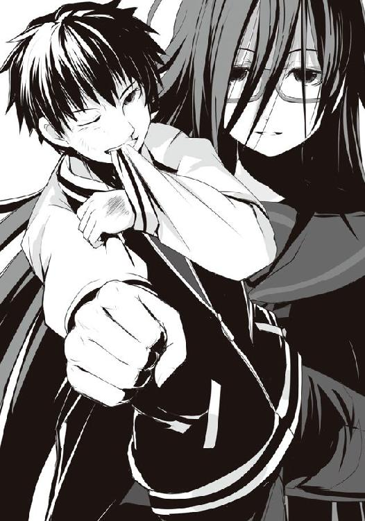
僕はチラリと再び月桂冠を見る。透明な蓋の向こうに眠るそれは黄金にも似た美しき色合い。我が家の食卓に載る哀れなロールキャベツとは本当に雲泥の差だ。もはや別物である。
我が家のは寿司よりちょい大きいサイズで、その中には何の肉かすらよくわからない雑にカットされた立方体の摩訶不思議な肉が収まるそれ。噛めば妙に繊維質なキャベツからにゅっとはみ出して、ボトリと落ちてしまう......アレ。母には悪いが、ぶっちゃけ『キャベツと謎の肉のコンソメスープ煮かんぴょうとベーコン入り』といった感じだった。
それを生まれてこのかた普通のロールキャベツと信じてきたこの屈辱......今こそ晴らしてやる！ この少年の拳大はあろうかというまん丸く大きなロールキャベツで!!
営々と進化し続けた最終型。どれほどうまいのか。確かめてやろうじゃないか!!
意識を集中しろ。憎しみでなく、怒りでなく、恨みでもなく、食欲こそがここの全てだ。
腹の虫よ、僕にあと一撃分の力を。烏頭を......弁当と僕とを阻む、障害を打ち砕く力を！
僕は瞼を開く。烏頭を見据える。その背後に立つ魔導士もオルトロスも、弁当コーナー前以外の全ては消え、ただ障害である烏頭を見据える。今宵倒すべき、目標を捉える。痛みも痺れも全てが消え失せるほど、僕は彼女に全ての意識を向けた。
「......へぇ......そんな顔、できるんだ。......ちょっと、面白い」
かすかに動揺が走った烏頭だったが、じゃ行くよ、と口にするとまた無感情な瞳で僕を見る。
――来る。烏頭が飛ぶようにして接近。初撃は蹴り。僕は右手で弾くも、ドッシリと構えた下半身はまだ動かさない。烏頭は弾かれた足を引き、続けざまに反対の足。僕は動かず、腹で受ける。鈍い衝撃。しかしそれでもなお、僕は烏頭を見つめながら刻を待つ。まだ、遠い。
槍水先輩とガリー・トロットの戦いを思い出せ。あの時、先輩は......。
烏頭が着地と同時に腰を落とし、踏み込んでくる。
――ここだ。一撃で倒すのなら、完全にぶち込む。その間合いが、ここだ！
右足、右腕を引く。烏頭の左右からの平手が迫る中、右足で体を押す。左足が床を捉え、体を引っ張る。そして、腰を捻りながら僕は掌底を――。
炸裂音。右足に平手が入った。しかしすでに重心は左足に移っている。僕はさらに体を前へ。続けて炸裂音。今度は左顔面。頭が破裂したような衝撃と共に左目の視力が失せる。だが、右目はまだ、生きて、烏頭を捉え続ける。
腰を捻り、右腕を前へ。体ごとぶつかるようにして掌底を烏頭の腹部に叩き込む。だが烏頭が僕の肩を掴み、吹き飛ばされまいとして粘る。彼女の髪が僕を包み、そして鼻先が触れ合う距離で烏頭と視線を交わす。
僕は咥えていた袖を離し、雄叫びを上げた。右腕を伸ばす。肩から彼女の手が離れる。その瞬間烏頭の体を、完全に押し飛ばした。烏頭の細い体がスーパーマーケットをブッ飛ぶ。
僕は己の攻撃の勢いを止められず、そのまま床を転がった。ドサッという音に顔を上げてみれば、グッタリとした烏頭の体を魔導士が抱き留めていた。
勝った。僕の......いや、僕たちの、勝ちか。僕一人の勝利とするには人の手を借りすぎた。
僕は最後に助言してくれた茶髪に礼を、そして月桂冠の弁当を奪取するために右足を引きづりながら立ち上がって振り返ると......度肝を抜かれた。手に弁当を持つ茶髪が立っていた。
「ワンコはホント、いざという時、頼りになるわね」
ボロボロの茶髪が言ったその短い言葉だけで、僕は察した。つまり僕は......騙された!? じゃ何か!? ひょっとして僕は茶髪にいいよう扱われて烏頭の囮に......うぉぉおぃ!?
敵は味方、しかし味方も敵か......。それがこの場、半額弁当争奪戦か。厳しすぎるだろ！
僕が愕然としていると床の上を転がっていた狼たちがゾンビよろしく、呻きを上げながら床を這い、弁当を目指し始めた。弁当が減ったことで腹の虫が最後の底力を出してきたらしい。
クッソー！ と、僕は声を上げながら右足を引きずりながら陳列棚を目指す。途中ウルフヘアが足を掴んできたので蹴り飛ばしてやった。
果たして辿り着いた陳列棚。シンプル弁当とコロッケ弁当、さぁ、どっちにする!? 迷っている暇はないぞ!? ゾンビな狼が大量に群れて......って、アレ？
「もう食べ飽きちゃった。......それに最後頑張ったのは、ワンコだからね」
陳列棚に残っていたのはコロッケ弁当と......月桂冠、真・ロールキャベツ弁当。
僕は右手でロールキャベツ弁当を手に獲ると、レジに向かっていく茶髪を見た。
チャオ。彼女はそう笑うように言って、セーターからはみ出す指先をヒラヒラと動かした。
●
烏頭が見ていたのは真っ直ぐに自分だけを見つめてくる獣の目をした佐藤だった。
鼻先が触れ合うぐらいの距離で、視界がぼやけそうになる距離だったのに、何故か彼の瞳だけは一切の歪みもピントのずれもなく、はっきりと見えていた......気がする。
その次は静寂と暗闇。数瞬か、数秒の意識の途絶の果てに烏頭は想いを寄せている男の腕に抱かれている自分を見つけた。金城優に、抱き留められていたのだ。
しかし優の顔は烏頭には向いていなかった。烏頭は必死に見つめても、彼は見てくれない。昔と同じようにその視線は他に向けられている。かつては槍水仙。そして今は......佐藤洋。
月桂冠の弁当を獲った彼が優、そしてオルトロスと名乗った双子と話していた。優と双子はジジ様の店に向かい、そこで戦うのだという。双子は勝ってみせると佐藤に微笑んでいた。
双子と優に向けられていた佐藤の目が烏頭に向けられ、目があった。気まずそうな目だった。
「わかってる......佐藤。約束......鍵、上着のポケット......」
しかし佐藤はまだ左腕が使えない上、右手には弁当を持っていたため、代わりに双子の一人が部室の鍵を取り、佐藤のポケットに入れた。それを見届けると烏頭はまた気を失う。
次に目を覚ました時は今度は床の上で一人で寝かされていた。すでに優の姿も、彼に抱き留められていた感触も、何も残っていない。磨き抜かれた綺麗で冷たい床があるだけだ。
烏頭は体を横にして、胎児のように膝を曲げて縮こまる。長い髪が視界の全てを覆った。
結局、やっぱり、ダメだった。かつてと同じく、また負けた。しかも今度は優ではなく仙の後輩に負けたのだ。彼は自分を見てくれない。見つめる価値も感じてくれない。
そのことが酷く悲しかった。彼と男女の関係になれなくても、敵でもいいから彼に見つめていて欲しかった。しかしそのために用意した今回の作戦も全て潰え、自分はまた一人ぼっちだ。
暗闇の中で、かつてのＨＰ部の思い出が走馬燈のように流れていく。楽しかった思い出。自分の人生で一番幸せだった時間。仲間がいて、後輩がいて、好きな人がいて、夜遅くまでみんな一緒にあの部室で笑い合っていた。取り戻せない時間。
真っ暗だった。そんな中に、一筋の光が差し込んでくる。目が眩むような店内照明。それを後光にして、誰かが指先で彼女に覆い被さっていた髪を分け、こちらを覗き込んでいた。
レジ袋を持った佐藤洋。彼は驚いた顔をしていた。
「あっ、すみません。......一応、大丈夫かなって、思って」
佐藤の驚く顔を見ていて、烏頭は自分が今涙を流していたことに気がついた。彼女は慌てて眼鏡を押し上げて目をこすりながら、体を起こした。辺りは茶・コーヒーコーナー。エントランスが近い、こんな場所にまで自分が吹っ飛ばされていたことに今度は烏頭が驚いた。
ガサリとレジ袋の音。佐藤は困ったような顔をしたまま、立ち去ろうとしない。烏頭は床に座ったまま彼を見上げ、何故立ち去らないのかを考え、あることを思い出した。
「あっ......あっちの約束......のこと......？ あれは......その......」
「僕じゃダメなんですよね。わかってます。......残念ですけど。あ、そうだ、あの......」
そこまで読まれていたのか。烏頭は驚きながらも立ち上がると、彼に背を向けて逃げるように歩きだす。何か後ろから聞こえていたが、全て聞こえないフリをした。カップ麺を買おうかと思ったが、レジ近くにあるポットで顎髭の男がズボゾボボゾォ......と、途中でお湯がなくなり、頭を抱えている姿が見えたので、諦めた。仕方なくパンコーナーにあったスライスされたライ麦パンのパックを手に取り、レジを抜ける。帰ればマーガリンがあったはずだ。
かつて仲間たちと歩いた夜道を、烏頭は一人歩き行く。痛いぐらいの寂しさが、辛かった。
ふと、どこからか肉が焼けるような良い匂いが烏頭の鼻先をかすめる。本格的に泣いていたら気づかない程度の弱い匂い。
何だろ、と、烏頭はその匂いに誘われるがまま、近くの公園に入っていった。
そこでは小さな焚き火をおこす山乃守喨がいた。今の時間帯に公園にいるということは......どうやら女のところから放り出されたらしい。しばし、二人は見つめ合った。
「えーっと......コンビーフ、喰うか？ 少ねぇけど」
「......ライ麦パン、あるけど」
マジで!? と喨は歓喜した。彼は焦げ混じりのコンビーフをライ麦パンに挟んでちょっとしたサンドイッチのようなものを素早く作ってくれる。
「話は佐藤から聞いたよ。大体な。......その様子じゃ魔導士に挑んで負けたか」
烏頭はベンチに座ると、先ほどの争奪戦について簡単に話した。最後まで喨は焚き火をイジりながら相づちを打つだけで何も言わない。昔から人の話を聞く時は徹底していた。
「......そこまでするぐらい、あの男が好きか。今でも。何がいいんだ、あんな弁当バカ」
「喨と逆のところ。側にいたら......わかる。頼りになって、芯があって、そしてとてもマジメ。研ぎ澄まされた刀みたいな、そんな人。力強い。あの人に見つめてもらえたら......」
言っていて烏頭はまた涙が出てきたのに気がついて、慌てて言葉を切り、涙を拭った。
しばらくパチパチと枯れ木が爆ぜる音だけが二人の間を埋めていたが、喨が煙草を咥えると、そういえばさ、と話題を振ってきた。
「おまえ、佐藤に色仕掛けかましたんだってな。処女のすることじゃないな、まったく」
ビクッと烏頭は肩を震わせ、喨を睨む。そこまで佐藤が喋っていたとは思わなかったが、よくよく考えてみれば喨はガンコナー。相手の心に潜り込むのが専門だった。全部聞かれてると考えると......顔に赤みが差したのが自分でわかった。焚き火の明かりで誤魔化せるだろうか。
「どうせあの後他に男作ってないだろ。なら、な。どうだった、感想は？」
烏頭はベンチの上で、コンビーフサンドを持ったまま膝を抱き、顔を埋めた。
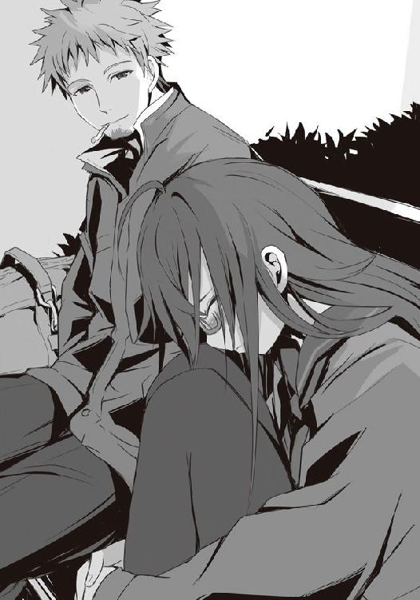
「......死ぬほど、恥ずかしくて......くすぐったかった」
そのまま続けられたらどうする気だったんだよ、と喨は笑う。しかし烏頭の推察では必ず佐藤なら止めるという確信があった。そもそもそうじゃない男なら優が目をかけることも、仙が引き入れることもしないだろう。全て計算通り......だが、最後の最後で顔が赤くなるのだけはどうにもならなくて、慌てて前髪で隠したり、テンパって変な笑い声が出てしまった。
そういえば仙のために激昂した時、そして最後に掌底を放った時の佐藤の目は......どこか本気になった時の優に似ていた気がする。そんなことを考えていると、佐藤の名が口から漏れた。
「何だよ、洋は洋でアリだなとか、思ったか？」
「......どうかな」
「実はな、あれは俺が育てたようなもんなんだ。......だからさ、みこと。もう一度、俺じゃダメか？」
隣に座った喨が、真っ直ぐに見つめて言ってきた。相変わらず嘘くさい真顔だった。
「他に誰も......いないから、そう言う......でしょ？」
喨が笑う。明るく、ふざけた笑い。しかし聞いていると全てがどうでもよくなる気分になる。
烏頭はコンビーフサンドに齧りついた。ありあまる脂と肉汁がパンに染み、肉本来のものと下味がしっかりついていて調味料を必要としないワイルドな味。ただ......。
「......少し、しょっぱいな」
そんなもんさ、と喨は笑う。烏頭もまた、少し、笑った。
○
僕は一人だけの部室で、窓から月を見上げていた。
ぐぅ〜、と半日以上何も食物を与えていない腹の虫が呻く。
「......まだかなぁ。ジジ様の半値印証時刻はもう終わったと思うんだけど......」
オルトロスとの約束を果たすため、僕は一時間もの間二人を待ったが、そんな僕に訪れたのはドアをノックする音ではなく、携帯の着信音だった。相手は沢桔鏡。
『すみませんが、先ほど約束した夕食の件、キャンセルということにしてもらえませんか？』
「え。な、なんで......？ あっ、ひょっとして弁当が全部なくなっちゃってたとか？」
いえ、その〜、という鏡らしくないはっきりしない言葉に僕は首を傾げた。すると明らかに電話を持っていないであろう、梗の声が電話越しにかすかに聞こえてくる。
『鏡、絶対に言ってはいけませんわ!! あれだけの啖呵を切っておきながら、魔導士さんに完敗した上、お総菜すらなくなるまで二人して失神していただなんて!! それが知れてしまっては佐藤さんはもうわたくしたちを......友と呼べる敵だなんて絶対に思ってくれない、せいぜいがザコ、その他大勢の......あっあ、あぁあああああああああああああぁあぁ！』
そして、鏡のものと思しきため息が......。
『え〜......大体お察しが付くかと......』
「あぁ、うん。でもせっかく待ったんだし、一緒に......」
『わたしもそう言ったんですが......』
『あぁもう、今宵は横にいるといったのにあの有様、そしてこんな結果となってしまっては......佐藤さんに合わす顔がありませんわああぁあああぁあぁぁ!!』
『とのことですので。すみません。......またの機会には、是非』
僕は苦笑して、彼女らとの電話を切り、仕方なく一人の夕餉を始めることにした。
ロールキャベツ弁当から月桂冠のシールを剥がすと、電子レンジに入れ、その間に冷蔵庫から麦茶を取り出す。月桂冠のシールは別途フォルダにて獲得者の名前と共に保管するのだけれど、いつも槍水先輩がやってくれるので、どこにフォルダがあるのか見当がつかない。仕方なく生徒手帳に一時待避させておくことにした。
チンッと、温めが終わったものの、僕は一度弁当容器の下に手を入れて温度を確かめる。......うん、温い。もう一回温め。二度目はガッチリやった。
いただきます！ その声と共に蓋を開ければふわわぁ〜っと広がる和風出汁の香り。鰹出汁だろうか。あ〜、やっぱり烏頭が獲った時も思ったけれど、ご飯に合わせるのならコンソメよりも和風出汁の方が嬉しいよね。
僕は今一度湯気の向こうにある弁当を見る。やや深底の長方形型の弁当容器、その半分を埋める黒ごまのかかった白いご飯、色味の薄い卵焼きと紅白のカマボコ。そして白ごまのかかったほうれん草。そして......大きな大きな和風ロールキャベツ二個が出汁と共にある。
僕はちょいと箸の先でその出汁の味見をしようとするのだが箸が重くなる。出汁に粘度が!?
あれ、確か烏頭が獲った時はゼラチンを溶かしてあって、常温じゃ固まっているものの、電子レンジで熱するとシャバシャバに液体化するタイプだったはず。それが片栗を使用してのあんかけ風になっている!? 寒い季節にはなお持ってこいじゃないか!!
とりあえず出汁の味見。......ふむふむ。風味付けで醤油を使っているものの、香りから察した通り基本は濃いめにとった鰹出汁。それにトロみがついているおかげで、まったりと......ほほぅ。ほのかにキャベツの甘みや包まれているお肉の旨味も溶け出しているおかげで複雑さを増し、パワーもあるじゃないか。
更に期待度を高めた僕は早速その大きなロールキャベツを箸で掴み上げる。紅葉型にカットされたニンジンが滑り落ち、トロ〜っとあんが尾を引いた。大きさといい、このズッシリ感といい......これから訪れる至福の未来を想像するのは容易なのだけれど、それと同時に熱さに悶える自分が同じぐらい容易に想像出来てしまうのが何とも......。二度目の加熱はやめておくべきだったかもしれない。少し齧って......いや、そうするとキャベツだけを食べることになる。途中で分離してしまう運命だとしても、せめて一口目は一緒に食べたい。......ん？ そういえばコレ、かんぴょうとかで巻かれていないし、爪楊枝も使われていない......。これで型崩れを防ぐとなるとスープの量を減らしたり、鍋に隙間なく詰めたり......ロールキャベツが躍らないようにしないといけなくて、手間がかかるはずだ......。
それは何かを煮込む時には当たり前のことと言えるのかもしれない。当たり前のことを当たり前に行う......実はそれって難しいことだ。当たり前だからこそ人は怠り、失念し、そして失敗する。スーパーに現れる名も無き狼たちがただの敵ではないことを忘れていた僕がいい例だ。
僕は口元がにやけるのを感じながら、ロールキャベツに齧りつく覚悟を決めた。
僕はすぐにとれるよう麦茶の位置を調整し、何度か息を吹きかけた末に火傷を覚悟の上で齧りつく。表面を覆うキャベツはしっかりと茹でられ柔らかい。それがあんのトロみと相まって口に入れた瞬間、口内の空間を全て埋めるように柔軟に形を変える。
歯がキャベツを貫き、その中にあるお肉へ。思いの外しっかりとした食感、しかし歯切れは良い。キャベツも繊維が硬すぎず、簡単に噛み切れ、肉と分離することがなかった。
口の中が地獄のように熱く、吹き出した息が白くなる。ほっほっと息を吐きながら口の中でロールキャベツを転がすも、トロみの強い出汁が僕を襲ってくる。
......しかしここで麦茶を口にしては何かが終わる気がして、我慢した。
果たしてその味は......どうだ。優しい甘みを持った寒玉キャベツはあんと混じり合ってひたひたと柔らかく、その食感は最高に心地よい。まるで舌全体が抱きしめられるようだ。
そして、それに包まれていたお肉は意外なことに、鶏だ。プリプリとした食感がほのかに残るぐらいの粗挽き肉にコリコリとした歯ざわり、恐らく軟骨を砕いたものだろう。どちらかといえばつくねに近い。さらにそれには長ネギと大葉、そしてほのかにショウガの爽やかさが派手にならないぐらいに、意識しなければ気づかない、けれどなければきっと寂しく思う、そんな程度に薬味として加えられている。
肉のくどさがないつくね風の鶏肉、キャベツの甘み、鰹出汁の風味、それらがトロみの中で一つになり、包み込まれるような優しい味わいになっていた。そして、ひたひたと柔らかく、プリプリと弾け、コリコリと転がるこの豊かな食感もまた楽しい。また、あんかけ風の出汁も、食べる時にボタボタと垂れたり、齧り付く際に汁が吹き出たりしないのは嬉しい配慮だ。
決してどれか一つがズバ抜けた個性を出してるわけじゃない。一つ一つはありきたりかもしれない。けれどその全体が合さることで、たった一口で相手を唸らせる料理となっていた。
......しかもこれ、咀嚼していくにつれて、鶏のたっぷりの肉汁が、口の中の出汁と混じり合い、そのおとなしく上品だった味に肉特有のパワーがダイナミックに加わり、僕にご飯を促してくる。僕は素直に白米を掻き込んだ。その時には口の中にあったトロみは唾液内の消化酵素によって粘度を下げ、シャバシャバになってご飯の喉越しを良くしてくれる。
そういえば唾液量が少ない日本人からすると汁気の多い食べ物は食べやすいと感じるらしい。それを考えれば......なるほど、これはいいご飯のおかずだ。
たった一品の料理でありながら、優しくて楽しくて、グッときて、しっかりとその仕事をこなす。その変化を想うと、まるで......清楚なお嬢様と仲睦まじくお付き合いし、親密になった暁にキャベツという名の洋服を脱がしてみれば、それまでには想像できない大胆な一面を見せてくれ、そしていよいよ夫婦となってみれば旦那を支える良妻となる......そんな男性の望みを全て合わせ持った素晴らしい女性の一生が見えた気すらする。
......ちょっと言い過ぎかもしれないけれど、あながち間違いというわけでもないはずた。
これがアブラ神の試行錯誤の末の、一つの結論。彼自身が認めた月桂冠の弁当。
「あ〜、おいしい。誰かとこの味の素晴らしさを分かち合いたいけど......うーん......」
一人で食べる弁当は僕にいろんなことを思い出させる。烏頭のこと、魔導士のこと、沢桔姉妹のこと、狼のこと......そして、槍水先輩のこと。
僕は一度首を振り、難しいこと面倒なことを頭から追い出して窓から月を見上げた。
今は、このうまい弁当を堪能しよう。それでいい。......とか一人格好つけていると、僕の携帯が鳴り響いた。危なく箸を落としそうになりつつも、携帯を開いてみればそこにあった名前は――槍水先輩。
今までのことが走馬燈のように蘇り、携帯を持つ手が一瞬にして汗ばんだ。電話が鳴り響く。......出ないわけにはいかないだろう。っていうか、出たい。先輩の声が、聞きたかった。
『ん、佐藤か？ 私だ。久しぶりだな』
電話回線によるノイジーな音声だというのに、その声は凄く懐かしく感じる。
「はい、お久しぶりです！ どうでしたか、台湾は」
電話の向こうで先輩は『何だ、いきなりだな』と口にした後、クスクスと笑った。
『......いやなに、楽しかったぞ？ 大変だったり、驚くことがいっぱいあったり。その中でも特に佐藤に教えてやりたかったことが一つあってな。......広部と会った』
予想外の名前が出てきて、僕は耳を疑った。しかし先輩がこういう時に何の前振りもなく冗談を挟み込んでくる憎らしいことをするとは思えない。......ということは、事実だと？
『映画の撮影で来ていたらしい。学校側としても知らない相手じゃないからと、一緒に自由行動したりしてな。......まぁ、この話は他の土産話と一緒に今度部室で話そう』
え〜、と不満の声を上げれば、我慢しろ、と先輩はクスクスと電話口で笑った。
『それで、そっちはどうだ？ 私がいない間、何かあったか？』
何かあったか、と問われればそりゃあった。いっぱいあった。でも......。
〝君たちが嫌な思いをすれば、後でそれを知った仙も、きっと嫌な思いをするだろうな、って、そう思ったから〟
僕の脳裏に、あの烏頭の言葉が蘇った。きっと先輩がいない間のことは、彼女にとって嫌なことになる。いずれ誰かから聞くことになるとは思うけれど......せっかく久しぶりに声が聞けたのに、今それを言うのはちょっと嫌だった。だから、僕は――。
「いいえ、いつも通りですよ。ただ、少し寂しいだけです」
先輩はそうか、と安心したような声。その声を聞いて、自然と僕の口から言葉が漏れた。
「......早く、先輩に会いたいです」
『ん、私もだ。登校は明後日だが、明日の夜には戻る。だからその日、部室で会おう』
はいっ、と僕は犬が吠えるみたいな声を上げてしまい、彼女の笑いを誘う。
『それじゃ、今日はこんなところだな。何かあるか？』
「特には......あ、例の月桂冠を保管するフォルダってどこにしまってましたっけ？ 実は今アブラ神の月桂冠が目の前に。真・和風ロールキャベツ弁当っていうんですけど」
『月桂冠!? しかも滅多に出ないアブラ神のだと......。それはどういう弁......いや、ダメだ。今日はもう寝るから......聞いたらお腹が......くそぅ！』
先輩はらしくもなく本気で悔しそうな声を出して、僕は笑ってしまった。先輩は不満げな声でフォルダの場所を教えてくれると、それで電話は終わりとなった。
忘れないうちにそのフォルダを取り出し、そこに先ほど生徒手帳に挟んでおいた月桂冠シールを貼り付け、日付と名前を入れた。
何となくパラリパラリと過去のページを遡ってみれば、しばらく槍水先輩の名が続いた後、金城優の名が並ぶ。そしてところどころに知らない人の名前や、烏頭みことの名。
......ふと、ある疑問が浮かぶ。
槍水先輩を守るために魔導士は部をやめ、それに続くように烏頭もまた部をやめた。それはわかる。でも、何故魔導士はその後部に戻らなかったのだろう？ そして他にもいたはずのＨＰ部員は何故、部をやめ、槍水先輩一人だけが残ったのか......。
今まで先輩が話さなかったＨＰ部の過去。気になるといえば気になる。
でも、今は......いいか。わからないことや難しいことより、アブラ神の月桂冠を楽しもう。
そして、楽しいことを考えよう。
僕はいまだ何も貼られていない、先のページを開く。
ここに僕の名を並べること、とかね。槍水先輩の名と共に。......白粉のはおまけ程度で。
そんなことを考えながら、僕はまたロールキャベツに齧りついた。
《了》
著者紹介
アサウラ
１９８４年生まれ。北海道出身。東京在住。
大学在学中に第５回スーパーダッシュ小説新人賞に応募した「黄色い花の紅」で大賞を受賞、デビュー。
「ベン・トー」シリーズが「このライトノベルがすごい！ ２０１１」（宝島社）で第５位にランクインし、大ブレイク。
柴乃櫂人（しばの・かいと）
１９８１年生まれ。大阪出身。東京在住。
ゲーム会社に所属しニンテンドーＤＳの大ヒットＲＰＧ「ルミナスアーク」などのキャラクターデザインを手がけたのち、フリーに。
「ベン・トー」シリーズのコミカライズで漫画家デビューも果たす。
集英社ｅスーパーダッシュ文庫
ベン・トー ７
真・和風ロールキャベツ弁当２８０円
著者 アサウラ
(C) ASAURA 2012
２０１２年５月10日発行
この電子書籍は、集英社スーパーダッシュ文庫「ベン・トー ７ 真・和風ロールキャベツ弁当２８０円」
２０１１年７月27日発行の第５刷を底本としています。
発行者 鈴木晴彦
発行所 株式会社 集英社
東京都千代田区一ツ橋２丁目５番10号
〒１０１−８０５０
［電話］
０３−３２３９−５２６３（編集部）
０３−３２３０−６３９３（販売部）
０３−３２３０−６０８０（読者係）
制作所 株式会社デジタルディレクターズ
本作品の全部また一部を無断で複製、転載、改竄、インターネット上に掲載すること、および有償無償に関わらず、本データを第三者に譲渡することを禁じます。なお個人利用の目的であっても、コピーガードを解除しての複製は、法律で禁じられています。